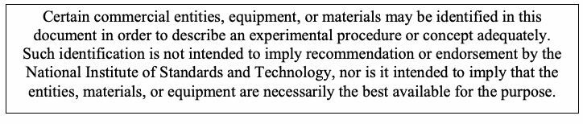
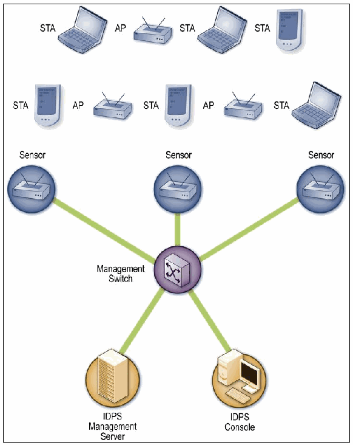

NIST SP 800-94 日本語訳
英語タイトル : Guide to Intrusion Detection and Prevention Systems (IDPS)公開日 : 2007-02-20
原文URL : https://csrc.nist.gov/pubs/sp/800/94/final
翻訳編集 : 自動生成
[要約] SP 800-94 は、侵入検知システム（IDS）および侵入防止システム（IPS）の技術を理解し、侵入検知・防止システム（IDPS）を設計、実装、構成、保護、監視、保守するのに役立つガイドです。侵入検知と防止の原則、IDPS 技術の概要、ネットワーク型、ワイヤレス、ネットワーク挙動分析（NBA）、ホストベースの各 IDPS、複数の技術の利用と統合、製品の選定を章立てで扱います。組織が IDPS の技術と実務を把握し、導入と運用に必要な判断を行うための実務指針を示すことを目的としています。
有志による非公式の日本語訳です。NIST および米国商務省が作成・承認・推奨したものではありません。要件の確認にはNIST の正式版 PDFを参照してください。
［NIST のロゴ。公的な標章のため、この非公式サイトには掲載していない。原本 PDF を参照。］
Special Publication 800-94
Special Publication 800-94
Guide to Intrusion Detection and Prevention Systems (IDPS)
侵入検知・防御システム（IDPS）ガイド
Recommendations of the National Institute of Standards and Technology
米国国立標準技術研究所の勧告
Karen Scarfone Peter Mell
Karen Scarfone Peter Mell
NIST Special Publication 800-94
NIST Special Publication 800-94
Guide to Intrusion Detection and Prevention Systems (IDPS)
侵入検知・防止システム（IDPS）ガイド
Recommendations of the National Institute of Standards and Technology
米国国立標準技術研究所の勧告
Karen Scarfone Peter Mell
Karen Scarfone Peter Mell
C O M P U T E R S E C U R I T Y
コンピュータセキュリティ
Computer Security Division Information Technology Laboratory National Institute of Standards and Technology Gaithersburg, MD 20899-8930
コンピュータセキュリティ部門 情報技術ラボラトリ 米国国立標準技術研究所 Gaithersburg, MD 20899-8930
February 2007
2007年2月
U.S. Department of Commerce
米国商務省
Carlos M. Gutierrez, Secretary
Carlos M. Gutierrez、長官
Technology Administration
技術局
Robert C. Cresanti, Under Secretary of Commerce for Technology
Robert C. Cresanti、技術担当商務次官
National Institute of Standards and Technology
米国国立標準技術研究所
William Jeffrey, Director
William Jeffrey、所長
Reports on Computer Systems Technology
コンピュータシステム技術に関する報告書
The Information Technology Laboratory (ITL) at the National Institute of Standards and Technology (NIST) promotes the U.S. economy and public welfare by providing technical leadership for the nation’s measurement and standards infrastructure. ITL develops tests, test methods, reference data, proof of concept implementations, and technical analysis to advance the development and productive use of information technology. ITL’s responsibilities include the development of technical, physical, administrative, and management standards and guidelines for the cost-effective security and privacy of sensitive unclassified information in Federal computer systems. This Special Publication 800-series reports on ITL’s research, guidance, and outreach efforts in computer security and its collaborative activities with industry, government, and academic organizations.
米国国立標準技術研究所（NIST）の情報技術研究所（ITL）は、米国の計測・標準インフラストラクチャに技術的リーダーシップを提供し、米国経済と公共の福祉を促進している。ITLは、情報技術の開発と生産的利用を前進させるため、試験、試験方法、参照データ、概念実証実装、および技術分析を開発する。ITLの責務には、連邦政府のコンピュータシステムにおける機密性の高い非機密情報を費用対効果の高い方法で保護し、プライバシーを確保するための技術的、物理的、管理的、および運用管理上の標準とガイドラインの開発が含まれる。本特別刊行物800シリーズは、コンピュータセキュリティに関するITLの研究、指針、普及啓発活動、および産業界、政府、学術機関との協力活動を報告するものである。
National Institute of Standards and Technology Special Publication 800-94 Natl. Inst. Stand. Technol. Spec. Publ. 800-94, 127 pages (February 2007)
米国国立標準技術研究所 特別刊行物800-94、Natl. Inst. Stand. Technol. Spec. Publ. 800-94, 127ページ（2007年2月）
Certain commercial entities, equipment, or materials may be identified in this document in order to describe an experimental procedure or concept adequately. Such identification is not intended to imply recommendation or endorsement by the National Institute of Standards and Technology, nor is it intended to imply that the entities, materials, or equipment are necessarily the best available for the purpose.
原本PDFの抜粋画像

本書では、実験的な手順または概念を十分に説明するために、特定の商業的な事業体、機器、または材料を特定している場合がある。そのような特定は、米国国立標準技術研究所による推奨または支持を意味するものではなく、また、当該事業体、材料、または機器が必ずしも入手可能な最良のものであることを意味するものでもない。
Acknowledgements
謝辞
The authors, Karen Scarfone and Peter Mell of the National Institute of Standards and Technology (NIST), wish to thank their colleagues who reviewed drafts of this document and contributed to its technical content. The authors would like to acknowledge John Connor, Tim Grance, Anoop Singhal, and Murugiah Souppaya of NIST; Michael Gerdes, Ralph Martins, Angela Orebaugh, and Mike Zeberlein of Booz Allen Hamilton; and Steve Sharma of Project Performance Corporation for their keen and insightful assistance throughout the development of the document. The authors particularly want to thank Rebecca Bace of KSR for her careful review of the publication and for her work on the predecessor publication, NIST Special Publication 800-31, Intrusion Detection Systems. The authors would also like to express their thanks to security experts Andrew Balinsky (Cisco Systems), Anton Chuvakin (LogLogic), Jay Ennis (Network Chemistry), John Jerrim (Lancope), and Kerry Long (Center for Intrusion Monitoring and Protection, Army Research Laboratory), as well as representatives from the Department of State and Gartner, for their particularly valuable comments and suggestions. Additional acknowledgements will be added to the final version of the publication.
著者である米国国立標準技術研究所（NIST）のKaren ScarfoneおよびPeter Mellは、本書の草稿をレビューし、技術的内容に貢献した同僚に謝意を表する。著者らは、本書の策定を通じて鋭く洞察に富む支援を提供したNISTのJohn Connor、Tim Grance、Anoop Singhal、Murugiah Souppaya、Booz Allen HamiltonのMichael Gerdes、Ralph Martins、Angela Orebaugh、Mike Zeberlein、およびProject Performance CorporationのSteve Sharmaに謝意を表する。特に、刊行物の慎重なレビューと、前身の刊行物であるNIST特別刊行物800-31「侵入検知システム」に関する業績について、KSRのRebecca Baceに感謝する。また、セキュリティ専門家のAndrew Balinsky（Cisco Systems）、Anton Chuvakin（LogLogic）、Jay Ennis（Network Chemistry）、John Jerrim（Lancope）、Kerry Long（陸軍研究所の侵入監視・防御センター）、ならびに国務省およびGartnerの代表者にも、特に貴重なコメントと提案をいただいたことに謝意を表する。謝辞は、本刊行物の最終版に追加される予定である。
Trademarks
商標
All product names are registered trademarks or trademarks of their respective companies.
すべての製品名は、それぞれの企業の登録商標または商標である。
Table of Contents
目次
Executive Summary..............................................................................................................ES-1
概要..............................................................................................................ES-1
1. Introduction ......................................................................................................................1-1
1. はじめに ......................................................................................................................1-1
1.1 Authority...................................................................................................................1-1
1.1 権限...................................................................................................................1-1
1.2 Purpose and Scope .................................................................................................1-1
1.2 目的と適用範囲 .................................................................................................1-1
1.3 Audience..................................................................................................................1-1
1.3 対象読者.............................................................................................................1-1
1.4 Document Structure.................................................................................................1-1
1.4 文書の構成.........................................................................................................1-1
2. Intrusion Detection and Prevention Principles .............................................................2-1
2. 侵入検知・防止の原則 .............................................................................................2-1
2.1 Uses of IDPS Technologies .....................................................................................2-1
2.1 IDPS技術の用途 .................................................................................................2-1
2.2 Key Functions of IDPS Technologies ......................................................................2-2
2.2 IDPS技術の主要機能 ........................................................................................2-2
2.3 Common Detection Methodologies..........................................................................2-3
2.3 一般的な検知手法..............................................................................................2-3
2.3.1 Signature-Based Detection...........................................................................2-4
2.3.1 シグネチャベースの検知...........................................................................2-4
2.3.2 Anomaly-Based Detection............................................................................2-4
2.3.2 異常ベースの検知....................................................................................2-4
2.3.3 Stateful Protocol Analysis.............................................................................2-5
2.3.3 状態を考慮したプロトコル分析.............................................................................2-5
2.4 Types of IDPS Technologies ...................................................................................2-6
2.4 IDPS技術の種類 ...................................................................................2-6
2.5 Summary..................................................................................................................2-7
2.5 まとめ..................................................................................................................2-7
3. IDPS Technologies...........................................................................................................3-1
3. IDPS技術...........................................................................................................3-1
3.1 Components and Architecture .................................................................................3-1
3.1 構成要素とアーキテクチャ .................................................................................3-1
3.1.1 Typical Components.....................................................................................3-1
3.1.1 一般的な構成要素.....................................................................................3-1
3.1.2 Network Architectures ..................................................................................3-1
3.1.2 ネットワーク・アーキテクチャ ..................................................................................3-1
3.2 Security Capabilities ................................................................................................3-2
3.2 セキュリティ機能 ................................................................................................3-2
3.2.1 Information Gathering Capabilities ...............................................................3-2
3.2.1 情報収集機能 ...............................................................3-2
3.2.2 Logging Capabilities .....................................................................................3-2
3.2.2 ログ記録機能 .....................................................................................3-2
3.2.3 Detection Capabilities...................................................................................3-3
3.2.3 検知機能...................................................................................3-3
3.2.4 Prevention Capabilities.................................................................................3-4
3.2.4 防止機能.................................................................................3-4
3.3 Management............................................................................................................3-4
3.3 管理............................................................................................................3-4
3.3.1 Implementation.............................................................................................3-4
3.3.1 導入.............................................................................................3-4
3.3.2 Operation and Maintenance .........................................................................3-6
3.3.2 運用と保守 .........................................................................3-6
3.3.3 Building and Maintaining Skills.....................................................................3-9
3.3.3 スキルの構築と維持.....................................................................3-9
3.4 Summary................................................................................................................3-10
3.4 まとめ................................................................................................................3-10
4. Network-Based IDPS........................................................................................................4-1
4. ネットワーク型IDPS........................................................................................................4-1
4.1 Networking Overview ...............................................................................................4-1
4.1 ネットワークの概要 ...............................................................................................4-1
4.1.1 Application Layer..........................................................................................4-1
4.1.1 アプリケーション層..........................................................................................4-1
4.1.2 Transport Layer ............................................................................................4-2
4.1.2 トランスポート層 ............................................................................................4-2
4.1.3 Network Layer ..............................................................................................4-2
4.1.3 ネットワーク層 ..............................................................................................4-2
4.1.4 Hardware Layer............................................................................................4-3
4.1.4 ハードウェア層............................................................................................4-3
4.2 Components and Architecture .................................................................................4-3
4.2 構成要素とアーキテクチャ .................................................................................4-3
4.2.1 Typical Components.....................................................................................4-3
4.2.1 一般的な構成要素.....................................................................................4-3
4.2.2 Network Architectures and Sensor Locations...............................................4-4
4.2.2 ネットワーク・アーキテクチャとセンサーの配置...............................................4-4
4.3 Security Capabilities ................................................................................................4-7
4.3 セキュリティ機能 ................................................................................................4-7
4.3.1 Information Gathering Capabilities ...............................................................4-7
4.3.1 情報収集機能 ...............................................................4-7
4.3.2 Logging Capabilities .....................................................................................4-8
4.3.2 ログ記録機能 .....................................................................................4-8
4.3.3 Detection Capabilities...................................................................................4-9
4.3.3 検知機能...................................................................................4-9
4.3.4 Prevention Capabilities...............................................................................4-12
4.3.4 防止機能...............................................................................4-12
4.4 Management..........................................................................................................4-13
4.4 管理..........................................................................................................4-13
4.4.1 Implementation...........................................................................................4-14
4.4.1 実装...........................................................................................4-14
4.4.2 Operation and Maintenance .......................................................................4-14
4.4.2 運用と保守 .......................................................................4-14
4.5 Summary................................................................................................................4-14
4.5 まとめ................................................................................................................4-14
5. Wireless IDPS...................................................................................................................5-1
5. ワイヤレスIDPS...................................................................................................................5-1
5.1 Wireless Networking Overview ................................................................................5-1 5.1.1 WLAN Standards..........................................................................................5-1 5.1.2 WLAN Components......................................................................................5-2 5.1.3 Threats against WLANs................................................................................5-3 5.2 Components and Architecture .................................................................................5-3 5.2.1 Typical Components.....................................................................................5-3 5.2.2 Network Architectures ..................................................................................5-5 5.2.3 Sensor Locations..........................................................................................5-6 5.3 Security Capabilities ................................................................................................5-7 5.3.1 Information Gathering Capabilities ...............................................................5-7 5.3.2 Logging Capabilities .....................................................................................5-8 5.3.3 Detection Capabilities...................................................................................5-8 5.3.4 Prevention Capabilities...............................................................................5-11 5.4 Management..........................................................................................................5-11 5.4.1 Implementation...........................................................................................5-11 5.4.2 Operation and Maintenance .......................................................................5-12 5.5 Summary................................................................................................................5-12
5.1 無線ネットワークの概要 ................................................................................5-1 5.1.1 WLAN標準..........................................................................................5-1 5.1.2 WLAN構成要素......................................................................................5-2 5.1.3 WLANに対する脅威................................................................................5-3 5.2 構成要素とアーキテクチャ .................................................................................5-3 5.2.1 一般的な構成要素.....................................................................................5-3 5.2.2 ネットワーク・アーキテクチャ ..................................................................................5-5 5.2.3 センサーの配置..........................................................................................5-6 5.3 セキュリティ機能 ................................................................................................5-7 5.3.1 情報収集機能 ...............................................................5-7 5.3.2 ログ記録機能 .....................................................................................5-8 5.3.3 検知機能...................................................................................5-8 5.3.4 防止機能...............................................................................5-11 5.4 管理..........................................................................................................5-11 5.4.1 導入...........................................................................................5-11 5.4.2 運用と保守 .......................................................................5-12 5.5 まとめ................................................................................................................5-12
6. Network Behavior Analysis (NBA) System....................................................................6-1
6. ネットワーク挙動分析（NBA）システム....................................................................6-1
6.1 Components and Architecture .................................................................................6-1 6.1.1 Typical Components.....................................................................................6-1 6.1.2 Network Architectures ..................................................................................6-1 6.1.3 Sensor Locations..........................................................................................6-2 6.2 Security Capabilities ................................................................................................6-3 6.2.1 Information Gathering Capabilities ...............................................................6-3 6.2.2 Logging Capabilities .....................................................................................6-3 6.2.3 Detection Capabilities...................................................................................6-4 6.2.4 Prevention Capabilities.................................................................................6-6 6.3 Management............................................................................................................6-7 6.3.1 Implementation.............................................................................................6-7 6.3.2 Operation and Maintenance .........................................................................6-7 6.4 Summary..................................................................................................................6-7
6.1 構成要素とアーキテクチャ .................................................................................6-1 6.1.1 一般的な構成要素.....................................................................................6-1 6.1.2 ネットワーク・アーキテクチャ ..................................................................................6-1 6.1.3 センサーの配置..........................................................................................6-2 6.2 セキュリティ機能 ................................................................................................6-3 6.2.1 情報収集機能 ...............................................................6-3 6.2.2 ログ記録機能 .....................................................................................6-3 6.2.3 検知機能...................................................................................6-4 6.2.4 防止機能.................................................................................6-6 6.3 管理............................................................................6-7 6.3.1 導入.............................................................................................6-7 6.3.2 運用と保守 .........................................................................6-7 6.4 まとめ................................................................................................................6-7
7. Host-Based IDPS..............................................................................................................7-1
7. ホストベースIDPS..............................................................................................................7-1
7.1 Components and Architecture .................................................................................7-1
7.1 構成要素とアーキテクチャ .................................................................................7-1
7.1.1 Typical Components.....................................................................................7-1
7.1.1 典型的な構成要素.....................................................................................7-1
7.1.2 Network Architectures ..................................................................................7-2
7.1.2 ネットワークアーキテクチャ ..................................................................................7-2
7.1.3 Agent Locations............................................................................................7-3
7.1.3 エージェントの配置場所............................................................................................7-3
7.1.4 Host Architectures ........................................................................................7-3
7.1.4 ホストアーキテクチャ ........................................................................................7-3
7.2 Security Capabilities ................................................................................................7-3
7.2 セキュリティ機能 ................................................................................................7-3
7.2.1 Logging Capabilities .....................................................................................7-4
7.2.1 ログ記録機能 .....................................................................................7-4
7.2.2 Detection Capabilities...................................................................................7-4
7.2.2 検知機能...................................................................................7-4
7.2.3 Prevention Capabilities.................................................................................7-8
7.2.3 防止機能.................................................................................7-8
7.2.4 Other Capabilities.........................................................................................7-8
7.2.4 その他の機能.........................................................................................7-8
7.3 Management............................................................................................................7-9
7.3 管理............................................................................................................7-9
7.3.1 Implementation.............................................................................................7-9
7.3.1 実装.............................................................................................7-9
7.3.2 Operation....................................................................................................7-10
7.3.2 運用....................................................................................................7-10
7.4 Summary................................................................................................................7-10
7.4 まとめ................................................................................................................7-10
8. Using and Integrating Multiple IDPS Technologies ......................................................8-1
8. 複数のIDPS技術の利用と統合 ......................................................8-1
8.1 The Need for Multiple IDPS Technologies...............................................................8-1
8.1 複数のIDPS技術の必要性...............................................................8-1
8.2 Integrating Different IDPS Technologies..................................................................8-2
8.2 異なるIDPS技術の統合..................................................................8-2
8.2.1 Direct IDPS Integration.................................................................................8-2
8.2.1 IDPSの直接統合.................................................................................8-2
8.2.2 Indirect IDPS Integration ..............................................................................8-3
8.2.2 IDPSの間接統合 ..............................................................................8-3
8.3 Other Technologies with IDPS Capabilities .............................................................8-4
8.3 IDPS機能を持つその他の技術 .............................................................8-4
8.3.1 Network Forensic Analysis Tool (NFAT) Software .......................................8-4
8.3.1 ネットワークフォレンジック分析ツール（NFAT）ソフトウェア .......................................8-4
8.3.2 Anti-Malware Technologies ..........................................................................8-5
8.3.2 マルウェア対策技術 ..........................................................................8-5
8.3.3 Firewalls and Routers...................................................................................8-6
8.3.3 ファイアウォールとルータ...................................................................................8-6
8.3.4 Honeypots ....................................................................................................8-7
8.3.4 ハニーポット ....................................................................................................8-7
8.4 Summary..................................................................................................................8-7
8.4 まとめ..................................................................................................................8-7
9. IDPS Product Selection ...................................................................................................9-1
9. IDPS製品の選定 ...................................................................................................9-1
9.1 General Requirements.............................................................................................9-1
9.1 一般要件.............................................................................................9-1
9.1.1 System and Network Environments .............................................................9-1
9.1.1 システム環境とネットワーク環境 .............................................................9-1
9.1.2 Goals and Objectives ...................................................................................9-2
9.1.2 目標と目的 ...................................................................................9-2
9.1.3 Security and Other IT Policies......................................................................9-2
9.1.3 セキュリティポリシーおよびその他のITポリシー......................................................................9-2
9.1.4 External Requirements.................................................................................9-3
9.1.4 外部要件.................................................................................9-3
9.1.5 Resource Constraints...................................................................................9-3
9.1.5 リソースの制約...................................................................................9-3
9.2 Security Capability Requirements............................................................................9-4
9.2 セキュリティ機能要件............................................................................9-4
9.2.1 Information Gathering Capabilities ...............................................................9-4
9.2.1 情報収集機能 ...............................................................9-4
9.2.2 Logging Capabilities .....................................................................................9-4
9.2.2 ログ記録機能 .....................................................................................9-4
9.2.3 Detection Capabilities...................................................................................9-5
9.2.3 検知機能...................................................................................9-5
9.2.4 Prevention Capabilities.................................................................................9-6
9.2.4 防御機能.................................................................................9-6
9.3 Performance Requirements.....................................................................................9-6
9.3 性能要件.....................................................................................9-6
9.4 Management Requirements.....................................................................................9-8
9.4 管理要件.....................................................................................9-8
9.4.1 Design and Implementation..........................................................................9-8
9.4.1 設計と実装..........................................................................9-8
9.4.2 Operation and Maintenance .......................................................................9-10
9.4.2 運用と保守 .......................................................................9-10
9.4.3 Training, Documentation, and Technical Support ......................................9-12
9.4.3 トレーニング、文書、技術サポート ......................................9-12
9.5 Life Cycle Costs.....................................................................................................9-12
9.5 ライフサイクルコスト.....................................................................................................9-12
9.6 Evaluating Products...............................................................................................9-13
9.6 製品の評価...............................................................................................9-13
9.6.1 IDPS Testing Challenges ...........................................................................9-14
9.6.1 IDPSのテストにおける課題 ...........................................................................9-14
9.6.2 Recommendations for Performing IDPS Evaluations.................................9-15
9.6.2 IDPS評価の実施に関する推奨事項.................................9-15
9.7 Summary................................................................................................................9-18
9.7 まとめ................................................................................................................9-18
List of Appendices
付録一覧
Appendix A— Glossary .......................................................................................................... A-1
付録A— 用語集 .......................................................................................................... A-1
Appendix B— Acronyms........................................................................................................ B-1
付録B— 略語........................................................................................................ B-1
Appendix C— Tools and Resources ..................................................................................... C-1
付録C— ツールとリソース ..................................................................................... C-1
Appendix D— Index ................................................................................................................ D-1
付録D— 索引 ................................................................................................................ D-1
List of Figures
図の一覧
Figure 4-1. TCP/IP Layers ........................................................................................................4-1
図4-1. TCP/IPの階層 ........................................................................................................4-1
Figure 4-2. Inline Network-Based IDPS Sensor Architecture Example.....................................4-5
図4-2. インライン型ネットワークベースIDPSセンサのアーキテクチャ例.....................................4-5
Figure 4-3. Passive Network-Based IDPS Sensor Architecture Example.................................4-7
図4-3. パッシブ型ネットワークベースIDPSセンサのアーキテクチャ例.................................4-7
Figure 5-1. Wireless LAN Architecture Example.......................................................................5-2
図5-1. 無線LANアーキテクチャの例.......................................................................5-2
Figure 5-2. Wireless IDPS Architecture ....................................................................................5-6
図5-2. ワイヤレスIDPSのアーキテクチャ ....................................................................................5-6
Figure 6-1. NBA Sensor Architecture Example.........................................................................6-2
図6-1. NBAセンサのアーキテクチャ例.........................................................................6-2
Figure 7-1. Host-Based IDPS Agent Deployment Architecture Example..................................7-2
図7-1. ホストベースIDPSエージェントの配備アーキテクチャ例..................................7-2
List of Tables
表一覧
Table 8-1. Comparison of IDPS Technology Types..................................................................8-1
表8-1. IDPS技術の種類の比較..................................................................8-1
Executive Summary
概要
Intrusion detection is the process of monitoring the events occurring in a computer system or network and analyzing them for signs of possible incidents, which are violations or imminent threats of violation of computer security policies, acceptable use policies, or standard security practices. Intrusion prevention is the process of performing intrusion detection and attempting to stop detected possible incidents. Intrusion detection and prevention systems (IDPS)1 are primarily focused on identifying possible incidents, logging information about them, attempting to stop them, and reporting them to security administrators. In addition, organizations use IDPSs for other purposes, such as identifying problems with security policies, documenting existing threats, and deterring individuals from violating security policies. IDPSs have become a necessary addition to the security infrastructure of nearly every organization.
侵入検知とは、コンピュータシステムまたはネットワークで発生するイベントを監視し、コンピュータセキュリティポリシー、許容される利用ポリシー、または標準的なセキュリティ慣行への違反、もしくは差し迫った違反の脅威であるインシデントの可能性を示す兆候がないか分析するプロセスである。侵入防止とは、侵入検知を実施し、検知されたインシデントの可能性を阻止しようとするプロセスである。侵入検知・防止システム（IDPS）1は主として、インシデントの可能性を特定し、その情報を記録し、阻止を試み、セキュリティ管理者に報告することを目的とする。さらに、組織はセキュリティポリシーの問題の特定、既存の脅威の記録、個人によるセキュリティポリシー違反の抑止など、ほかの目的にもIDPSを使用する。IDPSは、ほぼすべての組織のセキュリティ基盤に必要な要素となっている。
IDPSs typically record information related to observed events, notify security administrators of important observed events, and produce reports. Many IDPSs can also respond to a detected threat by attempting to prevent it from succeeding. They use several response techniques, which involve the IDPS stopping the attack itself, changing the security environment (e.g., reconfiguring a firewall), or changing the attack’s content.
IDPSは通常、観測したイベントに関連する情報を記録し、重要な観測イベントをセキュリティ管理者に通知し、レポートを生成する。多くのIDPSは、検知した脅威への対応として、その成功を阻止しようとすることもできる（can）。IDPSはいくつかの対応技法を用いる。これらの技法では、IDPS自体が攻撃を停止する、セキュリティ環境を変更する（例：ファイアウォールの再構成）、または攻撃の内容を変更する。
This publication describes the characteristics of IDPS technologies and provides recommendations for designing, implementing, configuring, securing, monitoring, and maintaining them. The types of IDPS technologies are differentiated primarily by the types of events that they monitor and the ways in which they are deployed. This publication discusses the following four types of IDPS technologies:
本刊行物では、IDPS技術の特性を説明し、その設計、実装、構成、保護、監視、および保守に関する推奨事項を示す。IDPS技術の種類は、主に監視するイベントの種類と導入方法によって区別される。本刊行物では、次の4種類のIDPS技術を取り上げる：
•Network-Based, which monitors network traffic for particular network segments or devices and analyzes the network and application protocol activity to identify suspicious activity
•ネットワーク型。特定のネットワークセグメントまたはデバイスのネットワークトラフィックを監視し、ネットワークおよびアプリケーション・プロトコルの動作を分析して不審な活動を特定する。
•Wireless, which monitors wireless network traffic and analyzes it to identify suspicious activity involving the wireless networking protocols themselves
•無線型。無線ネットワークトラフィックを監視・分析し、無線ネットワーク・プロトコル自体に関係する不審な活動を特定する。
•Network Behavior Analysis (NBA), which examines network traffic to identify threats that generate unusual traffic flows, such as distributed denial of service (DDoS) attacks, certain forms of malware, and policy violations (e.g., a client system providing network services to other systems)
•ネットワーク挙動分析（NBA）型。分散型サービス拒否（DDoS）攻撃、特定の形態のマルウェア、ポリシー違反（例：クライアントシステムがほかのシステムにネットワークサービスを提供すること）など、通常とは異なるトラフィックフローを生じさせる脅威を特定するため、ネットワークトラフィックを調べる。
•Host-Based, which monitors the characteristics of a single host and the events occurring within that host for suspicious activity.
•ホスト型。単一ホストの特性とそのホスト内で発生するイベントを監視し、不審な活動を特定する。
Implementing the following recommendations should facilitate more efficient and effective intrusion detection and prevention system use for Federal departments and agencies.
以下の推奨事項を実施すれば、連邦政府の省庁および機関における侵入検知・防止システムの利用を、より効率的かつ効果的にできるはずである（should）。
Organizations should ensure that all IDPS components are secured appropriately.
組織は、すべてのIDPSコンポーネントが適切に保護されていることを確保すべきである（should）。
Securing IDPS components is very important because IDPSs are often targeted by attackers who want to prevent the IDPSs from detecting attacks or want to gain access to sensitive information in the IDPSs, such as host configurations and known vulnerabilities. IDPSs are composed of several types of components, including sensors or agents, management servers, database servers, user and administrator consoles, and management networks. All components’ operating systems and applications should be kept fully up-to-date, and all software-based IDPS components should be hardened against threats. Specific protective actions of particular importance include creating separate accounts for each IDPS user and administrator, restricting network access to IDPS components, and ensuring that IDPS management communications are protected appropriately, such as encrypting them or transmitting them over a physically or logically separate network. Administrators should maintain the security of the IDPS components on an ongoing basis, including verifying that the components are functioning as desired, monitoring the components for security issues, performing regular vulnerability assessments, responding appropriately to vulnerabilities in the IDPS components, and testing and deploying IDPS updates. Administrators should also back up configuration settings periodically and before applying updates to ensure that existing settings are not inadvertently lost.
IDPSコンポーネントの保護は非常に重要である。攻撃者は、IDPSによる攻撃検知を妨げたり、ホスト構成や既知の脆弱性など、IDPS内の機密情報へのアクセスを得たりする目的で、しばしばIDPSを標的とするためである。IDPSは、センサーまたはエージェント、管理サーバー、データベースサーバー、ユーザーおよび管理者コンソール、管理ネットワークなど、複数種類のコンポーネントで構成される。すべてのコンポーネントのオペレーティングシステムとアプリケーションを常に最新の状態に保つべきであり（should）、ソフトウェアベースのIDPSコンポーネントを脅威に対して堅牢化すべきである（should）。特に重要な保護措置には、IDPSの各ユーザーおよび管理者に個別のアカウントを作成すること、IDPSコンポーネントへのネットワークアクセスを制限すること、暗号化または物理的・論理的に分離されたネットワーク上での伝送などによって、IDPS管理通信を適切に保護することが含まれる。管理者は、コンポーネントが意図したとおりに機能していることの確認、セキュリティ問題の監視、定期的な脆弱性評価の実施、IDPSコンポーネントの脆弱性への適切な対応、IDPS更新の試験と展開など、継続的にIDPSコンポーネントのセキュリティを維持すべきである（should）。管理者はまた、既存の設定が誤って失われないよう、定期的に、また更新を適用する前に構成設定をバックアップすべきである（should）。
Organizations should consider using multiple types of IDPS technologies to achieve more comprehensive and accurate detection and prevention of malicious activity.
組織は、悪意ある活動の検知と防止をより包括的かつ正確に行うため、複数種類のIDPS技術の利用を検討すべきである（should）。
The four primary types of IDPS technologies—network-based, wireless, NBA, and host-based—each offer fundamentally different information gathering, logging, detection, and prevention capabilities. Each technology type offers benefits over the others, such as detecting some events that the others cannot and detecting some events with significantly greater accuracy than the other technologies. In many environments, a robust IDPS solution cannot be achieved without using multiple types of IDPS technologies. For most environments, a combination of network-based and host-based IDPS technologies is needed for an effective IDPS solution. Wireless IDPS technologies may also be needed if the organization determines that its wireless networks need additional monitoring or if the organization wants to ensure that rogue wireless networks are not in use in the organization’s facilities. NBA technologies can also be deployed if organizations desire additional detection capabilities for denial of service attacks, worms, and other threats that NBAs are particularly well-suited to detecting. Organizations should consider the different capabilities of each technology type along with other cost-benefit information when selecting IDPS technologies.
IDPS技術の主要な4種類（ネットワーク型、無線型、NBA型、ホスト型）は、それぞれ情報収集、ログ記録、検知、防止の機能が根本的に異なる。各技術は、ほかの技術では検知できないイベントを検知することや（cannot）、ほかの技術より大幅に高い精度でイベントを検知することなど、それぞれ固有の利点を持つ。多くの環境では、複数種類のIDPS技術を使わなければ、堅牢なIDPSソリューションを実現できない（cannot）。ほとんどの環境で、効果的なIDPSソリューションにはネットワーク型とホスト型のIDPS技術の組み合わせが必要である。組織が無線ネットワークを追加監視する必要があると判断した場合、または施設内で不正な無線ネットワークが使用されていないことを確認したい場合は、無線IDPS技術も必要となる場合がある（may）。組織がサービス拒否攻撃、ワーム、その他NBAが特に検知に適した脅威に対する検知機能を追加したい場合、NBA技術を導入することもできる（can）。組織は、IDPS技術を選ぶ際、各技術の異なる機能を他の費用対効果に関する情報と併せて検討すべきである（should）。
Organizations planning to use multiple types of IDPS technologies or multiple products of the same IDPS technology type should consider whether or not the IDPSs should be integrated.
複数種類のIDPS技術、または同一種類のIDPS技術の複数製品を使う予定の組織は、IDPSを統合すべきかどうか（should）を検討すべきである（should）。
Direct IDPS integration most often occurs when an organization uses multiple IDPS products from a single vendor, by having a single console that can be used to manage and monitor the multiple products. Some products can also mutually share data, which can speed the analysis process and help users to better prioritize threats. A more limited form of direct IDPS integration is having one IDPS product provide data for another IDPS product (but no data sharing in the opposite direction). Indirect IDPS integration is usually performed with security information and event management (SIEM) software, which is designed to import information from various security-related logs and correlate events among them. SIEM software complements IDPS technologies in several ways, including correlating events logged by different technologies, displaying data from many event sources, and providing supporting information from other sources to help users verify the accuracy of IDPS alerts.
IDPSの直接統合は、単一ベンダーの複数のIDPS製品を組織が利用し、複数製品の管理と監視に使える（can）単一コンソールを用意する形で行われることが最も多い。一部の製品は相互にデータを共有することもでき（can）、分析プロセスを高速化でき（can）、ユーザーが脅威の優先順位をより適切に付けるのに役立つ。より限定的な直接統合の形態として、あるIDPS製品が別のIDPS製品にデータを提供する方法がある（逆方向のデータ共有は行わない）。間接的なIDPS統合は通常、セキュリティ情報・イベント管理（SIEM）ソフトウェアを用いて実施される。これは、各種のセキュリティ関連ログから情報を取り込み、それらのイベントを相関分析するよう設計されている。SIEMソフトウェアは、異なる技術が記録したイベントの相関分析、多数のイベントソースからのデータ表示、IDPSアラートの正確性をユーザーが確認するための他ソースからの補足情報提供など、複数の方法でIDPS技術を補完する。
Before evaluating IDPS products, organizations should define the requirements that the products should meet.
IDPS製品を評価する前に、組織は製品が満たすべき（should）要件を定義すべきである（should）。
Evaluators need to understand the characteristics of the organization’s system and network environments, so that a compatible IDPS can be selected that can monitor the events of interest on the systems and/or networks. Evaluators should articulate the goals and objectives they wish to attain by using an IDPS, such as stopping common attacks, identifying misconfigured wireless network devices, and detecting misuse of the organization’s system and network resources. Evaluators should also review their existing security policies, which serve as a specification for many of the features that the IDPS products need to provide. In addition, evaluators should understand whether or not the organization is subject to oversight or review by another organization. If so, they should determine if that oversight authority requires IDPSs or other specific system security resources. Resource constraints should also be taken into consideration by evaluators. Evaluators also need to define specialized sets of requirements for the following:
評価担当者は、組織のシステム環境およびネットワーク環境の特性を理解する必要がある。これは、システムまたはネットワーク上の関心のあるイベントを監視できる互換性のあるIDPSを選択できるようにするためである。評価担当者は、一般的な攻撃の阻止、誤設定された無線ネットワーク機器の特定、組織のシステムおよびネットワークリソースの不正使用の検知など、IDPSを使用して達成したい目標と目的を明確にすべきである（should）。評価担当者は、IDPS製品が備えるべき多くの機能を規定する既存のセキュリティポリシーも確認すべきである（should）。さらに、組織が別の組織による監督または審査の対象かどうかを把握すべきである（should）。その場合、監督機関がIDPSまたはその他の特定のシステムセキュリティリソースを要求しているかを確認すべきである（should）。評価担当者はリソース上の制約も考慮すべきである（should）。また、次の項目について、特別な要件群を定義する必要がある：
•Security capabilities, including information gathering, logging, detection, and prevention
•セキュリティ機能（情報収集、ログ記録、検知、防止を含む）
•Performance, including maximum capacity and performance features
•性能（最大容量および性能機能を含む）
•Management, including design and implementation (e.g., reliability, interoperability, scalability, product security), operation and maintenance (including software updates), and training, documentation, and technical support
•管理（設計および実装［信頼性、相互運用性、拡張性、製品セキュリティなど］、運用および保守［ソフトウェア更新を含む］、ならびに訓練、文書化、技術サポートを含む）
•Life cycle costs, both initial and maintenance costs.
•ライフサイクルコスト（初期費用と保守費用の両方）。
When evaluating IDPS products, organizations should consider using a combination of several sources of data on the products’ characteristics and capabilities.
IDPS製品を評価する際、組織は製品の特性と機能に関する複数の情報源を組み合わせて利用することを検討すべきである（should）。
Common product data sources include test lab or real-world product testing, vendor-provided information, third-party product reviews, and previous IDPS experience from individuals within the organization and trusted individuals at other organizations. When using data from other parties, organizations should consider the fidelity of the data because it is often presented without an explanation of how it was generated. There are several major challenges in performing in-depth hands-on IDPS testing, such as the considerable resources needed and the lack of a standard test methodology and test suites, which often make it infeasible. However, limited IDPS testing is helpful for evaluating security requirements, performance, and operation and maintenance capabilities.
一般的な製品情報源には、試験機関による試験または実環境での製品試験、ベンダー提供情報、第三者による製品レビュー、組織内の個人および他組織の信頼できる個人から得た過去のIDPS使用経験がある。第三者のデータを利用する場合、組織はデータの忠実性を検討すべきである（should）。生成方法の説明がないまま提示されることが多いためである。IDPSの詳細な実機試験には、多大なリソースが必要であること、標準的な試験方法や試験スイートがないことなど、いくつかの大きな課題があり、実施が困難な場合が多い。しかし、限定的なIDPS試験は、セキュリティ要件、性能、運用・保守機能の評価に役立つ。
This page has been left blank intentionally.
このページは意図的に空白にしてある。
1. Introduction
1. はじめに
1.1 Authority
1.1 権限
The National Institute of Standards and Technology (NIST) developed this document in furtherance of its statutory responsibilities under the Federal Information Security Management Act (FISMA) of 2002, Public Law 107-347.
米国国立標準技術研究所（NIST）は、2002年の連邦情報セキュリティ管理法（FISMA）、公法107-347に基づく法定責務を遂行するため、本書を作成した。
NIST is responsible for developing standards and guidelines, including minimum requirements, for providing adequate information security for all agency operations and assets; but such standards and guidelines shall not apply to national security systems. This guideline is consistent with the requirements of the Office of Management and Budget (OMB) Circular A-130, Section 8b(3), “Securing Agency Information Systems,” as analyzed in A-130, Appendix IV: Analysis of Key Sections. Supplemental information is provided in A-130, Appendix III.
NISTは、すべての機関の業務および資産に適切な情報セキュリティを提供するため、最低要件を含む標準およびガイドラインを策定する責任を負う。ただし、これらの標準およびガイドラインは国家安全保障システムには適用されない（shall not）。本ガイドラインは、OMB通達A-130第8b(3)項「機関情報システムの保護」の要件に整合しており、その分析はA-130付録IV「主要条項の分析」に示されている。補足情報はA-130付録IIIに記載されている。
This guideline has been prepared for use by Federal agencies. It may be used by nongovernmental organizations on a voluntary basis and is not subject to copyright, though attribution is desired.
本ガイドラインは連邦機関での利用を目的として作成された。非政府組織も任意で利用できる（may）。著作権の対象ではないが、出典を明記することが望ましい。
Nothing in this document should be taken to contradict standards and guidelines made mandatory and binding on Federal agencies by the Secretary of Commerce under statutory authority, nor should these guidelines be interpreted as altering or superseding the existing authorities of the Secretary of Commerce, Director of the OMB, or any other Federal official.
本書のいかなる内容も、法的権限に基づいて商務長官が連邦機関に義務付け、拘束力を持たせた標準およびガイドラインに反するものと解釈すべきではない（should）。また、本ガイドラインを、商務長官、OMB長官、またはその他の連邦政府職員が有する既存の権限を変更または置き換えるものと解釈すべきではない（should）。
1.2 Purpose and Scope
1.2 目的と適用範囲
This publication seeks to assist organizations in understanding intrusion detection system (IDS) and intrusion prevention system (IPS) technologies and in designing, implementing, configuring, securing, monitoring, and maintaining intrusion detection and prevention systems (IDPS). It provides practical, real-world guidance for each of four classes of IDPS products: network-based, wireless, network behavior analysis, and host-based. The publication also provides an overview of complementary technologies that can detect intrusions, such as security information and event management software and network forensic analysis tools. It focuses on enterprise IDPS solutions, but most of the information in the publication is also applicable to standalone and small-scale IDPS deployments. This publication replaces NIST Special Publication 800-31, Intrusion Detection Systems.
本刊行物は、組織が侵入検知システム（IDS）および侵入防止システム（IPS）の技術を理解し、侵入検知・防止システム（IDPS）を設計、実装、構成、保護、監視、および保守する際に役立つことを目的とする。ネットワーク型、無線型、ネットワーク挙動分析型、ホスト型の4種類のIDPS製品について、実践的かつ実環境に即した指針を示す。また、セキュリティ情報・イベント管理ソフトウェアやネットワーク・フォレンジック分析ツールなど、侵入を検知できる（can）補完技術の概要も示す。本刊行物は企業向けIDPSソリューションに焦点を当てるが、記載内容の大半はスタンドアロン型や小規模なIDPS導入にも適用できる。本刊行物はNIST特別刊行物800-31「侵入検知システム」に代わるものである。
1.3 Audience
1.3 対象読者
This document has been created for computer security staff and program managers, computer security incident response teams (CSIRT), and system and network administrators who are responsible for managing or monitoring IDPS technologies. This document does not assume that the reader has previous experience with any IDPS technologies, but it does assume that the reader has experience with information security.
本書は、IDPS技術の管理または監視を担当するコンピュータセキュリティ職員およびプログラム管理者、コンピュータセキュリティ・インシデント対応チーム（CSIRT）、ならびにシステム管理者とネットワーク管理者を対象として作成された。本書は、読者がIDPS技術の使用経験を有することを前提としないが、情報セキュリティの経験は有することを前提とする。
1.4 Document Structure
1.4 文書の構成
The remainder of this document is organized into the following nine major sections:
本書の残りの部分は、次の9つの主要な節で構成される：
•Section 2 provides an introduction to the basic concepts of intrusion detection and prevention.
•第2節では、侵入検知および防止の基本概念を紹介する。
•Section 3 gives an overview of IDPS technologies, including typical components, general detection methodologies, and implementation and operation guidance.
•第3節では、一般的な構成要素、検知手法の概要、ならびに実装・運用の指針を含め、IDPS技術の概要を説明する。
•Sections 4 through 7 contain detailed discussions of particular categories of IDPS technologies:
•第4節から第7節では、特定のIDPS技術カテゴリーを詳しく説明する：
•Section 4: Network-based
•第4節：ネットワーク型
•Section 5: Wireless
•第5節：無線型
•Section 6: Network behavior analysis
•第6節：ネットワーク挙動分析
•Section 7: Host-based
•第7節：ホスト型
•Section 8 discusses other technologies with IDPS capabilities.
•第8節では、IDPS機能を持つその他の技術を説明する。
•Section 9 provides recommendations for using and integrating multiple IDPS technologies within an enterprise.
•第9節では、企業内で複数のIDPS技術を使用および統合するための推奨事項を示す。
•Section 10 gives guidance on IDPS product selection.
•第10節では、IDPS製品選定の指針を示す。
The document also contains appendices with supporting material. Appendices A and B contain a glossary and acronym list, respectively. Appendix C lists print resources and online tools and resources that may be useful references for gaining a better understanding of IDPSs. Appendix D contains an index for the publication.
本書には、補足資料を含む付録もある。付録AとBには、それぞれ用語集と略語一覧を掲載する。付録Cには、IDPSへの理解を深めるうえで参考になる可能性のある（may）印刷資料、オンラインツールおよびリソースを列挙する。付録Dには、本刊行物の索引を掲載する。
2. Intrusion Detection and Prevention Principles
2. 侵入検知と防止の原則
Intrusion detection is the process of monitoring the events occurring in a computer system or network and analyzing them for signs of possible incidents, which are violations or imminent threats of violation of computer security policies, acceptable use policies, or standard security practices. Incidents have many causes, such as malware (e.g., worms, spyware), attackers gaining unauthorized access to systems from the Internet, and authorized users of systems who misuse their privileges or attempt to gain additional privileges for which they are not authorized. Although many incidents are malicious in nature, many others are not; for example, a person might mistype the address of a computer and accidentally attempt to connect to a different system without authorization.
侵入検知とは、コンピュータシステムまたはネットワークで発生するイベントを監視し、コンピュータセキュリティポリシー、許容される利用ポリシー、または標準的なセキュリティ慣行への違反、あるいは差し迫った違反の脅威であるインシデントの可能性を示す兆候がないか分析するプロセスである。インシデントの原因は多岐にわたり、マルウェア（例：ワーム、スパイウェア）、攻撃者によるインターネット経由でのシステムへの不正アクセス、権限を悪用する、または許可されていない追加権限を得ようとする正規ユーザーなどがある。多くのインシデントは悪意によるものだが、そうでないものも多い。たとえば、人がコンピュータのアドレスを打ち間違え、誤って許可されていない別のシステムへの接続を試みることがある（might）。
An intrusion detection system (IDS) is software that automates the intrusion detection process. An intrusion prevention system (IPS) is software that has all the capabilities of an intrusion detection system and can also attempt to stop possible incidents. This section provides an overview of IDS and IPS technologies as a foundation for the rest of the publication. It first explains how IDS and IPS technologies can be used. Next, it describes the key functions that IDS and IPS technologies perform and the detection methodologies that they use. Finally, it provides an overview of the major classes of IDS and IPS technologies.
侵入検知システム（IDS）は、侵入検知プロセスを自動化するソフトウェアである。侵入防止システム（IPS）は、侵入検知システムのすべての機能を備え、インシデントの可能性を阻止することも試みるソフトウェアである（can）。本節では、本刊行物の以降の内容の基礎として、IDSおよびIPS技術の概要を説明する。まず、IDSおよびIPS技術をどのように利用できるか（can）を説明する。次に、これらの技術が実行する主要機能と、使用する検知手法について述べる。最後に、IDSおよびIPS技術の主要なクラスの概要を示す。
IDS and IPS technologies offer many of the same capabilities, and administrators can usually disable prevention features in IPS products, causing them to function as IDSs. Accordingly, for brevity the term intrusion detection and prevention systems (IDPS) is used throughout the rest of this guide to refer to both IDS and IPS technologies.2 Any exceptions are specifically noted.
IDS技術とIPS技術は多くの機能を共有し、管理者は通常、IPS製品の防止機能を無効にしてIDSとして動作させることができる（can）。したがって、本ガイドの以降では、簡潔さのため、IDS技術とIPS技術の両方を指す用語として侵入検知・防止システム（IDPS）を使用する。2 例外がある場合は個別に明記する。
2.1 Uses of IDPS Technologies
2.1 IDPS技術の用途
IDPSs are primarily focused on identifying possible incidents. For example, an IDPS could detect when an attacker has successfully compromised a system by exploiting a vulnerability in the system. The IDPS could then report the incident to security administrators, who could quickly initiate incident response actions to minimize the damage caused by the incident.3 The IDPS could also log information that could be used by the incident handlers.4 Many IDPSs can also be configured to recognize violations of security policies. For example, some IDPSs can be configured with firewall ruleset-like settings, allowing them to identify network traffic that violates the organization’s security or acceptable use policies. Also, some IDPSs can monitor file transfers and identify ones that might be suspicious, such as copying a large database onto a user’s laptop.
IDPSは主として、インシデントの可能性を特定することに重点を置く。たとえば、システムの脆弱性を悪用した攻撃者がシステムへの侵害に成功したことをIDPSが検知することがある（might）。IDPSはそのインシデントをセキュリティ管理者に報告し、管理者はインシデント対応措置を迅速に開始して被害を最小限にできることがある（can）。3 IDPSは、インシデント対応担当者が使用できる情報を記録することもできる（can）。4 多くのIDPSは、セキュリティポリシー違反も認識できるよう構成できる（can）。たとえば、ファイアウォールのルールセットに似た設定を行い、組織のセキュリティポリシーまたは許容される利用ポリシーに違反するネットワークトラフィックを識別するよう構成できる。さらに、一部のIDPSはファイル転送を監視し、ユーザーのノートPCへの大規模なデータベースのコピーなど、不審である可能性のある転送を特定できる。
Many IDPSs can also identify reconnaissance activity, which may indicate that an attack is imminent. For example, some attack tools and forms of malware, particularly worms, perform reconnaissance activities such as host and port scans to identify targets for subsequent attacks. An IDPS might be able to block reconnaissance and notify security administrators, who can take actions if needed to alter other security controls to prevent related incidents. Because reconnaissance activity is so frequent on the Internet, reconnaissance detection is often performed primarily on protected internal networks.
多くのIDPSは、攻撃が差し迫っていることを示す場合がある（may）偵察活動も特定できる（can）。たとえば、一部の攻撃ツールやマルウェア、特にワームは、後続の攻撃対象を特定するため、ホストスキャンやポートスキャンなどの偵察活動を行う。IDPSは偵察を阻止してセキュリティ管理者に通知できる場合があり（might）、管理者は必要に応じて他のセキュリティ制御を変更し、関連するインシデントを防ぐ措置を講じることができる（can）。インターネット上では偵察活動が非常に頻繁に発生するため、偵察の検知は通常、保護された内部ネットワークを主な対象として行われる。
In addition to identifying incidents and supporting incident response efforts, organizations have found other uses for IDPSs, including the following:
インシデントの特定とインシデント対応の支援に加え、組織は次のようなIDPSの用途も見いだしている：
•Identifying security policy problems. An IDPS can provide some degree of quality control for security policy implementation, such as duplicating firewall rulesets and alerting when it sees network traffic that should have been blocked by the firewall but was not because of a firewall configuration error.
•セキュリティポリシーの問題の特定。IDPSは、セキュリティポリシーの実装に対する一定の品質管理を提供できる（can）。たとえば、ファイアウォールのルールセットを複製し、ファイアウォール構成エラーが原因で遮断されなかったものの、本来ファイアウォールによって遮断されるべき（should）ネットワークトラフィックを検知したときに警告する。
•Documenting the existing threat to an organization. IDPSs log information about the threats that they detect. Understanding the frequency and characteristics of attacks against an organization’s computing resources is helpful in identifying the appropriate security measures for protecting the resources. The information can also be used to educate management about the threats that the organization faces.
•組織に対する既存の脅威の記録。IDPSは検知した脅威に関する情報を記録する。組織のコンピューティング資源に対する攻撃の頻度や特徴を理解することは、資源を保護するための適切なセキュリティ対策の特定に役立つ。この情報は、組織が直面する脅威について管理者を啓発するためにも使用できる（can）。
•Deterring individuals from violating security policies. If individuals are aware that their actions are being monitored by IDPS technologies for security policy violations, they may be less likely to commit such violations because of the risk of detection.
•セキュリティポリシー違反の抑止。個人は、セキュリティポリシー違反を検知するためIDPS技術で自分の行動が監視されていると認識すれば、検知されるリスクがあるため、違反を犯す可能性が低くなる場合がある（may）。
Because of the increasing dependence on information systems and the prevalence and potential impact of intrusions against those systems, IDPSs have become a necessary addition to the security infrastructure of nearly every organization.
情報システムへの依存の高まりと、これらのシステムに対する侵入の広がりおよび潜在的影響を踏まえ、IDPSはほぼすべての組織のセキュリティ基盤に必要な要素となっている。
2.2 Key Functions of IDPS Technologies
2.2 IDPS技術の主要機能
There are many types of IDPS technologies, which are differentiated primarily by the types of events that they can recognize and the methodologies that they use to identify incidents. In addition to monitoring and analyzing events to identify undesirable activity, all types of IDPS technologies typically perform the following functions:
IDPS技術には多くの種類があり、主に認識できる（can）イベントの種類と、インシデントを特定するために用いる手法によって区別される。望ましくない活動を特定するためのイベント監視・分析に加え、すべての種類のIDPS技術は通常、次の機能を実行する：
•Recording information related to observed events. Information is usually recorded locally, and might also be sent to separate systems such as centralized logging servers, security information and event management (SIEM) solutions, and enterprise management systems.
•観測されたイベントに関連する情報の記録。情報は通常ローカルに記録され、集中ログサーバー、セキュリティ情報・イベント管理（SIEM）ソリューション、企業管理システムなどの別システムにも送信される場合がある（might）。
•Notifying security administrators of important observed events. This notification, known as an alert, occurs through any of several methods, including the following: e-mails, pages, messages on the IDPS user interface, Simple Network Management Protocol (SNMP) traps, syslog messages, and user-defined programs and scripts. A notification message typically includes only basic information regarding an event; administrators need to access the IDPS for additional information.
•重要な観測イベントのセキュリティ管理者への通知。この通知はアラートと呼ばれ、電子メール、ポケットベル、IDPSユーザーインタフェース上のメッセージ、簡易ネットワーク管理プロトコル（SNMP）トラップ、syslogメッセージ、ユーザー定義プログラムおよびスクリプトなど、複数の方法で行われる。通知メッセージには通常、イベントに関する基本情報のみが含まれる。追加情報を得るには、管理者がIDPSにアクセスする必要がある。
•Producing reports. Reports summarize the monitored events or provide details on particular events of interest.
•レポートの生成。レポートは、監視したイベントを要約するか、関心のある特定イベントの詳細を示す。
Some IDPSs are also able to change their security profile when a new threat is detected. For example, an IDPS might be able to collect more detailed information for a particular session after malicious activity is detected within that session. An IDPS might also alter the settings for when certain alerts are triggered or what priority should be assigned to subsequent alerts after a particular threat is detected.
一部のIDPSは、新たな脅威を検知すると、セキュリティプロファイルを変更することもできる。たとえば、セッション内で悪意ある活動を検知した後、その特定セッションについてより詳細な情報を収集できる場合がある（might）。IDPSはまた、特定の脅威を検知した後、特定のアラートを発動する条件や、その後のアラートに割り当てるべき（should）優先度を変更することもある（might）。
IPS technologies are differentiated from IDS technologies by one characteristic: IPS technologies can respond to a detected threat by attempting to prevent it from succeeding. They use several response techniques, which can be divided into the following groups:
IPS技術は、1つの特性によってIDS技術と区別される。IPS技術は、検知した脅威に対応し、その成功を阻止しようとすることができる（can）。IPS技術はいくつかの対応技法を用い、それらは次のグループに分けられる（can）：
•The IPS stops the attack itself. Examples of how this could be done are as follows:
•IPSが攻撃自体を停止する。この方法の例を次に示す：
•Terminate the network connection or user session that is being used for the attack
•攻撃に使われているネットワーク接続またはユーザーセッションを終了する
•Block access to the target (or possibly other likely targets) from the offending user account, IP address, or other attacker attribute
•問題のあるユーザーアカウント、IPアドレス、その他の攻撃者属性から、標的（場合によっては、標的となり得る他の対象）へのアクセスを遮断する
•Block all access to the targeted host, service, application, or other resource.
•標的となったホスト、サービス、アプリケーション、その他のリソースへのすべてのアクセスを遮断する。
•The IPS changes the security environment. The IPS could change the configuration of other security controls to disrupt an attack. Common examples are reconfiguring a network device (e.g., firewall, router, switch) to block access from the attacker or to the target, and altering a host-based firewall on a target to block incoming attacks. Some IPSs can even cause patches to be applied to a host if the IPS detects that the host has vulnerabilities.
•IPSがセキュリティ環境を変更する。IPSは、攻撃を妨害するために、他のセキュリティ制御の構成を変更することがある。一般的な例は、ネットワーク機器（例：ファイアウォール、ルーター、スイッチ）を再構成して攻撃者から、または標的へのアクセスを遮断すること、および標的上のホストベース・ファイアウォールを変更して着信攻撃を遮断することである。一部のIPSは、ホストに脆弱性があることを検知すると、そのホストにパッチを適用させることさえできる（can）。
•The IPS changes the attack’s content. Some IPS technologies can remove or replace malicious portions of an attack to make it benign. A simple example is an IPS removing an infected file attachment from an e-mail and then permitting the cleaned email to reach its recipient. A more complex example is an IPS that acts as a proxy and normalizes incoming requests, which means that the proxy repackages the payloads of the requests, discarding header information. This might cause certain attacks to be discarded as part of the normalization process.
•IPSが攻撃の内容を変更する。一部のIPS技術は、攻撃の悪意ある部分を除去または置換し、無害化できる（can）。簡単な例は、IPSが電子メールから感染した添付ファイルを削除し、無害化した電子メールを受信者に届けることである。より複雑な例として、プロキシとして動作して着信要求を正規化するIPSがある。これは、プロキシが要求のペイロードを再パッケージ化し、ヘッダー情報を破棄することを意味する。この処理により、正規化の過程で特定の攻撃が破棄される可能性がある（might）。
Another common attribute of IDPS technologies is that they cannot provide completely accurate detection. When an IDPS incorrectly identifies benign activity as being malicious, a false positive has occurred. When an IDPS fails to identify malicious activity, a false negative has occurred. It is not possible to eliminate all false positives and negatives; in most cases, reducing the occurrences of one increases the occurrences of the other. Many organizations choose to decrease false negatives at the cost of increasing false positives, which means that more malicious events are detected but more analysis resources are needed to differentiate false positives from true malicious events. Altering the configuration of an IDPS to improve its detection accuracy is known as tuning.
IDPS技術に共通するもう一つの特性は、完全に正確な検知を行えないことである（cannot）。IDPSが無害な活動を悪意あるものと誤って識別すると、誤検知が発生している。IDPSが悪意ある活動を識別できないと、見逃しが発生している。すべての誤検知と見逃しをなくすことはできない。一方の発生を減らすと、他方の発生が増える場合がほとんどである。多くの組織は、見逃しを減らす代わりに誤検知の増加を受け入れている。その結果、より多くの悪意あるイベントを検知できる一方、誤検知と真の悪意あるイベントを区別するために、より多くの分析リソースが必要になる。検知精度を高めるためにIDPSの構成を変更することをチューニングと呼ぶ。
Most IDPS technologies also offer features that compensate for the use of common evasion techniques. Evasion is modifying the format or timing of malicious activity so that its appearance changes but its effect is the same. Attackers use evasion techniques to try to prevent IDPS technologies from detecting their attacks. For example, an attacker could encode text characters in a particular way, knowing that the target understands the encoding and hoping that any monitoring IDPSs do not. Most IDPS technologies can overcome common evasion techniques by duplicating special processing performed by the targets. If the IDPS can “see” the activity in the same way that the target would, then evasion techniques will generally be unsuccessful at hiding attacks.
ほとんどのIDPS技術は、一般的な回避技法への対抗機能も提供する。回避とは、悪意ある活動の形式やタイミングを変更し、外見を変えながら効果は同じに保つことである。攻撃者は、IDPS技術による攻撃の検知を妨げるために回避技法を使う。たとえば、標的が理解する符号化方式を攻撃者が知っていて、その監視を行うIDPSは理解しないことを期待し、特定の方法でテキスト文字を符号化する場合がある（could）。ほとんどのIDPS技術は、標的が行う特別な処理を複製することで、一般的な回避技法に対抗できる（can）。IDPSが標的と同じ方法で活動を「見る」ことができれば（can）、通常、回避技法によって攻撃を隠すことはできない。
2.3 Common Detection Methodologies
2.3 一般的な検知手法
IDPS technologies use many methodologies to detect incidents. Sections 2.3.1 through 2.3.3 discuss the primary classes of detection methodologies: signature-based, anomaly-based, and stateful protocol analysis, respectively. Most IDPS technologies use multiple detection methodologies, either separately or integrated, to provide more broad and accurate detection.
IDPS技術は、インシデントを検知するために多くの手法を用いる。第2.3.1節から第2.3.3節では、主要な検知手法であるシグネチャベース、異常ベース、状態を考慮したプロトコル分析をそれぞれ説明する。ほとんどのIDPS技術は、より広範で正確な検知を実現するため、複数の検知手法を個別に、または統合して使用する。
2.3.1 Signature-Based Detection
2.3.1 シグネチャベースの検知
A signature is a pattern that corresponds to a known threat. Signature-based detection is the process of comparing signatures against observed events to identify possible incidents.5 Examples of signatures are as follows:
シグネチャとは、既知の脅威に対応するパターンである。シグネチャベースの検知とは、観測されたイベントとシグネチャを照合し、インシデントの可能性を特定するプロセスである。5 シグネチャの例を次に示す：
•A telnet attempt with a username of “root”, which is a violation of an organization’s security policy
•ユーザー名「root」でのtelnet接続の試行。これは組織のセキュリティポリシー違反である。
•An e-mail with a subject of “Free pictures!” and an attachment filename of “freepics.exe”, which are characteristics of a known form of malware
•件名が「Free pictures!」で、添付ファイル名が「freepics.exe」の電子メール。これらは既知のマルウェアの特徴である。
•An operating system log entry with a status code value of 645, which indicates that the host’s auditing has been disabled.
•ステータスコード値645を含むオペレーティングシステムのログエントリ。これはホストの監査機能が無効化されたことを示す。
Signature-based detection is very effective at detecting known threats but largely ineffective at detecting previously unknown threats, threats disguised by the use of evasion techniques, and many variants of known threats. For example, if an attacker modified the malware in the previous example to use a filename of “freepics2.exe”, a signature looking for “freepics.exe” would not match it.
シグネチャベースの検知は既知の脅威の検知には非常に有効だが、未知の脅威、回避技法で偽装された脅威、および既知の脅威の多くの亜種の検知にはほとんど有効でない。たとえば、攻撃者が前述の例のマルウェアを改変してファイル名を「freepics2.exe」にすると、「freepics.exe」を探すシグネチャとは一致しない。
Signature-based detection is the simplest detection method because it just compares the current unit of activity, such as a packet or a log entry, to a list of signatures using string comparison operations. Signature-based detection technologies have little understanding of many network or application protocols and cannot track and understand the state of complex communications. For example, they cannot pair a request with the corresponding response, such as knowing that a request to a Web server for a particular page generated a response status code of 403, meaning that the server refused to fill the request. They also lack the ability to remember previous requests when processing the current request. This limitation prevents signature-based detection methods from detecting attacks that comprise multiple events if none of the events contains a clear indication of an attack.
シグネチャベースの検知は、パケットやログエントリなど、現在の活動単位を文字列比較演算でシグネチャ一覧と照合するだけなので、最も単純な検知方法である。シグネチャベースの検知技術は、多くのネットワーク・プロトコルやアプリケーション・プロトコルを十分に理解しておらず、複雑な通信の状態を追跡・理解できない（cannot）。たとえば、要求と対応する応答を組み合わせられず、Webサーバーへの特定ページの要求に対して、サーバーが要求に応じなかったことを示す応答ステータスコード403が返ったことを認識できない（cannot）。また、現在の要求を処理する際に以前の要求を記憶する機能もない。この制約により、いずれのイベントにも攻撃を明確に示す兆候がない場合に、複数のイベントから成る攻撃をシグネチャベースの検知方法では検知できない。
2.3.2 Anomaly-Based Detection
2.3.2 異常ベースの検知
Anomaly-based detection is the process of comparing definitions of what activity is considered normal against observed events to identify significant deviations. An IDPS using anomaly-based detection has profiles that represent the normal behavior of such things as users, hosts, network connections, or applications. The profiles are developed by monitoring the characteristics of typical activity over a period of time. For example, a profile for a network might show that Web activity comprises an average of 13% of network bandwidth at the Internet border during typical workday hours. The IDPS then uses statistical methods to compare the characteristics of current activity to thresholds related to the profile, such as detecting when Web activity comprises significantly more bandwidth than expected and alerting an administrator of the anomaly. Profiles can be developed for many behavioral attributes, such as the number of e-mails sent by a user, the number of failed login attempts for a host, and the level of processor usage for a host in a given period of time.
異常ベースの検知とは、正常とみなされる活動の定義を観測されたイベントと比較し、大きな逸脱を特定するプロセスである。異常ベースの検知を用いるIDPSは、ユーザー、ホスト、ネットワーク接続、アプリケーションなどの正常な動作を表すプロファイルを持つ。プロファイルは、一定期間にわたって典型的な活動の特性を監視して作成される。たとえば、ネットワークのプロファイルには、通常の勤務時間中、インターネット境界でのネットワーク帯域幅の平均13%をWeb活動が占めることが示される場合がある（might）。その後IDPSは統計的手法を用いて現在の活動の特性をプロファイルに関連するしきい値と比較する。たとえば、Web活動が予想より大幅に多くの帯域幅を占めていることを検知し、異常を管理者に警告する。ユーザーが送信した電子メールの数、ホストへのログイン失敗回数、一定期間におけるホストのプロセッサ使用率など、多くの動作属性についてプロファイルを作成できる（can）。
The major benefit of anomaly-based detection methods is that they can be very effective at detecting previously unknown threats. For example, suppose that a computer becomes infected with a new type of malware. The malware could consume the computer’s processing resources, send large numbers of e-mails, initiate large numbers of network connections, and perform other behavior that would be significantly different from the established profiles for the computer.
異常ベースの検知手法の主な利点は、未知の脅威の検知に非常に有効な場合があること（can）である。たとえば、コンピュータが新種のマルウェアに感染したとする。そのマルウェアは、コンピュータの処理リソースを消費し、大量の電子メールを送信し、多数のネットワーク接続を開始するなど、コンピュータの確立済みプロファイルとは大きく異なる動作を行う場合がある（could）。
An initial profile is generated over a period of time (typically days, sometimes weeks) sometimes called a training period. Profiles for anomaly-based detection can either be static or dynamic. Once generated, a static profile is unchanged unless the IDPS is specifically directed to generate a new profile. A dynamic profile is adjusted constantly as additional events are observed. Because systems and networks change over time, the corresponding measures of normal behavior also change; a static profile will eventually become inaccurate, so it needs to be regenerated periodically. Dynamic profiles do not have this problem, but they are susceptible to evasion attempts from attackers. For example, an attacker can perform small amounts of malicious activity occasionally, then slowly increase the frequency and quantity of activity. If the rate of change is sufficiently slow, the IDPS might think the malicious activity is normal behavior and include it in its profile. Malicious activity might also be observed by an IDPS while it builds its initial profiles.
初期プロファイルは一定期間（通常は数日、ときには数週間）かけて生成され、この期間をトレーニング期間と呼ぶことがある。異常ベースの検知用プロファイルは、静的にも動的にもできる（can）。静的プロファイルは、IDPSに新しいプロファイルの生成を明示的に指示しない限り、生成後に変更されない。動的プロファイルは、追加イベントが観測されるたびに継続的に調整される。システムやネットワークは時間とともに変化するため、正常な動作を示す対応指標も変化する。静的プロファイルは最終的に不正確になるため、定期的に再生成する必要がある。動的プロファイルにはこの問題がないが、攻撃者の回避行為の影響を受けやすい。たとえば、攻撃者は少量の悪意ある活動を時折実行し、その後、活動の頻度と量を徐々に増やすことができる（can）。変化の速度が十分に遅ければ、IDPSは悪意ある活動を正常な動作だと考え、プロファイルに含める場合がある（might）。初期プロファイルの作成中に、IDPSが悪意ある活動を観測することもある（might）。
Inadvertently including malicious activity as part of a profile is a common problem with anomaly-based IDPS products. (In some cases, administrators can modify the profile to exclude activity in the profile that is known to be malicious.) Another problem with building profiles is that it can be very challenging in some cases to make them accurate, because computing activity can be so complex. For example, if a particular maintenance activity that performs large file transfers occurs only once a month, it might not be observed during the training period; when the maintenance occurs, it is likely to be considered a significant deviation from the profile and trigger an alert. Anomaly-based IDPS products often produce many false positives because of benign activity that deviates significantly from profiles, especially in more diverse or dynamic environments. Another noteworthy problem with the use of anomaly-based detection techniques is that it is often difficult for analysts to determine why a particular alert was generated and to validate that an alert is accurate and not a false positive, because of the complexity of events and number of events that may have caused the alert to be generated.
悪意ある活動を誤ってプロファイルの一部に含めることは、異常ベースのIDPS製品に共通する問題である。（場合によっては、管理者が既知の悪意ある活動をプロファイルから除外するよう変更できる（can）。）プロファイル作成に関するもう一つの問題は、コンピュータの活動が非常に複雑なため（can）、正確なプロファイルの作成が難しい場合がある（can）ことである。たとえば、大容量ファイル転送を行う特定の保守作業が月に一度しか実行されない場合、トレーニング期間中に観測されないことがあり（might not）、その保守作業が実行されると、プロファイルからの大きな逸脱とみなされてアラートが発生する可能性が高い。多様性または動的な変化が大きい環境では特に、プロファイルから大きく逸脱する無害な活動が原因で、異常ベースのIDPS製品が多数の誤検知を生成することが多い。異常ベースの検知技法のもう一つの顕著な問題は、イベントの複雑さと、アラートの原因となった可能性がある（may）イベント数のため、特定のアラートがなぜ生成されたのかを分析担当者が判断し、アラートが正確で誤検知ではないことを検証するのが難しい場合が多いことである。
2.3.3 Stateful Protocol Analysis
2.3.3 状態を考慮したプロトコル分析
Stateful protocol analysis is the process of comparing predetermined profiles of generally accepted definitions of benign protocol activity for each protocol state against observed events to identify deviations.6 Unlike anomaly-based detection, which uses host or network-specific profiles, stateful protocol analysis relies on vendor-developed universal profiles that specify how particular protocols should and should not be used. The “stateful” in stateful protocol analysis means that the IDPS is capable of understanding and tracking the state of network, transport, and application protocols that have a notion of state. For example, when a user starts a File Transfer Protocol (FTP) session, the session is initially in the unauthenticated state. Unauthenticated users should only perform a few commands in this state, such as viewing help information or providing usernames and passwords. An important part of understanding state is pairing requests with responses, so when an FTP authentication attempt occurs, the IDPS can determine if it was successful by finding the status code in the corresponding response. Once the user has authenticated successfully, the session is in the authenticated state, and users are expected to perform any of several dozen commands. Performing most of these commands while in the unauthenticated state would be considered suspicious, but in the authenticated state performing most of them is considered benign.
状態を考慮したプロトコル分析とは、各プロトコル状態について一般に受け入れられている無害なプロトコル動作の定義をあらかじめ作成し、観測されたイベントと比較して逸脱を特定するプロセスである。6 ホスト固有またはネットワーク固有のプロファイルを用いる異常ベースの検知とは異なり、状態を考慮したプロトコル分析は、特定のプロトコルをどのように使うべきか、またどのように使うべきではないか（should、should not）を定める、ベンダーが開発した汎用プロファイルに依存する。状態を考慮したプロトコル分析における「状態を考慮した」とは、状態の概念を持つネットワーク、トランスポート、アプリケーションの各プロトコルの状態をIDPSが理解し、追跡できることを意味する。たとえば、ユーザーがFile Transfer Protocol（FTP）セッションを開始すると、セッションは最初に未認証状態となる。未認証ユーザーがこの状態で実行すべきコマンドは、ヘルプ情報の表示やユーザー名とパスワードの入力など、少数に限られる（should）。状態を理解する上で重要なのは、要求と応答を対応付けることである。そのため、FTP認証の試行が発生すると、IDPSは対応する応答のステータスコードを見つけ、認証が成功したか判断できる（can）。ユーザーの認証が成功すると、セッションは認証済み状態になり、数十種類のコマンドのいずれかを実行することが想定される。これらのコマンドの大半を未認証状態で実行すれば不審とみなされるが、認証済み状態で実行すれば、その大半は無害とみなされる。
Stateful protocol analysis can identify unexpected sequences of commands, such as issuing the same command repeatedly or issuing a command without first issuing a command upon which it is dependent. Another state tracking feature of stateful protocol analysis is that for protocols that perform authentication, the IDPS can keep track of the authenticator used for each session, and record the authenticator used for suspicious activity. This is helpful when investigating an incident. Some IDPSs can also use the authenticator information to define acceptable activity differently for multiple classes of users or specific users.
状態を考慮したプロトコル分析は、同じコマンドの繰り返し実行や、依存するコマンドを先に実行せずにコマンドを実行することなど、予期しないコマンドの順序を特定できる（can）。状態追跡のもう一つの機能は、認証を行うプロトコルについて、IDPSがセッションごとに使用された認証子を追跡し、不審な活動に使われた認証子を記録できる（can）ことである。これはインシデントの調査に役立つ。一部のIDPSは、複数のユーザークラスまたは特定のユーザーごとに許容される活動を異なる方法で定義するため、認証子情報を利用することもできる（can）。
The “protocol analysis” performed by stateful protocol analysis methods usually includes reasonableness checks for individual commands, such as minimum and maximum lengths for arguments. If a command typically has a username argument, and usernames have a maximum length of 20 characters, then an argument with a length of 1000 characters is suspicious. If the large argument contains binary data, then it is even more suspicious.
状態を考慮したプロトコル分析方式が実行する「プロトコル分析」には通常、各コマンドの妥当性確認が含まれる。たとえば、引数の最小長と最大長を確認する。あるコマンドが通常ユーザー名を引数に取り、ユーザー名の最大長が20文字であれば、長さ1000文字の引数は不審である。長い引数にバイナリデータが含まれていれば、さらに不審である。
Stateful protocol analysis methods use protocol models, which are typically based primarily on protocol standards from software vendors and standards bodies (e.g., Internet Engineering Task Force [IETF] Request for Comments [RFC]). The protocol models also typically take into account variances in each protocol’s implementation. Many standards are not exhaustively complete in explaining the details of the protocol, which causes variations among implementations. Also, many vendors either violate standards or add proprietary features, some of which may replace features from the standards. For proprietary protocols, complete details about the protocols are often not available, making it difficult for IDPS technologies to perform comprehensive, accurate analysis. As protocols are revised and vendors alter their protocol implementations, IDPS protocol models need to be updated to reflect those changes.
状態を考慮したプロトコル分析方式ではプロトコルモデルを使う。通常、モデルはソフトウェアベンダーや標準化団体のプロトコル標準（例：Internet Engineering Task Force［IETF］Request for Comments［RFC］）を主な基礎とする。プロトコルモデルでは通常、各プロトコル実装間の差異も考慮する。多くの標準はプロトコルの詳細を網羅的に説明しておらず、そのため実装間に差異が生じる。また、多くのベンダーは標準に違反するか、独自機能を追加しており、その一部は標準の機能を置き換える場合がある（may）。独自プロトコルについては、プロトコルの詳細が完全には公開されていないことが多く、IDPS技術が包括的かつ正確な分析を行うのを困難にする。プロトコルが改訂され、ベンダーがプロトコル実装を変更すると、IDPSのプロトコルモデルもその変更を反映して更新する必要がある。
The primary drawback to stateful protocol analysis methods is that they are very resource-intensive because of the complexity of the analysis and the overhead involved in performing state tracking for many simultaneous sessions. Another serious problem is that stateful protocol analysis methods cannot detect attacks that do not violate the characteristics of generally acceptable protocol behavior, such as performing many benign actions in a short period of time to cause a denial of service. Yet another problem is that the protocol model used by an IDPS might conflict with the way the protocol is implemented in particular versions of specific applications and operating systems, or how different client and server implementations of the protocol interact.
状態を考慮したプロトコル分析方式の主な欠点は、分析の複雑さと、多数の同時セッションの状態追跡に伴うオーバーヘッドのため、非常に多くのリソースを消費することである。もう一つの重大な問題として、短時間に多数の無害な操作を実行してサービス拒否を引き起こすような、一般に許容されるプロトコル動作の特性に違反しない攻撃を、この方式では検知できない（cannot）。さらに、IDPSが使用するプロトコルモデルが、特定のアプリケーションやオペレーティングシステムのバージョンにおけるプロトコルの実装方法、または異なるクライアントとサーバーの実装間でのプロトコルの相互作用と矛盾する場合がある（might）。
2.4 Types of IDPS Technologies
2.4 IDPS技術の種類
There are many types of IDPS technologies. For the purposes of this document, they are divided into the following four groups based on the type of events that they monitor and the ways in which they are deployed:
IDPS技術には多くの種類がある。本書では、監視するイベントの種類と導入方法に基づき、次の4つのグループに分ける：
•Network-Based, which monitors network traffic for particular network segments or devices and analyzes the network and application protocol activity to identify suspicious activity. It can identify many different types of events of interest. It is most commonly deployed at a boundary between networks, such as in proximity to border firewalls or routers, virtual private network (VPN) servers, remote access servers, and wireless networks. Section 4 contains extensive information on network-based IDPS technologies.
•ネットワーク型。特定のネットワークセグメントまたはデバイスのネットワークトラフィックを監視し、ネットワークおよびアプリケーション・プロトコルの動作を分析して不審な活動を特定する。さまざまな種類の関心イベントを特定できる（can）。ネットワーク境界、たとえば境界ファイアウォールやルーター、仮想プライベートネットワーク（VPN）サーバー、リモートアクセスサーバー、無線ネットワークの近くに設置するのが最も一般的である。ネットワーク型IDPS技術の詳細は第4節に記載する。
•Wireless, which monitors wireless network traffic and analyzes its wireless networking protocols to identify suspicious activity involving the protocols themselves. It cannot identify suspicious activity in the application or higher-layer network protocols (e.g., TCP, UDP) that the wireless network traffic is transferring. It is most commonly deployed within range of an organization’s wireless network to monitor it, but can also be deployed to locations where unauthorized wireless networking could be occurring. More information on wireless IDPSs is presented in Section 5.
•無線型。無線ネットワークトラフィックを監視し、その無線ネットワーク・プロトコルを分析して、プロトコル自体に関係する不審な活動を特定する。無線ネットワークトラフィックが運ぶアプリケーション層または上位層のネットワーク・プロトコル（例：TCP、UDP）における不審な活動は特定できない（cannot）。通常は、組織の無線ネットワークを監視できる範囲内に設置するが、不正な無線ネットワークが存在する可能性がある場所に設置することもできる（can）。無線IDPSの詳細は第5節に記載する。
•Network Behavior Analysis (NBA), which examines network traffic to identify threats that generate unusual traffic flows, such as distributed denial of service (DDoS) attacks, certain forms of malware (e.g., worms, backdoors), and policy violations (e.g., a client system providing network services to other systems). NBA systems are most often deployed to monitor flows on an organization’s internal networks, and are also sometimes deployed where they can monitor flows between an organization’s networks and external networks (e.g., the Internet, business partners’ networks). NBA products are discussed in more detail in Section 6.
•ネットワーク挙動分析（NBA）型。分散型サービス拒否（DDoS）攻撃、特定の種類のマルウェア（例：ワーム、バックドア）、ポリシー違反（例：クライアントシステムが他のシステムにネットワークサービスを提供すること）など、通常とは異なるトラフィックフローを生成する脅威を特定するため、ネットワークトラフィックを調べる。NBAシステムは、組織内部のネットワーク上のフローを監視するために導入されることが最も多く、組織のネットワークと外部ネットワーク（例：インターネット、ビジネスパートナーのネットワーク）間のフローを監視できる場所にも導入されることがある（can）。NBA製品の詳細は第6節で説明する。
•Host-Based, which monitors the characteristics of a single host and the events occurring within that host for suspicious activity. Examples of the types of characteristics a host-based IDPS might monitor are network traffic (only for that host), system logs, running processes, application activity, file access and modification, and system and application configuration changes. Host-based IDPSs are most commonly deployed on critical hosts such as publicly accessible servers and servers containing sensitive information. Section 7 contains additional information on host-based IDPSs.
•ホスト型。単一ホストの特性と、そのホスト内で発生するイベントを監視し、不審な活動を特定する。ホスト型IDPSが監視する特性には、ネットワークトラフィック（そのホストのみ）、システムログ、実行中のプロセス、アプリケーションの活動、ファイルへのアクセスと変更、システムおよびアプリケーションの構成変更などがある（might）。ホスト型IDPSは、一般公開サーバーや機密情報を含むサーバーなど、重要なホストに導入されることが最も多い。ホスト型IDPSの詳細は第7節に記載する。
Some forms of IDPS are more mature than others because they have been in use much longer. Network-based IDPS and some forms of host-based IDPS have been commercially available for over ten years. Network behavior analysis software is a somewhat newer form of IDPS that evolved in part from products created primarily to detect DDoS attacks, and in part from products developed to monitor traffic flows on internal networks. Wireless technologies are a relatively new type of IDPS, developed in response to the popularity of wireless local area networks (WLAN) and the growing threats against WLANs and WLAN clients.
一部の種類のIDPSは、他の種類よりも長く使われてきたため、より成熟している。ネットワーク型IDPSと一部のホスト型IDPSは、10年以上にわたって商用提供されている。ネットワーク挙動分析ソフトウェアは比較的新しい種類のIDPSであり、一部は主にDDoS攻撃の検知を目的に作られた製品から、また一部は内部ネットワーク上のトラフィックフローを監視するために開発された製品から発展した。無線技術は比較的新しい種類のIDPSであり、無線ローカルエリアネットワーク（WLAN）の普及と、WLANおよびWLANクライアントに対する脅威の拡大に対応して開発された。
2.5 Summary
2.5 まとめ
Intrusion detection is the process of monitoring the events occurring in a computer system or network and analyzing them for signs of possible incidents, which are violations or imminent threats of violation of computer security policies, acceptable use policies, or standard security practices. Intrusion prevention is the process of performing intrusion detection and attempting to stop detected possible incidents. Intrusion detection and prevention systems (IDPS) are primarily focused on identifying possible incidents, logging information about them, attempting to stop them, and reporting them to security administrators. In addition, organizations use IDPSs for other purposes, such as identifying problems with security policies, documenting existing threats, and deterring individuals from violating security policies. IDPSs have become a necessary addition to the security infrastructure of nearly every organization.
侵入検知とは、コンピュータシステムまたはネットワークで発生するイベントを監視し、コンピュータセキュリティポリシー、許容される利用ポリシー、または標準的なセキュリティ慣行への違反、あるいは差し迫った違反の脅威であるインシデントの可能性を示す兆候がないか分析するプロセスである。侵入防止とは、侵入検知を実行し、検知されたインシデントの可能性を阻止しようとするプロセスである。侵入検知・防止システム（IDPS）は主に、インシデントの可能性の特定、その情報の記録、阻止の試行、およびセキュリティ管理者への報告を目的とする。さらに、組織はセキュリティポリシーの問題の特定、既存の脅威の記録、個人によるセキュリティポリシー違反の抑止など、ほかの目的にもIDPSを使用する。IDPSは、ほぼすべての組織のセキュリティ基盤に必要な要素となっている。
There are many types of IDPS technologies, which are differentiated primarily by the types of events that they can recognize and the methodologies that they use to identify possible incidents. This publication discusses the following four types of IDPS technologies:
IDPS技術には多くの種類があり、主に認識できる（can）イベントの種類と、インシデントの可能性を特定するために用いる手法によって区別される。本刊行物では、次の4種類のIDPS技術を取り上げる：
•Network-Based, which monitors network traffic for particular network segments or devices and analyzes the network and application protocol activity to identify suspicious activity.
•ネットワーク型。特定のネットワークセグメントまたはデバイスのネットワークトラフィックを監視し、ネットワークおよびアプリケーション・プロトコルの動作を分析して、不審な活動を特定する。
•Wireless, which monitors wireless network traffic and analyzes it to identify suspicious activity involving the wireless networking protocols themselves.
•無線型。無線ネットワークトラフィックを監視・分析し、無線ネットワーク・プロトコル自体に関係する不審な活動を特定する。
•Network Behavior Analysis (NBA), which examines network traffic to identify threats that generate unusual traffic flows, such as DDoS attacks, scanning, and certain forms of malware.
•ネットワーク挙動分析（NBA）型。ネットワークトラフィックを調べ、DDoS攻撃、スキャン、特定の形態のマルウェアなど、通常とは異なるトラフィックフローを生み出す脅威を特定する。
•Host-Based, which monitors the characteristics of a single host and the events occurring within that host for suspicious activity.
•ホスト型。単一ホストの特性とそのホスト内で発生するイベントを監視し、不審な活動を特定する。
IDPSs typically record information related to observed events, notify security administrators of important observed events, and produce reports. Many IDPSs can also respond to a detected threat by attempting to prevent it from succeeding. They use several response techniques, which involve the IDPS stopping the attack itself, changing the security environment (e.g., reconfiguring a firewall), or changing the attack’s content.
IDPSは通常、観測されたイベントに関連する情報を記録し、重要な観測イベントをセキュリティ管理者に通知し、レポートを生成する。多くのIDPSは、検知した脅威への対応として、その成功を阻止しようとすることもできる（can）。IDPSは複数の対応技法を用いる。これらの技法では、IDPS自体が攻撃を停止する、セキュリティ環境を変更する（例：ファイアウォールの再構成）、または攻撃の内容を変更する。
IDPSs cannot provide completely accurate detection; they all generate false positives (incorrectly identifying benign activity as malicious) and false negatives (failing to identify malicious activity). Many organizations choose to tune IDPSs so that false negatives are decreased and false positives increased, which necessitates additional analysis resources to differentiate false positives from true malicious events. Most IDPSs also offer features that compensate for the use of common evasion techniques, which modify the format or timing of malicious activity to alter its appearance but not its effect, to attempt to avoid detection by IDPSs.
IDPSは完全に正確な検知を提供できない（cannot）。すべてのIDPSが誤検知（無害な活動を悪意あるものと誤って識別すること）と見逃し（悪意ある活動を識別できないこと）を生じる。多くの組織は、見逃しを減らして誤検知を増やすようIDPSを調整する。そのため、誤検知と真の悪意あるイベントを区別するための分析リソースが追加で必要となる。ほとんどのIDPSは、悪意ある活動の形式またはタイミングを変更して外見を変えながら効果は変えず、IDPSによる検知を回避しようとする一般的な回避技法への対抗機能も提供する。
Most IDPSs use multiple detection methodologies, either separately or integrated, to provide more broad and accurate detection. The primary classes of detection methodologies are as follows:
ほとんどのIDPSは、より広範で正確な検知を実現するため、複数の検知手法を個別に、または統合して使用する。主な検知手法のクラスは次のとおりである：
•Signature-based, which compares known threat signatures to observed events to identify incidents. This is very effective at detecting known threats but largely ineffective at detecting unknown threats and many variants on known threats. Signature-based detection cannot track and understand the state of complex communications, so it cannot detect most attacks that comprise multiple events.
•シグネチャベース。既知の脅威シグネチャを観測イベントと照合し、インシデントを特定する。既知の脅威の検知には非常に有効だが、未知の脅威や既知の脅威の多くの亜種の検知にはほとんど有効でない。シグネチャベースの検知では複雑な通信の状態を追跡・理解できない（cannot）ため、複数のイベントから成る大半の攻撃を検知できない（cannot）。
•Anomaly-based detection, which compares definitions of what activity is considered normal against observed events to identify significant deviations. This method uses profiles that are developed by monitoring the characteristics of typical activity over a period of time. The IDPS then compares the characteristics of current activity to thresholds related to the profile. Anomaly-based detection methods can be very effective at detecting previously unknown threats. Common problems with anomaly-based detection are inadvertently including malicious activity within a profile, establishing profiles that are not sufficiently complex to reflect real-world computing activity, and generating many false positives.
•異常ベースの検知。正常とみなされる活動の定義を観測イベントと比較し、大きな逸脱を特定する。この方法では、一定期間にわたって典型的な活動の特性を監視して作成したプロファイルを用いる。その後IDPSは、現在の活動の特性をプロファイルに関連付けられたしきい値と比較する。異常ベースの検知手法は未知の脅威の検知に非常に有効な場合がある（can）。異常ベースの検知でよくある問題は、悪意ある活動を誤ってプロファイルに含めること、実環境のコンピューティング活動を反映するには複雑さが不十分なプロファイルを作成すること、および多数の誤検知を生成することである。
•Stateful protocol analysis, which compares predetermined profiles of generally accepted definitions of benign protocol activity for each protocol state against observed events to identify deviations. Unlike anomaly-based detection, which uses host or network-specific profiles, stateful protocol analysis relies on vendor-developed universal profiles that specify how particular protocols should and should not be used. It is capable of understanding and tracking the state of protocols that have a notion of state, which allows it to detect many attacks that other methods cannot. Problems with stateful protocol analysis include that it is often very difficult or impossible to develop completely accurate models of protocols, it is very resource-intensive, and it cannot detect attacks that do not violate the characteristics of generally acceptable protocol behavior.
•状態を考慮したプロトコル分析。各プロトコル状態について一般に受け入れられている無害なプロトコル動作の定義をあらかじめ作成し、観測イベントと比較して逸脱を特定する。ホスト固有またはネットワーク固有のプロファイルを用いる異常ベースの検知とは異なり、状態を考慮したプロトコル分析は、特定のプロトコルをどのように使うべきか、またどのように使うべきではないか（should、should not）を指定する、ベンダーが開発した汎用プロファイルに依存する。この方式は、状態の概念を持つプロトコルの状態を理解して追跡できるため、他の方法では検知できない（cannot）多くの攻撃を検知する。状態を考慮したプロトコル分析の問題点には、完全に正確なプロトコルモデルの作成が非常に困難または不可能であること、非常に多くのリソースを消費すること、一般に許容されるプロトコル動作の特性に違反しない攻撃を検知できない（cannot）ことが含まれる。
3. IDPS Technologies
3. IDPS技術
This section provides an overview of IDPS technologies. The information presented in this section applies to all types of IDPS products; additional information specific to each product type is presented in Sections 4 through 7. This section first covers the major components of IDPS technologies and explains the architectures typically used for deploying the components. It also provides a high-level description of the security capabilities of the technologies, including the methodologies they use to identify suspicious activity. The rest of the section discusses the management capabilities of the technologies, including detailed recommendations for implementation and operation.
本節ではIDPS技術の概要を説明する。本節の情報はすべての種類のIDPS製品に適用され、各製品種別に固有の追加情報は第4節から第7節に記載する。本節ではまず、IDPS技術の主要コンポーネントを取り上げ、コンポーネントの導入に一般的に使われるアーキテクチャを説明する。また、不審な活動の特定に用いる手法を含め、技術のセキュリティ機能を概説する。本節の残りでは、導入および運用に関する詳細な推奨事項を含め、技術の管理機能について説明する。
3.1 Components and Architecture
3.1 構成要素とアーキテクチャ
This section describes the major components of IDPS solutions and illustrates the most common network architectures for these components.
本節ではIDPSソリューションの主要コンポーネントを説明し、これらのコンポーネントに最も一般的に使われるネットワーク・アーキテクチャを示す。
3.1.1 Typical Components
3.1.1 一般的な構成要素
The typical components in an IDPS solution are as follows:
IDPSソリューションの一般的な構成要素は次のとおりである：
•Sensor or Agent. Sensors and agents monitor and analyze activity. The term sensor is typically used for IDPSs that monitor networks, including network-based, wireless, and network behavior analysis technologies. The term agent is typically used for host-based IDPS technologies.
•センサーまたはエージェント。センサーとエージェントは活動を監視・分析する。「センサー」という用語は通常、ネットワーク型、無線型、ネットワーク挙動分析型など、ネットワークを監視するIDPSを指す。「エージェント」という用語は通常、ホスト型IDPS技術を指す。
•Management Server. A management server is a centralized device that receives information from the sensors or agents and manages them.7 Some management servers perform analysis on the event information that the sensors or agents provide and can identify events that the individual sensors or agents cannot. Matching event information from multiple sensors or agents, such as finding events triggered by the same IP address, is known as correlation. Management servers are available as both appliance and software-only products. Some small IDPS deployments do not use any management servers, but most IDPS deployments do. In larger IDPS deployments, there are often multiple management servers, and in some cases there are two tiers of management servers.
•管理サーバー。管理サーバーは、センサーまたはエージェントから情報を受け取り、それらを管理する集中型デバイスである。7 一部の管理サーバーは、センサーまたはエージェントが提供するイベント情報を分析し、個々のセンサーまたはエージェントでは識別できない（cannot）イベントを識別できる（can）。たとえば、複数のセンサーまたはエージェントから得たイベント情報を照合し、同一IPアドレスによって発生したイベントを見つけることを相関分析と呼ぶ。管理サーバーには、アプライアンス製品とソフトウェアのみの製品がある。小規模なIDPS導入では管理サーバーを使用しない場合もあるが、ほとんどのIDPS導入では使用する。大規模なIDPS導入では複数の管理サーバーが使われることが多く、場合によっては2階層の管理サーバーがある。
•Database Server. A database server is a repository for event information recorded by sensors, agents, and/or management servers. Many IDPSs provide support for database servers.
•データベースサーバー。データベースサーバーは、センサー、エージェント、および／または管理サーバーが記録したイベント情報の保管場所である。多くのIDPSはデータベースサーバーに対応している。
•Console. A console is a program that provides an interface for the IDPS’s users and administrators. Console software is typically installed onto standard desktop or laptop computers. Some consoles are used for IDPS administration only, such as configuring sensors or agents and applying software updates, while other consoles are used strictly for monitoring and analysis. Some IDPS consoles provide both administration and monitoring capabilities.
•コンソール。コンソールは、IDPSのユーザーおよび管理者にインタフェースを提供するプログラムである。通常、コンソールソフトウェアは標準的なデスクトップまたはノートPCにインストールされる。一部のコンソールは、センサーやエージェントの構成、ソフトウェア更新の適用など、IDPSの管理専用であり、別のコンソールは監視と分析にのみ使用される。IDPSコンソールの中には、管理機能と監視機能の両方を備えるものもある。
3.1.2 Network Architectures
3.1.2 ネットワーク・アーキテクチャ
IDPS components can be connected to each other through an organization’s standard networks or through a separate network strictly designed for security software management known as a management network. If a management network is used, each sensor or agent host has an additional network interface known as a management interface that connects to the management network. Also, each sensor or agent host is unable to pass any traffic between its management interface and any of its other network interfaces. The management servers, database servers, and consoles are attached to the management network only. This architecture effectively isolates the management network from the production networks. The benefits of doing this are to conceal the existence and identity of the IDPS from attackers; to protect the IDPS from attack; and to ensure that the IDPS has adequate bandwidth to function under adverse conditions (e.g., worm attack or distributed denial of service [DDoS] on the monitored networks). Disadvantages of using a management network include the additional costs in networking equipment and other hardware (e.g., PCs for the consoles) and the inconvenience for IDPS users and administrators of using separate computers for IDPS management and monitoring.
IDPSコンポーネントは、組織の標準ネットワーク、またはセキュリティソフトウェアの管理専用に設計された管理ネットワークを介して相互に接続できる（can）。管理ネットワークを使用する場合、各センサーまたはエージェントのホストには、管理インタフェースと呼ばれる追加のネットワークインタフェースがあり、管理ネットワークに接続する。また、各センサーまたはエージェントのホストは、管理インタフェースと他のネットワークインタフェースとの間でトラフィックを転送できない。管理サーバー、データベースサーバー、およびコンソールは、管理ネットワークにのみ接続される。このアーキテクチャは、管理ネットワークを本番ネットワークから効果的に分離する。この構成の利点は、攻撃者にIDPSの存在と識別情報を知られないようにすること、IDPSを攻撃から保護すること、悪条件下（例：監視対象ネットワークでのワーム攻撃や分散型サービス拒否［DDoS］攻撃）でもIDPSが機能するために十分な帯域幅を確保することである。管理ネットワークを使用する欠点には、ネットワーク機器やその他のハードウェア（例：コンソール用PC）の追加コスト、IDPSの管理と監視に別々のコンピュータを使うことによるユーザーおよび管理者の不便さがある。
If an IDPS is deployed without a separate management network, another way of improving IDPS security is to create a virtual management network using a virtual local area network (VLAN) within the standard networks. Using a VLAN provides protection for IDPS communications, but not as much protection as a separate management network. For example, misconfiguration of the VLAN could lead to the exposure of IDPS data. Another concern is that under adverse conditions, such as DDoS attacks or major malware incidents, the network devices shared by the organization’s primary networks and VLAN might become completely saturated, negatively impacting the availability and performance of the IDPS.
IDPSを独立した管理ネットワークなしで導入する場合、IDPSのセキュリティを高めるもう一つの方法は、標準ネットワーク内に仮想ローカルエリアネットワーク（VLAN）を用いて仮想管理ネットワークを作成することである。VLANを使うとIDPS通信を保護できるが、独立した管理ネットワークほど強固には保護できない。たとえば、VLANの設定ミスによりIDPSデータが露出するおそれがある。もう一つの懸念は、DDoS攻撃や大規模なマルウェアインシデントなどの悪条件下で、組織の主要ネットワークとVLANが共有するネットワーク機器が完全に飽和することがあり（might）、IDPSの可用性と性能に悪影響を与えることである。
3.2 Security Capabilities
3.2 セキュリティ機能
Most IDPS technologies can provide a wide variety of security capabilities. Sections 3.2.1 through 3.2.4 describe common security capabilities, divided into four categories: information gathering, logging, detection, and prevention, respectively.
ほとんどのIDPS技術は、多種多様なセキュリティ機能を提供できる（can）。第3.2.1節から第3.2.4節では、一般的なセキュリティ機能を、情報収集、ログ記録、検知、防止の4つのカテゴリーに分け、それぞれ順に説明する。
3.2.1 Information Gathering Capabilities
3.2.1 情報収集機能
Some IDPS technologies offer information gathering capabilities, such as collecting information on hosts or networks from observed activity. Examples include identifying hosts and the operating systems and applications that they use, and identifying general characteristics of the network.
一部のIDPS技術は、観測した活動からホストやネットワークに関する情報を収集するなどの情報収集機能を提供する。例として、ホスト、そのオペレーティングシステムおよび使用アプリケーションの識別、ネットワークの一般的な特性の識別がある。
3.2.2 Logging Capabilities
3.2.2 ログ記録機能
IDPSs typically perform extensive logging of data related to detected events. This data can be used to confirm the validity of alerts, investigate incidents, and correlate events between the IDPS and other logging sources. Data fields commonly used by IDPSs include event date and time, event type, importance rating (e.g., priority, severity, impact, confidence), and prevention action performed (if any). Specific types of IDPSs log additional data fields, such as network-based IDPSs performing packet captures and host-based IDPSs recording user IDs. IDPS technologies typically permit administrators to store logs locally and send copies of logs to centralized logging servers (e.g., syslog, security information and event management software). Generally, logs should be stored both locally and centrally to support the integrity and availability of the data (e.g., a compromise of the IDPS could allow attackers to alter or destroy its logs).8 Also, IDPSs should have their clocks synchronized using the Network Time Protocol (NTP) or through frequent manual adjustments so that their log entries have accurate timestamps.9
IDPSは通常、検知したイベントに関するデータを詳細に記録する。このデータは、アラートの妥当性確認、インシデントの調査、IDPSと他のログ情報源とのイベント相関分析に利用できる（can）。IDPSが一般に使用するデータ項目には、イベントの日付と時刻、イベントの種類、重要度評価（例：優先度、深刻度、影響度、確信度）、実行した防止措置（該当する場合）が含まれる。特定種類のIDPSは、ネットワーク型IDPSによるパケットキャプチャや、ホスト型IDPSによるユーザーIDの記録など、追加のデータ項目を記録する。IDPS技術では通常、管理者がログをローカルに保存し、ログのコピーを集中ログサーバー（例：syslog、セキュリティ情報・イベント管理ソフトウェア）に送信できる。一般に、データの完全性と可用性を支えるため、ログはローカルと中央の両方に保存すべきである（should）。たとえば、IDPSが侵害されると攻撃者がログを変更または破壊できる可能性がある。8 また、ログエントリに正確なタイムスタンプを付けるため、IDPSの時計をNetwork Time Protocol（NTP）で同期するか、頻繁に手動調整すべきである（should）。9
3.2.3 Detection Capabilities
3.2.3 検知機能
IDPS technologies typically offer extensive, broad detection capabilities. Most products use a combination of detection techniques, which generally supports more accurate detection and more flexibility in tuning and customization. The types of events detected and the typical accuracy of detection vary greatly depending on the type of IDPS technology. Most IDPSs require at least some tuning and customization to improve their detection accuracy, usability, and effectiveness, such as setting the prevention actions to be performed for particular alerts. Technologies vary widely in their tuning and customization capabilities. Typically, the more powerful a product’s tuning and customization capabilities are, the more its detection accuracy can be improved from the default configuration. Organizations should carefully consider the tuning and customization capabilities of IDPS technologies when evaluating products. Examples of such capabilities are as follows:
IDPS技術は通常、広範な検知機能を備える。ほとんどの製品は複数の検知技法を組み合わせて使用し、一般に、検知精度の向上と、チューニングおよびカスタマイズの柔軟性を実現する。検知されるイベントの種類と一般的な検知精度は、IDPS技術の種類によって大きく異なる。ほとんどのIDPSでは、特定のアラートに対して実行する防止措置の設定などにより、検知精度、使いやすさ、有効性を高めるために、少なくともある程度のチューニングとカスタマイズが必要となる。チューニングおよびカスタマイズ機能は技術によって大きく異なる。通常、製品のチューニングおよびカスタマイズ機能が強力であるほど、既定の構成から検知精度を高められる（can）。組織は製品を評価する際、IDPS技術のチューニングおよびカスタマイズ機能を慎重に検討すべきである（should）。そのような機能の例を次に示す：
•Thresholds. A threshold is a value that sets the limit between normal and abnormal behavior. Thresholds usually specify a maximum acceptable level, such as x failed connection attempts in 60 seconds, or x characters for a filename length. Thresholds are most often used for anomaly-based detection and stateful protocol analysis.
•しきい値。しきい値とは、正常な動作と異常な動作の境界を定める値である。しきい値では通常、許容可能な最大値を指定する。たとえば、60秒間の接続失敗試行回数x、またはファイル名の長さx文字などである。しきい値は、主に異常ベースの検知と状態を考慮したプロトコル分析で使われる。
•Blacklists and Whitelists. A blacklist is a list of discrete entities, such as hosts, TCP or UDP port numbers, ICMP types and codes, applications, usernames, URLs, filenames, or file extensions, that have been previously determined to be associated with malicious activity. Blacklists, also known as hot lists, are typically used to allow IDPSs to recognize and block activity that is highly likely to be malicious, and may also be used to assign a higher priority to alerts that match entries on the blacklists. Some IDPSs generate dynamic blacklists that are used to temporarily block recently detected threats (e.g., activity from an attacker’s IP address). A whitelist is a list of discrete entities that are known to be benign. Whitelists are typically used on a granular basis, such as protocol-by-protocol, to reduce or ignore false positives involving known benign activity from trusted hosts. Whitelists and blacklists are most commonly used in signature-based detection and stateful protocol analysis.
•ブラックリストとホワイトリスト。ブラックリストとは、ホスト、TCPまたはUDPのポート番号、ICMPのタイプとコード、アプリケーション、ユーザー名、URL、ファイル名、ファイル拡張子など、悪意ある活動に関連すると以前に判定された個別エンティティの一覧である。ホットリストとも呼ばれるブラックリストは、悪意ある可能性が非常に高い活動をIDPSが認識して遮断できるようにするために使われることが多く、ブラックリストの項目に一致するアラートに高い優先度を割り当てるためにも使われる場合がある（may）。一部のIDPSは、最近検知した脅威（一例として攻撃者のIPアドレスからの活動）を一時的に遮断するための動的ブラックリストを生成する。ホワイトリストとは、無害であることが既知の個別エンティティの一覧である。ホワイトリストは通常、信頼されたホストからの既知の無害な活動に関する誤検知を減らす、または無視するため、プロトコルごとなどの細かい単位で使用される。ホワイトリストとブラックリストは、主にシグネチャベースの検知と状態を考慮したプロトコル分析で使われる。
•Alert Settings. Most IDPS technologies allow administrators to customize each alert type. Examples of actions that can be performed on an alert type include the following:
•アラート設定。ほとんどのIDPS技術では、管理者が各アラートの種類をカスタマイズできる。アラートの種類に対して実行できる（can）操作の例を次に示す：
•Toggling it on or off10
•有効化または無効化10
•Setting a default priority or severity level
•既定の優先度または深刻度レベルの設定
•Specifying what information should be recorded and what notification methods (e.g., e-mail, pager) should be used
•記録すべき情報（should）、および使用すべき通知方法（例：電子メール、ポケットベル）（should）の指定
•Specifying which prevention capabilities should be used.
•使用すべき防止機能（should）の指定
Some products also suppress alerts if an attacker generates many alerts in a short period of time, and may also temporarily ignore all future traffic from the attacker. This is to prevent the IDPS from being overwhelmed by alerts.
一部の製品では、攻撃者が短時間に多数のアラートを生成するとアラートを抑制し、攻撃者からの以後のすべてのトラフィックを一時的に無視する場合もある（may）。これは、IDPSがアラートで過負荷になるのを防ぐためである。
•Code Viewing and Editing. Some IDPS technologies permit administrators to see some or all of the detection-related code. This is usually limited to signatures, but some technologies allow administrators to see additional code, such as programs used to perform stateful protocol analysis.
•コードの閲覧と編集。一部のIDPS技術では、管理者が検知関連コードの一部または全部を閲覧できる。これは通常シグネチャに限られるが、状態を考慮したプロトコル分析を実行するプログラムなど、追加のコードを管理者が閲覧できる技術もある。
Viewing the code can help analysts to determine why particular alerts were generated, helping to validate alerts and identify false positives. The ability to edit all detection-related code and write new code (e.g., new signatures) is necessary to fully customize certain types of detection capabilities. For example, a particular alert might be generated by a complex series of events involving several code modules; customizing the IDPS to understand organization-specific characteristics might not be possible without editing the code directly. Editing the code requires programming and intrusion detection skills; also, some IDPSs use proprietary programming languages, which would necessitate the programmer learning a new language. Bugs introduced into the code during the customization process could cause the IDPS to function incorrectly or fail altogether, so administrators should treat code customization as they would any other alteration of production systems’ code.
コードを閲覧すれば、特定のアラートが生成された理由を分析担当者が判断し、アラートの妥当性を確認して誤検知を特定するのに役立つ（can）。検知関連コードをすべて編集し、新しいコード（例：新しいシグネチャ）を記述できることは、特定種類の検知機能を完全にカスタマイズする上で必要である。たとえば、複数のコードモジュールが関わる複雑な一連のイベントによって特定のアラートが生成される場合がある（might）。組織固有の特性をIDPSに理解させるカスタマイズは、コードを直接編集しなければ不可能な場合がある（might not）。コード編集にはプログラミングと侵入検知のスキルが必要である。また、一部のIDPSは独自のプログラミング言語を使用しており、プログラマーが新しい言語を習得する必要が生じる。カスタマイズ中にコードへ導入されたバグによって、IDPSが正しく機能しなくなったり、完全に停止したりする可能性があるため、管理者はコードのカスタマイズを本番システムのコードに対する他の変更と同様に扱うべきである（should）。
Administrators should review tuning and customizations periodically to ensure that they are still accurate. For example, whitelists and blacklists should be checked regularly and all entries validated to ensure that they are still accurate and necessary. Thresholds and alert settings might need to be adjusted periodically to compensate for changes in the environment and in threats. Edits to detection code might need to be replicated whenever the product is updated (e.g., patched, upgraded). Administrators should also ensure that any products collecting baselines for anomaly-based detection have their baselines rebuilt periodically as needed to support accurate detection.
管理者は、チューニングやカスタマイズが引き続き正確であることを確かめるため、定期的にレビューすべきである（should）。たとえば、ホワイトリストとブラックリストを定期的に確認し、すべての項目が引き続き正確かつ必要であることを検証すべきである（should）。環境や脅威の変化に対応するため、しきい値やアラート設定を定期的に調整する必要がある場合がある（might）。製品を更新する際（例：パッチ適用、アップグレード）には、検知コードの編集を毎回反映する必要がある場合がある（might）。管理者はまた、異常ベースの検知用にベースラインを収集する製品について、正確な検知を支えるため、必要に応じて定期的にベースラインを再構築することを確保すべきである（should）。
3.2.4 Prevention Capabilities
3.2.4 防止機能
Most IDPSs offer multiple prevention capabilities; the specific capabilities vary by IDPS technology type. IDPSs usually allow administrators to specify the prevention capability configuration for each type of alert. This usually includes enabling or disabling prevention, as well as specifying which type of prevention capability should be used. Some IDPS sensors have a learning or simulation mode that suppresses all prevention actions and instead indicates when a prevention action would have been performed. This allows administrators to monitor and fine-tune the configuration of the prevention capabilities before enabling prevention actions, which reduces the risk of inadvertently blocking benign activity.
ほとんどのIDPSは複数の防止機能を備えており、具体的な機能はIDPS技術の種類によって異なる。IDPSでは通常、管理者がアラートの種類ごとに防止機能の構成を指定できる。通常、これには防止の有効化または無効化と、使用すべき（should）防止機能の種類の指定が含まれる。一部のIDPSセンサーには学習モードまたはシミュレーションモードがあり、すべての防止措置を抑制し、代わりに防止措置が実行されたはずの状況を示す。この機能により、管理者は防止措置を有効にする前に防止機能の構成を監視し、微調整できるため、無害な活動を誤って遮断するリスクを軽減できる。
3.3 Management
3.3 管理
Most IDPS products offer similar management capabilities. This section discusses major aspects of management—implementation, operation, and maintenance—and provides recommendations for performing them effectively and efficiently. It also briefly discusses the skills needed for IDPS management and provides recommendations for gaining these skills.
ほとんどのIDPS製品は、同様の管理機能を備えている。本節では、管理の主要な側面である導入、運用、保守を取り上げ、これらを効果的かつ効率的に実施するための推奨事項を示す。また、IDPS管理に必要なスキルを簡潔に説明し、その習得に関する推奨事項を示す。
3.3.1 Implementation
3.3.1 導入
Once an IDPS product has been selected, the administrators need to design an architecture, perform IDPS component testing, and deploy and secure the IDPS components. Sections 3.3.1.1 through 3.3.1.3 provide more information on these actions.
IDPS製品を選定したら、管理者はアーキテクチャを設計し、IDPSコンポーネントを試験し、IDPSコンポーネントを導入して保護する必要がある。これらの作業の詳細は第3.3.1.1節から第3.3.1.3節に記載する。
3.3.1.1 Architecture Design
3.3.1.1 アーキテクチャ設計
The first step in IDPS implementation is designing an architecture. Architectural considerations include the following:
IDPS導入の最初の手順は、アーキテクチャの設計である。アーキテクチャの検討事項には次が含まれる：
•Where the sensors or agents should be placed
•センサーまたはエージェントを配置すべき場所（should）
•How reliable the solution should be and what measures should be used to achieve that reliability, such as having multiple sensors monitor the same activity in case a sensor fails, or using multiple management servers so that a backup server can be used in case the primary server fails
•ソリューションに求める信頼性の程度（should）、および信頼性を実現するために用いるべき手段（should）。たとえば、センサーの故障に備えて複数のセンサーで同じ活動を監視すること、またはプライマリサーバーの故障時にバックアップサーバーを利用できるよう、複数の管理サーバーを使用すること（can）。
•Where the other components of the IDPS will be located (e.g., management servers, database servers, consoles), and how many of each component are needed to achieve the necessary usability, redundancy, and load balancing goals
•他のIDPSコンポーネント（例：管理サーバー、データベースサーバー、コンソール）の配置場所、および必要な使いやすさ、冗長性、負荷分散の目標を達成するために各コンポーネントをいくつ配置するか
•With which other systems the IDPS needs to interface, including the following:
•IDPSが連携する必要のある他のシステム。次を含む：
•Systems to which it provides data, such as security information and event management software, centralized log servers, e-mail servers, and paging systems
•IDPSがデータを提供するシステム（例：セキュリティ情報・イベント管理ソフトウェア、集中ログサーバー、電子メールサーバー、ページングシステム）
•Systems on which it initiates prevention responses (e.g., firewalls, routers, switches)
•IDPSが防止対応を開始する対象のシステム（例：ファイアウォール、ルーター、スイッチ）
•Systems that manage IDPS components, such as network management software (for a management network) or patch management software (for keeping consoles’ operating systems and applications fully up-to-date)
•IDPSコンポーネントを管理するシステム（例：ネットワーク管理ソフトウェア［管理ネットワーク用］、パッチ管理ソフトウェア［コンソールのオペレーティングシステムとアプリケーションを最新に保つため］）
•Whether or not a management network will be used; if so, what its design will be, and if not, how the IDPS communications will be protected on the standard networks
•管理ネットワークを使用するかどうか。使用する場合はその設計、使用しない場合は標準ネットワーク上でIDPS通信をどのように保護するか
•What other security controls and technologies need to be altered to accommodate IDPS deployment, such as changing firewall rulesets to allow IDPS components to communicate.
•IDPS導入に対応するために変更が必要な他のセキュリティ制御や技術（例：IDPSコンポーネントの通信を許可するファイアウォールのルールセット変更）
3.3.1.2 Component Testing and Deployment
3.3.1.2 コンポーネントの試験と導入
Organizations should consider implementing the components in a test environment first, instead of a production environment, to reduce the likelihood of implementation problems disrupting the production networks. When the components are being deployed to production networks, organizations should initially activate only a few IDPS sensors or agents, with their prevention capabilities disabled. Because a new deployment is likely to generate a large number of false positives until fully tuned and customized, activating many sensors or agents at once might overwhelm the management servers and consoles, making it difficult for administrators to perform tuning and customization. Many false positives are likely to be the same across sensors or agents, so it is helpful to identify such false positives either during the testing process or when deploying the first few sensors or agents, so that those false positives can be addressed before widespread deployment. A phased deployment of sensors or agents is also helpful in identifying potential problems with scalability.
組織は、導入上の問題が本番ネットワークを妨害する可能性を低減するため、本番環境ではなく、まず試験環境にコンポーネントを導入することを検討すべきである（should）。コンポーネントを本番ネットワークに導入する際、組織は最初に少数のIDPSセンサーまたはエージェントのみを有効化し、防止機能を無効にしておくべきである（should）。新規導入では、十分にチューニングおよびカスタマイズされるまで多数の誤検知が発生する可能性が高いため、一度に多数のセンサーまたはエージェントを有効化すると、管理サーバーやコンソールが過負荷になり、管理者によるチューニングやカスタマイズが困難になる場合がある（might）。多くの誤検知はセンサーやエージェント間で共通する可能性が高いため、試験中または最初の少数のセンサーやエージェントを導入する際に誤検知を特定すると役立つ。このような誤検知は広範囲に導入する前に対処できる（can）。センサーまたはエージェントを段階的に導入することも、拡張性に関する潜在的な問題の特定に役立つ。
Implementing an IDPS can necessitate brief network or system outages for component installation. As mentioned above, performing a deployment in a test environment can be very helpful in identifying likely implementation problems, so that they can be mitigated appropriately when the production deployment occurs.
IDPSの実装には、コンポーネントのインストールのために短時間のネットワークまたはシステム停止が必要となる（can）。前述のとおり、試験環境で導入を実施すると、起こりそうな実装上の問題を特定するのに非常に役立つ（can）。これにより、本番導入時に問題を適切に軽減できる（can）。
Appliance-based IDPS components are typically simple to deploy. Administrators might need to perform software updates or signature updates to ensure the IDPS software is current. Otherwise, administrators usually just need to provide power and connect network cables, boot the appliance, and perform some basic configuration (e.g., enter a product license key, assign a name to the sensor).
アプライアンスベースのIDPSコンポーネントは、通常、簡単に導入できる。IDPSソフトウェアを最新の状態に保つため、管理者はソフトウェア更新またはシグネチャ更新を実施する必要がある場合がある（might）。それ以外では通常、電源を接続し、ネットワークケーブルを接続し、アプライアンスを起動して、基本的な構成（例：製品ライセンスキーの入力、センサー名の割り当て）を行えばよい。
Software-based IDPS components usually take more time to deploy than appliance-based components. The organization first needs to acquire the appropriate hardware, which might include purchasing high-bandwidth network cards and otherwise ensuring that the hardware is robust enough for the IDPS. Next, administrators need to install an operating system (OS) that is compatible with the IDPS software, and then harden the host as much as possible. Hardening should include updating the OS, services, and applications, including the IDPS software. Administrators also need to perform basic configuration of the IDPS software, just as is done for appliance-based IDPS components.
ソフトウェアベースのIDPSコンポーネントは、通常、アプライアンスベースのコンポーネントよりも導入に時間がかかる。組織はまず、適切なハードウェアを用意する必要があり、これには高速ネットワークカードの購入や、ハードウェアがIDPSに十分な堅牢性を持つことの確認が含まれる場合がある（might）。次に、管理者はIDPSソフトウェアと互換性のあるオペレーティングシステム（OS）をインストールし、その後、ホストを可能な限り堅牢化する必要がある。堅牢化では、IDPSソフトウェアを含むOS、サービス、アプリケーションを更新すべきである（should）。管理者は、アプライアンスベースのIDPSコンポーネントと同様に、IDPSソフトウェアの基本構成も行う必要がある。
After deploying either appliance-based or software-based IDPS components, considerable effort may be needed to configure the products’ detection and prevention capabilities, depending on the type of IDPS being deployed. Without performing this configuration work, some IDPSs might be capable of detecting only a small number of older, easily identified attacks.
アプライアンスベースまたはソフトウェアベースのIDPSコンポーネントを導入した後、導入するIDPSの種類によっては、製品の検知機能と防止機能の構成にかなりの労力が必要となる場合がある（may）。この構成作業を行わないと、一部のIDPSは、古く容易に特定できる攻撃を少数検知することしかできない場合がある（might）。
3.3.1.3 Securing IDPS Components
3.3.1.3 IDPSコンポーネントの保護
Securing IDPS components is very important because IDPSs are often targeted by attackers. If an attacker can compromise an IDPS, it can be rendered useless in detecting subsequent attacks against other hosts. Also, IDPSs often contain sensitive information such as host configurations and known vulnerabilities that could be helpful in planning additional attacks. In addition to hardening software-based IDPS components and ensuring that all IDPS components are fully up-to-date, administrators should perform additional actions to ensure that the IDPS components themselves are secured appropriately. Specific security recommendations are as follows:
IDPSコンポーネントの保護は非常に重要である。IDPSは攻撃者の標的となることが多い。攻撃者がIDPSを侵害できる（can）と、その後に他のホストを狙う攻撃を検知する機能が無効化され得る（can）。また、IDPSにはホスト構成や既知の脆弱性など、追加攻撃の計画に役立ち得る機密情報が含まれることが多い。ソフトウェアベースのIDPSコンポーネントを堅牢化し、すべてのIDPSコンポーネントを最新の状態に保つことに加えて、管理者はIDPSコンポーネント自体が適切に保護されるよう追加措置を講じるべきである（should）。具体的なセキュリティ推奨事項は次のとおりである：
•Administrators should create separate accounts for each user and administrator of the IDPS, and assign each account only the necessary privileges.
•管理者は、IDPSのユーザーおよび管理者ごとに個別のアカウントを作成し、各アカウントには必要な権限のみを割り当てるべきである（should）。
•Administrators should configure firewalls, routers, and other packet filtering devices to limit direct access to all IDPS components to only those hosts that need such access.
•管理者は、ファイアウォール、ルーター、その他のパケットフィルタリング機器を構成し、アクセスが必要なホストだけに、すべてのIDPSコンポーネントへの直接アクセスを制限すべきである（should）。
•Administrators should ensure that all IDPS management communications are protected appropriately, either through physical (e.g., management network) or logical (e.g., management VLAN) separation, or through encryption of communications. If encryption is used for protection, it should be performed using FIPS-approved encryption algorithms.11 Many products encrypt their communications using Transport Layer Security (TLS); for products that do not provide sufficient protection through encryption, organizations should consider using a virtual private network (VPN) or other encrypted tunneling method to protect the traffic.
•管理者は、IDPS管理通信を、物理的分離（例：管理ネットワーク）、論理的分離（例：管理VLAN）、または通信の暗号化によって適切に保護すべきである（should）。暗号化によって保護する場合、FIPS承認済み暗号アルゴリズムを使用すべきである（should）。11 多くの製品はTransport Layer Security（TLS）を使って通信を暗号化する。暗号化による十分な保護を提供しない製品については、組織は通信を保護するために仮想プライベートネットワーク（VPN）または他の暗号化トンネリング方式の使用を検討すべきである（should）。
Some organizations also require the use of strong authentication for remote access to IDPS components, such as two-factor authentication. This provides an additional layer of security.
一部の組織では、二要素認証など、IDPSコンポーネントへのリモートアクセスに強力な認証の使用も求めている。これにより、セキュリティの層が追加される。
3.3.2 Operation and Maintenance
3.3.2 運用と保守
Nearly all IDPS products are designed to be operated and maintained through a graphical user interface (GUI), also known as the console. The console typically permits administrators to configure and update the sensors and management servers, as well as monitor their status (e.g., agent failure, packet dropping). Administrators can also manage user accounts, customize reports, and perform many other functions using the console. IDPS users can also perform many functions through the console, including monitoring and analyzing the IDPS data and generating reports. Most IDPSs permit administrators to set up individual user accounts for each administrator and user, and to grant each account only the privileges necessary for each person’s role. The console often reflects this by showing different menus and options based on the currently authenticated account’s designated role. Some products also provide finer-grained access control, such as specifying for which sensors or agents particular users can monitor or analyze data or generate reports or particular administrators can alter configurations. This allows a large IDPS deployment to be divided into logical units for operational purposes.
ほぼすべてのIDPS製品は、コンソールとも呼ばれるグラフィカルユーザーインタフェース（GUI）を介して運用および保守を行うよう設計されている。コンソールでは通常、管理者がセンサーや管理サーバーを構成・更新し、その状態（例：エージェントの故障、パケットの破棄）を監視する。管理者はコンソールを使ってユーザーアカウントの管理、レポートのカスタマイズ、その他多くの機能の実行もできる（can）。IDPSユーザーも、IDPSデータの監視・分析やレポートの生成など、多くの機能をコンソールから実行できる（can）。ほとんどのIDPSでは、管理者は管理者およびユーザーごとに個別のユーザーアカウントを設定し、各アカウントに各人の役割に必要な権限のみを付与できる。コンソールでは、現在認証されているアカウントに指定された役割に応じて、異なるメニューやオプションが表示されることが多い。一部の製品は、より細かなアクセス制御も提供する。たとえば、特定のユーザーがデータを監視・分析する（can）センサーまたはエージェントや、レポートを生成する対象、または特定の管理者が構成を変更する（can）範囲を指定するなどである。これにより、大規模なIDPS導入を運用上の目的に応じて論理的な単位に分割できる。
Some IDPS products also offer command-line interfaces (CLI). Unlike GUI consoles, which are typically used for remote management of sensors or agents and management servers, CLIs are typically used for local management of those components. Sometimes a CLI can be reached remotely through an encrypted connection established through secure shell (SSH) or other means. Consoles are typically much easier to use than CLIs, and CLIs often provide only some of the functionality that consoles provide.
一部のIDPS製品は、コマンドライン・インタフェース（CLI）も備えている。通常、センサーまたはエージェントと管理サーバーの遠隔管理にはGUIコンソールを使用するのに対し、CLIはこれらのコンポーネントのローカル管理に使用する。CLIには、セキュアシェル（SSH）などで確立した暗号化接続を介して、遠隔からアクセスできる場合がある（can）。コンソールは通常CLIよりはるかに使いやすく、CLIではコンソールが備える機能の一部しか提供されないことが多い。
The rest of this section provides additional information on the operation and maintenance of IDPSs. Section 3.3.2.1 describes how users can make effective use of consoles in their daily IDPS tasks. Section 3.3.2.2 provides more information on ongoing maintenance of the technologies, with Section 3.3.2.3 focusing specifically on acquiring and applying updates.
本節の残りでは、IDPSの運用と保守に関する追加情報を示す。第3.3.2.1節では、日々のIDPS業務でユーザーがコンソールを効果的に使う方法を説明する（can）。第3.3.2.2節では技術の継続的な保守に関する詳細を示し、第3.3.2.3節では更新の取得と適用に特に焦点を当てる。
3.3.2.1 Typical Use
3.3.2.1 一般的な使用方法
Most IDPS consoles offer many features to assist users in their daily tasks. For example, most consoles offer drill-down capabilities, which means that when a user examines an alert, more details and information are available in layers.12 This allows users to see basic information on many alerts at once, and to show additional information on particular events of interest as needed. Some products allow users to see extensive supporting information, such as packet captures (both raw and parsed with a protocol analyzer) and related alerts (e.g., other alerts for the same source or destination), as well as documentation on the alert itself. Generally, the more data that the IDPS records, the easier it is for analysts to determine what has happened. Some consoles also offer incident response features, such as turning an alert into an incident case and providing workflow mechanisms that allow users to document additional information on the alert and route the alert to particular users or groups of users for further review.
ほとんどのIDPSコンソールには、ユーザーの日常業務を支援する多くの機能がある。たとえば、ほとんどのコンソールにはドリルダウン機能がある。これは、ユーザーがアラートを調べる際に、階層化された詳細情報を参照できる機能である。12 これにより、ユーザーは多数のアラートについて基本情報を一度に確認し、必要に応じて関心のある特定イベントの追加情報を表示できる。一部の製品では、パケットキャプチャ（未加工形式およびプロトコルアナライザーで解析した形式）や関連アラート（例：同じ送信元または宛先の他のアラート）など、豊富な補足情報を閲覧できるほか、アラート自体の説明書も参照できる。一般に、IDPSが記録するデータが多いほど、何が起きたのかを分析担当者が判断しやすい。一部のコンソールには、アラートをインシデント案件に変換する機能や、追加情報をアラートに記録し、さらなるレビューのために特定のユーザーまたはユーザーグループへアラートを割り当てるワークフロー機構など、インシデント対応機能もある。
Most consoles also offer various reporting functions. For example, administrators or users might be able to use the console to have certain reports run at set times and to e-mail or transfer the reports to the appropriate users or hosts. Many consoles also allow users to generate reports as needed (including reports for specific incidents) and to customize reports as needed. If an IDPS product stores its logs in a database or in an easily parsed file format (e.g., comma-separated values in a text file), database queries or scripts can also be used to generate custom reports, particularly if the console does not offer sufficiently flexible report customization.
ほとんどのコンソールは、さまざまなレポート機能も備える。たとえば、管理者またはユーザーは、コンソールを使って、指定時刻に特定のレポートを実行し、適切なユーザーまたはホストに電子メールで送信したり転送したりできる場合がある（might）。多くのコンソールでは、ユーザーが必要に応じて（特定のインシデントに関するレポートを含む）レポートを生成し、必要に応じてカスタマイズすることもできる。IDPS製品がログをデータベースまたは解析しやすいファイル形式（例：テキストファイル内のカンマ区切り値）で保存している場合、特にコンソールが十分に柔軟なレポートカスタマイズ機能を備えていないときには、データベース照会やスクリプトを使ってカスタムレポートを生成することもできる（can）。
3.3.2.2 Ongoing Solution Maintenance
3.3.2.2 ソリューションの継続的な保守
Administrators should maintain IDPSs on an ongoing basis. This should include the following:
管理者はIDPSを継続的に保守すべきである（should）。これには次の作業を含めるべきである（should）：
•Monitoring the IDPS components themselves for operational and security issues
•IDPSコンポーネント自体に運用上およびセキュリティ上の問題がないか監視する
•Periodically verifying that the IDPS is functioning properly (e.g., processing events, alerting appropriately on suspicious activity)13
•IDPSが正常に機能していることを定期的に確認する（例：イベントを処理し、不審な活動に対して適切にアラートを発する）13
•Performing regular vulnerability assessments
•定期的な脆弱性評価の実施
•Receiving notifications from vendors of security problems with IDPS components (including OSs and non-IDPS applications) and responding appropriately to those notifications
•IDPSコンポーネント（OSおよびIDPS以外のアプリケーションを含む）のセキュリティ問題に関するベンダー通知の受信と、通知への適切な対応
•Receiving notifications from the IDPS vendor of updates, and performing testing and deployment of the updates. Updates are described in Section 3.3.2.3.
•IDPSベンダーから更新通知を受け取り、更新を試験・導入する。更新については第3.3.2.3節で説明する。
3.3.2.3 Acquiring and Applying Updates
3.3.2.3 更新の取得と適用
There are two types of IDPS updates: software updates and signature updates. Software updates fix bugs in the IDPS software or add new functionality, while signature updates add new detection capabilities or refine existing detection capabilities (e.g., reducing false positives). For many IDPSs, signature updates cause program code to be altered or replaced, so they are really a specialized form of software update. For other IDPSs, signatures are not written in code, so a signature update is a change to the configuration data for the IDPS.
IDPSの更新には、ソフトウェア更新とシグネチャ更新の2種類がある。ソフトウェア更新はIDPSソフトウェアのバグを修正するか、新機能を追加する。シグネチャ更新は、新しい検知機能を追加するか、既存の検知機能を改善する（例：誤検知の削減）。多くのIDPSでは、シグネチャ更新によってプログラムコードが変更または置換されるため、実際にはソフトウェア更新の特殊な形態である。それ以外のIDPSでは、シグネチャはコードで記述されておらず、シグネチャ更新はIDPSの構成データの変更となる。
Software updates can include any or all IDPS components, including sensors, agents, management servers, and consoles. Software updates for sensors and management servers, particularly appliance-based devices, are often applied by replacing an existing IDPS CD with a new one and rebooting the device. Many IDPSs run the software directly from the CD, so that no software installation is required. Other components, such as agents, require an administrator to install software or apply patches, either manually on each host or automatically through IDPS management software. Some vendors make software and signature updates available for download from their Web sites or other servers; often, the administrator interfaces for IDPSs have features for downloading and installing such updates.
ソフトウェア更新には、センサー、エージェント、管理サーバー、コンソールなど、IDPSコンポーネントの一部または全部を含めることができる（can）。センサーや管理サーバー、特にアプライアンス型デバイスのソフトウェア更新は、既存のIDPS用CDを新しいCDに交換し、デバイスを再起動して適用することが多い。多くのIDPSはCDから直接ソフトウェアを実行するため、ソフトウェアをインストールする必要がない。他のコンポーネント（エージェントなど）では、管理者が各ホスト上で手動で、またはIDPS管理ソフトウェアを通じて自動的にソフトウェアをインストールするか、パッチを適用する必要がある。一部のベンダーは、自社Webサイトまたは他のサーバーからソフトウェア更新やシグネチャ更新をダウンロードできるようにしている。多くの場合、IDPSの管理インタフェースには、そのような更新をダウンロードしてインストールする機能がある。
Administrators should verify the integrity of updates before applying them, because updates could have been inadvertently or intentionally altered or replaced. The recommended verification method depends on the update’s format, as follows:
管理者は、更新が誤って、または意図的に改変・置換されている可能性があるため、適用前に更新の完全性を検証すべきである（should）。推奨される検証方法は、更新の形式によって次のように異なる：
•Files downloaded from a Web site or FTP site. Administrators should compare file checksums provided by the vendor with checksums that they compute for the downloaded files.
•WebサイトまたはFTPサイトからダウンロードしたファイル。管理者は、ベンダーが提供するファイルのチェックサムと、ダウンロードしたファイルについて自ら計算したチェックサムを比較すべきである（should）。
•Update downloaded automatically through the IDPS user interface. If an update is downloaded as a single file or a set of files, either checksums provided by the vendor should be compared to checksums generated by the administrator, or the IDPS user interface itself should perform some sort of integrity check. In some cases, updates might be downloaded and installed as one action, precluding checksum verification; the IDPS user interface should check each update’s integrity as part of this.
•IDPSユーザーインタフェースから自動的にダウンロードした更新。更新が単一ファイルまたは複数ファイルの集合としてダウンロードされる場合、ベンダーが提供するチェックサムを管理者が生成したチェックサムと比較すべきである（should）、またはIDPSユーザーインタフェース自体が何らかの完全性検査を行うべきである（should）。場合によっては、チェックサム検証ができないように、更新のダウンロードとインストールが1つの処理として行われることがある（might）。この場合、IDPSユーザーインタフェースはその一環として各更新の完全性を確認すべきである（should）。
•Removable media (e.g., CD, DVD). Vendors may not provide a specific method for customers to verify the legitimacy of removable media apparently sent by the vendors. If media verification is a concern, administrators should contact their vendors to determine how the media can be verified, such as comparing vendor-provided checksums to checksums computed for files on the media, or verifying digital signatures on the media’s contents to ensure they are valid. Administrators should also consider scanning the media for malware, with the caveat that false positives might be triggered by IDPS signatures for malware on the media.
•リムーバブルメディア（例：CD、DVD）。ベンダーは、送付元がベンダーであるように見えるリムーバブルメディアの真正性を顧客が検証するための具体的な方法を提供しない場合がある（may not）。メディアの検証が懸念される場合、管理者はベンダーに連絡し、どのようにメディアを検証できるか（can）を確認すべきである（should）。方法としては、ベンダー提供のチェックサムとメディア上のファイルから計算したチェックサムとの比較、またはメディアの内容に対するデジタル署名の検証による正当性確認などがある。管理者はメディアをマルウェアスキャンすることも検討すべきである（should）。ただし、メディア内のマルウェアに対するIDPSシグネチャによって誤検知が発生する場合がある（might）。
IDPSs are typically designed so that applying software and signature updates has no effect on existing tuning and customization settings. The primary exception is code customization, which often has to be repeated when code updates from the vendor are installed. For any IDPS, administrators should back up configuration settings periodically and before applying software or signature updates to ensure that existing settings are not inadvertently lost.
IDPSは通常、ソフトウェア更新やシグネチャ更新を適用しても、既存のチューニング設定やカスタマイズ設定に影響しないよう設計されている。主な例外はコードのカスタマイズであり、ベンダーのコード更新をインストールすると、再度実施する必要がある場合が多い。IDPSの管理者は、既存の設定を誤って失わないよう、定期的に、またソフトウェア更新またはシグネチャ更新を適用する前に構成設定をバックアップすべきである（should）。
Administrators should test software and signature updates before applying them except for emergency situations (e.g., a signature identifies a new, active threat that is damaging the organization and cannot otherwise be detected or blocked). It is beneficial to have at least one sensor or agent host (one for each type of agent) that is used strictly for testing updates. New detection capabilities can often cause large numbers of alerts to be triggered, so testing signature updates on a single sensor or agent host, even briefly (e.g., loading the update and observing how the IDPS functions when monitoring typical activity), can help to identify signatures that are likely to be problematic and should possibly be disabled. In non-emergency situations, software and signature updates should be tested and deployed using the same practices that would be used for updating any other major security controls, such as firewalls and antivirus software. When updates are deployed into production, administrators should be ready to disable particular signatures or perform other minor reconfigurations as needed.
管理者は、緊急事態の場合を除き、ソフトウェア更新とシグネチャ更新を適用する前に試験すべきである（should）。緊急事態の例は、シグネチャが新たな活発な脅威を識別し、その脅威が組織に損害を与えていて、他の方法では検知または阻止できない（cannot）場合である。更新試験専用に、少なくとも1台のセンサーまたはエージェントホスト（エージェントの種類ごとに1台）を用意すると有益である。新しい検知機能によって多数のアラートが発生することが多い（can）ため、単一のセンサーまたはエージェントホストでシグネチャ更新を短時間でも試験すること（例：更新を読み込み、典型的な活動を監視するIDPSの動作を観察する）は、問題を起こしそうなシグネチャを特定し、無効にすべき場合がある（should）ものを見極めるのに役立つ（can）。緊急時でない場合、ソフトウェア更新とシグネチャ更新は、ファイアウォールやウイルス対策ソフトウェアなど、他の主要なセキュリティ制御を更新する際と同じ手順で試験および導入すべきである（should）。更新を本番環境に導入する際、管理者は必要に応じて特定のシグネチャを無効にしたり、その他の軽微な再構成を行ったりできるよう準備しておくべきである（should）。
3.3.3 Building and Maintaining Skills
3.3.3 スキルの構築と維持
Various skills are needed for IDPS implementation, operation, and maintenance, including the following:
IDPSの導入、運用、および保守には、次のようなさまざまなスキルが必要である：
•The administrators implementing IDPS components need to understand the basics of system administration, network administration, and information security.
•IDPSコンポーネントを導入する管理者は、システム管理、ネットワーク管理、情報セキュリティの基本を理解する必要がある。
•The administrators tuning and customizing the IDPS need reasonably comprehensive knowledge of information security and IDPS principles. An understanding of incident response principles and the organization’s incident response policies and procedures is also recommended. Administrators should also have an understanding of the network protocols, applications, and operating systems to be monitored by the IDPS.
•IDPSをチューニングおよびカスタマイズする管理者は、情報セキュリティとIDPSの原則を幅広く理解する必要がある。インシデント対応の原則と、組織のインシデント対応ポリシーおよび手順を理解することも推奨される。管理者はさらに、IDPSが監視するネットワーク・プロトコル、アプリケーション、オペレーティングシステムを理解すべきである（should）。
•Programming skills might also be needed for extensive code customization, report writing, and other tasks.
•大規模なコードのカスタマイズ、レポート作成、その他の作業にはプログラミングスキルも必要となる場合がある（might）。
Skills in IDPS principles can be built and maintained through many methods, including training, technical conferences, books and other technical references, and mentoring programs. Knowledge of specific IDPS products can also be gained through several methods, including the following:
IDPSの原則に関するスキルは、訓練、技術会議、書籍やその他の技術参考資料、メンタリングプログラムなど、さまざまな方法で構築・維持できる（can）。特定のIDPS製品に関する知識も、次のような複数の方法で習得できる（can）：
•Vendor Training. Many vendors of IDPS products offer one or more training courses for people that will be administering or using their products. Training courses are often hands-on, permitting attendees to learn how to use the technology in a non-production environment.
•ベンダーの訓練。多くのIDPS製品ベンダーは、製品を管理または使用する人向けに1つ以上の訓練コースを提供している。訓練コースは実習を含むことが多く、参加者は本番環境以外で技術の使用方法を学べる。
•Product Documentation. Most products offer several manuals, such as an installation guide, a user’s guide, and an administrator’s guide. Some also offer separate guides or databases that provide supplemental information for alerts and signatures.
•製品文書。ほとんどの製品には、インストールガイド、ユーザーガイド、管理者ガイドなどのマニュアルが複数用意されている。一部の製品では、アラートやシグネチャに関する補足情報を提供する別のガイドまたはデータベースも用意されている。
•Technical Support. Most vendors offer technical support for their customers, either as part of purchasing a product or for an additional fee. Support is used primarily to resolve problems and clarify the capabilities of the product to its users and administrators.
•技術サポート。ほとんどのベンダーは、製品の購入に含める形、または追加料金で、顧客に技術サポートを提供している。サポートは主に、問題の解決と、製品の機能についてユーザーおよび管理者に説明するために利用される。
•Professional Services. Some vendors offer professional services, which is essentially consulting services provided by the vendor. For example, an organization could pay a vendor to write custom signatures or reports, or to assist administrators in understanding how to tune and customize their sensors effectively.
•専門サービス。一部のベンダーは、基本的にベンダーが提供するコンサルティングサービスである専門サービスを提供している。たとえば、組織はベンダーに費用を支払い、カスタムシグネチャやレポートの作成を依頼したり、センサーを効果的にチューニング・カスタマイズする方法の理解を管理者が深めるための支援を受けたりできる。
•User Communities. Some products have active user communities, which typically function through mailing lists or online forums. Users can exchange information and code with each other, and assist each other in troubleshooting problems. Although user communities can be a source of information, administrators and users should be cautious when using them, because posting details about an organization’s IDPS configuration or problems could inadvertently reveal sensitive information about the organization’s security infrastructure, systems, and networks.
•ユーザーコミュニティ。一部の製品には活発なユーザーコミュニティがあり、通常、メーリングリストまたはオンラインフォーラムを通じて活動している。ユーザーは情報やコードを互いに交換し、問題のトラブルシューティングで助け合うことができる（can）。ユーザーコミュニティは情報源となり得る（can）が、管理者とユーザーは利用時に注意すべきである（should）。組織のIDPS構成や問題の詳細を投稿すると、組織のセキュリティ基盤、システム、ネットワークに関する機密情報が誤って漏えいするおそれがあるためである。
3.4 Summary
3.4 まとめ
The typical components in an IDPS solution are sensors or agents, management servers, database servers, and consoles. Sensors and agents monitor and analyze activity; sensors are used to monitor networks and agents to monitor hosts. Management servers receive information from sensors or agents and manage them. Database servers are repositories for event information recorded by the sensors or agents and management servers. Consoles are programs that provide interfaces for IDPS users and administrators. These components can be connected to each other through an organization’s standard networks or through a separate network strictly designed for security software management known as a management network. A management network helps to protect the IDPS from attack and to ensure it has adequate bandwidth under adverse conditions. A virtual management network can be created using a virtual local area network (VLAN); this provides protection for IDPS communications, but not as much protection as a management network would provide.
IDPSソリューションの一般的なコンポーネントは、センサーまたはエージェント、管理サーバー、データベースサーバー、コンソールである。センサーおよびエージェントは活動を監視・分析し、センサーはネットワーク、エージェントはホストの監視に使用する。管理サーバーはセンサーまたはエージェントから情報を受け取り、それらを管理する。データベースサーバーは、センサー、エージェント、管理サーバーが記録したイベント情報の保管場所である。コンソールは、IDPSユーザーおよび管理者にインタフェースを提供するプログラムである。これらのコンポーネントは、組織の標準ネットワークを介して、またはセキュリティソフトウェア管理専用に設計された管理ネットワークを介して相互接続できる（can）。管理ネットワークは、IDPSを攻撃から保護し、悪条件下でも十分な帯域幅を確保するのに役立つ。仮想ローカルエリアネットワーク（VLAN）を使って仮想管理ネットワークを作成できる（can）。これはIDPS通信を保護するが、管理ネットワークほど強固な保護は提供しない。
Most IDPSs can provide a wide variety of security capabilities. Some products offer information gathering capabilities, such as collecting information on hosts or networks from observed activity. IDPSs also typically perform extensive logging of data related to detected events. This data can be used to confirm the validity of alerts, investigate incidents, and correlate events between the IDPS and other logging sources. Generally, logs should be stored both locally and centrally to support the integrity and availability of the data.
ほとんどのIDPSは多種多様なセキュリティ機能を提供できる（can）。一部の製品は、観測した活動からホストやネットワークに関する情報を収集するなど、情報収集機能を備える。IDPSは通常、検知イベントに関連するデータを詳細に記録する。このデータは、アラートの妥当性確認、インシデントの調査、IDPSと他のログ情報源とのイベント相関分析に利用できる（can）。一般に、データの完全性と可用性を支えるため、ログはローカルと中央の両方に保存すべきである（should）。
IDPSs typically offer extensive, broad detection capabilities. The types of events detected and the typical accuracy of detection vary greatly depending on the type of IDPS technology. Most IDPSs require at least some tuning and customization to improve their detection accuracy, usability, and effectiveness. Typically, the more powerful a product’s tuning and customization capabilities are, the more its detection accuracy can be improved from the default configuration. Examples of these capabilities are thresholds, blacklists and whitelists, alert settings, and code editing. Organizations should carefully consider the tuning and customization capabilities of IDPSs when evaluating products. Administrators should review tuning and customizations periodically to ensure that they are still accurate. Administrators should also ensure that any products collecting baselines for anomaly-based detection have those baselines rebuilt periodically as needed to support accurate detection.
IDPSは通常、広範な検知機能を備える。検知されるイベントの種類と一般的な検知精度は、IDPS技術の種類によって大きく異なる。ほとんどのIDPSでは、検知精度、使いやすさ、有効性を高めるために、少なくともある程度のチューニングとカスタマイズが必要となる。通常、製品のチューニングおよびカスタマイズ機能が強力であるほど、既定の構成から検知精度を高められる（can）。このような機能の例は、しきい値、ブラックリストとホワイトリスト、アラート設定、コード編集である。組織は製品を評価する際、IDPSのチューニングおよびカスタマイズ機能を慎重に検討すべきである（should）。管理者は、チューニングとカスタマイズが引き続き正確であることを確かめるため、定期的にレビューすべきである（should）。管理者はまた、異常ベースの検知用にベースラインを収集する製品について、正確な検知を支えるため、必要に応じて定期的にベースラインを再構築することを確保すべきである（should）。
Most IDPSs offer multiple prevention capabilities; the specific capabilities vary by IDPS technology type. IDPSs usually allow administrators to specify the prevention capability configuration for each type of alert. This includes enabling or disabling prevention, as well as specifying which type of prevention capability should be used.
ほとんどのIDPSは複数の防止機能を備えており、具体的な機能はIDPS技術の種類によって異なる。IDPSでは通常、管理者がアラートの種類ごとに防止機能の構成を指定できる。これには、防止の有効化または無効化と、どの種類の防止機能を使用すべき（should）かの指定が含まれる。
Once an IDPS product has been selected, the administrators need to design an architecture, perform IDPS component testing, and deploy and secure the IDPS components. There are many architectural considerations, including component placement, solution reliability, interoperability with other systems, management network architecture, and necessary changes to other security controls. Before performing a production implementation, organizations should consider implementing the components in a test environment first to reduce the likelihood of implementation problems disrupting production. When the components are being deployed to production networks, organizations should initially activate only a few IDPS sensors or agents. Because a new deployment is likely to generate a large number of false positives until fully tuned and customized, activating many sensors or agents at once might overwhelm the management servers and consoles, making it difficult for administrators to perform tuning and customization.
IDPS製品を選定したら、管理者はアーキテクチャを設計し、IDPSコンポーネントを試験し、導入して保護する必要がある。コンポーネントの配置、ソリューションの信頼性、他システムとの相互運用性、管理ネットワークのアーキテクチャ、他のセキュリティ制御に必要な変更など、アーキテクチャに関する考慮事項は多い。本番環境に導入する前に、組織は導入上の問題が本番環境を妨害する可能性を減らすため、まずコンポーネントを試験環境に導入することを検討すべきである（should）。コンポーネントを本番ネットワークに導入する際、組織は最初に少数のIDPSセンサーまたはエージェントだけを有効にすべきである（should）。新規導入では、十分にチューニングおよびカスタマイズされるまで多数の誤検知が発生する可能性が高いため、一度に多数のセンサーまたはエージェントを有効にすると、管理サーバーやコンソールが過負荷になる場合がある（might）。その結果、管理者がチューニングやカスタマイズを行うことが困難になる。
In addition to hardening software-based IDPS components and ensuring that all IDPS components are fully up-to-date, administrators should perform additional actions to ensure that the IDPS components themselves are secured appropriately. Examples include creating separate accounts for each IDPS user and administrator, restricting network access to IDPS components, and ensuring that IDPS management communications are protected appropriately. All encryption used for protection should be performed using FIPS-approved encryption algorithms.
ソフトウェアベースのIDPSコンポーネントを堅牢化し、すべてのIDPSコンポーネントを最新の状態に保つことに加えて、管理者はIDPSコンポーネント自体を適切に保護するため、追加措置を講じるべきである（should）。たとえば、IDPSのユーザーおよび管理者ごとに個別のアカウントを作成すること、IDPSコンポーネントへのネットワークアクセスを制限すること、IDPS管理通信を適切に保護することが挙げられる。保護に使用する暗号化には、FIPS承認済み暗号アルゴリズムを使用すべきである（should）。
Administrators should maintain IDPSs on an ongoing basis. This should include monitoring the IDPS components for operational and security issues, performing regular vulnerability assessments, responding appropriately to vulnerabilities in the IDPS components, and testing and deploying IDPS software and signature updates. Administrators should verify the integrity of updates before applying them, because updates could have been inadvertently or intentionally altered or replaced. Administrators should test software and signature updates before applying them, except for emergency situations. Administrators should also back up configuration settings periodically and before applying software or signature updates to ensure that existing settings are not inadvertently lost.
管理者はIDPSを継続的に保守すべきである（should）。これには、IDPSコンポーネントの運用上およびセキュリティ上の問題の監視、定期的な脆弱性評価、IDPSコンポーネントの脆弱性への適切な対応、IDPSのソフトウェア更新とシグネチャ更新の試験および導入を含めるべきである（should）。更新は誤って、または意図的に改変・置換されている可能性があるため、管理者は適用前にその完全性を確認すべきである（should）。緊急事態を除き、管理者はソフトウェア更新とシグネチャ更新を適用前に試験すべきである（should）。既存の設定を誤って失わないよう、管理者は定期的に、またソフトウェア更新またはシグネチャ更新を適用する前に構成設定をバックアップすべきである（should）。
This page has been left blank intentionally.
このページは意図的に空白にしてある。
4. Network-Based IDPS
4. ネットワーク型IDPS
A network-based IDPS monitors network traffic for particular network segments or devices and analyzes network, transport, and application protocols to identify suspicious activity. This section provides a detailed discussion of network-based IDPS technologies. First, it contains a brief overview of TCP/IP, which is background material for understanding the rest of Section 4. Next, it covers the major components of network-based IDPSs and explains the architectures typically used for deploying the components. It also examines the security capabilities of the technologies in depth, including the methodologies they use to identify suspicious activity. The rest of the section discusses the management capabilities of the technologies and provides recommendations for implementation and operation.
ネットワーク型IDPSは、特定のネットワークセグメントまたはデバイスのネットワークトラフィックを監視し、ネットワーク、トランスポート、アプリケーションの各プロトコルを分析して不審な活動を特定する。本節ではネットワーク型IDPS技術を詳しく説明する。まず、第4節の残りの内容を理解するための背景情報として、TCP/IPの概要を示す。次に、ネットワーク型IDPSの主要コンポーネントを取り上げ、コンポーネントの導入に一般的に使われるアーキテクチャを説明する。また、不審な活動の特定に用いる手法を含め、技術のセキュリティ機能を詳しく検討する。本節の残りでは、技術の管理機能を説明し、導入と運用に関する推奨事項を示す。
4.1 Networking Overview
4.1 ネットワークの概要
TCP/IP is widely used throughout the world to provide network communications. TCP/IP communications are composed of four layers that work together. When a user wants to transfer data across networks, the data is passed from the highest layer through intermediate layers to the lowest layer, with each layer adding more information. The lowest layer sends the accumulated data through the physical network; the data is then passed up through the layers to its destination. Essentially, the data produced by a layer is encapsulated in a larger container by the layer below it. The four TCP/IP layers, from highest to lowest, are shown in Figure 4-1.
TCP/IPは、世界中でネットワーク通信を行うために広く使われている。TCP/IP通信は、連携して動作する4つの層で構成される。ユーザーがネットワークを介してデータを転送しようとすると、データは最上位層から中間層を経て最下位層へ渡され、各層で情報が追加される。最下位層が蓄積されたデータを物理ネットワーク経由で送信し、その後、データは各層を上って宛先に到達する。基本的には、ある層で生成されたデータは、その下の層によってより大きな入れ物にカプセル化される。図4-1に、上位から下位の順に4つのTCP/IP層を示す。
| Application Layer. This layer sends and receives data for particular applications, such as Domain Name System (DNS), Hypertext Transfer Protocol (HTTP), and Simple Mail Transfer Protocol (SMTP). |
| Transport Layer. This layer provides connection-oriented or connectionless services for transporting application layer services between networks. The transport layer can optionally ensure the reliability of communications. Transmission Control Protocol (TCP) and User Datagram Protocol (UDP) are commonly used transport layer protocols. |
| Internet Protocol (IP) Layer (also known as Network Layer). This layer routes packets across networks. IPv4 is the fundamental network layer protocol for TCP/IP. Other commonly used protocols at the network layer are IPv6, Internet Control Message Protocol (ICMP), and Internet Group Management Protocol (IGMP). |
| Hardware Layer (also known as Data Link Layer). This layer handles communications on the physical network components. The best known data link layer protocol is Ethernet. |
| アプリケーション層。この層は、Domain Name System（DNS）、Hypertext Transfer Protocol（HTTP）、Simple Mail Transfer Protocol（SMTP）など、特定のアプリケーション向けのデータを送受信する。 |
| トランスポート層。この層は、アプリケーション層のサービスをネットワーク間で転送するための、コネクション型またはコネクションレス型のサービスを提供する。トランスポート層は、必要に応じて通信の信頼性を確保できる。Transmission Control Protocol（TCP）および User Datagram Protocol（UDP）が、一般的に使用されるトランスポート層プロトコルである。 |
| Internet Protocol（IP）層（ネットワーク層ともいう）。この層は、ネットワーク間でパケットをルーティングする。IPv4 は TCP/IP の基本的なネットワーク層プロトコルである。ネットワーク層で一般的に使用されるその他のプロトコルには、IPv6、Internet Control Message Protocol（ICMP）、Internet Group Management Protocol（IGMP）がある。 |
| ハードウェア層（データリンク層ともいう）。この層は、物理的なネットワーク構成要素上での通信を扱う。最もよく知られたデータリンク層プロトコルは Ethernet である。 |
Figure 4-1. TCP/IP Layers
図4-1. TCP/IP層
The four TCP/IP layers work together to transfer data between hosts. Network-based IDPSs typically perform most of their analysis at the application layer. They also analyze activity at the transport and network layers both to identify attacks at those layers and to facilitate the analysis of the application layer activity (e.g., a TCP port number may indicate which application is being used). Some network-based IDPSs also perform limited analysis at the hardware layer. Sections 4.1.1 through 4.1.4 describe each layer in greater detail.
4つのTCP/IP層は連携し、ホスト間でデータを転送する。ネットワーク型IDPSは通常、分析の大部分をアプリケーション層で行う。また、これらの層での攻撃を特定するため、およびアプリケーション層の活動分析を支援するために、トランスポート層とネットワーク層の活動も分析する（例：TCPポート番号から使用中のアプリケーションが分かる場合がある（may））。一部のネットワーク型IDPSはハードウェア層も限定的に分析する。第4.1.1節から第4.1.4節では各層をさらに詳しく説明する。
4.1.1 Application Layer
4.1.1 アプリケーション層
The application layer enables applications to transfer data between an application server and client. An example of an application layer protocol is Hypertext Transfer Protocol (HTTP), which transfers data between a Web server and a Web browser. Other common application layer protocols include Domain Name System (DNS), File Transfer Protocol (FTP), Simple Mail Transfer Protocol (SMTP), and Simple Network Management Protocol (SNMP). There are hundreds of unique application layer protocols in common use, and many more that are not so common. Regardless of the protocol in use, application data is generated and then passed to the transport layer for further processing.
アプリケーション層は、アプリケーションサーバーとクライアント間のデータ転送を可能にする。アプリケーション層プロトコルの例として、WebサーバーとWebブラウザー間でデータを転送するHypertext Transfer Protocol（HTTP）がある。その他の一般的なアプリケーション層プロトコルには、Domain Name System（DNS）、File Transfer Protocol（FTP）、Simple Mail Transfer Protocol（SMTP）、Simple Network Management Protocol（SNMP）がある。一般的に使われている固有のアプリケーション層プロトコルは数百種類あり、あまり一般的でないものはさらに多く存在する。使用するプロトコルにかかわらず、アプリケーションデータが生成され、その後、さらなる処理のためにトランスポート層に渡される。
4.1.2 Transport Layer
4.1.2 トランスポート層
The transport layer is responsible for packaging data so that it can be transmitted between hosts. Most applications that communicate over networks rely on the transport layer to ensure reliable delivery of data. Generally, this is accomplished by using TCP. When loss of some application data is not a concern (e.g., streaming audio, video), or the application itself ensures reliable delivery of data, UDP is typically used. UDP is connectionless; one host simply sends data to another host without any preliminary negotiations. Each TCP or UDP packet has a source port number and a destination port number. One of the ports is associated with a server application on one system; the other port is associated with a corresponding client application on the other system. Client systems typically select any available port number for application use, whereas server systems usually have a static port number dedicated to each application. Although UDP and TCP ports are very similar, they are distinct from each other and are not interchangeable.
トランスポート層は、ホスト間で送信できる（can）ようにデータをパッケージ化する役割を担う。ネットワークを介して通信するほとんどのアプリケーションは、データの信頼性の高い配信を保証するためにトランスポート層に依存する。一般に、これはTCPを使って実現する。一部のアプリケーションデータの損失が問題にならない場合（例：音声や映像のストリーミング）、またはアプリケーション自体が信頼性の高い配信を保証する場合は、通常UDPを使う。UDPはコネクションレス型であり、一方のホストが事前交渉なしに他方のホストへデータを送信する。各TCPまたはUDPパケットには、送信元ポート番号と宛先ポート番号がある。一方のポートは一方のシステム上のサーバーアプリケーションに関連付けられ、もう一方のポートは他方のシステム上の対応するクライアントアプリケーションに関連付けられる。クライアントシステムは通常、アプリケーション用に利用可能なポート番号を選択し、サーバーシステムは通常、各アプリケーション専用の固定ポート番号を持つ。UDPポートとTCPポートは非常によく似ているが、互いに別のものであり、相互に置き換えることはできない。
4.1.3 Network Layer
4.1.3 ネットワーク層
The network layer, also known as the IP layer, is responsible for handling the addressing and routing of data that it receives from the transport layer. After the network layer has encapsulated the transport layer data, the resulting logical units are referred to as packets. Each packet contains a header, which is composed of various fields that specify characteristics of the transport protocol in use; optionally, packets may also contain a payload, which holds the application data. The IP header contains a field called IP Version, which indicates which version of IP is in use. Typically this is set to 4 for IPv4; but the use of IPv6 is increasing, so this field may be set to 6 instead.14 Other significant IP header fields are as follows:
ネットワーク層（IP層とも呼ばれる）は、トランスポート層から受け取ったデータのアドレス指定とルーティングを処理する役割を担う。ネットワーク層がトランスポート層のデータをカプセル化すると、生成された論理単位はパケットと呼ばれる。各パケットにはヘッダーが含まれ、使用中のトランスポート・プロトコルの特性を指定するさまざまなフィールドで構成される。さらにパケットには、アプリケーションデータを格納するペイロードが含まれる場合がある（may）。IPヘッダーにはIP Versionというフィールドがあり、使用中のIPのバージョンを示す。通常、IPv4ではこの値を4に設定するが、IPv6の利用が増えているため、このフィールドを6に設定する場合もある（may）。14 IPヘッダーのその他の重要なフィールドは次のとおりである：
•Source and Destination IP Addresses. These are the “from” and “to” addresses that are intended to indicate the endpoints of the communication.15 Examples of IP addresses are 10.3.1.70 (IPv4) and 1000::2F:8A:400:427:9BD1 (IPv6).
•送信元および宛先IPアドレス。通信のエンドポイントを示すことを意図した「送信元」と「宛先」のアドレスである。15 IPアドレスの例：10.3.1.70（IPv4）、1000::2F:8A:400:427:9BD1（IPv6）。
•IP Protocol Number. This indicates which network or transport layer protocol the IP payload contains.16 Commonly used IP numbers include 1 (ICMP), 6 (TCP), 17 (UDP), and 50 (Encapsulating Security Payload [ESP]).
•IPプロトコル番号。IPペイロードに含まれるネットワーク層またはトランスポート層のプロトコルを示す。16 一般的に使用されるIP番号には、1（ICMP）、6（TCP）、17（UDP）、50（Encapsulating Security Payload［ESP］）がある。
The network layer is also responsible for providing error and status information involving the addressing and routing of data; it does this with ICMP. ICMP is a connectionless protocol that makes no attempt to guarantee that its error and status messages are delivered. Because it is designed to transfer limited information, not application data, ICMP does not have ports; instead, it has message types, which indicate the purpose of each ICMP message.17 Some message types also have message codes, which can be thought of as subtypes. For example, the ICMP message type Destination Unreachable has several possible message codes that indicate what is unreachable (e.g., network, host, protocol). Most ICMP message types are not intended to elicit a response.18
ネットワーク層は、アドレス指定およびデータのルーティングに関するエラー情報と状態情報を提供する役割も担う。これはICMPを使って行う。ICMPはコネクションレス型プロトコルであり、エラーや状態を示すメッセージの配信を保証しようとはしない。アプリケーションデータではなく限られた情報を転送するために設計されているため、ICMPにはポートがない。代わりに、各ICMPメッセージの目的を示すメッセージタイプがある。17 一部のメッセージタイプにはメッセージコードもあり、サブタイプと考えることができる（can）。たとえば、ICMPメッセージタイプのDestination Unreachableには、何に到達できないか（例：ネットワーク、ホスト、プロトコル）を示す複数のメッセージコードがある。ほとんどのICMPメッセージタイプは応答を引き起こすことを意図していない。18
4.1.4 Hardware Layer
4.1.4 ハードウェア層
As the name implies, the hardware layer, also called the data link layer, involves the physical components of the network, including cables, routers, switches, and network interface cards (NIC). The hardware layer also includes various hardware layer protocols, with Ethernet being the most widely used. Ethernet relies on the concept of a media access control (MAC) address, which is a unique six-byte value (such as 00-02-B4-DA-92-2C) that is permanently assigned to a particular NIC.19 Each frame, the logical unit at the hardware layer, contains two MAC addresses, which indicate the MAC address of the NIC that just routed the frame and the MAC address of the next NIC to which the frame is being sent. As a frame passes through networking equipment (such as routers and firewalls) on its way between the original source host and the final destination host, the MAC addresses are updated to refer to the local source and destination. Several separate hardware layer transmissions may be linked together within a single network layer transmission.
名称が示すとおり、ハードウェア層（データリンク層とも呼ばれる）は、ケーブル、ルーター、スイッチ、ネットワークインタフェースカード（NIC）など、ネットワークの物理コンポーネントに関係する。ハードウェア層にはさまざまなハードウェア層プロトコルも含まれ、最も広く使われているものはEthernetである。Ethernetはメディアアクセス制御（MAC）アドレスの概念に基づく。MACアドレスは、特定のNICに恒久的に割り当てられる一意の6バイト値（例：00-02-B4-DA-92-2C）である。19 ハードウェア層の論理単位である各フレームには2つのMACアドレスが含まれる。一つはフレームを直前にルーティングしたNICのMACアドレス、もう一つはフレームの次の送信先となるNICのMACアドレスである。フレームが元の送信元ホストから最終宛先ホストへ向かう途中でネットワーク機器（例：ルーター、ファイアウォール）を通過する際、MACアドレスはローカルな送信元と宛先を示すよう更新される。一つのネットワーク層の伝送の中に、複数の別個のハードウェア層伝送が連結される場合がある（may）。
In addition to the MAC addresses, each frame also contains an EtherType value, which indicates the protocol that the frame’s payload contains (typically IP or Address Resolution Protocol [ARP]).20 When IP is used, each IP address maps to a particular MAC address. (Because multiple IP addresses can map to a single MAC address, a MAC address does not necessarily uniquely identify an IP address.)
各フレームにはMACアドレスに加えてEtherType値も含まれ、フレームのペイロードに含まれるプロトコル（通常はIPまたはAddress Resolution Protocol［ARP］）を示す。20 IPを使用する場合、各IPアドレスは特定のMACアドレスに対応付けられる。複数のIPアドレスが1つのMACアドレスに対応付けられる場合があるため、MACアドレスがIPアドレスを一意に識別するとは限らない。
4.2 Components and Architecture
4.2 コンポーネントとアーキテクチャ
This section describes the major components of typical network-based IDPSs and illustrates the most common network architectures for these components. It also provides recommendations for the placement of network-based IDPS sensors.
本節では、一般的なネットワーク型IDPSの主要コンポーネントを説明し、これらに最もよく使われるネットワーク・アーキテクチャを示す。また、ネットワーク型IDPSセンサーの配置に関する推奨事項も示す。
4.2.1 Typical Components
4.2.1 一般的なコンポーネント
A typical network-based IDPS is composed of sensors, one or more management servers, multiple consoles, and optionally one or more database servers (if the network-based IDPS supports their use). All of these components are similar to other types of IDPS technologies, except for the sensors. A network-based IDPS sensor monitors and analyzes network activity on one or more network segments. The network interface cards that will be performing monitoring are placed into promiscuous mode, which means that they will accept all incoming packets that they see, regardless of their intended destinations. Most IDPS deployments use multiple sensors, with large deployments having hundreds of sensors. Sensors are available in two formats:
一般的なネットワーク型IDPSは、センサー、1台以上の管理サーバー、複数のコンソール、および（ネットワーク型IDPSが対応している場合は）任意で1台以上のデータベースサーバーから構成される。センサーを除くこれらのコンポーネントは、他種類のIDPS技術のものと類似している。ネットワーク型IDPSセンサーは、1つ以上のネットワークセグメント上のネットワーク活動を監視・分析する。監視を行うネットワークインタフェースカードは、無差別モードに設定される。このモードでは、カードが確認した着信パケットを、本来の宛先にかかわらずすべて受け入れる。ほとんどのIDPS導入では複数のセンサーが使われ、大規模な導入では数百台のセンサーが使われる。センサーには次の2つの形式がある：
•Appliance. An appliance-based sensor is comprised of specialized hardware and sensor software. The hardware is typically optimized for sensor use, including specialized NICs and NIC drivers for efficient capture of packets, and specialized processors or other hardware components that assist in analysis. Parts or all of the IDPS software might reside in firmware for increased efficiency.
•アプライアンス。アプライアンス型センサーは、専用ハードウェアとセンサーソフトウェアで構成される。ハードウェアは通常、センサー用途に最適化されており、パケットを効率的にキャプチャする専用NICおよびNICドライバー、分析を支援する専用プロセッサまたはその他のハードウェアコンポーネントを含む。効率を高めるため、IDPSソフトウェアの一部または全部がファームウェア内に存在する場合がある（might）。
Appliances often use a customized, hardened operating system (OS) that administrators are not intended to access directly.
アプライアンスでは、カスタマイズされた堅牢なオペレーティングシステム（OS）がよく使われる。管理者が直接アクセスすることは想定されていない。
•Software Only. Some vendors sell sensor software without an appliance. Administrators can install the software onto hosts that meet certain specifications. The sensor software might include a customized OS, or it might be installed onto a standard OS just as any other application would.
•ソフトウェアのみ。アプライアンスを伴わずセンサーソフトウェアを販売するベンダーもある。管理者は、特定の仕様を満たすホストにソフトウェアをインストールできる（can）。センサーソフトウェアにはカスタマイズされたOSが含まれる場合もあれば（might）、他のアプリケーションと同様に標準OSへインストールする場合もある（might）。
4.2.2 Network Architectures and Sensor Locations
4.2.2 ネットワーク・アーキテクチャとセンサーの配置
Organizations should consider using management networks for their network-based IDPS deployments whenever feasible. If an IDPS is deployed without a separate management network, organizations should consider whether or not a VLAN is needed to protect the IDPS communications.
組織は、実行可能な場合は常に、ネットワーク型IDPSの導入に管理ネットワークを使用することを検討すべきである（should）。独立した管理ネットワークなしでIDPSを導入する場合、IDPS通信を保護するためにVLANが必要かどうかを組織は検討すべきである（should）。
In addition to choosing the appropriate network for the components, administrators also need to decide where the IDPS sensors should be located. Sensors can be deployed in one of two modes:
コンポーネントを接続するネットワークを選ぶことに加え、管理者はIDPSセンサーをどこに配置すべき（should）かも決める必要がある。センサーは次の2つのモードのいずれかで導入できる（can）：
•Inline. An inline sensor is deployed so that the network traffic it is monitoring must pass through it, much like the traffic flow associated with a firewall. In fact, some inline sensors are hybrid firewall/IDPS devices, while others are simply IDPSs. The primary motivation for deploying IDPS sensors inline is to enable them to stop attacks by blocking network traffic. Inline sensors are typically placed where network firewalls and other network security devices would be placed—at the divisions between networks, such as connections with external networks and borders between different internal networks that should be segregated. Inline sensors that are not hybrid firewall/IDPS devices are often deployed on the more secure side of a network division so that they have less traffic to process. Figure 4-2 shows such a deployment. Sensors can also be placed on the less secure side of a network division to provide protection for and reduce the load on the dividing device, such as a firewall.
•インライン型。インライン型センサーは、監視対象のネットワークトラフィックがセンサーを通過しなければならない（must）ように導入される。これはファイアウォールを通過するトラフィックの流れに似ている。実際、一部のインライン型センサーはファイアウォールとIDPSの複合デバイスであり、その他はIDPSのみのデバイスである。IDPSセンサーをインラインに配置する主な目的は、ネットワークトラフィックを遮断して攻撃を停止できるようにすることである。インライン型センサーは通常、ネットワークファイアウォールやその他のネットワークセキュリティ機器を配置する場所、すなわち外部ネットワークへの接続箇所や、分離すべき（should）内部ネットワーク間の境界に配置される。ファイアウォールとの複合型ではないインライン型センサーは、処理するトラフィックを少なくするため、ネットワーク境界のより安全な側に配置されることが多い。図4-2にそのような配置例を示す。センサーは、境界機器（例：ファイアウォール）の保護と負荷軽減のため、ネットワーク境界のより安全でない側に配置することもできる（can）。
![Figure 4-2. Inline Network-Based IDPS Sensor Architecture Example. A framed network diagram. A vertical chain of nodes connected by green lines runs from top to bottom: an “Internet” cloud, “Router”, “Switch”, “Firewall”, “IDPS Sensor”, “Switch”, and an “Internal Network” cloud. Dashed callouts mark two “Monitoring interface” points on the IDPS Sensor, one on the link toward the firewall and one on the link toward the lower switch, and a “Management interface” on its right side. From the management interface a green line leads to a “Management Switch”, which connects to an “IDPS Management Server” and an “IDPS Console”.](assets/94/p0039-figure-01.png)
図4-2. インライン型ネットワークIDPSセンサー・アーキテクチャの例。枠で囲まれたネットワーク図である。緑の線で結ばれたノードが上から下へ縦に連なる。「Internet」（インターネット）の雲、「Router」（ルーター）、「Switch」（スイッチ）、「Firewall」（ファイアウォール）、「IDPS Sensor」（IDPSセンサー）、「Switch」、「Internal Network」（内部ネットワーク）の雲である。IDPSセンサーには、ファイアウォール側とその下のスイッチ側のリンク上に破線の注記で示した2つの「Monitoring interface」（監視インタフェース）と、右側の「Management interface」（管理インタフェース）がある。管理インタフェースから緑の線が「Management Switch」（管理用スイッチ）へ向かい、管理用スイッチは「IDPS Management Server」（IDPS管理サーバー）と「IDPS Console」（IDPSコンソール）に接続する。
Figure 4-2. Inline Network-Based IDPS Sensor Architecture Example
図4-2. インライン型ネットワークIDPSセンサー・アーキテクチャの例
•Passive. A passive sensor is deployed so that it monitors a copy of the actual network traffic; no traffic actually passes through the sensor. Passive sensors are typically deployed so that they can monitor key network locations, such as the divisions between networks, and key network segments, such as activity on a demilitarized zone (DMZ) subnet. Passive sensors can monitor traffic through various methods, including the following:
•パッシブ型。パッシブ型センサーは、実際のネットワークトラフィックのコピーを監視するように導入され、実際のトラフィックがセンサーを通過することはない。パッシブ型センサーは通常、ネットワーク間の境界など重要なネットワーク箇所や、非武装地帯（DMZ）サブネット上の活動など重要なネットワークセグメントを監視できる（can）ように配置される。パッシブ型センサーは、次のような複数の方法でトラフィックを監視できる（can）：
•Spanning Port. Many switches have a spanning port, which is a port that can see all network traffic going through the switch. Connecting a sensor to a spanning port can allow it to monitor traffic going to and from many hosts. Although this monitoring method is relatively easy and inexpensive, it can also be problematic. If a switch is configured or reconfigured incorrectly, the spanning port might not be able to see all the traffic. Another problem with spanning ports is that their use can be resource-intensive; when a switch is under heavy loads, its spanning port might not be able to see all traffic, or spanning might be temporarily disabled. Also, many switches have only one spanning port, and there is often a need to have multiple technologies, such as network monitoring tools, network forensic analysis tools, and other IDPS sensors, monitor the same traffic.
•スパニングポート。多くのスイッチにはスパニングポートがあり、これはスイッチを通過するすべてのネットワークトラフィックを監視できる（can）ポートである。センサーをスパニングポートに接続すると、多数のホストとの間を行き来するトラフィックを監視できる場合がある（can）。この監視方法は比較的簡単で安価だが、問題も生じ得る（can）。スイッチの設定が誤っている、または再設定が正しくない場合、スパニングポートはすべてのトラフィックを確認できないことがある（might not）。別の問題として、スパニングポートの使用はリソースを大量に消費することがある（can）。スイッチの負荷が高いと、スパニングポートがすべてのトラフィックを確認できなくなったり（might not）、スパニング機能が一時的に無効になったりする場合がある（might）。また、多くのスイッチはスパニングポートを1つしか備えておらず、ネットワーク監視ツール、ネットワーク・フォレンジック分析ツール、その他のIDPSセンサーなど複数の技術が同じトラフィックを監視する必要がしばしばある。
•Network Tap. A network tap is a direct connection between a sensor and the physical network media itself, such as a fiber optic cable. The tap provides the sensor with a copy of all network traffic being carried by the media. Installing a tap generally involves some network downtime, and problems with a tap could cause additional downtime. Also, unlike spanning ports, which are usually already present throughout an organization, network taps need to be purchased as add-ons to the network.
•ネットワークタップ。ネットワークタップは、センサーと光ファイバーケーブルなどの物理ネットワーク媒体そのものとの直接接続である。タップは、その媒体を流れるすべてのネットワークトラフィックのコピーをセンサーに提供する。タップの設置には通常、ネットワークの一時停止が必要であり、タップの問題によって追加の停止が生じる可能性もある。また、組織内の各所に通常すでに存在するスパニングポートとは異なり、ネットワークタップはネットワークへの追加機器として購入する必要がある。
•IDS Load Balancer. An IDS load balancer is a device that aggregates and directs network traffic to monitoring systems, including IDPS sensors. A load balancer can receive copies of network traffic from one or more spanning ports or network taps and aggregate traffic from different networks (e.g., reassemble a session that was split between two networks). The load balancer then distributes copies of the traffic to one or more listening devices, including IDPS sensors, based on a set of rules configured by an administrator. The rules tell the load balancer which types of traffic to provide to each listening device. Common configurations include the following:
•IDSロードバランサー。IDSロードバランサーは、IDPSセンサーを含む監視システムにネットワークトラフィックを集約して転送するデバイスである。ロードバランサーは、1つ以上のスパニングポートまたはネットワークタップからネットワークトラフィックのコピーを受け取り、異なるネットワーク間で分割されたセッションを再構成するなどして、複数ネットワークのトラフィックを集約できる（can）。その後、管理者が設定した一連のルールに基づき、ロードバランサーはIDPSセンサーを含む1つ以上の待ち受けデバイスにトラフィックのコピーを配信する。ルールは、各待ち受けデバイスにどの種類のトラフィックを提供するかを指定する。一般的な構成は次のとおりである：
•Send all traffic to multiple IDPS sensors. This could be done for high availability or to have multiple types of IDPS sensors perform concurrent analysis of the same activity.
•すべてのトラフィックを複数のIDPSセンサーに送る。これは、高可用性を実現するため、または複数種類のIDPSセンサーで同じ活動を並行分析するために行うことができる。
•Dynamically split the traffic among multiple IDPS sensors based on volume. This is typically done to perform load balancing so that no sensor is overwhelmed with the amount of traffic and corresponding analysis.
•トラフィック量に基づいて、複数のIDPSセンサー間で動的にトラフィックを分割する。これは通常、負荷分散のために行う。これにより、どのセンサーもトラフィック量とそれに伴う分析作業によって過負荷にならないようにする。
•Split the traffic among multiple IDPS sensors based on IP addresses, protocols, or other characteristics. This could be done for load balancing purposes, such as having one IDPS sensor dedicated to Web activity and another IDPS sensor monitoring all other activity. Splitting traffic could also be done to perform more detailed analysis of certain types of traffic (e.g., activity involving the most important hosts).
•IPアドレス、プロトコル、またはその他の特性に基づいて、複数のIDPSセンサー間でトラフィックを分割する。たとえば、一方のIDPSセンサーにWeb活動を専用で監視させ、もう一方にその他のすべての活動を監視させるなど、負荷分散のために行うことができる。最も重要なホストに関する活動など、特定種類のトラフィックをより詳細に分析するためにトラフィックを分割することもできる。
Splitting traffic among multiple IDPS sensors can cause a reduction in detection accuracy if related events or portions of a single event are seen by different sensors. For example, suppose that two sensors each see different steps of an attack; if each step is considered benign on its own but the two steps in sequence are malicious, then the attack might not be recognized.
複数のIDPSセンサー間でトラフィックを分割すると、関連イベントまたは単一イベントの一部を異なるセンサーが監視することになり、検知精度が低下する場合がある（can）。たとえば、2台のセンサーがそれぞれ攻撃の異なる段階を監視しているとする。各段階だけなら無害とみなされても、2つの段階が連続すると悪意ある活動となる場合、攻撃を認識できないことがある（might not）。
Figure 4-3 shows examples of passive sensors connected to the monitored network using IDS load balancers, network taps, and spanning ports.
図4-3は、IDSロードバランサー、ネットワークタップ、スパニングポートを使って監視対象ネットワークに接続したパッシブ型センサーの例を示す。
As explained in Section 4.3.4, most techniques for having a sensor prevent intrusions require that the sensor be deployed in inline mode, not passive. Because passive techniques monitor a copy of the traffic, they typically provide no reliable way for a sensor to stop the traffic from reaching its destination. In some cases, a passive sensor can place packets onto a network to attempt to disrupt a connection, but such methods are generally less effective than inline methods. Generally, organizations should deploy sensors inline if prevention methods will be used and passive if they will not.
第4.3.4節で説明するとおり、センサーが侵入を防止するための技法の大半では、パッシブ型ではなくインライン型でセンサーを導入する必要がある。パッシブ型技法はトラフィックのコピーを監視するため、通常、センサーがトラフィックの宛先到達を阻止する確実な方法を提供しない。一部の状況では、パッシブ型センサーが接続を妨害する目的でネットワークにパケットを送信できる（can）が、その方法は一般にインライン型の方法より効果が低い。一般に、防止方法を使用する場合は組織はセンサーをインライン型で導入すべきであり（should）、防止方法を使用しない場合はパッシブ型で導入すべきである。
![Figure 4-3. Passive Network-Based IDPS Sensor Architecture Example. A framed network diagram. A vertical chain of nodes connected by green lines runs from top to bottom: an “Internet” cloud, “Router”, “Switch”, “Firewall”, “Switch”, and an “Internal Network” cloud. A point on the link between the router and the first switch is labeled “Network tap”; from it a green line leads to an “IDS Load Balancer”, which connects to two “IDPS Sensor” nodes. A point on the lower switch is labeled “Spanning port”; from it a green line leads to a third “IDPS Sensor”. All three sensors connect to a “Management Switch”, which connects to an “IDPS Management Server” and an “IDPS Console”.](assets/94/p0041-figure-01.png)
図4-3. パッシブ型ネットワークIDPSセンサー・アーキテクチャの例。枠で囲まれたネットワーク図である。緑の線で結ばれたノードが上から下へ縦に連なる。「Internet」（インターネット）の雲、「Router」（ルーター）、「Switch」（スイッチ）、「Firewall」（ファイアウォール）、「Switch」、「Internal Network」（内部ネットワーク）の雲である。ルーターと最初のスイッチの間のリンク上の点に「Network tap」（ネットワークタップ）とあり、そこから緑の線が「IDS Load Balancer」（IDSロードバランサー）へ向かい、ロードバランサーは2台の「IDPS Sensor」（IDPSセンサー）に接続する。下のスイッチ上の点に「Spanning port」（スパニングポート）とあり、そこから緑の線が3台目の「IDPS Sensor」へ向かう。3台のセンサーはすべて「Management Switch」（管理用スイッチ）に接続し、管理用スイッチは「IDPS Management Server」（IDPS管理サーバー）と「IDPS Console」（IDPSコンソール）に接続する。
Figure 4-3. Passive Network-Based IDPS Sensor Architecture Example
図4-3. パッシブ型ネットワークIDPSセンサー・アーキテクチャの例
4.3 Security Capabilities
4.3 セキュリティ機能
Network-based IDPS products provide a wide variety of security capabilities. Sections 4.3.1 through 4.3.4 describe common security capabilities, divided into four categories: information gathering, logging, detection, and prevention, respectively. Some network-based IDPS products also provide some security information and event management (SIEM) capabilities; see Section 8.2.2 for information on SIEM.
ネットワーク型IDPS製品は、多種多様なセキュリティ機能を備える。第4.3.1節から第4.3.4節では、一般的なセキュリティ機能を、情報収集、ログ記録、検知、防止の4つのカテゴリーに分けて説明する。一部のネットワーク型IDPS製品は、セキュリティ情報・イベント管理（SIEM）機能も一部提供する。SIEMについては第8.2.2節を参照。
4.3.1 Information Gathering Capabilities
4.3.1 情報収集機能
Some network-based IDPSs offer limited information gathering capabilities, which means that they can collect information on hosts and the network activity involving those hosts. Examples of information gathering capabilities are as follows:
一部のネットワーク型IDPSは、限定的な情報収集機能を備える。つまり、ホストと、それらのホストに関係するネットワーク活動に関する情報を収集できる（can）。情報収集機能の例を次に示す：
•Identifying Hosts. An IDPS sensor might be able to create a list of hosts on the organization’s network arranged by IP address or MAC address. The list can be used as a profile to identify new hosts on the network.
•ホストの識別。IDPSセンサーは、組織のネットワーク上のホストをIPアドレスまたはMACアドレス順に並べた一覧を作成できる場合がある（might）。この一覧をプロファイルとして使い、ネットワーク上の新しいホストを識別できる（can）。
•Identifying Operating Systems. An IDPS sensor might be able to identify the OSs and OS versions used by the organization’s hosts through various techniques. For example, the sensor could track which ports are used on each host, which could indicate a particular OS or OS family (e.g., Windows, Unix). Another technique is to analyze packet headers for certain unusual characteristics or combinations of characteristics that are exhibited by particular OSs; this is known as passive fingerprinting. Some sensors can also identify application versions (as described below), which in some cases implies which OS is in use. Knowing which OS versions are in use can be helpful in identifying potentially vulnerable hosts.
•オペレーティングシステムの識別。IDPSセンサーは、さまざまな技法によって、組織のホストで使用されているOSおよびOSバージョンを識別できる場合がある（might）。たとえば、各ホストで使用されるポートを追跡し、特定のOSまたはOSファミリー（例：Windows、Unix）を示す情報を得ることができる。別の技法は、特定のOSに見られる異常な特性または特性の組み合わせを求めてパケットヘッダーを分析する方法であり、パッシブ・フィンガープリンティングと呼ばれる。一部のセンサーはアプリケーションのバージョンも識別でき（can）（後述）、場合によっては、その情報から使用中のOSを推定できる。使用中のOSバージョンを知ることは、脆弱性を持つ可能性があるホストの特定に役立つ（can）。
•Identifying Applications. For some applications, an IDPS sensor can identify the application versions in use by keeping track of which ports are used and monitoring certain characteristics of application communications. For example, when a client establishes a connection with a server, the server might tell the client what application server software version it is running, and vice versa. Information on application versions can be used to identify potentially vulnerable applications, as well as unauthorized use of some applications.
•アプリケーションの識別。一部のアプリケーションでは、IDPSセンサーは、使用中のポートを追跡し、アプリケーション通信の特定の特性を監視して、使用中のアプリケーションバージョンを識別できる（can）。たとえば、クライアントがサーバーとの接続を確立すると、サーバーは実行中のアプリケーションサーバーソフトウェアのバージョンをクライアントに通知する場合があり（might）、その逆もある。アプリケーションバージョン情報は、脆弱性を持つ可能性のあるアプリケーションや、一部アプリケーションの不正使用を特定するために利用できる（can）。
•Identifying Network Characteristics. Some IDPS sensors collect general information about network traffic related to the configuration of network devices and hosts, such as the number of hops between two devices. This information can be used to detect changes to the network configuration.
•ネットワーク特性の識別。一部のIDPSセンサーは、2つのデバイス間のホップ数など、ネットワーク機器やホストの構成に関するネットワークトラフィックの一般的な情報を収集する。この情報を使って、ネットワーク構成の変更を検知できる（can）。
4.3.2 Logging Capabilities
4.3.2 ログ記録機能
Network-based IDPSs typically perform extensive logging of data related to detected events. This data can be used to confirm the validity of alerts, to investigate incidents, and to correlate events between the IDPS and other logging sources. Data fields commonly logged by network-based IDPSs include the following:
ネットワーク型IDPSは通常、検知イベントに関連するデータを詳細に記録する。このデータは、アラートの妥当性確認、インシデントの調査、IDPSと他のログ情報源とのイベント相関分析に利用できる（can）。ネットワーク型IDPSが一般的に記録するデータ項目は次のとおりである：
•Timestamp (usually date and time)
•タイムスタンプ（通常、日付と時刻）
•Connection or session ID (typically a consecutive or unique number assigned to each TCP connection or to like groups of packets for connectionless protocols)
•接続IDまたはセッションID（通常、各TCP接続、またはコネクションレス型プロトコルの類似パケット群に割り当てる連番または一意の番号）
•Event or alert type21
•イベントまたはアラートの種類21
•Rating (e.g., priority, severity, impact, confidence)
•評価（例：優先度、深刻度、影響度、確信度）
•Network, transport, and application layer protocols
•ネットワーク層、トランスポート層、およびアプリケーション層のプロトコル
•Source and destination IP addresses
•送信元および宛先IPアドレス
•Source and destination TCP or UDP ports, or ICMP types and codes
•送信元および宛先TCPまたはUDPポート、またはICMPタイプおよびコード
•Number of bytes transmitted over the connection
•接続上で送信されたバイト数
•Decoded payload data, such as application requests and responses
•アプリケーション要求や応答などのデコード済みペイロードデータ
•State-related information (e.g., authenticated username)
•状態関連情報（例：認証済みユーザー名）
•Prevention action performed (if any).
•実行した防止措置（該当する場合）。
Most network-based IDPSs can also perform packet captures. Typically this is done once an alert has occurred, either to record subsequent activity in the connection or to record the entire connection if the IDPS has been temporarily storing the previous packets.
ほとんどのネットワーク型IDPSはパケットキャプチャも実行できる（can）。通常、アラート発生後にこれを行い、接続上の後続活動を記録するか、IDPSがそれ以前のパケットを一時保存していた場合は接続全体を記録する。
4.3.3 Detection Capabilities
4.3.3 検知機能
Network-based IDPSs typically offer extensive and broad detection capabilities. Most products use a combination of signature-based detection, anomaly-based detection, and stateful protocol analysis techniques to perform in-depth analysis of common protocols; organizations should use network-based IDPS products that use such a combination of techniques. The detection methods are usually tightly interwoven; for example, a stateful protocol analysis engine might parse activity into requests and responses, each of which is examined for anomalies and compared to signatures of known bad activity. Some products also use the same techniques and provide the same functionality as network behavior analysis (NBA) software; see Section 6 for additional information.
ネットワーク型IDPSは通常、広範で多様な検知機能を備える。ほとんどの製品は、一般的なプロトコルを詳細に分析するため、シグネチャベース検知、異常ベース検知、および状態を考慮したプロトコル分析の技法を組み合わせている。組織は、このような技法の組み合わせを使うネットワーク型IDPS製品を利用すべきである（should）。検知方法は通常、密接に連携している。たとえば、状態を考慮したプロトコル分析エンジンが活動を要求と応答に解析し、それぞれを異常の有無について調べ、既知の不正な活動のシグネチャと照合する場合がある（might）。一部の製品はネットワーク挙動分析（NBA）ソフトウェアと同じ技法を使い、同じ機能を提供する。詳細については第6節を参照。
This section discusses the following aspects of detection capabilities:
本節では、検知機能の次の側面を説明する：
•Types of events detected
•検知されるイベントの種類
•Detection accuracy
•検知精度
•Tuning and customization
•チューニングとカスタマイズ
•Technology limitations.
•技術上の制約。
4.3.3.1 Types of Events Detected
4.3.3.1 検知されるイベントの種類
The types of events most commonly detected by network-based IDPS sensors include the following:
ネットワーク型IDPSセンサーが最も一般的に検知するイベントの種類には、次のものがある：
•Application layer reconnaissance and attacks (e.g., banner grabbing, buffer overflows, format string attacks, password guessing, malware transmission). Most network-based IDPSs analyze several dozen application protocols. Commonly analyzed ones include Dynamic Host Configuration Protocol (DHCP), DNS, Finger, FTP, HTTP,22 Internet Message Access Protocol (IMAP), Internet Relay Chat (IRC), Network File System (NFS), Post Office Protocol (POP), rlogin/rsh, Remote Procedure Call (RPC), Session Initiation Protocol (SIP), Server Message Block (SMB), SMTP, SNMP, Telnet, and Trivial File Transfer Protocol (TFTP), as well as database protocols, instant messaging applications, and peer-to-peer file sharing software.
•アプリケーション層の偵察と攻撃（例：バナー情報の取得、バッファオーバーフロー、書式文字列攻撃、パスワード推測、マルウェア送信）。ほとんどのネットワーク型IDPSは、数十種類のアプリケーション・プロトコルを分析する。一般的に分析されるプロトコルには、Dynamic Host Configuration Protocol（DHCP）、DNS、Finger、FTP、HTTP、22 Internet Message Access Protocol（IMAP）、Internet Relay Chat（IRC）、Network File System（NFS）、Post Office Protocol（POP）、rlogin/rsh、Remote Procedure Call（RPC）、Session Initiation Protocol（SIP）、Server Message Block（SMB）、SMTP、SNMP、Telnet、Trivial File Transfer Protocol（TFTP）のほか、データベース・プロトコル、インスタントメッセージング・アプリケーション、ピアツーピア・ファイル共有ソフトウェアがある。
•Transport layer reconnaissance and attacks (e.g., port scanning, unusual packet fragmentation, SYN floods). The most frequently analyzed transport layer protocols are TCP and UDP.
•トランスポート層の偵察と攻撃（例：ポートスキャン、不自然なパケット分割、SYNフラッド）。最も頻繁に分析されるトランスポート層プロトコルはTCPとUDPである。
•Network layer reconnaissance and attacks (e.g., spoofed IP addresses, illegal IP header values). The most frequently analyzed network layer protocols are IPv4, ICMP, and IGMP. Many products are also adding support for IPv6 analysis. The level of IPv6 analysis that network-based IDPSs can perform varies considerably among products. Some products provide no IPv6 support or can simply alert administrators that IPv6 activity is present. Other products can do basic processing of IPv6 and tunneled IPv6 traffic, such as recording source and destination IP addresses, and extracting payloads (e.g., HTTP, SMTP) for in-depth analysis. Some products can do full analysis of the IPv6 protocol, such as confirming the validity of IPv6 options, to identify anomalous use of the protocol. Organizations with a current or future need to monitor IPv6 activity should carefully evaluate the IPv6 analysis capabilities of network-based IDPS products.23
•ネットワーク層の偵察と攻撃（例：偽装IPアドレス、不正なIPヘッダー値）。最も頻繁に分析されるネットワーク層プロトコルはIPv4、ICMP、IGMPである。多くの製品がIPv6分析への対応も追加している。ネットワーク型IDPSが実行できる（can）IPv6分析の程度は製品によって大きく異なる。一部の製品はIPv6にまったく対応していないか、IPv6活動が存在することを管理者に警告するだけである（can）。その他の製品はIPv6およびトンネル化されたIPv6トラフィックの基本的な処理ができる（can）。たとえば、送信元と宛先のIPアドレスを記録し、詳細分析用にペイロード（例：HTTP、SMTP）を抽出する。IPv6オプションの妥当性確認など、IPv6プロトコル全体を分析して、プロトコルの異常な使用を特定できる製品もある（can）。現在または将来IPv6活動を監視する必要がある組織は、ネットワーク型IDPS製品のIPv6分析機能を慎重に評価すべきである（should）。23
•Unexpected application services (e.g., tunneled protocols, backdoors, hosts running unauthorized application services). These are usually detected through stateful protocol analysis methods, which can determine if the activity in a connection is consistent with the expected application protocol, or through anomaly detection methods, which can identify changes in network flows and open ports on hosts.
•予期しないアプリケーションサービス（例：トンネル化されたプロトコル、バックドア、不正なアプリケーションサービスを実行するホスト）。これらは通常、接続内の活動が想定されたアプリケーション・プロトコルと一致するかを判定できる（can）状態を考慮したプロトコル分析手法、またはネットワークフローやホスト上のオープンポートの変化を特定できる（can）異常検知手法によって検知される。
•Policy violations (e.g., use of inappropriate Web sites, use of forbidden application protocols). Some types of security policy violations can be detected by IDPSs that allow administrators to specify the characteristics of activity that should not be permitted, such as TCP or UDP port numbers, IP addresses, Web site names, and other pieces of data that can be identified by examining network traffic.
•ポリシー違反（例：不適切なWebサイトの利用、禁止されたアプリケーション・プロトコルの使用）。管理者が許可すべきでない（should not）活動の特性（例：TCPまたはUDPポート番号、IPアドレス、Webサイト名、ネットワークトラフィックの検査で識別できるその他のデータ）を指定できる（can）IDPSであれば、一部のセキュリティポリシー違反を検知できる（can）。
Some IDPSs can also monitor the initial negotiation conducted when establishing encrypted communications to identify client or server software that has known vulnerabilities or is misconfigured. This can include application layer protocols such as secure shell (SSH) and Secure Sockets Layer (SSL), and network layer virtual private networking protocols such as IP Security (IPsec).
一部のIDPSは、既知の脆弱性がある、または設定が誤っているクライアントまたはサーバーのソフトウェアを特定するために、暗号化通信の確立時に行われる最初のネゴシエーションを監視できる（can）。これには、セキュアシェル（SSH）やSecure Sockets Layer（SSL）などのアプリケーション層プロトコル、およびIP Security（IPsec）などのネットワーク層仮想プライベートネットワーク・プロトコルが含まれる。
Network-based IDPS sensors can often determine if an attack is likely to succeed. For example, as described in Section 4.3.3.3, sensors might know which Web server software versions are running on each of the organization’s Web servers. If an attacker launches an attack against a Web server that is not vulnerable to the attack, then the sensor might produce a low-priority alert; if the server is thought to be vulnerable, then the sensor might produce a high-priority alert. IDPS sensors are typically configured to stop attacks whether or not they are likely to succeed, but an IDPS might still log the activity with different priority levels depending on what its outcome probably would have been if not blocked.
ネットワーク型IDPSセンサーは、攻撃の成功可能性を判断できることが多い（can）。たとえば、第4.3.3.3節で説明するとおり、センサーは組織内の各Webサーバーで稼働しているWebサーバーソフトウェアのバージョンを把握している場合がある（might）。攻撃者がその攻撃に対して脆弱でないWebサーバーを攻撃した場合、センサーは低い優先度のアラートを生成する場合がある（might）。サーバーが脆弱だと考えられる場合、センサーは高い優先度のアラートを生成する場合がある（might）。IDPSセンサーは通常、攻撃の成功可能性にかかわらず攻撃を停止するよう構成されているが、遮断されなければどのような結果になった可能性があるかに応じて、IDPSが活動を異なる優先度で記録する場合もある（might）。
4.3.3.2 Detection Accuracy
4.3.3.2 検知精度
Historically, network-based IDPSs have been associated with high rates of false positives and false negatives. Most of the early technologies relied primarily on signature-based detection, which by itself is accurate only for detecting relatively simple well-known threats. Newer technologies use a combination of detection methods to increase accuracy and the breadth of detection, and generally the rates of false positives and false negatives have declined. Another common problem with network-based IDPSs’ accuracy is that they typically require considerable tuning and customization to take into account the characteristics of the monitored environment.
歴史的に、ネットワーク型IDPSは高い誤検知率および見逃し率と結び付けられてきた。初期の技術の大半は主にシグネチャベースの検知に依存しており、それだけでは比較的単純でよく知られた脅威の検知にしか正確でない。より新しい技術は複数の検知方法を組み合わせて、検知の精度と範囲を広げている。その結果、一般に誤検知率と見逃し率は低下してきた。ネットワーク型IDPSの精度に関するもう一つの一般的な問題は、監視対象環境の特性を考慮するために、通常、大規模なチューニングとカスタマイズが必要なことである。
False positives and false negatives for network-based IDPS sensors can only be reduced somewhat because of the complexity of the activities being monitored. A single sensor is often monitoring traffic involving hundreds or thousands of internal and external hosts. The number and variety of OSs and applications in use over the monitored network can be immense; also, OSs and applications are constantly being changed. This makes it impossible for a sensor to understand everything it sees.
監視対象活動が複雑なため、ネットワーク型IDPSセンサーの誤検知と見逃しを減らせる幅には限界がある（can）。単一センサーが、数百または数千の内部および外部ホストに関わるトラフィックを監視していることが多い。監視対象ネットワークで使用されるOSやアプリケーションの種類と数は膨大になり得る（can）。さらに、OSやアプリケーションは絶えず変更される。このため、センサーが目にするすべてを理解することは不可能である。
Even worse, sensors have to monitor activity for many different combinations of servers and clients. For example, an organization could use 10 different types and versions of Web servers, which users could access with 50 different types and versions of Web browsers. Each combination of browser and server could have unique communication characteristics (e.g., sequence of commands, response codes) that could impact the accuracy of analysis. Also, different configurations and customizations could be applied to the browsers and servers. Security controls between the servers and clients that alter network activity, such as firewalls and proxy servers, could cause additional difficulties for sensors.
さらに、センサーはさまざまなサーバーとクライアントの組み合わせによる活動を監視する必要がある。たとえば、組織は10種類の異なるタイプとバージョンのWebサーバーを使用し、ユーザーは50種類の異なるタイプとバージョンのWebブラウザーからアクセスする場合がある。各ブラウザーとサーバーの組み合わせには、分析精度に影響し得る固有の通信特性（例：コマンドの順序、応答コード）がある。さらに、ブラウザーやサーバーには、異なる構成やカスタマイズが適用されている場合がある。ファイアウォールやプロキシサーバーなど、サーバーとクライアント間のネットワーク活動を変えるセキュリティ制御は、センサーに追加の問題を引き起こす場合がある。
Ideally, network-based IDPSs would be able to interpret all network activity just as the endpoints do. For example, different types of Web servers can interpret the same Web request in different ways. Stateful protocol analysis techniques often attempt to do this by replicating the processing performed by common types of clients and servers. This allows the sensors to improve their detection accuracy slightly. Many attackers employ client and server-specific processing characteristics, such as handling character encodings, in their attacks as evasion techniques. Organizations should use network-based IDPSs that can compensate for the use of common evasion techniques.
理想的には、ネットワーク型IDPSはすべてのネットワーク活動をエンドポイントと同じように解釈することが望ましい。たとえば、異なる種類のWebサーバーは同じWeb要求を異なる方法で解釈できる（can）。状態を考慮したプロトコル分析技法は、一般的な種類のクライアントとサーバーが行う処理を複製することで、これを実現しようとすることが多い。これにより、センサーの検知精度をわずかに改善できる。攻撃者の多くは、文字エンコーディング処理など、クライアントやサーバー固有の処理特性を回避技法として攻撃に利用する。組織は、一般的な回避技法に対抗できる（can）ネットワーク型IDPSを使用すべきである（should）。
4.3.3.3 Tuning and Customization
4.3.3.3 チューニングとカスタマイズ
As mentioned in Section 4.3.3.2, network-based IDPSs usually require extensive tuning and customization to improve their detection accuracy. Examples of tuning and customization capabilities are thresholds for port scans and application authentication attempts, blacklists and whitelists for host IP addresses and usernames, and alert settings. Some products also provide code editing features, which is usually limited to signatures but in some cases may allow access to additional code, such as programs used to perform stateful protocol analysis.
第4.3.3.2節で述べたとおり、ネットワーク型IDPSでは通常、検知精度を高めるために広範なチューニングとカスタマイズが必要である。チューニングおよびカスタマイズ機能の例には、ポートスキャンやアプリケーション認証試行に対するしきい値、ホストIPアドレスとユーザー名に対するブラックリストおよびホワイトリスト、アラート設定がある。一部の製品はコード編集機能も備える。通常はシグネチャに限られるが、状態を考慮したプロトコル分析を実行するプログラムなど、追加コードへのアクセスを許可する場合もある（may）。
Some network-based IDPSs can use information regarding the organization’s hosts to improve detection accuracy. For example, an IDPS might allow administrators to specify the IP addresses used by the organization’s Web servers, mail servers, and other common types of hosts, and also specify the types of services provided by each host (e.g., the Web server application type and version run by each Web server). This allows the IDPS to better prioritize alerts; for example, an alert for an Apache attack directed at an Apache Web server would have a higher priority than the same attack directed at a different type of Web server. Some network-based IDPSs can also import the results of vulnerability scans and use them to determine which attacks would likely be successful if not blocked. This allows the IDPS to make better decisions on prevention actions and prioritize alerts more accurately.
一部のネットワーク型IDPSは、検知精度を高めるため、組織内のホストに関する情報を利用できる（can）。たとえば、IDPSによっては、管理者が組織のWebサーバー、メールサーバー、その他一般的な種類のホストが使用するIPアドレスを指定し、各ホストが提供するサービスの種類（例：各Webサーバーで実行するWebサーバーアプリケーションの種類とバージョン）も指定できる場合がある（might）。この情報を使うと、IDPSがアラートの優先順位をより適切に付けることができる。たとえば、Apacheサーバーを狙うApache攻撃のアラートは、別種類のWebサーバーを狙う同じ攻撃より優先度が高くなる。一部のネットワーク型IDPSは脆弱性スキャンの結果もインポートし、それを使って遮断されなければ成功する可能性が高い攻撃を判定できる（can）。これにより、IDPSは防止措置に関するより適切な判断を行い、アラートの優先順位をより正確に付ける。
4.3.3.4 Technology Limitations
4.3.3.4 技術上の制約
Although network-based IDPSs offer extensive detection capabilities, they do have some significant limitations. Three of the most important are analyzing encrypted network traffic, handling high traffic loads, and withstanding attacks against the IDPSs themselves. These limitations are discussed below.
ネットワーク型IDPSは広範な検知機能を備えるが、重大な制約もある。特に重要なものは、暗号化ネットワークトラフィックの分析、高トラフィック負荷への対応、IDPS自体に対する攻撃への耐性の3つである。以下でこれらの制約について説明する。
Network-based IDPSs cannot detect attacks within encrypted network traffic, including virtual private network (VPN) connections, HTTP over SSL (HTTPS), and SSH sessions. As previously mentioned, some network-based IDPSs can do some analysis of the setup of encrypted connections, which can identify that the client or server software has known vulnerabilities or is misconfigured. To ensure that sufficient analysis is performed on payloads within encrypted network traffic, organizations should use IDPSs that can analyze the payloads before they are encrypted or after they are decrypted. Examples include placing network-based IDPS sensors to monitor unencrypted traffic (e.g., traffic that entered an organization through a VPN gateway and has since been decrypted) and using host-based IDPS software to monitor activity within the source or destination host.
ネットワーク型IDPSは、仮想プライベートネットワーク（VPN）接続、HTTP over SSL（HTTPS）、SSHセッションなど、暗号化ネットワークトラフィック内の攻撃を検知できない（cannot）。前述のとおり、一部のネットワーク型IDPSは暗号化接続の設定をある程度分析でき（can）、既知の脆弱性がある、または誤設定されたクライアントやサーバーのソフトウェアを特定できる（can）。暗号化ネットワークトラフィック内のペイロードを十分に分析するには、暗号化前または復号後のペイロードを分析できる（can）IDPSを組織が使用すべきである（should）。たとえば、ネットワーク型IDPSセンサーを配置して暗号化されていないトラフィック（例：VPNゲートウェイを通じて組織に入り、その後復号されたトラフィック）を監視する方法や、ホスト型IDPSソフトウェアを使用して送信元ホストまたは宛先ホスト内の活動を監視する方法がある。
Network-based IDPSs may be unable to perform full analysis under high loads. Passive IDPS sensors might drop some packets, which could cause some incidents to go undetected, especially if stateful protocol analysis methods are in use. For inline IDPS sensors, dropping packets under high loads causes disruptions in network availability; also, delays in processing packets could cause unacceptably high latency. To avoid this, organizations using inline IDPS sensors should select ones that can recognize high load conditions and either pass certain types of network traffic through the sensor without performing full analysis (i.e., partial or no analysis) or drop low-priority traffic to reduce load. Many vendors attempt to optimize their sensors to provide better performance under high loads by taking measures such as using specialized hardware (e.g., high-bandwidth network cards) and recompiling components of their software to incorporate settings and other customizations made by administrators. Although vendors typically rate their sensors by maximum bandwidth capability, the actual capacity of any product depends on several factors, including the following:
ネットワーク型IDPSは、高負荷下では完全な分析を実行できない場合がある（may）。パッシブ型IDPSセンサーは一部のパケットを破棄する場合があり（might）、特に状態を考慮したプロトコル分析を使用していると、一部のインシデントが検知されない可能性がある。インライン型IDPSセンサーでは、高負荷下でパケットを破棄するとネットワーク可用性が妨げられ、パケット処理の遅延によって許容できないほど高いレイテンシが生じる場合もある。これを避けるため、インライン型IDPSセンサーを使用する組織は、高負荷状態を認識できる（can）製品を選び、完全な分析を行わずに特定種類のネットワークトラフィックをセンサー経由で通過させる（すなわち部分分析または分析なし）、または負荷を減らすために優先度の低いトラフィックを破棄するようにすべきである（should）。多くのベンダーは、高帯域幅ネットワークカードなどの専用ハードウェアの使用や、管理者が設定した設定・カスタマイズを組み込むためのソフトウェアコンポーネントの再コンパイルなどの措置を講じ、高負荷時の性能を改善するようセンサーを最適化している。ベンダーは通常、最大帯域幅性能を基準にセンサーを評価するが、製品の実際の処理能力は複数要因によって異なる。要因には次のものがある：
•The network, transport, and application layer protocols in use, and the depth of analysis performed for each protocol. Vendors often rate their products based on their ability to perform reasonable analysis of a “typical” mix of protocols. The level of analysis that an individual organization wants to perform and the organization’s mix of protocols may vary significantly from the tested conditions.
•使用中のネットワーク層、トランスポート層、アプリケーション層のプロトコル、および各プロトコルに対して実行する分析の深さ。ベンダーは「典型的な」プロトコル構成に対して妥当な分析を実行する能力を基準に、製品を評価することが多い。各組織が希望する分析レベルとプロトコル構成は、試験条件から大きく異なる場合がある（may）。
•The longevity of connections. For example, a sensor might have less overhead for one long-term connection than several consecutive short-term connections.
•接続の継続時間。たとえば、センサーが連続する複数の短時間接続よりも、1つの長時間接続を処理する際のオーバーヘッドが小さい場合がある（might）。
•The number of simultaneous connections. Sensors usually are limited as to how many connections for which they can track state.
•同時接続数。センサーが状態を追跡できる接続数には通常、上限がある（can）。
IDPS sensors are susceptible to various types of attacks. Attackers can generate unusually large volumes of traffic, such as distributed denial of service (DDoS) attacks, and anomalous activity (e.g., unusually fragmented packets) to attempt to exhaust a sensor’s resources or cause it to crash. Another attack technique, known as blinding, generates network traffic that is likely to trigger many IDPS alerts in a short period of time; typically, the network traffic is specially crafted to take advantage of typical configurations of IDPS sensors. In many cases, the blinding traffic is not intended to actually attack any targets. An attacker runs the “real” attack separately at the same time as the blinding traffic. The attacker’s goal is that the blinding traffic will either cause the IDPS to fail in some way or generate so many alerts that the alerts for the real attack will go unnoticed. Many IDPS sensors can recognize the use of common DDoS and blinding tools and techniques; the sensors can alert administrators to the attack and then ignore the rest of the activity, reducing the load on the sensors. Organizations should select products that offer features that make them resistant to failure due to attack.
IDPSセンサーはさまざまな攻撃を受けやすい。攻撃者は、分散型サービス拒否（DDoS）攻撃のように異常に大量のトラフィックや、異常な活動（例：異常に断片化されたパケット）を生成し、センサーのリソースを枯渇させたり、クラッシュさせたりしようとすることがある（can）。ブラインディングとして知られるもう一つの攻撃技法では、短時間に多数のIDPSアラートを誘発しそうなネットワークトラフィックを生成する。通常、そのトラフィックはIDPSセンサーの一般的な構成を利用するよう特別に細工される。多くの場合、ブラインディング用トラフィックは標的そのものを攻撃することを意図していない。攻撃者はブラインディング用トラフィックと同時に「本物の」攻撃を別に実行する。攻撃者の目的は、ブラインディング用トラフィックによってIDPSを何らかの形で機能不全にするか、大量のアラートを生成させて、本物の攻撃のアラートを見逃させることである。多くのIDPSセンサーは、一般的なDDoSツールやブラインディングツールおよび技法の使用を認識できる（can）。センサーは管理者に攻撃を警告し、その後の活動を無視してセンサーの負荷を減らすことができる（can）。組織は、攻撃による障害に耐性を持つ機能を備えた製品を選ぶべきである（should）。
4.3.4 Prevention Capabilities
4.3.4 防止機能
Network-based IDPS sensors offer various prevention capabilities, including the following (grouped by sensor type):
ネットワーク型IDPSセンサーは、次のようなさまざまな防止機能を提供する（センサーの種類別に分類）：
•Passive Only
•パッシブ型のみ
•Ending the Current TCP Session. A passive sensor can attempt to end an existing TCP session by sending TCP reset packets to both endpoints; this is sometimes called session sniping.24 The sensor does this to make it appear to each endpoint that the other endpoint is trying to end the connection. The goal is for one of the endpoints to terminate the connection before an attack can succeed. Unfortunately, in many cases the reset packets are not received in time because the attack traffic has to be monitored and analyzed, the attack detected, and the packets sent across networks to the endpoints. Also, since this technique is only applicable to TCP, it cannot be used for attacks carried in other types of packets, including UDP and ICMP. Session sniping is not widely used any more because other, newer prevention capabilities are more effective.
•現在のTCPセッションの終了。パッシブ型センサーは、両エンドポイントにTCPリセットパケットを送信して既存のTCPセッションを終了させようとすることができる（can）。これはセッションスナイピングと呼ばれることもある。24 センサーは、相手側のエンドポイントが接続の終了を試みているように見せかけることで、これを行う。目的は、攻撃が成功できる（can）前にいずれかのエンドポイントに接続を終了させることである。残念ながら、多くの場合、攻撃トラフィックを監視・分析し、攻撃を検知し、ネットワークを介してエンドポイントへパケットを送信する必要があるため、リセットパケットは間に合わない。また、この技法はTCPにしか適用できないため、UDPやICMPなど、他の種類のパケットで運ばれる攻撃には使用できない（cannot）。セッションスナイピングは、より効果的な新しい防止機能が登場したため、現在では広く使われていない。
•Inline Only
•インライン型のみ
•Performing Inline Firewalling. Most inline IDPS sensors offer firewall capabilities that can be used to drop or reject suspicious network activity.
•インライン型ファイアウォール機能の実行。ほとんどのインライン型IDPSセンサーは、不審なネットワーク活動の破棄または拒否に使用できるファイアウォール機能を備える（can）。
•Throttling Bandwidth Usage. If a particular protocol is being used inappropriately, such as for a DoS attack, malware distribution, or peer-to-peer file sharing, some inline IDPS sensors can limit the percentage of network bandwidth that the protocol can use. This prevents the activity from negatively impacting bandwidth usage for other resources.
•帯域幅使用量の制限。DoS攻撃、マルウェア配布、ピアツーピア・ファイル共有など、特定のプロトコルが不適切に使用されている場合、一部のインライン型IDPSセンサーは、そのプロトコルが使用できる（can）ネットワーク帯域幅の割合を制限できる（can）。これにより、その活動が他のリソースの帯域幅使用に悪影響を及ぼすのを防ぐ。
•Altering Malicious Content. As described in Section 2.2, some inline IDPS sensors can sanitize part of a packet, which means that malicious content is replaced with benign content and the sanitized packet sent to its destination. A sensor that acts as a proxy might perform automatic normalization of all traffic, such as repackaging application payloads in new packets. This has the effect of sanitizing some attacks involving packet headers and some application headers, whether or not the IDPS has detected an attack. Some sensors can also strip infected attachments from e-mails and remove other discrete pieces of malicious content from network traffic.
•悪意ある内容の変更。第2.2節で説明したとおり、一部のインライン型IDPSセンサーはパケットの一部を無害化できる（can）。つまり、悪意ある内容を無害な内容に置き換え、無害化したパケットを宛先に送信する。プロキシとして動作するセンサーは、新しいパケットにアプリケーションペイロードを再パッケージ化するなど、すべてのトラフィックを自動的に正規化する場合がある（might）。IDPSが攻撃を検知したかどうかにかかわらず、これはパケットヘッダーや一部のアプリケーションヘッダーを利用する攻撃を無害化する効果がある。一部のセンサーは、電子メールから感染した添付ファイルを除去したり、ネットワークトラフィックからその他の個別の悪意ある内容を取り除いたりすることもできる（can）。
•Both Passive and Inline
•パッシブ型とインライン型の両方
•Reconfiguring Other Network Security Devices. Many IDPS sensors can instruct network security devices such as firewalls, routers, and switches to reconfigure themselves to block certain types of activity or route it elsewhere. This can be helpful in several situations, such as keeping an external attacker out of a network and quarantining an internal host that has been compromised (e.g., moving it to a quarantine VLAN). This prevention technique is useful only for network traffic that can be differentiated by packet header characteristics typically recognized by network security devices, such as IP addresses and port numbers.
•他のネットワークセキュリティ機器の再構成。多くのIDPSセンサーは、ファイアウォール、ルーター、スイッチなどのネットワークセキュリティ機器に指示し、特定の種類の活動を遮断する、または別の場所へルーティングするよう再構成させることができる（can）。この方法は、外部の攻撃者をネットワークから締め出す、侵害された内部ホストを隔離する（例：検疫用VLANに移す）など、いくつかの状況で有用である（can）。この防止技法は、IPアドレスやポート番号など、ネットワークセキュリティ機器が通常認識するパケットヘッダーの特性によって識別できるネットワークトラフィックにのみ有用である（can）。
•Running a Third-Party Program or Script. Some IDPS sensors can run an administrator-specified script or program when certain malicious activity is detected. This could trigger any prevention action desired by the administrator, such as reconfiguring other security devices to block the malicious activity. Third-party programs or scripts are most commonly used when the IDPS does not support the prevention actions that administrators want to have performed.
•サードパーティ製プログラムまたはスクリプトの実行。一部のIDPSセンサーは、特定の悪意ある活動が検知されたときに、管理者が指定したスクリプトまたはプログラムを実行できる（can）。これにより、悪意ある活動を遮断するための他のセキュリティ機器の再構成など、管理者が望む防止措置を実行できる場合がある。IDPSが管理者の望む防止措置に対応していない場合に、サードパーティ製プログラムやスクリプトが最もよく使われる。
Most IDPS sensors allow administrators to specify the prevention capability configuration for each type of alert. This usually includes enabling or disabling prevention, as well as specifying which prevention capability should be used. Some IDPS sensors have a learning or simulation mode that suppresses all prevention actions, and instead indicates when a prevention action would have been performed. This allows administrators to monitor and fine-tune the prevention capabilities’ configuration before enabling them, which reduces the risk of inadvertently blocking benign activity.
ほとんどのIDPSセンサーでは、管理者がアラートの種類ごとに防止機能の構成を指定できる。通常、これには防止の有効化または無効化、および使用すべき防止機能の種類（should）の指定が含まれる。一部のIDPSセンサーには学習モードまたはシミュレーションモードがあり、すべての防止措置を抑制し、代わりに防止措置が実行されたはずの状況を示す。この機能により、管理者は防止機能を有効にする前に、その構成を監視して微調整できるため、無害な活動を誤って遮断するリスクを軽減できる。
4.4 Management
4.4 管理
Most network-based IDPS products offer similar management capabilities. This section discusses major aspects of management—implementation, operation, and maintenance—and provides recommendations for performing them effectively and efficiently.
ほとんどのネットワーク型IDPS製品は同様の管理機能を備える。本節では、導入、運用、保守という管理の主要な側面について説明し、これらを効果的かつ効率的に実施するための推奨事項を示す。
4.4.1 Implementation
4.4.1 導入
Once a network-based IDPS product has been selected, the administrators need to design an architecture, perform IDPS component testing, secure the IDPS components, and then deploy them. The following items list additions to the material presented in Section 3.3.1:
ネットワーク型IDPS製品を選定したら、管理者はアーキテクチャを設計し、IDPSコンポーネントを試験し、コンポーネントを保護してから導入する必要がある。以下では、第3.3.1節の内容に追加する事項を列挙する：
•Architecture Design. A consideration specific to network-based IDPSs is where the sensors should be placed on the network, which includes deciding how many sensors are needed, which sensors should be inline and which should be passive, and how passive sensors should be connected to the network (e.g., IDS load balancer, network tap, switch spanning port).
•アーキテクチャ設計。ネットワーク型IDPSに固有の検討事項は、ネットワーク上でセンサーを配置すべき場所（should）であり、必要なセンサー台数、インライン型にすべきセンサー（should）とパッシブ型にすべきセンサー（should）、パッシブ型センサーをネットワークにどのように接続すべきか（should）（例：IDSロードバランサー、ネットワークタップ、スイッチのスパニングポート）を決めることを含む。
•Component Testing and Deployment. Implementing a network-based IDPS can necessitate brief network outages, particularly when deploying inline sensors. However, passive sensor deployment can also cause outages for several reasons, including installation of network taps and IDS load balancers, and reconfiguration of switches to activate spanning port functions.
•コンポーネントの試験と導入。ネットワーク型IDPSの実装には、短時間のネットワーク停止が必要となる場合がある（can）。特にインライン型センサーの導入時がそうである。ただし、パッシブ型センサーの導入でも、ネットワークタップやIDSロードバランサーの設置、スパニングポート機能を有効化するためのスイッチ再構成など、いくつかの理由で停止が生じる場合がある（can）。
•Securing the IDPS Components. Administrators should ensure that for both passive and inline sensors, IP addresses are not assigned to the network interfaces used to monitor network traffic, except for network interfaces also used for IDPS management. Operating a sensor without IP addresses assigned to its monitoring interfaces is known as operating in stealth mode. Stealth mode improves the security of the IDPS sensors because it prevents other hosts from initiating connections to them. This conceals the sensors from attackers and thus limits their exposure to attacks. However, attackers may be able to identify the existence of an IDPS sensor and determine which product is in use by analyzing the characteristics of its prevention actions. Such analysis might include monitoring protected networks, and determining which scan patterns trigger particular responses and what values are set in certain packet header fields.
•IDPSコンポーネントの保護。パッシブ型とインライン型のどちらのセンサーでも、ネットワークトラフィックの監視に使用するネットワークインタフェースには、IDPS管理にも使用するインタフェースを除いて、IPアドレスを割り当てないよう管理者は確保すべきである（should）。監視用インタフェースにIPアドレスを割り当てずにセンサーを運用することを、ステルスモードでの運用と呼ぶ。ステルスモードは、他のホストがセンサーとの接続を開始できないようにし、IDPSセンサーのセキュリティを高める。このため、センサーを攻撃者から隠し、攻撃にさらされる範囲を限定する。しかし、攻撃者は防止措置の特性を分析することで、IDPSセンサーの存在を特定し、使用製品を判定できる場合がある（may）。その分析には、保護対象ネットワークを監視し、どのスキャンパターンが特定の応答を引き起こすか、特定のパケットヘッダーフィールドにどの値が設定されるかを確認することが含まれる場合がある（might）。
4.4.2 Operation and Maintenance
4.4.2 運用と保守
The operation and maintenance of network-based IDPSs is performed in the same manner as that documented in the general information provided in Section 3.3.2.
ネットワーク型IDPSの運用と保守は、第3.3.2節で示した一般情報に記載されている方法と同じ方法で行う。
4.5 Summary
4.5 まとめ
A network-based IDPS monitors network traffic for particular network segments or devices and analyzes network, transport, and application protocols to identify suspicious activity. Network-based IDPS components are similar to other types of IDPS technologies, except for the sensors. A network-based IDPS sensor monitors and analyzes network activity on one or more network segments. Sensors are available in two formats: appliance-based sensors, which are comprised of specialized hardware and software optimized for IDPS sensor use, and software-only sensors, which can be installed onto hosts that meet certain specifications.
ネットワーク型IDPSは、特定のネットワークセグメントまたはデバイスのネットワークトラフィックを監視し、ネットワーク、トランスポート、アプリケーションの各プロトコルを分析して不審な活動を特定する。ネットワーク型IDPSのコンポーネントは、センサーを除き、他種類のIDPS技術のコンポーネントと類似している。ネットワーク型IDPSセンサーは、1つ以上のネットワークセグメント上の活動を監視・分析する。センサーには2つの形式がある。IDPSセンサー用途に最適化された専用ハードウェアとソフトウェアで構成されるアプライアンス型センサーと、特定の仕様を満たすホストにインストールできる（can）ソフトウェアのみのセンサーである。
Organizations should consider using management networks for their network-based IDPS deployments whenever feasible. If an IDPS is deployed without a separate management network, organizations should consider whether or not a VLAN is needed to protect the IDPS communications. In addition to choosing the appropriate network for the components, administrators also need to decide where the IDPS sensors should be located. Sensors can be deployed in one of two modes: inline sensors are deployed so that the network traffic they monitor must pass through them, while passive sensors are deployed so that they monitor copies of the actual network traffic. Generally, organizations should deploy inline sensors if prevention methods will be used and passive sensors if they will not.
組織は、実行可能な場合、ネットワーク型IDPSの導入に管理ネットワークを使用することを検討すべきである（should）。独立した管理ネットワークなしでIDPSを導入する場合、IDPS通信を保護するためにVLANが必要かどうかを検討すべきである（should）。コンポーネントを接続する適切なネットワークを選ぶことに加え、管理者はIDPSセンサーの配置場所も決める必要がある。センサーは2つのモードのいずれかで導入できる（can）。インライン型センサーは、監視対象のネットワークトラフィックがセンサーを通過しなければならない（must）ように配置される。一方、パッシブ型センサーは実際のネットワークトラフィックのコピーを監視するように配置される。一般に、防止方法を使用する組織はインライン型センサーを導入すべきであり（should）、防止方法を使用しない場合はパッシブ型センサーを導入すべきである（should）。
Network-based IDPSs provide a wide variety of security capabilities. Some products can collect information on hosts such as which OSs they use and which application versions they use that communicate over networks. Network-based IDPSs can also perform extensive logging of data related to detected events; most can also perform packet captures. Network-based IDPSs usually offer extensive and broad detection capabilities. Most products use a combination of signature-based detection, anomaly-based detection, and stateful protocol analysis to perform in-depth analysis of common protocols; organizations should use network-based IDPS products that provide such a combination of detection features, because the combination increases detection accuracy. Organizations should also use network-based IDPSs that can compensate for the use of common evasion techniques, which further improves detection accuracy.
ネットワーク型IDPSは、多種多様なセキュリティ機能を提供する。一部の製品は、使用するOSや、ネットワーク経由で通信するアプリケーションのバージョンなど、ホストに関する情報を収集できる（can）。ネットワーク型IDPSは検知イベントに関するデータを詳細に記録でき（can）、ほとんどの製品はパケットキャプチャも実行できる（can）。ネットワーク型IDPSは通常、広範な検知機能を備える。ほとんどの製品は一般的なプロトコルを詳細に分析するため、シグネチャベース検知、異常ベース検知、状態を考慮したプロトコル分析を組み合わせて使用する。検知精度を高めるため、組織はこのような検知機能の組み合わせを備えたネットワーク型IDPS製品を使用すべきである（should）。組織はまた、一般的な回避技法に対抗できる（can）ネットワーク型IDPSを使用すべきである（should）。これにより、検知精度がさらに向上する。
Network-based IDPSs have some significant limitations. They cannot detect attacks within encrypted network traffic; accordingly, either they should be deployed where they can monitor traffic before encryption or after decryption, or host-based IDPSs should be used on endpoints to monitor unencrypted activity. Network-based IDPSs are often unable to perform full analysis under high loads; organizations using inline sensors should select those that can recognize high load conditions and either pass certain types of traffic without performing full analysis or drop low-priority traffic to reduce load. Another limitation of network-based IDPSs is that they are susceptible to various types of attacks, most involving large volumes of traffic. Organizations should select products that offer features designed to make them resistant to failure due to attack. Organizations should also ensure that IP addresses are not assigned to the network interfaces of passive or inline sensors used to monitor network traffic, except for network interfaces used for both traffic monitoring and IDPS management.
ネットワーク型IDPSにはいくつかの重大な制約がある。暗号化ネットワークトラフィック内の攻撃は検知できない（cannot）。したがって、暗号化前または復号後にトラフィックを監視できる（can）場所に導入すべきであり（should）、またはエンドポイント上でホスト型IDPSを使用して暗号化されていない活動を監視すべきである（should）。ネットワーク型IDPSは高負荷下で完全な分析を行えないことが多い。インライン型センサーを使う組織は、高負荷状態を認識できる（can）製品を選び、完全な分析を行わずに特定種類のトラフィックを通過させるか、負荷軽減のために優先度の低いトラフィックを破棄すべきである（should）。ネットワーク型IDPSの別の制約は、主に大量のトラフィックを伴うさまざまな攻撃を受けやすいことである。組織は、攻撃による障害に耐性を持つ機能を備えた製品を選ぶべきである（should）。組織はまた、パッシブ型またはインライン型センサーのうち、ネットワークトラフィックの監視に使用するインタフェースには、トラフィック監視とIDPS管理の両方に使用するインタフェースを除いて、IPアドレスを割り当てないよう確保すべきである（should）。
Network-based IDPS sensors offer various prevention capabilities. Many passive sensors can attempt to end TCP sessions by resetting them, but this technique often does not work in time, and it is not applicable to non-TCP sessions, such as UDP and ICMP. Inline sensor-specific techniques include performing inline firewalling, throttling bandwidth usage, and altering malicious content, all of which are helpful for certain circumstances. Both passive and inline sensors can reconfigure other network security devices; they can also run third-party programs or scripts to initiate additional prevention actions.
ネットワーク型IDPSセンサーはさまざまな防止機能を備える。多くのパッシブ型センサーはTCPセッションをリセットして終了させようと試みることができる（can）が、この技法は時間内に機能しないことが多く、UDPやICMPなどTCP以外のセッションには適用できない。インライン型センサー固有の技法には、インラインファイアウォール機能の実行、帯域幅使用量の制限、悪意ある内容の変更があり、いずれも特定の状況で有用である。パッシブ型とインライン型のどちらのセンサーも、他のネットワークセキュリティ機器を再構成できる（can）。また、追加の防止措置を開始するために、サードパーティ製プログラムまたはスクリプトを実行できる（can）。
This page has been left blank intentionally.
このページは意図的に空白にしてある。
5. Wireless IDPS
5. 無線IDPS
A wireless IDPS monitors wireless network traffic and analyzes its wireless networking protocols to identify suspicious activity involving the protocols themselves. This section provides a detailed discussion of wireless IDPS technologies. First, it contains a brief overview of wireless networking, which is background material for understanding the rest of the section. Next, it covers the major components of wireless IDPSs and explains the architectures typically used for deploying the components. It also examines the security capabilities of the technologies in depth, including the methodologies they use to identify and stop suspicious activity. The rest of the section discusses the management capabilities of the technologies, including recommendations for implementation and operation.
無線IDPSは、無線ネットワークトラフィックを監視し、無線ネットワーク・プロトコルを分析して、それらのプロトコル自体に関係する不審な活動を特定する。本節では無線IDPS技術を詳しく説明する。まず、本節の残りの内容を理解するための背景情報として、無線ネットワークの概要を示す。次に、無線IDPSの主要コンポーネントを取り上げ、コンポーネントの導入に一般的に使われるアーキテクチャを説明する。また、不審な活動を特定し、阻止するための手法を含め、技術のセキュリティ機能を詳しく検討する。本節の残りでは、導入と運用に関する推奨事項など、技術の管理機能について説明する。
5.1 Wireless Networking Overview
5.1 無線ネットワークの概要
Wireless networking enables devices with wireless capabilities to use computing resources without being physically connected to a network. The devices simply need to be within a certain distance (known as the range) of the wireless network infrastructure. A wireless local area network (WLAN) is a group of wireless networking nodes within a limited geographic area that is capable of exchanging data through radio communications. WLANs are typically used by devices within a fairly limited range, such as an office building or corporate campus, and are implemented as extensions to existing wired local area networks (LAN) to provide enhanced user mobility.
無線ネットワークを使用すると、無線機能を備えたデバイスはネットワークに物理的に接続せずにコンピューティングリソースを利用できる。デバイスは、無線ネットワーク基盤から一定の距離（範囲と呼ばれる）内にあればよい。無線ローカルエリアネットワーク（WLAN）は、限られた地理的範囲内にある無線ネットワークノードの集合であり、無線通信を介してデータを交換できる。WLANは通常、オフィスビルや企業キャンパスなど比較的限られた範囲内のデバイスで使用され、ユーザーの移動性を高めるため、既存の有線ローカルエリアネットワーク（LAN）の拡張として実装される。
This section provides a brief introduction to wireless networking. Section 5.1.1 provides an overview of the most commonly used WLAN standards. Section 5.1.2 discusses the fundamental components of WLANs. Finally, Section 5.1.3 briefly examines the major threats against WLANs. This material is intended only to provide a high-level overview of wireless networking as background information for the wireless IDPS material in the rest of the section.25
本節では無線ネットワークを簡潔に紹介する。第5.1.1節では、最も一般的に使用されるWLAN標準の概要を示す。第5.1.2節では、WLANの基本コンポーネントについて説明する。最後に、第5.1.3節ではWLANに対する主な脅威を簡潔に検討する。この資料は、本節の残りで扱う無線IDPSの背景情報として、無線ネットワークの概要のみを示すことを目的とする。25
5.1.1 WLAN Standards
5.1.1 WLAN標準
Most WLANs use the Institute of Electrical and Electronics Engineers (IEEE) 802.11 family of WLAN standards.26 The most commonly used WLAN radio transmission standards are IEEE 802.11b and IEEE 802.11g, which use the 2.4 gigahertz (GHz) band, and IEEE 802.11a, which uses the 5 GHz band. IEEE 802.11a, b, and g include security features known collectively as Wired Equivalent Privacy (WEP). Unfortunately, WEP has several well-documented security problems. To overcome these, IEEE 802.11i was created; it specifies security components that work in conjunction with IEEE 802.11a, b, and g.
ほとんどのWLANは、Institute of Electrical and Electronics Engineers（IEEE）の802.11 WLAN標準ファミリーを使用する。26 最も一般的に使われるWLAN無線伝送標準は、2.4ギガヘルツ（GHz）帯を使用するIEEE 802.11bおよびIEEE 802.11gと、5 GHz帯を使用するIEEE 802.11aである。IEEE 802.11a、b、gには、総称してWired Equivalent Privacy（WEP）と呼ばれるセキュリティ機能が含まれる。残念ながら、WEPには十分に文書化されたセキュリティ上の問題が複数ある。これらを克服するためにIEEE 802.11iが策定され、IEEE 802.11a、b、gと連携して動作するセキュリティコンポーネントを規定している。
Another set of WLAN standards has been created by a non-profit industry consortium of WLAN equipment and software vendors called the Wi-Fi Alliance.27 While IEEE was working on finalizing the 802.11i standard, the Alliance created an interim solution called Wi-Fi Protected Access (WPA). Published in October 2002, WPA is essentially a subset of the draft IEEE 802.11i requirements available at that time. WPA provides stronger security for WLAN communications than WEP. In conjunction with the ratification of the IEEE 802.11i amendment, the Wi-Fi Alliance introduced WPA2, its term for interoperable equipment that is capable of supporting IEEE 802.11i requirements. WPA2 offers stronger security controls than either WPA or WEP.
WLAN機器およびソフトウェアのベンダーによる非営利の業界コンソーシアム、Wi-Fi Allianceも、別のWLAN標準群を策定した。27 IEEEが802.11i標準の最終化に取り組んでいた間に、同AllianceはWi-Fi Protected Access（WPA）と呼ばれる暫定ソリューションを作成した。2002年10月に公開されたWPAは、当時入手できたIEEE 802.11i草案の要件の一部をまとめたものである。WPAはWEPより強力なWLAN通信セキュリティを提供する。IEEE 802.11i改訂版の承認に合わせ、Wi-Fi AllianceはIEEE 802.11i要件に対応できる相互運用可能な機器を指す用語としてWPA2を導入した。WPA2はWPAまたはWEPより強力なセキュリティ制御を提供する。
5.1.2 WLAN Components
5.1.2 WLANコンポーネント
IEEE 802.11 WLANs have two fundamental architectural components:
IEEE 802.11 WLANには、基本的なアーキテクチャコンポーネントが2つある：
•Station (STA). A STA is a wireless endpoint device. Typical examples of STAs are laptop computers, personal digital assistants (PDA), mobile phones, and other consumer electronic devices with IEEE 802.11 capabilities.
•ステーション（STA）。STAは無線エンドポイントデバイスである。STAの一般的な例としては、ノートPC、携帯情報端末（PDA）、携帯電話、IEEE 802.11機能を備えたその他の民生電子機器がある。
•Access Point (AP).28 An AP logically connects STAs with a distribution system (DS), which is typically an organization’s wired infrastructure. The DS is the means by which STAs can communicate with the organization’s wired LANs and external networks such as the Internet. Figure 5-1 shows an example of how APs, STAs, and DSs are related.
•アクセスポイント（AP）。28 APは、STAを配信システム（DS）に論理的に接続する。DSは通常、組織の有線基盤である。DSは、STAが組織の有線LANやインターネットなどの外部ネットワークと通信するための手段である（can）。図5-1にAP、STA、DSの関係例を示す。
図5-1. 無線LANアーキテクチャの例。枠で囲まれた図である。上部に「Distribution System」（配信システム）と記した雲がある。その下に重なり合う2つの破線の円がある。左（紫）の円にはアクセスポイント「AP1」とノートPC「STA1」「STA2」があり、アクセスポイントとノートPCの間に電波を表す弧が描かれている。右（青）の円にはアクセスポイント「AP2」とノートPC「STA3」「STA4」があり、同様に電波の弧が描かれている。
Figure 5-1. Wireless LAN Architecture Example
図5-1. 無線LANアーキテクチャの例
Some WLANs also use wireless switches. A wireless switch is a device that acts as an intermediary between APs and the DS. The purpose of the switch is to assist administrators in managing the WLAN infrastructure. In WLANs without wireless switches, the APs connect directly to the DS.
一部のWLANでは無線スイッチも使用する。無線スイッチは、APとDSの間に位置する中継デバイスである。スイッチの目的は、管理者によるWLAN基盤の管理を支援することである。無線スイッチのないWLANでは、APがDSに直接接続される。
The IEEE 802.11 standard also defines the following two WLAN architectures:
IEEE 802.11標準では、次の2つのWLANアーキテクチャも定義されている：
•Ad Hoc Mode. The ad hoc mode does not use APs. Ad hoc mode, also known as peer-to-peer mode, involves two or more STAs communicating directly with one another.
•アドホックモード。アドホックモードではAPを使用しない。ピアツーピアモードとも呼ばれ、2台以上のSTAが互いに直接通信する。
•Infrastructure Mode. In infrastructure mode, an AP connects wireless STAs to a DS, typically a wired network.
•インフラストラクチャモード。インフラストラクチャモードでは、APが無線STAをDS（通常は有線ネットワーク）に接続する。
Each AP and STA on a WLAN can be identified by its media access control (MAC) address, which is a unique 48-bit value that is assigned to a wireless network interface card. Part of the MAC address can be used to identify the card’s vendor; the rest of the address acts as a serial number from the vendor. Ideally, MAC addresses could be used to uniquely identify every wireless device; however, it is relatively trivial to spoof a MAC address.
WLAN上の各APおよびSTAは、メディアアクセス制御（MAC）アドレスによって識別できる（can）。MACアドレスは、無線ネットワークインタフェースカードに割り当てられる一意の48ビット値である。MACアドレスの一部をカードのベンダー識別に利用できる（can）。残りの部分はベンダーが付与するシリアル番号として機能する。理想的には、MACアドレスを使ってすべての無線デバイスを一意に識別できるが、MACアドレスの偽装は比較的容易である。
Nearly all organization WLANs use infrastructure mode. Each AP in a WLAN has a name assigned to it called a service set identifier (SSID). The SSID allows STAs to distinguish one WLAN from another. SSIDs are broadcast in plaintext by APs, so any listening wireless device can easily learn the SSID for each WLAN in its range.29 Organizations may have no WLANs, one WLAN, or multiple WLANs. Also, many organizations have facilities that are within range of other organizations’ WLANs.
ほとんどすべての組織のWLANはインフラストラクチャモードを使用する。WLAN内の各APには、サービスセット識別子（SSID）という名前が割り当てられている。SSIDにより、STAはあるWLANと別のWLANを区別できる（can）。APはSSIDを平文でブロードキャストするため、受信可能な無線デバイスは、その通信範囲内にある各WLANのSSIDを容易に知ることができる。29 組織にはWLANがない場合も、1つの場合も、複数の場合もある（may）。また、多くの組織は、他の組織のWLANの範囲内にある施設を持つ。
5.1.3 Threats against WLANs
5.1.3 WLANに対する脅威
Although wireless and wired networks face the same general types of threats, the relative risk of some threats varies significantly. For example, wireless attacks typically require the attacker or a device placed by the attacker to be within close physical proximity to the wireless network; many attacks on wired networks can be performed remotely from any location. However, many WLANs are configured so that they do not require any authentication or require only weak forms of authentication; this makes it much easier for local attackers to perform several types of attacks, such as a man-in-the-middle attack.
無線ネットワークと有線ネットワークは全般的に同じ種類の脅威にさらされるが、脅威によって相対的なリスクは大きく異なる。たとえば、無線攻撃では通常、攻撃者または攻撃者が設置したデバイスが無線ネットワークの物理的な近くにいる必要がある一方、有線ネットワークへの多くの攻撃はあらゆる場所から遠隔で実行できる（can）。しかし、多くのWLANは認証を必要としないか、弱い形式の認証しか要求しないように構成されている。このため、中間者攻撃など、いくつかの種類の攻撃をローカルの攻撃者が実行することがはるかに容易になる。
Most WLAN threats involve an attacker with access to the radio link between a STA and an AP (or between two STAs, in ad hoc mode). Many attacks rely on an attacker’s ability to intercept network communications or inject additional messages into them. This highlights the most significant difference between protecting wireless and wired LANs: the relative ease of accessing and altering network communications. In a wired LAN, an attacker would have to gain physical access to the LAN or remotely compromise systems on the LAN; in a wireless LAN, an attacker simply needs to be within range of the WLAN infrastructure.30
ほとんどのWLAN脅威は、STAとAPの間（またはアドホックモードでは2台のSTA間）の無線リンクにアクセスできる攻撃者に関係する。多くの攻撃は、ネットワーク通信を傍受したり、通信に追加メッセージを注入したりする攻撃者の能力に依存する。これは、無線LANと有線LANの保護における最も重要な違い、すなわちネットワーク通信へのアクセスおよび改変の相対的な容易さを浮き彫りにする。有線LANでは、攻撃者はLANへの物理アクセスを得るか、LAN上のシステムを遠隔から侵害する必要がある。無線LANでは、WLAN基盤の通信範囲内に入るだけでよい。30
5.2 Components and Architecture
5.2 構成要素とアーキテクチャ
This section describes the major components of typical wireless IDPS solutions and illustrates the most common network architectures for these components. It also provides recommendations for the placement of certain components.
本節では、一般的な無線IDPSソリューションの主要コンポーネントを説明し、これらのコンポーネントに最も一般的に使われるネットワーク・アーキテクチャを示す。また、特定コンポーネントの配置に関する推奨事項も示す。
5.2.1 Typical Components
5.2.1 一般的な構成要素
The typical components in a wireless IDPS are the same as a network-based IDPS: consoles, database servers (optional), management servers, and sensors. All of the components except sensors have essentially the same functionality for both types of IDPSs. Wireless sensors perform the same basic role as network-based IDPS sensors, but they function very differently because of the complexities of monitoring wireless communications.
一般的な無線IDPSのコンポーネントは、ネットワーク型IDPSと同じであり、コンソール、（任意の）データベースサーバー、管理サーバー、センサーから成る。センサーを除くすべてのコンポーネントは、両種類のIDPSで基本的に同じ機能を持つ。無線センサーはネットワーク型IDPSセンサーと同じ基本的な役割を果たすが、無線通信の監視が複雑であるため、動作は大きく異なる。
Unlike a network-based IDPS, which can see all packets on the networks it monitors, a wireless IDPS works by sampling traffic. There are two frequency bands to monitor (2.4 GHz and 5 GHz), and each band is separated into channels.31 It is not currently possible for a sensor to monitor all traffic on a band simultaneously; a sensor has to monitor a single channel at a time. When the sensor is ready to monitor a different channel, the sensor must shut its radio off, change the channel, then turn its radio on. The longer a single channel is monitored, the more likely it is that the sensor will miss malicious activity occurring on other channels. To avoid this, sensors typically change channels frequently, which is known as channel scanning, so that they can monitor each channel a few times per second. To reduce or eliminate channel scanning, specialized sensors are available that use several radios and high-power antennas, with each radio/antenna pair monitoring a different channel. Because of their higher sensitivities, the high-power antennas also have a larger monitoring range than regular antennas. Some implementations coordinate scanning patterns among sensors with overlapping ranges so that each sensor needs to monitor fewer channels.32
ネットワークベースIDPSは監視対象ネットワーク上のすべてのパケットを見ることができるが、ワイヤレスIDPSはこれと異なり、トラフィックをサンプリングすることで動作する。監視すべき周波数帯は2つ（2.4 GHzと5 GHz）あり、各周波数帯はチャネルに分割されている。31 現時点では、1つのセンサが1つの周波数帯のすべてのトラフィックを同時に監視することはできず、センサは一度に1つのチャネルしか監視できない。別のチャネルを監視する準備ができると、センサは無線をオフにし、チャネルを変更してから、無線をオンにしなければならない。1つのチャネルを長く監視するほど、センサが他のチャネルで発生している悪意のある活動を見逃す可能性が高くなる。これを避けるため、センサは通常、頻繁にチャネルを切り替え（これをチャネルスキャンという）、各チャネルを1秒間に数回監視できるようにする。チャネルスキャンを削減または不要にするために、複数の無線と高出力アンテナを用い、無線とアンテナの各組で異なるチャネルを監視する専用センサも提供されている。高出力アンテナは感度が高いため、通常のアンテナよりも監視範囲が広い。実装によっては、監視範囲が重なるセンサ間でスキャンパターンを調整し、各センサが監視するチャネル数を減らすものもある。32
Wireless sensors are available in multiple forms:
ワイヤレスセンサには複数の形態がある。
•Dedicated. A dedicated sensor is a device that performs wireless IDPS functions but does not pass network traffic from source to destination. Dedicated sensors are often completely passive, functioning in a radio frequency (RF) monitoring mode to sniff wireless network traffic. Some dedicated sensors perform analysis of the traffic they monitor, while other sensors forward the network traffic to a management server for analysis. The sensor is typically connected to the wired network (e.g., Ethernet cable between the sensor and a switch). Dedicated sensors are usually designed for one of two deployment types:
•専用型。専用センサーは無線IDPS機能を実行するが、送信元から宛先へのネットワークトラフィックは中継しないデバイスである。専用センサーは完全なパッシブ型で、無線ネットワークトラフィックを傍受する無線周波数（RF）監視モードで動作することが多い。監視したトラフィックを分析するセンサーもあれば、分析のためネットワークトラフィックを管理サーバーへ転送するセンサーもある。センサーは通常、有線ネットワークに接続される（例：センサーとスイッチ間のEthernetケーブル）。専用センサーは通常、次の2種類の配置方法のいずれかを想定して設計されている：
•Fixed—the sensor is deployed to a particular location. Such sensors are typically dependent on the organization’s infrastructure (e.g., power, wired network).33 Fixed sensors are usually appliance-based.
•固定型—センサを特定の場所に配備する。このようなセンサは通常、組織のインフラストラクチャ（例：電源、有線ネットワーク）に依存する。33 固定型センサは通常、アプライアンスベースである。
•Mobile—the sensor is designed to be used while in motion. For example, a security administrator could use a mobile sensor while walking through an organization’s buildings and campus to find rogue APs. Mobile sensors are either appliance-based or software-based (e.g., software installed onto a laptop with a wireless NIC capable of doing RF monitoring).34
•移動型—センサは移動しながら使用するよう設計されている。例えば、セキュリティ管理者は、不正なAPを見つけるために、移動型センサを使用しながら組織の建物や構内を歩き回ることができる。移動型センサには、アプライアンスベースのものとソフトウェアベースのもの（例：RF監視が可能な無線NICを備えたラップトップにインストールされたソフトウェア）がある。34
•Bundled with an AP. Several vendors have added IDPS capabilities to APs. A bundled AP typically provides a less rigorous detection capability than a dedicated sensor because the AP needs to divide its time between providing network access and monitoring multiple channels or bands for
•APとの統合型。一部のベンダーは、APにIDPS機能を追加している。統合型APは通常、専用センサーよりも厳密さの低い検知機能を備える。これは、APが自身の時間を、ネットワークアクセスの提供と、複数のチャネルまたは帯域を監視して
•Bundled with a Wireless Switch. Wireless switches are intended to assist administrators with managing and monitoring wireless devices; some of these switches also offer some wireless IDPS capabilities as a secondary function. Wireless switches typically do not offer detection capabilities as strong as bundled APs or dedicated sensors.
•無線スイッチとの統合型。無線スイッチは無線デバイスの管理と監視を支援することを目的とする。一部の無線スイッチは、二次機能として無線IDPS機能も提供する。無線スイッチは通常、統合型APまたは専用センサーほど強力な検知機能を提供しない。
Because dedicated sensors can focus on detection and do not need to carry wireless traffic, they typically offer stronger detection capabilities than wireless sensors bundled with APs or wireless switches. However, dedicated sensors are often more expensive to acquire, install, and maintain than bundled sensors because bundled sensors can be installed on existing hardware, whereas dedicated sensors involve additional hardware and software. Organizations should consider both security and cost when selecting wireless IDPS sensors.
専用センサーは検知に専念でき（can）、無線トラフィックを中継する必要がないため、通常、APまたは無線スイッチとの統合型無線センサーより強力な検知機能を提供する。しかし、統合型センサーは既存のハードウェアにインストールできる（can）のに対し、専用センサーには追加のハードウェアとソフトウェアが必要であるため、専用センサーは統合型センサーより取得、設置、保守の費用が高いことが多い。組織は無線IDPSセンサーを選定する際、セキュリティと費用の両方を検討すべきである（should）。
Some vendors also have host-based wireless IDPS sensor software that can be installed on STAs, such as laptops. The sensor software detects attacks within range of the STAs, as well as misconfigurations of the STAs, and reports this information to management servers. The sensor software may also be able to enforce security policies on the STAs, such as limiting access to wireless interfaces. More information on host-based IDPS products is presented in Section 7.
一部のベンダーは、ノートPCなどのSTAにインストールできる、ホスト型無線IDPSセンサーソフトウェアも提供している（can）。このセンサーソフトウェアは、STAの通信範囲内の攻撃とSTAの誤構成を検知し、その情報を管理サーバーに報告する。また、センサーソフトウェアは無線インタフェースへのアクセス制限など、STAにセキュリティポリシーを適用できる場合がある（may）。ホスト型IDPS製品の詳細は第7節で説明する。
5.2.2 Network Architectures
5.2.2 ネットワーク・アーキテクチャ
Wireless IDPS components are typically connected to each other through a wired network, as shown in Figure 5-2. As with a network-based IDPS, a separate management network or the organization’s standard networks can be used for wireless IDPS component communications. Because there should already be a strictly controlled separation between the wireless and wired networks, using either a management network or a standard network should be acceptable for wireless IDPS components. Also, some wireless IDPS sensors (particularly mobile ones) are used standalone and do not need wired network connectivity.
図5-2に示すとおり、無線IDPSのコンポーネントは通常、有線ネットワークを介して相互接続される。ネットワーク型IDPSと同様、無線IDPSコンポーネント間の通信には、独立した管理ネットワークまたは組織の標準ネットワークを使用できる（can）。無線ネットワークと有線ネットワークの間には、厳格に管理された分離がすでに存在するはずである（should）ため、無線IDPSコンポーネントに管理ネットワークまたは標準ネットワークのどちらを使用しても差し支えない（should）。また、一部の無線IDPSセンサー（特にモバイル型）はスタンドアロンで使用され、有線ネットワーク接続を必要としない。

図5-2. 無線IDPSアーキテクチャ。枠で囲まれた図である。上の2段には接続線のない無線機器が並ぶ。「STA」と記したノートPCや携帯端末と、「AP」と記したアクセスポイントである（1段目はSTA、AP、STA、STA、2段目はSTA、AP、STA、AP、STA）。その下で、3台の「Sensor」（センサー）がそれぞれ緑の線で中央の「Management Switch」（管理用スイッチ）に接続し、管理用スイッチは「IDPS Management Server」（IDPS管理サーバー）と「IDPS Console」（IDPSコンソール）にも接続する。
Figure 5-2. Wireless IDPS Architecture
図5-2. 無線IDPSアーキテクチャ
5.2.3 Sensor Locations
5.2.3 センサーの配置
Choosing sensor locations for a wireless IDPS deployment is a fundamentally different problem than choosing locations for any other type of IDPS sensor. If the organization uses WLANs, wireless sensors should be deployed so that they monitor the RF range of the organization’s WLANs (both APs and STAs), which often includes mobile components such as laptops and PDAs. Many organizations also want to deploy sensors to monitor physical regions of their facilities where there should be no WLAN activity, as well as channels and bands that the organization’s WLANs should not use, as a way of detecting rogue APs and ad hoc WLANs. Other considerations for selecting wireless sensor locations include the following:
無線IDPS導入におけるセンサー配置場所の選定は、他種類のIDPSセンサーの配置場所選定とは根本的に異なる問題である。組織がWLANを使用する場合、無線センサーは、組織のWLANのRF範囲（APとSTAの両方）を監視するように配置すべきであり（should）、その範囲にはノートPCやPDAなどのモバイルコンポーネントも含まれることが多い。また、多くの組織は、WLAN活動が存在すべきでない（should）施設の物理的領域、ならびに組織のWLANが使用すべきでない（should not）チャネルや帯域を監視するセンサーも配置したいと考える。これは不正なAPやアドホックWLANを検知する方法となる。他に無線センサーの配置場所を選ぶ際に考慮する事項は次のとおりである：
•Physical Security. Sensors are often deployed into open locations (e.g., hallway ceilings, conference rooms) because their range is much greater there than in closed locations (e.g., wiring closets). Sensors are sometimes deployed outdoors as well.35 Generally, sensors in open interior locations and external locations are more susceptible to physical threats than other sensors. If the physical threats are significant, organizations might need to select sensors with anti-tamper features or deploy sensors where they are less likely to be physically accessed (e.g., within view of a security camera).
•物理的セキュリティ。センサーは、閉鎖された場所（例：配線室）より範囲がはるかに広くなる開放的な場所（例：廊下の天井、会議室）に設置されることが多い。センサーが屋外に設置される場合もある。35 一般に、建物内の開放的な場所や屋外に設置されたセンサーは、他のセンサーより物理的脅威を受けやすい。物理的脅威が重大であれば、組織はタンパー防止機能を持つセンサーを選ぶか、物理的にアクセスされにくい場所（例：監視カメラの視野内）にセンサーを配置する必要がある場合がある（might）。
•Sensor Range. The actual range of a sensor varies based on the surrounding facilities (e.g., walls, doors). Some wireless IDPS vendors offer modeling software that can analyze building floor plans and the attenuation characteristics of walls, doors, and other facility components to determine effective locations for sensors. Sensor range can also vary based on the location of people within the facility and other changing characteristics, so sensors should be deployed so that their ranges have some overlap (e.g., at least 20%).
•センサーの範囲。センサーの実際の範囲は、周囲の施設（例：壁、ドア）によって変わる。無線IDPSベンダーの中には、建物の平面図と壁、ドア、その他の施設コンポーネントの減衰特性を分析し、センサーの有効な設置場所を判定できる（can）モデリングソフトウェアを提供するところもある。施設内の人の位置やその他の変化する特性によってセンサーの範囲も変わり得る（can）ため、センサーの範囲がある程度重なるよう配置すべきである（should）（例：少なくとも20%）。
•Wired Network Connections. The sensors typically need to be connected to the wired network. If there is a need to deploy sensors in an area where there is no wired network, then it might be necessary to extend the wired network into that area. This is generally a concern only if the organization wants to monitor portions of their facilities that are outside the range of the WLAN.
•有線ネットワーク接続。センサーは通常、有線ネットワークに接続する必要がある。有線ネットワークがない場所にセンサーを配置する必要がある場合、有線ネットワークをその場所まで延長する必要がある場合がある（might）。通常、これは組織のWLAN範囲外にある施設の一部を監視したい場合にのみ問題となる。
•Cost. Ideally, an organization could deploy sensors throughout its facilities to perform full wireless monitoring. However, the number of sensors needed to do so can be quite large, especially in wide-open campus environments. Organizations should compare WLAN threats to the cost of sensor purchases, deployment, and maintenance, and develop a solution that creates an acceptable level of risk. For example, an organization might decide to deploy fixed sensors throughout the range of the organization’s WLANs, and to do periodic checks of other areas using mobile sensors.
•費用。理想的には、組織は施設全体にセンサーを配置し、無線を完全に監視できる（can）。しかし、そのために必要なセンサーの数は、特に広く開けたキャンパス環境では非常に多くなり得る。組織はWLANの脅威とセンサーの購入、導入、保守費用を比較し、許容可能なリスクレベルを実現するソリューションを策定すべきである（should）。たとえば、組織はWLANの範囲全体に固定型センサーを配置し、他の領域はモバイルセンサーを使って定期的に確認することを決める場合がある（might）。
•AP and Wireless Switch Locations. If a bundled solution (e.g., wireless IDPS software on an AP) would meet the organization’s other requirements, then the locations of APs and wireless switches are particularly important because the wireless IDPS software could potentially be deployed onto those devices.
•APおよび無線スイッチの配置場所。統合型ソリューション（例：AP上の無線IDPSソフトウェア）が組織のその他の要件を満たす場合、APと無線スイッチの配置場所は特に重要である。無線IDPSソフトウェアをこれらのデバイスに導入できる可能性があるためである（could）。
5.3 Security Capabilities
5.3 セキュリティ機能
Wireless IDPSs provide several types of security capabilities. Because wireless IDPS is a relatively new form of IDPS, capabilities currently vary widely among products; over time, product capabilities should become more consistent. Sections 5.3.1 through 5.3.4 describe common security capabilities, divided into four categories: information gathering, logging, detection, and prevention, respectively.
無線IDPSは複数種類のセキュリティ機能を備える。無線IDPSは比較的新しい種類のIDPSであるため、現時点では製品によって機能が大きく異なるが、時間の経過とともに製品機能はより一貫したものになるはずである（should）。第5.3.1節から第5.3.4節では、一般的なセキュリティ機能を、情報収集、ログ記録、検知、防止の4つのカテゴリーに分けて説明する。
5.3.1 Information Gathering Capabilities
5.3.1 情報収集機能
Most wireless IDPSs can collect information on wireless devices. Examples of these information gathering capabilities are as follows:
ほとんどの無線IDPSは無線デバイスに関する情報を収集できる（can）。この情報収集機能の例を次に示す：
•Identifying WLAN Devices. Most IDPS sensors can create and maintain an inventory of observed WLAN devices, including APs, WLAN clients, and ad hoc (peer-to-peer) clients. The inventory is usually based on SSIDs and the MAC addresses of the devices’ wireless network cards; the first portion of each MAC address identifies the vendor of the card.36 Some sensors can also use fingerprinting techniques on observed traffic to verify the vendor, instead of relying on the MAC information (which could be spoofed). The inventory can be used as a profile to identify new WLAN devices and the removal of existing devices.
•WLANデバイスの識別。ほとんどのIDPSセンサーは、AP、WLANクライアント、およびアドホック（ピアツーピア）クライアントを含む、観測されたWLANデバイスのインベントリを作成・維持できる（can）。通常、このインベントリはSSIDとデバイスの無線ネットワークカードのMACアドレスに基づく。各MACアドレスの先頭部分からカードのベンダーが特定される。36 一部のセンサーは、MAC情報（偽装される可能性がある）に依存する代わりに、観測トラフィックに対するフィンガープリンティング技法も使用してベンダーを検証できる（can）。このインベントリをプロファイルとして使用し、新しいWLANデバイスの識別や既存デバイスの削除の検出に利用できる（can）。
•Identifying WLANs. Most IDPS sensors keep track of observed WLANs, identifying them by their SSIDs. Administrators can then tag each entry as being an authorized WLAN, a benign neighboring WLAN (e.g., another organization in the same building), or a rogue WLAN. This information can be used to identify new WLANs, as well as to prioritize responses to identified events.
•WLANの識別。ほとんどのIDPSセンサーは、観測したWLANを追跡し、SSIDによって識別する。管理者は各エントリに、認可されたWLAN、悪意のない近隣のWLAN（例：同じ建物内の別組織）、または不正WLANのタグを付けることができる（can）。この情報を使って、新しいWLANを識別したり、識別されたイベントへの対応の優先順位を決めたりできる（can）。
5.3.2 Logging Capabilities
5.3.2 ログ記録機能
Wireless IDPSs typically perform extensive logging of data related to detected events. This data can be used to confirm the validity of alerts, to investigate incidents, and to correlate events between the IDPS and other logging sources. Data fields commonly logged by wireless IDPSs include the following:
無線IDPSは通常、検出したイベントに関するデータを広範にログ記録する。このデータは、アラートの妥当性の確認、インシデントの調査、およびIDPSと他のログ情報源との間でのイベントの相関付けに利用できる（can）。無線IDPSが一般にログ記録するデータフィールドには、次のものが含まれる。
•Timestamp (usually date and time)
•タイムスタンプ（日付と時刻が一般的）
•Event or alert type37
•イベントまたはアラートの種類37
•Priority or severity rating
•優先度または重大度の評価
•Source MAC address (the vendor is often identified from the address)
•送信元MACアドレス（アドレスからベンダーを特定できることが多い）
•Channel number
•チャネル番号
•ID of the sensor that observed the event
•イベントを観測したセンサーのID
•Prevention action performed (if any).
•実行した防止アクション（該当する場合）。
5.3.3 Detection Capabilities
5.3.3 検知機能
Wireless IDPSs can detect attacks, misconfigurations, and policy violations at the WLAN protocol level, primarily examining IEEE 802.11a, b, g, and i protocol communication. Wireless IDPSs do not examine communications at higher levels (e.g., IP addresses, application payloads). Some products perform only simple signature-based detection, while others use a combination of signature-based detection, anomaly-based detection, and stateful protocol analysis techniques; organizations should use wireless IDPS products that use such a combination of techniques, to achieve broader and more accurate detection. This section discusses the following aspects of detection capabilities:
無線IDPSは、主にIEEE 802.11a、b、g、およびiのプロトコル通信を調べ、WLANプロトコル層で攻撃、設定ミス、およびポリシー違反を検知できる（can）。無線IDPSは、より上位の層（例：IPアドレス、アプリケーションペイロード）の通信は調べない。一部の製品は単純なシグネチャベース検知のみを実行する一方、他の製品はシグネチャベース検知、異常ベース検知、およびステートフルプロトコル解析技法を組み合わせて使用する。より広範で正確な検知を実現するため、組織はこれらの技法を組み合わせて使用する無線IDPS製品を使用するべきである（should）。この節では、検知機能の次の側面を説明する。
•Types of events detected
•検出されるイベントの種類
•Detection accuracy
•検知精度
•Tuning and customization
•チューニングとカスタマイズ
•Technology limitations.
•技術的な制約。
5.3.3.1 Types of Events Detected
5.3.3.1 検知されるイベントの種類
The types of events most commonly detected by wireless IDPS sensors include the following:
無線IDPSセンサーが最も一般的に検知するイベントの種類には、次のものがある。
•Unauthorized WLANs and WLAN devices. Through their information gathering capabilities, most wireless IDPS sensors can detect rogue APs, unauthorized STAs, and unauthorized WLANs (both infrastructure mode and ad hoc mode).
•未認可のWLANおよびWLANデバイス。情報収集機能により、ほとんどの無線IDPSセンサーは、不正AP、未認可STA、および未認可WLAN（インフラストラクチャモードとアドホックモードの両方）を検出できる（can）。
•Poorly secured WLAN devices. Most wireless IDPS sensors can identify APs and STAs that are not using the proper security controls. This includes detecting misconfigurations and the use of weak WLAN protocols and protocol implementations. This is accomplished by identifying deviations from organization-specific policies for settings such as encryption, authentication, data rates, SSID names, and channels. For example, a sensor could detect that a STA is using WEP instead of WPA2 or IEEE
•セキュリティが不十分なWLANデバイス。ほとんどの無線IDPSセンサーは、適切なセキュリティ制御を使用していないAPおよびSTAを識別できる（can）。これには、設定ミスや、脆弱なWLANプロトコルおよびプロトコル実装の使用の検出が含まれる。これは、暗号化、認証、データレート、SSID名、チャネルなどの設定について、組織固有のポリシーからの逸脱を識別することで行われる。たとえば、センサーは、STAがWPA2またはIEEEの代わりにWEPを使用していることを検出できる場合がある（could）。
802.11i. The majority of types of events that can be detected by wireless IDPSs fall into this detection category.
802.11i。この検知カテゴリーには、無線IDPSが検出できる（can）イベントの種類の大半が含まれる。
•Unusual usage patterns. Some sensors can use anomaly-based detection methods to detect unusual WLAN usage patterns. For example, if many more STAs than usual are using a particular AP, or there is a much higher than usual amount of network traffic between a STA and AP, one of the devices might have been compromised, or unauthorized parties might be using the WLAN. Many sensors can identify failed attempts to join the WLAN, such as alerting on several failed attempts in a short period of time, which could indicate an attempt to gain unauthorized access to the WLAN. Some sensors can also alert if any WLAN activity is detected during off-hours periods.
•通常と異なる使用パターン。一部のセンサーは、異常ベースの検知方法を使用して通常と異なるWLAN使用パターンを検出できる（can）。たとえば、特定のAPを通常よりはるかに多くのSTAが使用している場合や、STAとAP間のネットワークトラフィック量が通常より大幅に多い場合、いずれかのデバイスが侵害されている可能性がある（might）、または未認可の第三者がWLANを使用している可能性がある（might）。多くのセンサーは、短時間に複数回の失敗があった場合にアラートを出すなどして、WLANへの参加に失敗した試行を識別できる（can）。これは、WLANへの未認可アクセスを得ようとする試みを示す可能性がある（could）。一部のセンサーは、営業時間外にWLANのアクティビティが検出された場合にもアラートを出せる（can）。
•The use of wireless network scanners (e.g., war driving tools). Such scanners are used to identify unsecured or weakly secured WLANs. Wireless IDPS sensors can detect only the use of active scanners—scanners that generate wireless network traffic. They cannot detect the use of passive sensors that simply monitor and analyze observed traffic.38
•無線ネットワークスキャナー（例：ウォードライビングツール）の使用。このようなスキャナーは、セキュリティ保護されていない、または保護が弱いWLANを識別するために使用される。無線IDPSセンサーが検出できる（can）のは、無線ネットワークトラフィックを生成するアクティブスキャナーの使用に限られる。観測トラフィックを単に監視・分析するパッシブセンサーの使用は検出できない（cannot）。38
•Denial of service (DoS) attacks and conditions (e.g., network interference). DoS attacks include logical attacks such as flooding, which involves sending large numbers of messages to an AP at a high rate, and physical attacks such as jamming, which involves emitting electromagnetic energy on the WLAN’s frequencies to make the frequencies unusable by the WLAN. DoS attacks can often be detected through stateful protocol analysis and anomaly detection methods, which can determine if the observed activity is consistent with the expected activity. Many denial of service attacks are detected by counting events during periods of time and alerting when threshold values are exceeded. For example, a large number of events involving the termination of wireless network sessions can indicate a DoS attack.
•サービス拒否（DoS）攻撃および状態（例：ネットワーク干渉）。DoS攻撃には、APに大量のメッセージを高頻度で送信するフラッディングなどの論理攻撃と、WLANの周波数で電磁エネルギーを放射してその周波数をWLANが使用できないようにするジャミングなどの物理攻撃が含まれる。DoS攻撃は、観測されたアクティビティが予想されるアクティビティと一致するかどうかを判定できる（can）ステートフルプロトコル解析および異常検知方法によって検出できることが多い（can）。多くのサービス拒否攻撃は、一定期間中のイベントを数え、しきい値を超えたときにアラートを出すことで検出される。たとえば、無線ネットワークセッションの終了に関係するイベントが多数発生した場合、DoS攻撃を示す可能性がある（can）。
•Impersonation and man-in-the-middle attacks. Some wireless IDPS sensors can detect when a device is attempting to spoof the identity of another device. This is done by identifying differences in the characteristics of the activity, such as certain values in frames.
•なりすましおよび中間者攻撃。一部の無線IDPSセンサーは、デバイスが別のデバイスのIDを偽装しようとしていることを検出できる（can）。これは、フレーム内の特定の値など、アクティビティの特性の違いを識別することで行われる。
Most wireless IDPS sensors can identify the physical location of a detected threat by using triangulation—estimating the threat’s approximate distance from multiple sensors by the strength of the threat’s signal received by each sensor, then calculating the physical location at which the threat would be the estimated distance from each sensor. This allows an organization to send physical security staff to the location to address the threat. Wireless IDPS products that can use building floor plans can also determine if the threat is inside or outside a building, or if it is in a public area or secured area. This information is helpful not only in finding and stopping the threat, but also in prioritizing the response to the threat. Wireless IDPS sensors can set the priority of alerts based in part on the location of each threat. Handheld IDPS sensors can also be used to pinpoint a threat’s location, particularly if fixed sensors do not offer triangulation capabilities or if the threat is moving.
ほとんどの無線IDPSセンサーは、三角測量を使用して検知した脅威の物理的位置を特定できる（can）。三角測量では、各センサーが受信した脅威の信号強度から複数のセンサーまでのおおよその距離を推定し、脅威が各センサーから推定距離にあることになる物理的位置を計算する。この方法により、組織は物理的なセキュリティ担当者を現場に派遣して脅威に対処できる。建物のフロアプランを使用できる（can）無線IDPS製品は、脅威が建物の内外のどちらにあるか、または公共区域か保護区域かも判定できる（can）。この情報は、脅威の発見と阻止だけでなく、脅威への対応の優先順位付けにも役立つ。無線IDPSセンサーは、各脅威の位置を一部の根拠として、アラートの優先度を設定できる（can）。固定センサーに三角測量機能がない場合、または脅威が移動している場合には特に、携帯型IDPSセンサーを使って脅威の位置を特定することもできる（can）。
5.3.3.2 Detection Accuracy
5.3.3.2 検知精度
Compared to other forms of IDPS, wireless IDPS is generally more accurate; this is largely due to its limited scope (analyzing wireless networking protocols). False positives are most likely to be caused by anomaly-based detection methods, especially if threshold values are not properly maintained. Although many alerts might occur based on benign activity, such as another organization’s WLAN being within range of the organization’s WLANs, these alerts are not truly false positives because they are accurately detecting an unknown WLAN within the organization’s facilities.
他の形態のIDPSと比べて、無線IDPSは一般により正確である。これは主に、その対象範囲が限定されている（無線ネットワークプロトコルを分析する）ためである。誤検知は異常ベースの検知方法によって生じる可能性が最も高く、特にしきい値が適切に維持されていない場合に起こりやすい。組織のWLANの通信範囲内に別組織のWLANがあるなど、悪意のない活動に基づいて多くのアラートが発生する可能性がある（might）が、組織施設内にある未知のWLANを正しく検知しているため、これらのアラートは真の誤検知ではない。
5.3.3.3 Tuning and Customization
5.3.3.3 チューニングとカスタマイズ
Wireless IDPS technologies usually require some tuning and customization to improve their detection accuracy. The main effort is in specifying which WLANs, APs, and STAs are authorized, and in entering the policy characteristics into the wireless IDPS software. Because wireless IDPSs are only examining wireless network protocols, not higher level protocols (e.g., application), there are generally not a large number of alert types, and consequently not many customizations or tunings available. Some wireless IDPSs offer industry-specific templates that can be helpful in establishing base policies.
無線IDPS技術では通常、検知精度を向上させるために一定のチューニングとカスタマイズが必要となる。主な作業は、どのWLAN、AP、およびSTAを認可するかを指定し、ポリシーの特性を無線IDPSソフトウェアに入力することである。無線IDPSは無線ネットワークプロトコルのみを調べ、より上位のプロトコル（例：アプリケーション）は調べないため、一般にアラートの種類は多くなく、その結果、利用可能なカスタマイズやチューニングも多くない。一部の無線IDPSは、基本ポリシーの確立に役立つ業界固有のテンプレートを提供している場合がある（can）。
Wireless IDPSs offer some customization features. Most have thresholds that can be used for anomaly-based detection. Blacklists and whitelists are used to hold lists of known malicious and benign WLAN devices, respectively. The lists can also be used to record authorized or unauthorized WLAN NIC vendors; alerts can be generated when any NICs not on the authorized list are used for APs or STAs. Individual alerts can be customized, just as they can for network-based IDPSs. Code editing is not available for most products, although some vendors allow administrators to enter complex logical expressions to tune certain detection capabilities.
無線IDPSには、いくつかのカスタマイズ機能がある。ほとんどの製品には、異常ベース検知に使用できる（can）しきい値がある。ブラックリストとホワイトリストは、それぞれ既知の悪意あるWLANデバイスと無害なWLANデバイスの一覧を保持するために使用される。これらの一覧は、認可済みまたは未認可のWLAN NICベンダーを記録するためにも使用できる（can）。認可済み一覧にないNICがAPまたはSTAに使用されると、アラートを生成できる（can）。個別のアラートは、ネットワークベースIDPSの場合と同様にカスタマイズできる（can）。ほとんどの製品ではコード編集は利用できないが、一部のベンダーは特定の検知機能を調整するために、管理者が複雑な論理式を入力することを認めている。
Besides reviewing tuning and customizations periodically to ensure that they are still accurate, administrators should also ensure that changes to building plans are incorporated occasionally. This is needed for accurate identification of the physical location of threats and accurate planning of sensor deployments.
チューニングとカスタマイズが引き続き正確であることを定期的に確認するほか、管理者は建物の設計図の変更が時折反映されることも確実にするべきである（should）。これは、脅威の物理的位置を正確に特定し、センサー配置を正確に計画するために必要である。
5.3.3.4 Technology Limitations
5.3.3.4 技術的な制約
Although wireless IDPSs offer robust detection capabilities, they do have some significant limitations. Three of the most important are being unable to detect certain wireless protocol attacks, being susceptible to evasion techniques, and being unable to withstand attacks against the IDPSs themselves. These limitations are discussed in detail below.
無線IDPSは堅牢な検知機能を備えるものの、いくつかの重大な制約もある。特に重要なものは、特定の無線プロトコル攻撃を検知できないこと、回避技法の影響を受けやすいこと、およびIDPS自体に対する攻撃に耐えられないことである。これらの制約について以下に詳述する。
Wireless IDPSs cannot detect certain types of attacks against wireless networks. An attacker can passively monitor wireless traffic, which is not detectable by wireless IDPSs. If weak security methods are being used (e.g., WEP), the attacker can then perform offline processing of that collected traffic to find the encryption key used to provide security for the wireless traffic. With this key, the attacker can decrypt the traffic that was already collected, as well as any other traffic that is collected from the same WLAN. Wireless IDPSs cannot fully compensate for the use of insecure wireless networking protocols.
無線IDPSは、無線ネットワークに対する特定の種類の攻撃を検知できない（cannot）。攻撃者は無線トラフィックを受動的に監視できる（can）が、これは無線IDPSでは検知できない。脆弱なセキュリティ方式（例：WEP）が使用されている場合、攻撃者は収集したトラフィックをオフラインで処理し、無線トラフィックのセキュリティ確保に使われた暗号鍵を見つけることができる（can）。この鍵を用いると、攻撃者はすでに収集したトラフィックと、同じWLANから収集される他のトラフィックを復号できる（can）。無線IDPSは、安全でない無線ネットワークプロトコルの使用を完全には補えない（cannot）。
Another problem with some wireless IDPS sensors is the use of evasion techniques. Attackers can identify the wireless IDPS product in use by various means, including a physical survey of the area in which the sensors are deployed, and the use of fingerprinting techniques that can identify the product in use by the characteristics of its prevention actions (see Section 5.3.4 for information on prevention). Once an attacker has identified the product, evasion techniques can be used that take advantage of the product’s channel scanning scheme. One example is performing attacks in very short bursts on channels that are not currently being monitored. An attacker could also launch attacks on two channels at the same time. If the wireless IDPS sensor detects the first attack, it cannot detect the second attack unless it scans away from the channel of the first attack. Another drawback of channel scanning is the impact it could have on network forensics. Since each sensor sees only a fraction of the activity on each channel, the forensic data is quite incomplete, making it considerably more difficult to analyze.
一部の無線IDPSセンサーに関する別の問題は、回避技法の使用である。攻撃者は、センサーが配備されている区域の物理的な調査や、製品の防止アクションの特性から使用製品を識別できる（can）フィンガープリンティング技法など、さまざまな手段で使用中の無線IDPS製品を特定できる（can）（防止については第5.3.4節を参照）。攻撃者が製品を特定すると、その製品のチャネルスキャン方式を利用する回避技法を使用できる（can）。一例として、現在監視されていないチャネル上でごく短時間のバースト状攻撃を行う方法がある。攻撃者は2つのチャネルで同時に攻撃を開始することもできる（could）。無線IDPSセンサーが最初の攻撃を検知した場合、最初の攻撃のチャネルからスキャン先を移さない限り、2つ目の攻撃を検知できない（cannot）。チャネルスキャンのもう一つの欠点は、ネットワークフォレンジックに及ぼす可能性のある影響である。各センサーは各チャネルのアクティビティの一部しか観測しないため、フォレンジックデータはかなり不完全であり、分析がかなり難しくなる。
Wireless IDPS sensors are also susceptible to attack. The same denial of service attacks (both logical and physical) that attempt to disrupt WLANs can also disrupt sensor functions. Sensors are also often particularly susceptible to physical attack because they are usually located in hallways, conference rooms, and other open areas. Some sensors have anti-tamper features, such as being designed to look like fire alarms or regular APs, that can reduce the likelihood that they will be attacked. All sensors are susceptible to physical attacks such as jamming that disrupt RF; there is no defense against such attacks other than to establish a physical perimeter around the facility so that attackers cannot get close enough to the WLAN to jam it.
無線IDPSセンサーも攻撃を受けやすい。WLANの妨害を試みる同じサービス拒否攻撃（論理攻撃と物理攻撃の両方）は、センサー機能も妨害できる（can）。センサーは通常、廊下、会議室、その他の開放区域に設置されるため、物理攻撃に特に弱いことも多い。火災報知器や通常のAPのように見える設計にするなど、攻撃されることになる（will）可能性を低減できる（can）改ざん防止機能を備えたセンサーもある。すべてのセンサーは、RFを妨害するジャミングなどの物理攻撃に弱い。攻撃者がWLANに近づいてジャミングできないよう、施設の周囲に物理的な境界を設ける以外に、この種の攻撃を防ぐ手段はない（cannot）。
5.3.4 Prevention Capabilities
5.3.4 防止機能
Wireless IDPS sensors offer two types of intrusion prevention capabilities:
無線IDPSセンサーには、次の2種類の侵入防止機能がある。
•Wireless. Some sensors can terminate connections between a rogue or misconfigured STA and an authorized AP or between an authorized STA and a rogue or misconfigured AP through the air. This is typically done by sending messages to the endpoints, telling them to deassociate the current session. The sensor then refuses to permit a new connection to be established.
•無線。センサーによっては、不正または設定ミスのSTAと認可済みAPとの間、あるいは認可済みSTAと不正または設定ミスのAPとの間の接続を、無線経由で終了できる（can）。通常、エンドポイントにメッセージを送信して現在のセッションを切断するよう指示する。その後、センサーは新たな接続の確立を許可しない。
•Wired. Some sensors can instruct a switch on the wired network to block network activity involving a particular STA or AP based on the device’s MAC address or switch port. For example, if a STA is sending attacks to a server on the wired network, a sensor could direct a wired switch to block all activity to and from the STA. This technique is only effective for blocking the malicious STA or AP’s wired network communications. It will not stop a STA or AP from continuing to perform malicious actions through wireless protocols.
•有線。センサーによっては、デバイスのMACアドレスまたはスイッチポートに基づき、特定のSTAまたはAPに関係するネットワークアクティビティをブロックするよう、有線ネットワーク上のスイッチに指示できる（can）。たとえば、STAが有線ネットワーク上のサーバーに攻撃を送信している場合、センサーは有線スイッチに指示して、STAとの間のすべてのアクティビティをブロックできる場合がある（could）。この手法は、悪意あるSTAまたはAPの有線ネットワーク通信をブロックする場合にのみ有効である。無線プロトコルを通じてSTAまたはAPが悪意ある動作を続けることは阻止できない（will）。
Most IDPS sensors allow administrators to specify the prevention capability configuration for each type of alert. This usually includes enabling or disabling prevention, as well as specifying which type of prevention capability should be used. Some IDPS sensors have a learning or simulation mode that suppresses all prevention actions, and instead indicates when a prevention action would have been performed. This allows administrators to monitor and fine-tune the prevention capabilities’ configuration before enabling prevention, which reduces the risk of performing prevention actions on benign activity.
ほとんどのIDPSセンサーでは、管理者がアラートの種類ごとに防止機能の構成を指定する。通常、これには防止の有効化または無効化、および使用するべき（should）防止機能の種類の指定が含まれる。一部のIDPSセンサーには学習モードまたはシミュレーションモードがあり、すべての防止アクションを抑止し、代わりに防止アクションが実行されていたであろう場合（would）を示す。この機能により、管理者は防止を有効にする前に防止機能の構成を監視し、微調整できるため、悪意のないアクティビティに対して防止アクションを実行するリスクが低減する。
An important consideration is the effect that prevention actions can have on sensor monitoring. For example, if a sensor is transmitting signals to terminate connections, it may not be able to perform channel scanning to monitor other communications until it has completed the prevention action. To mitigate this, some sensors have two radios—one for monitoring and detection, and another for performing prevention actions. When selecting sensors, organizations should consider what prevention actions may need to be performed and how the sensor’s detection capabilities could be affected by performing prevention actions.
重要な考慮事項として、防止アクションがセンサーの監視に与え得る影響（can）がある。たとえば、センサーが接続を終了する信号を送信している場合、防止アクションを完了するまで、他の通信を監視するためのチャネルスキャンを実行できない可能性がある（may not）。これを軽減するため、一部のセンサーは無線機を2台備えており、一方を監視と検知に、もう一方を防止アクションの実行に使用する。センサーを選定する際、組織はどのような防止アクションが必要になる可能性があるか（may）、また防止アクションを実行することでセンサーの検知機能がどのような影響を受ける可能性があるか（could）を検討するべきである（should）。
5.4 Management
5.4 管理
Most wireless IDPS products offer similar management capabilities. This section discusses major aspects of management—implementation, operation, and maintenance—and provides recommendations for performing them effectively and efficiently.
ほとんどの無線IDPS製品は、同様の管理機能を提供する。この節では、管理の主な側面である実装、運用、および保守について説明し、それらを効果的かつ効率的に行うための推奨事項を示す。
5.4.1 Implementation
5.4.1 実装
Once a wireless IDPS product has been selected, the administrators need to design an architecture, perform IDPS component testing, secure the IDPS components, and then deploy them. The only addition to the material presented in Section 3.3.1 involves component testing and deployment. Implementing a wireless IDPS can necessitate brief wireless network outages if existing APs or wireless switches need to be upgraded or have IDPS software installed. Generally, the deployment of dedicated sensors causes no network outages.
無線IDPS製品を選定した後、管理者はアーキテクチャを設計し、IDPSコンポーネントの試験を行い、IDPSコンポーネントを保護してから配備する必要がある。第3.3.1節で述べた内容への追加は、コンポーネントの試験と配備に関するものだけである。既存のAPまたは無線スイッチをアップグレードする必要がある場合や、IDPSソフトウェアをインストールする必要がある場合、無線IDPSの実装によって無線ネットワークが短時間停止することがある（can）。一般に、専用センサーの配備によってネットワーク停止は発生しない。
5.4.2 Operation and Maintenance
5.4.2 運用と保守
The operation and maintenance of a wireless IDPS solution is nearly identical to that of a network-based IDPS solution. Wireless IDPS consoles offer similar management, monitoring, analysis, and reporting capabilities. One significant difference is that wireless IDPS consoles can display the physical location of threats. A minor difference is that because wireless IDPS sensors detect a relatively small variety of events, compared to other types of IDPSs, they tend to have signature updates less frequently.
無線IDPSソリューションの運用と保守は、ネットワークベースIDPSソリューションのそれとほぼ同じである。無線IDPSコンソールは、同様の管理、監視、分析、および報告機能を備える。大きな違いの一つは、無線IDPSコンソールでは脅威の物理的位置を表示できる（can）ことである。小さな違いとして、無線IDPSセンサーは他の種類のIDPSと比べて検出するイベントの種類が比較的少ないため、シグネチャ更新の頻度が低い傾向にある。
5.5 Summary
5.5 まとめ
A wireless IDPS monitors wireless network traffic and analyzes its wireless networking protocols to identify suspicious activity. The typical components in a wireless IDPS are the same as a network-based IDPS: consoles, database servers (optional), management servers, and sensors. However, unlike a network-based IDPS sensor, which can see all packets on the networks it monitors, a wireless IDPS sensor works by sampling traffic because it can only monitor a single channel at a time. The longer a single channel is monitored, the more likely it is that the sensor will miss malicious activity occurring on other channels. To avoid this, sensors typically change channels frequently, so that they can monitor each channel a few times per second.
無線IDPSは無線ネットワークトラフィックを監視し、その無線ネットワークプロトコルを分析して不審なアクティビティを識別する。無線IDPSの一般的なコンポーネントは、コンソール、データベースサーバー（任意）、管理サーバー、およびセンサーであり、ネットワークベースIDPSと同じである。ただし、監視対象ネットワーク上のすべてのパケットを確認できる（can）ネットワークベースIDPSセンサーとは異なり、無線IDPSセンサーは一度に1つのチャネルしか監視できない（can）ため、トラフィックをサンプリングする。単一チャネルの監視時間が長いほど、他のチャネルで発生する悪意あるアクティビティをセンサーが見逃すことになる（will）可能性が高くなる。これを避けるため、センサーは通常、チャネルを頻繁に切り替え、各チャネルを1秒間に数回監視できる（can）ようにする。
Wireless sensors are available in multiple forms. A dedicated sensor is a fixed or mobile device that performs wireless IDPS functions but does not pass network traffic from source to destination. The other wireless sensor forms are bundled with access points (AP) or wireless switches. Because dedicated sensors can focus on detection and do not need to carry wireless traffic, they typically offer stronger detection capabilities than wireless sensors bundled with access points or wireless switches. However, dedicated sensors are often more expensive to acquire, install, and maintain than bundled sensors because bundled sensors can be installed on existing hardware, whereas dedicated sensors involve additional hardware and software. Organizations should consider both security and cost when selecting wireless IDPS sensors.
無線センサーには複数の形態がある。専用センサーは、無線IDPS機能を実行する固定型またはモバイル型デバイスであり、送信元から宛先へネットワークトラフィックを中継しない。他の形態の無線センサーは、アクセスポイント（AP）または無線スイッチに組み込まれている。専用センサーは検知に集中でき（can）、無線トラフィックを運ぶ必要がないため、通常、アクセスポイントまたは無線スイッチに組み込まれた無線センサーより強力な検知機能を備える。ただし、組み込み型センサーは既存のハードウェアにインストールできる（can）一方、専用センサーには追加のハードウェアとソフトウェアが必要となるため、専用センサーは取得、設置、および保守の費用が組み込み型センサーより高いことが多い。無線IDPSセンサーを選択する際、組織はセキュリティとコストの両方を考慮するべきである（should）。
Wireless IDPS components are typically connected to each other through a wired network. Because there should already be a strictly controlled separation between the wireless and wired networks, using either a management network or a standard network should be acceptable for wireless IDPS components. Choosing sensor locations for a wireless IDPS deployment is a fundamentally different problem than choosing locations for any other type of IDPS sensor. If the organization uses wireless local area networks (WLAN), wireless sensors should be deployed so that they monitor the range of the WLANs. Many organizations also want to deploy sensors to monitor parts of their facilities where there should be no WLAN activity, as well as channels and bands that the organization’s WLANs should not use. Other considerations for selecting sensor locations include physical security, sensor range, wired network connection availability, cost, and AP and wireless switch locations.
無線IDPSコンポーネントは通常、有線ネットワークを介して相互に接続される。無線ネットワークと有線ネットワークの間にはすでに厳格に管理された分離が存在するはずである（should）ため、無線IDPSコンポーネントには管理ネットワークまたは標準ネットワークのいずれを使用しても問題ないはずである（should）。無線IDPSのセンサー配置場所の選定は、他の種類のIDPSセンサーの配置場所選定とは根本的に異なる問題である。組織が無線ローカルエリアネットワーク（WLAN）を使用している場合、無線センサーはWLANの通信範囲を監視するように配置するべきである（should）。多くの組織は、WLANアクティビティが存在しないはずの（should）施設内の領域に加え、組織のWLANが使用しないはずの（should not）チャネルや周波数帯を監視するセンサーも配備したいと考える。センサー配置場所の選定にあたっては、物理的セキュリティ、センサーの通信範囲、有線ネットワーク接続の利用可能性、コスト、APおよび無線スイッチの設置場所なども考慮する。
Wireless IDPSs provide several types of security capabilities. Most can collect information on observed wireless devices and WLANs and perform extensive logging of event data. Wireless IDPSs can detect attacks, misconfigurations, and policy violations at the WLAN protocol level. Organizations should use wireless IDPS products that use a combination of detection techniques to achieve broader and more accurate detection. Examples of events detected by wireless IDPSs are unauthorized WLANs and WLAN devices, poorly secured WLAN devices, unusual usage patterns, the use of active wireless network scanners, denial of service attacks, and impersonation and man-in-the-middle attacks. Most wireless IDPS sensors can also identify the physical location of a detected threat by using triangulation.
無線IDPSには、複数種類のセキュリティ機能がある。ほとんどの製品は、観測した無線デバイスおよびWLANに関する情報を収集でき（can）、イベントデータを広範にログ記録する。無線IDPSは、WLANプロトコル層で攻撃、設定ミス、およびポリシー違反を検知できる（can）。より広範で正確な検知を実現するため、組織は検知技法を組み合わせて使用する無線IDPS製品を使用するべきである（should）。無線IDPSが検知するイベントの例には、未認可のWLANおよびWLANデバイス、セキュリティが不十分なWLANデバイス、通常と異なる使用パターン、アクティブな無線ネットワークスキャナーの使用、サービス拒否攻撃、なりすましおよび中間者攻撃がある。ほとんどの無線IDPSセンサーは、三角測量を使用して検知した脅威の物理的位置も特定できる（can）。
Compared to other forms of IDPS, wireless IDPS is generally more accurate; this is largely due to its limited scope (analyzing wireless networking protocols). Wireless IDPSs usually require some tuning and customization to improve their detection accuracy. The main effort is in specifying which WLANs, APs, and STAs are authorized, and in entering the policy characteristics into the wireless IDPS software. Besides reviewing tuning and customizations periodically to ensure that they are still accurate, administrators should also ensure that changes to building plans are incorporated occasionally. This is needed for accurate identification of the physical location of threats and accurate planning of sensor deployments.
他の形態のIDPSと比べて、無線IDPSは一般により正確である。これは主に、その対象範囲が限定されている（無線ネットワークプロトコルを分析する）ためである。無線IDPSでは通常、検知精度を向上させるために一定のチューニングとカスタマイズが必要となる。主な作業は、どのWLAN、AP、およびSTAを認可するかを指定し、ポリシーの特性を無線IDPSソフトウェアに入力することである。チューニングとカスタマイズが引き続き正確であることを定期的に確認するほか、管理者は建物の設計図の変更が時折反映されることも確実にするべきである（should）。これは、脅威の物理的位置を正確に特定し、センサー配置を正確に計画するために必要である。
Although wireless IDPSs offer robust detection capabilities, they do have some significant limitations. Wireless IDPSs cannot detect certain types of attacks against wireless networks, such as attacks involving passive monitoring and offline processing of wireless traffic. Wireless IDPSs are also susceptible to evasion techniques, especially those involving knowledge of a product’s channel scanning scheme. Channel scanning can also impact network forensics because each sensor sees only a fraction of the activity on each channel. Wireless IDPS sensors are also susceptible to denial of service attacks and physical attacks.
無線IDPSは堅牢な検知機能を備えるものの、いくつかの重大な制約もある。無線IDPSは、無線ネットワークに対する特定の種類の攻撃（無線トラフィックの受動的な監視やオフライン処理を伴う攻撃など）を検知できない（cannot）。無線IDPSは回避技法の影響も受けやすく、特に製品のチャネルスキャン方式に関する知識を利用する技法に弱い。チャネルスキャンは、各センサーが各チャネルのアクティビティの一部しか確認できないため、ネットワークフォレンジックにも影響する可能性がある（can）。無線IDPSセンサーは、サービス拒否攻撃および物理攻撃にも弱い。
Wireless IDPS sensors can offer intrusion prevention capabilities. Some sensors can instruct endpoints to terminate a session and prevent a new session from being established. Some sensors can instruct a switch on the wired network to block network activity for a particular wireless endpoint; however, this method can only block wired network communications and will not stop an endpoint from continuing to perform malicious actions through wireless protocols. Most IDPS sensors allow administrators to specify the prevention capability configuration for each type of alert. Prevention actions can affect sensor monitoring; for example, if a sensor is transmitting signals to terminate connections, it may not be able to perform channel scanning to monitor other communications until it has completed the prevention action. To mitigate this, some sensors have two radios—one for monitoring and detection, and another for performing prevention actions. When selecting sensors, organizations should consider what prevention actions may need to be performed and how the sensor’s detection capabilities could be affected by performing prevention actions.
無線IDPSセンサーは侵入防止機能を提供できる（can）。センサーによっては、エンドポイントにセッションを終了させ、新しいセッションが確立されないように指示できる（can）。また、特定の無線エンドポイントに関するネットワークアクティビティをブロックするよう、有線ネットワーク上のスイッチに指示できる（can）センサーもある。ただし、この方法でブロックできる（can）のは有線ネットワーク通信に限られ、エンドポイントが無線プロトコルを通じて悪意ある動作を続けることは阻止できない（will）。ほとんどのIDPSセンサーでは、管理者がアラートの種類ごとに防止機能の構成を指定できる。防止アクションはセンサーの監視に影響し得る（can）。たとえば、センサーが接続を終了する信号を送信している場合、防止アクションを完了するまで、他の通信を監視するためのチャネルスキャンを実行できない場合がある（may not）。これを軽減するため、一部のセンサーは無線機を2台備えており、一方を監視と検知に、もう一方を防止アクションの実行に使用する。センサーを選定する際、組織はどのような防止アクションが必要になる可能性があるか（may）、また防止アクションを実行することでセンサーの検知機能がどのような影響を受ける可能性があるか（could）を検討するべきである（should）。
This page has been left blank intentionally.
このページは意図的に空白にしてある。
6. Network Behavior Analysis (NBA) System
6. ネットワーク挙動分析（NBA）システム
A network behavior analysis (NBA) system examines network traffic or statistics on network traffic to identify unusual traffic flows, such as distributed denial of service (DDoS) attacks, certain forms of malware (e.g., worms, backdoors), and policy violations (e.g., a client system providing network services to other systems).39 This section provides a detailed discussion of NBA technologies. First, it covers the major components of the NBA technologies and explains the architectures typically used for deploying the components. It also examines the security capabilities of the technologies in depth, including the methodologies they use to identify suspicious activity. The rest of the section discusses the management capabilities of the technologies, including recommendations for implementation and operation.
ネットワーク挙動分析（NBA）システムは、異常なトラフィックフロー（分散型サービス拒否（DDoS）攻撃、特定の種類のマルウェア（例：ワーム、バックドア）、およびポリシー違反（例：他のシステムにネットワークサービスを提供するクライアントシステム）など）を識別するために、ネットワークトラフィックまたはその統計情報を調べる。39 この節では、NBA技術について詳しく説明する。まず、NBA技術の主要コンポーネントを取り上げ、コンポーネントの配備に一般的に使用されるアーキテクチャを説明する。また、不審なアクティビティの識別に使用する方法論を含め、技術のセキュリティ機能について詳しく検討する。節の残りの部分では、実装および運用に関する推奨事項を含め、技術の管理機能について説明する。
6.1 Components and Architecture
6.1 コンポーネントとアーキテクチャ
This section describes the major components of typical NBA solutions and illustrates the most common network architectures for these components. It also provides recommendations for the placement of certain components.
この節では、一般的なNBAソリューションの主要コンポーネントを説明し、それらのコンポーネントに最も一般的に用いられるネットワークアーキテクチャを示す。また、特定のコンポーネントの配置に関する推奨事項も示す。
6.1.1 Typical Components
6.1.1 一般的なコンポーネント
NBA solutions usually have sensors and consoles, with some products also offering management servers (which are sometimes called analyzers). NBA sensors are usually available only as appliances. Some sensors are similar to network-based IDPS sensors in that they sniff packets to monitor network activity on one or a few network segments. Other NBA sensors do not monitor the networks directly, but instead rely on network flow information provided by routers and other networking devices. Flow refers to a particular communication session occurring between hosts. There are many standards for flow data formats, including NetFlow40 and sFlow.41 Typical flow data particularly relevant to intrusion detection and prevention includes the following:
NBAソリューションは通常、センサーとコンソールを備え、一部の製品は管理サーバー（アナライザーと呼ばれることもある）も提供する。NBAセンサーは通常、アプライアンスとしてのみ提供される。一部のセンサーは、1つまたは少数のネットワークセグメント上のアクティビティを監視するためにパケットをスニッフィングする点で、ネットワークベースIDPSセンサーに似ている。他のNBAセンサーはネットワークを直接監視せず、ルーターやその他のネットワークデバイスから提供されるネットワークフロー情報に依存する。フローとは、ホスト間で発生する特定の通信セッションを指す。フローデータ形式にはNetFlow40やsFlow41など、多数の規格がある。侵入検知および防止に特に関連する一般的なフローデータには、次のものが含まれる。
•Source and destination IP addresses
•送信元および宛先のIPアドレス
•Source and destination TCP or UDP ports or ICMP types and codes
•送信元および宛先のTCPまたはUDPポート、あるいはICMPのタイプおよびコード
•Number of packets and number of bytes transmitted in the session
•セッション中に送信されたパケット数およびバイト数
•Timestamps for the start and end of the session.
•セッションの開始時刻と終了時刻のタイムスタンプ。
6.1.2 Network Architectures
6.1.2 ネットワークアーキテクチャ
As with a network-based IDPS, a separate management network or the organization’s standard networks can be used for NBA component communications. If sensors that collect network flow data from other devices are used, the entire NBA solution can be logically separated from the standard networks. Figure 6-1 shows an example of an NBA network architecture.
ネットワークベースIDPSと同様に、NBAコンポーネント間の通信には、個別の管理ネットワークまたは組織の標準ネットワークを使用できる（can）。他のデバイスからネットワークフローデータを収集するセンサーを使用する場合、NBAソリューション全体を標準ネットワークから論理的に分離できる（can）。図6-1にNBAネットワークアーキテクチャの例を示す。
![Figure 6-1. NBA Sensor Architecture Example. A framed network diagram. A vertical chain connected by green lines runs from an “Internet” cloud through “Router”, “Switch”, “Firewall”, and “Switch”. The upper switch connects to an “NBA Sensor”. The lower switch connects to three further “Switch” nodes, each of which connects by several lines to an “Internal Networks” cloud at the bottom. A second “NBA Sensor” in the middle is linked to all three of these switches. Both NBA sensors connect to a “Management Switch”, which connects to an “NBA Console” and an “NBA Management Server”.](assets/94/p0066-figure-01.png)
図6-1. NBAセンサーアーキテクチャの例。枠で囲まれたネットワーク図である。緑の線で結ばれた縦の連なりが、「Internet」（インターネット）の雲から「Router」（ルーター）、「Switch」（スイッチ）、「Firewall」（ファイアウォール）、「Switch」へと続く。上のスイッチは「NBA Sensor」（NBAセンサー）に接続する。下のスイッチはさらに3台の「Switch」に接続し、その3台はそれぞれ複数の線で下部の「Internal Networks」（内部ネットワーク群）の雲に接続する。中央にある2台目の「NBA Sensor」は、この3台のスイッチすべてと線で結ばれている。2台のNBAセンサーは「Management Switch」（管理用スイッチ）に接続し、管理用スイッチは「NBA Console」（NBAコンソール）と「NBA Management Server」（NBA管理サーバー）に接続する。
Figure 6-1. NBA Sensor Architecture Example
図6-1. NBAセンサーアーキテクチャの例
6.1.3 Sensor Locations
6.1.3 センサーの配置場所
In addition to choosing the appropriate network for the components, administrators also need to decide where the sensors should be located. Most NBA sensors can be deployed in passive mode only, using the same connection methods (e.g., network tap, switch spanning port) as network-based IDPSs. Passive sensors that are performing direct network monitoring should be placed so that they can monitor key network locations, such as the divisions between networks, and key network segments, such as demilitarized zone (DMZ) subnets. Inline sensors are typically intended for network perimeter use, so they would be deployed in close proximity to the perimeter firewalls, often between the firewall and the Internet border router to limit incoming attacks that could overwhelm the firewall.
コンポーネントに適切なネットワークを選ぶことに加えて、管理者はセンサーをどこに配置するべきか（should）も決定する必要がある。ほとんどのNBAセンサーは、ネットワークベースIDPSと同じ接続方法（例：ネットワークタップ、スイッチのスパニングポート）を用いて、パッシブモードでのみ配備できる（can）。ネットワークを直接監視するパッシブセンサーは、ネットワーク間の境界などの重要なネットワーク位置や、非武装地帯（DMZ）のサブネットなどの主要なネットワークセグメントを監視できる（can）ように配置するべきである（should）。インラインセンサーは通常、ネットワーク境界での使用を想定しているため、境界ファイアウォールの近く、多くの場合はファイアウォールとインターネット境界ルーターの間に配備され、ファイアウォールを圧倒しかねない（could）受信攻撃を制限する。
6.2 Security Capabilities
6.2 セキュリティ機能
NBA products provide a variety of security capabilities. Sections 6.2.1 through 6.2.4 describe common security capabilities, divided into four categories: information gathering, logging, detection, and prevention, respectively. Some NBA products also provide security information and event management (SIEM) capabilities; see Section 8.2.2 for information on SIEM.
NBA製品は、さまざまなセキュリティ機能を提供する。第6.2.1節から第6.2.4節では、一般的なセキュリティ機能を、情報収集、ログ記録、検知、および防止の4つのカテゴリーに分けて説明する。一部のNBA製品は、セキュリティ情報・イベント管理（SIEM）機能も提供する。SIEMについては第8.2.2節を参照。
6.2.1 Information Gathering Capabilities
6.2.1 情報収集機能
NBA technologies offer extensive information gathering capabilities, because knowledge of the characteristics of the organization’s hosts is needed for most of the NBA product’s detection techniques. NBA sensors can automatically create and maintain lists of hosts communicating on the organization’s monitored networks. They can monitor port usage, perform passive fingerprinting, and use other techniques to gather detailed information on the hosts. (As described in Section 6.2.3.1, most products also allow administrators to specify detailed firewall ruleset-like policies for host-to-host communications, including permitted or forbidden port numbers.) Information typically collected for each host includes the following:
NBA技術は広範な情報収集機能を備える。NBA製品の検知技法の大半では、組織のホストの特性を把握する必要があるためである。NBAセンサーは、組織の監視対象ネットワーク上で通信するホストの一覧を自動的に作成・維持できる（can）。ポートの使用状況を監視し、パッシブフィンガープリンティングを実行するなど、他の技法を使ってホストに関する詳細情報を収集できる（can）。第6.2.3.1節で説明するように、ほとんどの製品では、許可または禁止するポート番号を含め、ホスト間通信について詳細なファイアウォールルールセットに似たポリシーを管理者が指定することもできる。各ホストについて通常収集される情報には、次のものが含まれる。
•IP address
•IPアドレス
•Operating system
•オペレーティングシステム
•What services it is providing, including the IP protocols and TCP and UDP ports it uses to do so
•提供しているサービス（そのために使用するIPプロトコル、TCPポート、およびUDPポートを含む）
•Other hosts with which it communicates, and what services it uses and which IP protocols and TCP or UDP ports it contacts on each host.
•通信相手の他のホスト、および各ホスト上で利用するサービスと接続するIPプロトコル、TCPポートまたはUDPポート。
NBA sensors constantly monitor network activity for changes to this information. Additional information on each host’s flows is also collected on an ongoing basis; this is discussed in Section 6.2.3.
NBAセンサーは、これらの情報の変化を検知するため、ネットワークアクティビティを継続的に監視する。各ホストのフローに関する追加情報も継続的に収集される。これについては第6.2.3節で説明する。
6.2.2 Logging Capabilities
6.2.2 ログ記録機能
NBA technologies typically perform extensive logging of data related to detected events. This data can be used to confirm the validity of alerts, to investigate incidents, and to correlate events between the NBA solution and other logging sources. Data fields commonly logged by NBA software include the following:
NBA技術は通常、検出したイベントに関するデータを広範にログ記録する。このデータは、アラートの妥当性の確認、インシデントの調査、およびNBAソリューションと他のログ情報源との間でのイベントの相関付けに利用できる（can）。NBAソフトウェアが一般にログ記録するデータフィールドには、次のものが含まれる。
•Timestamp (usually date and time)
•タイムスタンプ（日付と時刻が一般的）
•Event or alert type
•イベントまたはアラートの種類
•Rating (e.g., priority, severity, impact, confidence)
•評価（例：優先度、重大度、影響度、信頼度）
•Network, transport, and application layer protocols
•ネットワーク層、トランスポート層、およびアプリケーション層のプロトコル
•Source and destination IP addresses
•送信元および宛先のIPアドレス
•Source and destination TCP or UDP ports, or ICMP types and codes
•送信元および宛先のTCPポートまたはUDPポート、あるいはICMPのタイプおよびコード
•Additional packet header fields (e.g., IP time-to-live [TTL])
•追加のパケットヘッダーフィールド（例：IPのtime-to-live［TTL］）
•Number of bytes and packets sent by the source and destination hosts for the connection
•接続において送信元ホストと宛先ホストが送信したバイト数およびパケット数
•Prevention action performed (if any).
•実行した防止アクション（該当する場合）。
Some NBA sensors that directly monitor network traffic are able to log limited payload information from packets, such as authenticated user identifiers. This allows actions to be traced to specific user accounts.
ネットワークトラフィックを直接監視する一部のNBAセンサーは、認証済みユーザー識別子など、パケットから限られたペイロード情報をログに記録できる。これにより、アクションを特定のユーザーアカウントまで追跡できる。
6.2.3 Detection Capabilities
6.2.3 検知機能
NBA technologies typically have the capability to detect several types of malicious activity. Most products use primarily anomaly-based detection, along with some stateful protocol analysis techniques, to analyze network flows. Most NBA technologies offer no signature-based detection capability, other than allowing administrators to manually set up custom filters that are essentially signatures to detect or stop specific threats. This section discusses the following aspects of NBA software detection capabilities:
NBA技術は通常、複数種類の悪意あるアクティビティを検知する機能を備える。ほとんどの製品は、主に異常ベース検知に加えて、いくつかのステートフルプロトコル解析技法を使用し、ネットワークフローを分析する。ほとんどのNBA技術には、シグネチャベース検知機能はない。ただし、特定の脅威を検知または阻止するために、実質的にシグネチャとなるカスタムフィルターを管理者が手動で設定できる製品はある。この節では、NBAソフトウェアの検知機能について次の側面を説明する。
•Types of events detected
•検出されるイベントの種類
•Detection accuracy
•検知精度
•Tuning and customization
•チューニングとカスタマイズ
•Technology limitations.
•技術的な制約。
6.2.3.1 Types of Events Detected
6.2.3.1 検出されるイベントの種類
The types of events most commonly detected by NBA sensors include the following:
NBAセンサーが最も一般的に検出するイベントの種類には、次のものがある。
•Denial of service (DoS) attacks (including distributed denial of service [DDoS] attacks). These attacks typically involve significantly increased bandwidth usage or a much larger number of packets or connections to or from a particular host than usual. By monitoring these characteristics, anomaly detection methods can determine if the observed activity is significantly different than the expected activity. Some NBA sensors are aware of the characteristics of common DoS tools and methods, which can help them to recognize the threats more quickly and prioritize them more accurately.
•サービス拒否（DoS）攻撃（分散型サービス拒否［DDoS］攻撃を含む）。これらの攻撃では通常、帯域幅の使用量が大幅に増加するか、特定のホストとの間のパケット数または接続数が通常より大幅に増加する。こうした特性を監視することで、異常検知方法は観測されたアクティビティが予想されるアクティビティと大きく異なるかどうかを判定できる（can）。一部のNBAセンサーは、一般的なDoSツールや手法の特性を把握しているため、脅威をより迅速に認識し、より正確に優先順位を付けるのに役立つ（can）。
•Scanning. Scanning can be detected by atypical flow patterns at the application layer (e.g., banner grabbing), transport layer (e.g., TCP and UDP port scanning), and network layer (e.g., ICMP scanning).
•スキャン。アプリケーション層（例：バナーグラビング）、トランスポート層（例：TCPおよびUDPポートスキャン）、およびネットワーク層（例：ICMPスキャン）における非定型のフローパターンによって、スキャンを検知できる（can）。
•Worms. Worms spreading among hosts can be detected in more than one way. Some worms propagate quickly and use large amounts of bandwidth. Worms can also be detected because they can cause hosts to communicate with each other that typically do not, and they can also cause hosts to use ports that they normally do not use. Many worms also perform scanning; this can be detected as previously explained.
•ワーム。ホスト間で拡散するワームは、複数の方法で検知できる（can）。一部のワームは急速に拡散し、大量の帯域幅を使用する。また、ワームは、通常は相互に通信しないホスト同士を通信させたり（can）、ホストが通常は使用しないポートを使用させたりする（can）ことがあるため、それによっても検知できる（can）。多くのワームはスキャンも実行し、これは前述のとおり検知できる（can）。
•Unexpected application services (e.g., tunneled protocols, backdoors, use of forbidden application protocols). These are usually detected through stateful protocol analysis methods, which can determine if the activity within a connection is consistent with the expected application protocol.
•予期しないアプリケーションサービス（例：トンネル化されたプロトコル、バックドア、禁止されているアプリケーションプロトコルの使用）。これらは通常、ステートフルプロトコル解析方法によって検知される。この方法では、接続内のアクティビティが予想されるアプリケーションプロトコルと一致するかどうかを判定できる（can）。
•Policy violations. Most NBA sensors allow administrators to specify detailed policies, such as which hosts or groups of hosts a particular system may or may not contact, and what types of activity are permissible only during certain hours or days of the week. Most sensors also detect many possible policy violations automatically, such as detecting new hosts or new services running on hosts, which could be unauthorized.
•ポリシー違反。ほとんどのNBAセンサーでは、特定のシステムが接続してもよい（may）ホストまたはホストグループ、接続してはならない（may not）ホストまたはホストグループ、ならびに特定の時間帯や曜日に限って許可されるアクティビティの種類など、詳細なポリシーを管理者が指定できる。ほとんどのセンサーは、新しいホストやホスト上で稼働する新しいサービスの検出など、ポリシー違反の可能性がある多くの事象も自動的に検知する。そのような事象は未認可である可能性がある（could）。
Most NBA sensors can reconstruct a series of observed events to determine the origin of a threat. For example, if worms infect a network, NBA sensors can analyze the worm’s flows and find the host on the organization’s network that first transmitted the worm to other hosts.
ほとんどのNBAセンサーは、観測された一連のイベントを再構成して脅威の発生源を特定できる（can）。たとえば、ワームがネットワークに感染した場合、NBAセンサーはワームのフローを分析し、組織のネットワーク上で最初に他のホストへワームを送信したホストを見つけることができる（can）。
6.2.3.2 Detection Accuracy
6.2.3.2 検知精度
Because NBA sensors work primarily by detecting significant deviations from normal behavior, they are most accurate at detecting attacks that generate large amounts of network activity in a short period of time (e.g., DDoS attacks) and attacks that have unusual flow patterns (e.g., worms spreading among hosts). NBA sensors are less accurate at detecting small-scale attacks, particularly if they are conducted slowly and if they do not violate the administrator-set policies (e.g., the attack uses common ports and protocols).
NBAセンサーは主に通常の挙動からの大幅な逸脱を検出するため、短時間に大量のネットワークアクティビティを発生させる攻撃（例：DDoS攻撃）や、異常なフローパターンを持つ攻撃（例：ホスト間で拡散するワーム）の検出に最も高い精度を発揮する。小規模な攻撃の検知精度は低く、特に攻撃がゆっくり行われ、管理者が設定したポリシーにも違反しない場合（例：一般的なポートやプロトコルを使用する攻撃）にそうなる。
Detection accuracy also varies over time. Because NBA technologies use primarily anomaly-based detection methods, they cannot detect many attacks until they reach a point where their activity is significantly different from what is expected. If a DoS attack starts slowly and increases in volume over time, it is likely to be detected by NBA sensors, but the point during the attack at which the NBA software detects it may vary considerably among NBA products. By configuring sensors to be more sensitive to anomalous activity, alerts will be generated more quickly when attacks occur, but more false positives are also likely to be triggered. Conversely, if sensors are configured to be less sensitive to anomalous activity, there will be fewer false positives, but alerts will be generated more slowly, allowing attacks to occur for longer periods of time.
検知精度は時間の経過とともに変化する。NBA技術は主に異常ベース検知方法を使用するため、多くの攻撃は、そのアクティビティが予想と大きく異なる段階に達するまで検知できない（cannot）。DoS攻撃がゆっくり始まり、時間とともに規模が拡大する場合、NBAセンサーによって検知される可能性が高い（will）。ただし、攻撃のどの時点でNBAソフトウェアが検知するかは、NBA製品によって大きく異なることがある（may）。センサーを異常なアクティビティに敏感に設定すると、攻撃発生時にアラートがより早く生成される（will）が、誤検知もより多く発生する可能性が高い。逆に、センサーを異常なアクティビティに鈍感に設定すると、誤検知は減る（will）が、アラートの生成は遅くなり、攻撃がより長い時間続くことを許す。
False positives can also be caused by benign changes in the environment. For example, if a new service is added to a host and a few hosts start using it, an NBA sensor is likely to detect this as anomalous. However, typically this would be a low-priority alert, and not reported as an attack, so it is debatable whether this can truly be considered a false positive. If a major service is moved from one host to another and a thousand hosts start using it one day, that might inadvertently trigger an alert.
環境における悪意のない変化も誤検知の原因となることがある（can）。たとえば、新しいサービスがホストに追加され、数台のホストがそれを使い始めた場合、NBAセンサーはそれを異常として検知する可能性が高い。ただし、通常これは優先度の低いアラートであり、攻撃としては報告されないため、これを本当に誤検知と見なせる（can）かどうかは議論の余地がある。主要なサービスがあるホストから別のホストへ移され、ある日に1,000台のホストがそのサービスを使い始めた場合、意図せずアラートが発生する可能性がある（might）。
6.2.3.3 Tuning and Customization
6.2.3.3 チューニングとカスタマイズ
NBA technologies rely primarily on observing network traffic and developing baselines of expected flows and inventories of host characteristics. NBA products automatically update their baselines on an ongoing basis. As a result, typically there is not much tuning or customization to be done, other than updating firewall ruleset-like policies that are offered by most products. Also, administrators might adjust thresholds periodically (e.g., how much additional bandwidth usage should trigger an alert) to take into account changes to the environment. Thresholds can often be set on a per-host basis or for administrator-defined groups of hosts. Most NBA products also offer whitelist and blacklist capabilities for hosts and services. Another common feature of NBA products is customization of each alert (e.g., specifying which prevention option it should trigger). Unlike network-based IDPSs, code editing features are generally not applicable to NBA products.
NBA技術は主に、ネットワークトラフィックを観測し、予想されるフローのベースラインとホスト特性のインベントリを作成することに依存する。NBA製品はベースラインを継続的に自動更新する。そのため、通常、チューニングやカスタマイズの作業はあまりなく、ほとんどの製品が提供するファイアウォールルールセットに似たポリシーを更新する程度である。また管理者は、環境の変化を考慮して、しきい値（例：どれだけ帯域幅使用量が増えたらアラートを発するべきか［should］）を定期的に調整することがある（might）。しきい値は、ホストごと、または管理者が定義したホストグループごとに設定できる（can）ことが多い。ほとんどのNBA製品は、ホストおよびサービス向けにホワイトリストとブラックリストの機能も備える。NBA製品のもう一つの一般的な機能は、各アラートのカスタマイズ（例：どの防止オプションを発動するべきか［should］の指定）である。ネットワークベースIDPSとは異なり、コード編集機能は一般にNBA製品には適用されない。
A few NBA products offer limited signature-based detection capabilities. The supported signatures tend to be very simple, and primarily look for particular values in certain IP, TCP, UDP, or ICMP header fields. This capability is most helpful for inline NBA sensors because they can use the signatures to find and block attacks that a firewall or router might not be capable of blocking. For example, suppose that there is a DDoS attack that uses a flood of specially crafted HTTP traffic against a Web server. A firewall or router might not be able to block the attack without blocking all HTTP activity to the Web server, but an inline NBA sensor could be configured with a customized signature to block just the attack activity if it has a unique set of characteristics. On the other hand, an inline NBA sensor might be able to block the attack anyway because of its flow patterns.
一部のNBA製品は、限定的なシグネチャベース検知機能を提供する。サポートされるシグネチャは非常に単純な傾向があり、主に特定のIP、TCP、UDP、またはICMPヘッダーフィールド内の特定の値を検索する。この機能はインラインNBAセンサーで特に有用である。ファイアウォールやルーターではブロックできない可能性がある（might）攻撃を、シグネチャを使って検出し、ブロックできる（can）ためである。たとえば、Webサーバーに対して特別に細工したHTTPトラフィックを大量に送り付けるDDoS攻撃があるとする。ファイアウォールやルーターでは、Webサーバー宛てのすべてのHTTPアクティビティを遮断せずにその攻撃をブロックできない可能性がある（might）。しかし、攻撃に固有の特徴があれば、インラインNBAセンサーにカスタムシグネチャを設定し、その攻撃アクティビティだけをブロックできる可能性がある（could）。一方で、フローパターンを理由に、インラインNBAセンサーがその攻撃をブロックできる可能性もある（might）。
Besides reviewing tuning and customizations periodically to ensure that they are still accurate, administrators should also ensure that significant changes to hosts, such as new hosts and new services, are reflected in NBA settings. Although it might not feasible to automatically link NBA systems with change management systems, administrators could review change management records regularly and adjust host inventory information in the NBA to prevent false positives.
チューニングとカスタマイズが引き続き正確であることを定期的に確認するほか、管理者は、新しいホストや新しいサービスなど、ホストに対する重要な変更がNBAの設定に反映されることも確実にするべきである（should）。NBAシステムを変更管理システムに自動的にリンクすることは実現可能でない場合がある（might）。ただし管理者は、変更管理記録を定期的に確認し、誤検知を防ぐためにNBAのホストインベントリ情報を調整できる（could）。
6.2.3.4 Technology Limitations
6.2.3.4 技術的な制約
NBA technologies offer strong detection capabilities for certain types of threats, but they also have significant limitations. Some of these limitations are described in Section 6.2.3.2. An important limitation is the delay in detecting attacks. Some delay is inherent in anomaly detection methods that are based on deviations from a baseline, such as increased bandwidth usage or additional connection attempts. However, NBA technologies often have additional delay caused by their data sources, especially when they rely on flow data from routers and other network devices. This data is often transferred to the NBA system in batches; depending on the product’s capabilities, network capacity, and administrator preferences, this could occur relatively frequently (e.g., every minute, every two minutes) or relatively infrequently (e.g., every 15 minutes, every 30 minutes). Because of this delay, attacks that occur quickly, such as malware infestations and DoS attacks, may not be detected until they have already disrupted or damaged systems.
NBA技術は特定の種類の脅威に対して強力な検知機能を提供するが、重大な制約もある。こうした制約の一部は第6.2.3.2節で説明している。重要な制約の一つは、攻撃の検知に遅延が生じることである。帯域幅使用量の増加や接続試行の増加など、ベースラインからの逸脱に基づく異常検知方法には、ある程度の遅延が本質的に伴う。しかしNBA技術では、データソースに起因する追加の遅延が生じることも多く、特にルーターや他のネットワークデバイスからのフローデータに依存する場合にそうなる。このデータはNBAシステムにバッチ単位で転送されることが多い。製品の機能、ネットワーク容量、および管理者の設定に応じて、この転送は比較的頻繁（例：毎分または2分ごと）にも、比較的まれ（例：15分ごとまたは30分ごと）にも発生する可能性がある（could）。この遅延のため、マルウェア感染やDoS攻撃など、短時間で発生する攻撃は、システムをすでに妨害または損傷した後でなければ検知されない可能性がある（may not）。
This delay can be avoided by using sensors that do their own packet captures and analysis instead of relying on flow data from other devices. However, performing packet captures and analysis is much more resource-intensive than analyzing flow data. A single sensor can analyze flow data from many networks, or perform direct monitoring (packet captures) itself generally for a few networks at most. Therefore, to do direct monitoring instead of using flow data, organizations might have to purchase more powerful sensors and/or more sensors.
他のデバイスからのフローデータに依存せず、独自にパケットをキャプチャして分析するセンサーを使用すれば、この遅延を回避できる（can）。ただし、パケットのキャプチャと分析は、フローデータの分析よりもはるかに多くのリソースを必要とする。1台のセンサーは多数のネットワークのフローデータを分析できる（can）が、直接監視（パケットキャプチャ）を実行する場合、一般に監視できるのはせいぜい数個のネットワークである。そのため、フローデータの使用に代えて直接監視を行うには、組織はより高性能なセンサーや追加のセンサーを購入しなければならない場合がある（might）。
6.2.4 Prevention Capabilities
6.2.4 防止機能
NBA sensors offer various intrusion prevention capabilities, including the following (grouped by sensor type):
NBAセンサーには、次のようなさまざまな侵入防止機能がある（センサーの種類別に分類）。
•Passive Only
•パッシブのみ
•Ending the Current TCP Session. A passive NBA sensor can attempt to end an existing TCP session by sending TCP reset packets to both endpoints.
•現在のTCPセッションの終了。パッシブNBAセンサーは、両方のエンドポイントにTCPリセットパケットを送信し、既存のTCPセッションを終了させようとすることがある（can）。
•Inline Only
•インラインのみ
•Performing Inline Firewalling. Most inline NBA sensors offer firewall capabilities that can be used to drop or reject suspicious network activity.
•インラインファイアウォール機能の実行。ほとんどのインラインNBAセンサーは、不審なネットワークアクティビティを破棄または拒否するために使用できる（can）ファイアウォール機能を備える。
•Both Passive and Inline
•パッシブとインラインの両方
•Reconfiguring Other Network Security Devices. Many NBA sensors can instruct network security devices such as firewalls and routers to reconfigure themselves to block certain types of activity or route it elsewhere, such as a quarantine virtual local area network (VLAN).
•他のネットワークセキュリティデバイスの再構成。多くのNBAセンサーは、ファイアウォールやルーターなどのネットワークセキュリティデバイスに指示して、特定の種類のアクティビティをブロックするよう再構成させたり、検疫用仮想ローカルエリアネットワーク（VLAN）など、別の場所に経路指定させたりできる（can）。
•Running a Third-Party Program or Script. Some NBA sensors can run an administrator-specified script or program when certain malicious activity is detected.
•サードパーティ製プログラムまたはスクリプトの実行。一部のNBAセンサーは、特定の悪意あるアクティビティが検出されたときに、管理者が指定したスクリプトまたはプログラムを実行できる（can）。
Most NBA sensors allow administrators to specify the prevention capability configuration for each type of alert. This usually includes enabling or disabling prevention, as well as specifying which type of prevention capability should be used. Most NBA system implementations use prevention capabilities in a limited fashion or not at all because of false positives; blocking a single false positive could cause major disruptions in network communications. Prevention capabilities are most often used for NBA sensors when blocking a specific known threat, such as a new worm.
ほとんどのNBAセンサーでは、管理者がアラートの種類ごとに防止機能の構成を指定する。通常、これには防止の有効化または無効化、および使用するべき（should）防止機能の種類の指定が含まれる。誤検知が発生するため、ほとんどのNBAシステム実装では防止機能を限定的に、またはまったく使用しない。誤検知を1件ブロックするだけで、ネットワーク通信に重大な障害を引き起こす可能性がある（could）。防止機能は、たとえば新しいワームなど、特定の既知の脅威をブロックする場合にNBAセンサーで最もよく使用される。
6.3 Management
6.3 管理
Most NBA products offer similar management capabilities. This section discusses major aspects of management—implementation, operation, and maintenance—and provides recommendations for performing them effectively and efficiently.
ほとんどのNBA製品は、同様の管理機能を提供する。この節では、管理の主な側面である実装、運用、および保守について説明し、それらを効果的かつ効率的に行うための推奨事項を示す。
6.3.1 Implementation
6.3.1 実装
Once an NBA product has been selected, the administrators need to design an architecture, perform NBA component testing, secure the NBA components, and then deploy them. The only addition to the material presented in Section 3.3.1 involves component testing and deployment. When NBA components are being deployed to production networks, organizations should typically install the sensors in a relatively short period of time, so that they can all build their inventories and generate their initial baselines at the same time. Detection accuracy is likely to be decreased during implementation and initial usage because the sensors will have substantially incomplete information about their environment until they have monitored it for days or weeks. Other than that, deployment of NBA sensors and consoles is essentially the same as it is for network-based IDPS sensors and consoles.
NBA製品を選定した後、管理者はアーキテクチャを設計し、NBAコンポーネントの試験を行い、NBAコンポーネントを保護してから配備する必要がある。第3.3.1節で述べた内容への追加は、コンポーネントの試験と配備に関するものだけである。NBAコンポーネントを本番ネットワークに配備する際、組織は通常、比較的短期間でセンサーを設置するべきである（should）。そうすれば、すべてのセンサーが同時にインベントリを構築し、初期ベースラインを生成できる（can）。センサーが数日または数週間にわたって環境を監視するまでは、環境に関する情報が大幅に不完全であるため、実装中および初期使用中は検知精度が低下する可能性が高い（will）。それ以外の点では、NBAセンサーとコンソールの配備は、ネットワークベースIDPSセンサーとコンソールの場合と基本的に同じである。
6.3.2 Operation and Maintenance
6.3.2 運用と保守
NBA products are designed to be operated and maintained through consoles, which typically have very similar capabilities to the consoles for network-based IDPSs. A key difference is that NBA consoles usually offer visualization tools that can display the flow of attacks through an organization’s networks. These tools can show a user which hosts were affected by an attack, the sequence of hosts that an attack passed through, and the first host to be involved in the attack. Some NBA products also offer command-line interfaces.
NBA製品はコンソールを通じて運用・保守するよう設計されており、そのコンソールは通常、ネットワークベースIDPSのコンソールと非常によく似た機能を備える。主な違いは、NBAコンソールには、組織のネットワーク内を攻撃が通過する流れを表示できる（can）可視化ツールが通常備わっていることである。これらのツールは、攻撃の影響を受けたホスト、攻撃が通過したホストの順序、および攻撃に最初に関与したホストを利用者に示すことができる（can）。一部のNBA製品はコマンドラインインターフェースも提供する。
Ongoing maintenance of NBA products is also very similar to that for network-based IDPSs. The primary exception is the application of updates. Because most NBA products do not use signatures, administrators only need to test and apply updates to the NBA software itself. Because NBA sensors are appliance-based, updating them usually involves replacing an existing CD and either rebooting the sensor or installing software from the CD. For NBA products that do have signature capabilities, administrators should also acquire, test, and apply signature updates in the same way that network-based IDPS signature updates are performed.
NBA製品の継続的な保守も、ネットワークベースIDPSの場合と非常によく似ている。主な例外は、更新プログラムの適用である。ほとんどのNBA製品はシグネチャを使用しないため、管理者が試験して適用する必要があるのはNBAソフトウェア自体の更新だけである。NBAセンサーはアプライアンスベースであるため、その更新には通常、既存のCDを交換し、センサーを再起動するか、CDからソフトウェアをインストールする作業が伴う。シグネチャ機能を備えるNBA製品では、管理者はネットワークベースIDPSのシグネチャ更新と同じ方法で、シグネチャ更新も入手、試験、および適用するべきである（should）。
6.4 Summary
6.4 まとめ
A network behavior analysis (NBA) system examines network traffic or statistics on network traffic to identify unusual traffic flows. NBA solutions usually have sensors and consoles, with some products also offering management servers. Some sensors are similar to network-based IDPS sensors in that they sniff packets to monitor network activity on one or a few network segments. Other NBA sensors do not monitor the networks directly, but instead rely on network flow information provided by routers and other networking devices.
ネットワーク挙動分析（NBA）システムは、異常なトラフィックフローを識別するため、ネットワークトラフィックまたはその統計情報を調べる。NBAソリューションは通常、センサーとコンソールを備え、一部の製品は管理サーバーも提供する。一部のセンサーは、1つまたは少数のネットワークセグメント上のアクティビティを監視するためにパケットをスニッフィングする点で、ネットワークベースIDPSセンサーに似ている。他のNBAセンサーはネットワークを直接監視せず、ルーターやその他のネットワークデバイスから提供されるネットワークフロー情報に依存する。
Most NBA sensors can be deployed in passive mode only, using the same connection methods (e.g., network tap, switch spanning port) as network-based IDPSs. Passive sensors that are performing direct network monitoring should be placed so that they can monitor key network locations, such as the divisions between networks, and key network segments, such as DMZ subnets. Inline sensors are typically intended for network perimeter use, so they would be deployed in close proximity to the perimeter firewalls, often in front to limit incoming attacks that could overwhelm the firewalls.
ほとんどのNBAセンサーは、ネットワークベースIDPSと同じ接続方法（例：ネットワークタップ、スイッチのミラーポート）を使用して、パッシブモードのみで配備できる（can）。ネットワークを直接監視するパッシブセンサーは、ネットワーク間の境界やDMZサブネットなどの主要なネットワーク位置およびネットワークセグメントを監視できる（can）ように配置するべきである（should）。インラインセンサーは通常、ネットワーク境界で使用することを想定しているため、境界ファイアウォールの近く、多くの場合その手前に配備されることになる（would）。ファイアウォールを圧倒しかねない（could）受信攻撃を制限するためである。
NBA products provide a variety of security capabilities. They offer extensive information gathering capabilities, collecting detailed information on each observed host and constantly monitoring network activity for changes to this information. NBA technologies typically perform extensive logging of data related to detected events. They also typically have the capability to detect several types of malicious activity, including DoS attacks, scanning, worms, unexpected application services, and policy violations, such as a client system providing network services to other systems. Because NBA sensors work primarily by detecting significant deviations from normal behavior, they are most accurate at detecting attacks that generate large amounts of network activity in a short period of time and attacks that have unusual flow patterns. Most NBA sensors can also reconstruct a series of observed events to determine the origin of a threat.
NBA製品はさまざまなセキュリティ機能を提供する。観測した各ホストについて詳細情報を収集し、この情報の変化を把握するためネットワークアクティビティを継続的に監視するなど、広範な情報収集機能を備える。NBA技術は通常、検出したイベントに関するデータを広範にログ記録する。また通常、DoS攻撃、スキャン、ワーム、予期しないアプリケーションサービス、およびクライアントシステムが他のシステムにネットワークサービスを提供するなどのポリシー違反を含む、複数種類の悪意あるアクティビティを検知する機能を備える。NBAセンサーは主に通常の挙動からの大幅な逸脱を検出するため、短時間に大量のネットワークアクティビティを発生させる攻撃や、異常なフローパターンを持つ攻撃の検出に最も高い精度を発揮する。ほとんどのNBAセンサーは、観測した一連のイベントを再構成して脅威の発生源を特定することもできる（can）。
NBA products automatically update their baselines on an ongoing basis. As a result, typically there is not much tuning or customization to be done, other than updating firewall ruleset-like policies that most products support. A few NBA products offer limited signature customization capabilities; these are most helpful for inline sensors because they can use the signatures to find and block attacks that a firewall or router might not be capable of blocking. Besides reviewing tuning and customizations periodically to ensure that they are still accurate, administrators should also ensure that significant changes to hosts are incorporated, such as new hosts and new services. Generally it is not feasible to automatically link NBA systems with change management systems, but administrators could review change management records regularly and adjust host inventory information in the NBA to prevent false positives.
NBA製品はベースラインを継続的に自動更新する。そのため、通常、チューニングやカスタマイズの作業はあまりなく、ほとんどの製品がサポートするファイアウォールルールセットに似たポリシーを更新する程度である。一部のNBA製品は限定的なシグネチャカスタマイズ機能を提供する。ファイアウォールやルーターではブロックできない可能性がある（might）攻撃を、シグネチャを使って検出し、ブロックできる（can）ため、これらの機能はインラインセンサーで特に有用である。チューニングとカスタマイズが引き続き正確であることを定期的に確認するほか、管理者は新しいホストや新しいサービスなど、ホストに対する重要な変更が反映されることも確実にするべきである（should）。一般に、NBAシステムを変更管理システムに自動的にリンクすることは実現可能ではないが、管理者は変更管理記録を定期的に確認し、誤検知を防ぐためにNBAのホストインベントリ情報を調整できる（could）。
NBA technologies have some significant limitations. They are delayed in detecting attacks because of their data sources, especially when they rely on flow data from routers and other network devices. This data is often transferred to the NBA in batches from every minute to a few times an hour. Attacks that occur quickly may not be detected until they have already disrupted or damaged systems. This delay can be avoided by using sensors that do their own packet captures and analysis; however, this is much more resource-intensive than analyzing flow data. Also, a single sensor can analyze flow data from many networks, while a single sensor can generally directly monitor only a few networks at once. Therefore, to do direct monitoring instead of using flow data, organizations might have to purchase more powerful sensors and/or more sensors.
NBA技術にはいくつかの重大な制約がある。特に、ルーターや他のネットワークデバイスからのフローデータに依存する場合、データソースが原因で攻撃の検知が遅れる。データはNBAにバッチ単位で転送されることが多く、その間隔は毎分から1時間に数回までさまざまである。短時間で発生する攻撃は、システムをすでに妨害または損傷した後でなければ検知されない可能性がある（may not）。独自にパケットをキャプチャして分析するセンサーを使用すれば、この遅延を回避できる（can）が、これはフローデータの分析よりはるかに多くのリソースを必要とする。また、1台のセンサーは多数のネットワークのフローデータを分析できる（can）が、通常、1台で直接監視できる（can）ネットワークは一度に数個に限られる。そのため、フローデータの使用に代えて直接監視を行うには、組織はより高性能なセンサーや追加のセンサーを購入しなければならない場合がある（might）。
7. Host-Based IDPS
7. ホストベースIDPS
A host-based IDPS monitors the characteristics of a single host and the events occurring within that host for suspicious activity. Examples of the types of characteristics a host-based IDPS might monitor are wired and wireless network traffic (only for that host), system logs, running processes, file access and modification, and system and application configuration changes. This section provides a detailed discussion of host-based IDPS technologies. First, it covers the major components of the technologies and explains the architectures typically used for deploying the components. It also examines the security capabilities of the technologies in depth, including the methodologies they use to identify suspicious activity. The rest of the section discusses the management capabilities of the technologies, including recommendations for implementation and operation.
ホストベースIDPSは、単一ホストの特性と、そのホスト内で発生するイベントを監視し、不審なアクティビティを検出する。ホストベースIDPSが監視する可能性がある（might）特性の例には、有線および無線ネットワークトラフィック（そのホストに限る）、システムログ、実行中のプロセス、ファイルへのアクセスと変更、ならびにシステムやアプリケーションの設定変更がある。ここでは、ホストベースIDPS技術について詳しく説明する。まず、技術の主要コンポーネントを取り上げ、コンポーネントの配備に一般的に使用されるアーキテクチャを説明する。また、不審なアクティビティの識別に使用する方法論を含め、技術のセキュリティ機能について詳しく検討する。節の残りの部分では、実装および運用に関する推奨事項を含め、技術の管理機能について説明する。
7.1 Components and Architecture
7.1 コンポーネントとアーキテクチャ
This section describes the major components of typical host-based IDPSs and illustrates the most common network architectures for these components. It also provides recommendations for selecting which hosts should use host-based IDPSs. This section also describes how host-based IDPSs can affect a host’s internal architecture, such as intercepting process calls.
この節では、一般的なホストベースIDPSの主要コンポーネントを説明し、それらのコンポーネントに最も一般的に用いられるネットワークアーキテクチャを示す。また、どのホストでホストベースIDPSを使用するべきか（should）の選定に関する推奨事項も示す。この節では、プロセス呼び出しのインターセプトなど、ホストベースIDPSがホスト内部のアーキテクチャに与え得る影響（can）についても説明する。
7.1.1 Typical Components
7.1.1 一般的なコンポーネント
Most host-based IDPSs have detection software known as agents installed on the hosts of interest. Each agent monitors activity on a single host and if IDPS capabilities are enabled, also performs prevention actions. Section 7.2.2 discusses the types of activity monitored by host-based IDPSs. The agents transmit data to management servers, which may optionally use database servers for storage.42 Consoles are used for management and monitoring.
ほとんどのホストベースIDPSでは、エージェントと呼ばれる検知ソフトウェアが対象ホストにインストールされる。各エージェントは単一ホスト上のアクティビティを監視し、IDPS機能が有効な場合には防止アクションも実行する。ホストベースIDPSが監視するアクティビティの種類については、第7.2.2節で説明する。エージェントは管理サーバーにデータを送信する。管理サーバーは、必要に応じてデータベースサーバーをストレージに使用することがある（may）。コンソールは管理および監視に使用される。
Some host-based IDPS products use dedicated appliances running agent software instead of installing agent software on individual hosts. Each appliance is positioned to monitor the network traffic going to and from a particular host. Technically, these appliances could be considered network-based IDPSs, because they are deployed inline to monitor network traffic. However, they usually monitor activity for only one specific type of application, such as a Web server or database server, so they are more specialized than a standard network-based IDPS. Also, the software running on the appliance often has the same or similar functionality as the host-based agents. Therefore, host-based IDPS products using appliance-based agents are included in this section.
一部のホストベースIDPS製品は、個々のホストにエージェントソフトウェアをインストールする代わりに、エージェントソフトウェアを実行する専用アプライアンスを使用する。各アプライアンスは、特定のホストとの間で送受信されるネットワークトラフィックを監視する位置に設置される。技術的には、これらのアプライアンスはネットワークトラフィックを監視するためインラインに配備されることから、ネットワークベースIDPSと見なすこともできる（could）。ただし通常、Webサーバーやデータベースサーバーなど、特定種類のアプリケーション1つだけのアクティビティを監視するため、標準的なネットワークベースIDPSよりも専門化されている。また、アプライアンス上で実行されるソフトウェアは、ホストベースエージェントと同じ、または類似した機能を備えることが多い。そのため、アプライアンスベースのエージェントを使用するホストベースIDPS製品もこの節に含める。
Each agent is typically designed to protect one of the following:
各エージェントは通常、次のいずれかを保護するように設計されている。
•A server. Besides monitoring the server’s operating system (OS), the agent may also monitor some common applications.
•サーバー。サーバーのオペレーティングシステム（OS）を監視するほか、エージェントは一般的なアプリケーションも監視する場合がある（may）。
•A client host (desktop or laptop). Agents designed to monitor users’ hosts usually monitor the OS and common client applications such as e-mail clients and Web browsers.
•クライアントホスト（デスクトップまたはラップトップ）。ユーザーのホストを監視するよう設計されたエージェントは通常、OSと、電子メールクライアントやWebブラウザーなどの一般的なクライアントアプリケーションを監視する。
•An application service. Some agents perform monitoring for a specific application service only, such as a Web server program or a database server program. This type of agent is also known as an application-based IDPS.
•アプリケーションサービス。一部のエージェントは、Webサーバープログラムやデータベースサーバープログラムなど、特定のアプリケーションサービスだけを監視する。この種のエージェントはアプリケーションベースIDPSとも呼ばれる。
Most products do not have agents for other types of hosts, such as network devices (e.g., firewalls, routers, switches).
ほとんどの製品は、ネットワークデバイス（例：ファイアウォール、ルーター、スイッチ）など、他の種類のホスト向けエージェントを備えていない。
7.1.2 Network Architectures
7.1.2 ネットワークアーキテクチャ
The network architecture for host-based IDPS deployments is typically very simple. Because the agents are deployed to existing hosts on the organization’s networks, the components usually communicate over those networks instead of using a separate management network. Most products encrypt their communications, preventing eavesdroppers from accessing sensitive information. Appliance-based agents are typically deployed inline immediately in front of the hosts that they are protecting. Figure 7-1 shows an example of a host-based IDPS deployment architecture.
ホストベースIDPSの配備におけるネットワークアーキテクチャは、通常、非常に単純である。エージェントは組織のネットワーク上にある既存ホストに配備されるため、コンポーネントは通常、個別の管理ネットワークではなく、それらのネットワークを介して通信する。ほとんどの製品は通信を暗号化し、盗聴者が機密情報にアクセスするのを防ぐ。アプライアンスベースのエージェントは通常、保護対象ホストのすぐ手前にインラインで配備される。図7-1にホストベースIDPSの配備アーキテクチャの例を示す。
![Figure 7-1. Host-Based IDPS Agent Deployment Architecture Example. A framed network diagram. A vertical chain connected by green lines runs from an “Internet” cloud through “Router”, “Switch”, “Firewall”, and “Switch” to an “Internal Network” cloud containing two computers labeled “IDPS Consoles”. The firewall connects to a “DMZ Switch”, which connects to “Web Server with IDPS Agent”, “Mail Server with IDPS Agent”, and “DNS Server with IDPS Agent”. The lower switch connects to another “Switch”, which connects to “Mail Server with IDPS Agent”, a “Host IDPS Appliance” (which in turn connects to a “Database Server”), and an “IDPS Management Server”.](assets/94/p0074-figure-01.png)
図7-1. ホストベースIDPSエージェントの配備アーキテクチャの例。枠で囲まれたネットワーク図である。緑の線で結ばれた縦の連なりが、「Internet」（インターネット）の雲から「Router」（ルーター）、「Switch」（スイッチ）、「Firewall」（ファイアウォール）、「Switch」を経て、「IDPS Consoles」（IDPSコンソール）と記した2台のコンピュータを含む「Internal Network」（内部ネットワーク）の雲へ続く。ファイアウォールは「DMZ Switch」（DMZスイッチ）に接続し、DMZスイッチは「Web Server with IDPS Agent」（IDPSエージェント付きWebサーバー）、「Mail Server with IDPS Agent」（IDPSエージェント付きメールサーバー）、「DNS Server with IDPS Agent」（IDPSエージェント付きDNSサーバー）に接続する。下のスイッチは別の「Switch」に接続し、そのスイッチは「Mail Server with IDPS Agent」、「Host IDPS Appliance」（ホストIDPSアプライアンス。その先に「Database Server」（データベースサーバー）が接続する）、「IDPS Management Server」（IDPS管理サーバー）に接続する。
Figure 7-1. Host-Based IDPS Agent Deployment Architecture Example
図7-1. ホストベースIDPSエージェントの配備アーキテクチャの例
7.1.3 Agent Locations
7.1.3 エージェントの配置場所
Host-based IDPS agents are most commonly deployed to critical hosts such as publicly accessible servers and servers containing sensitive information. However, because agents are available for various server and desktop/laptop operating systems, as well as specific server applications, organizations could potentially deploy agents to most of their servers and desktops/laptops. Some organizations use host-based IDPS agents primarily to analyze activity that cannot be monitored by other security controls. For example, network-based IDPS sensors cannot analyze the activity within encrypted network communications, but host-based IDPS agents installed on endpoints can see the unencrypted activity. Organizations should consider the following additional criteria when selecting agent locations:
ホストベースIDPSエージェントは、一般に、外部からアクセス可能なサーバーや機密情報を含むサーバーなど、重要なホストに配備される。ただし、さまざまなサーバーおよびデスクトップ／ラップトップのオペレーティングシステムや、特定のサーバーアプリケーション向けのエージェントが提供されているため、組織はサーバーおよびデスクトップ／ラップトップの大半にエージェントを配備することもできる（could）。一部の組織は、他のセキュリティ制御では監視できない（cannot）アクティビティを分析することを主な目的として、ホストベースIDPSエージェントを使用する。たとえば、ネットワークベースIDPSセンサーは暗号化されたネットワーク通信内のアクティビティを分析できない（cannot）が、エンドポイントにインストールされたホストベースIDPSエージェントは暗号化されていないアクティビティを確認できる（can）。エージェントの配置場所を選定する際、組織は次の追加基準を考慮するべきである（should）。
•The cost to deploy, maintain, and monitor the agents
•エージェントの配備、保守、および監視にかかるコスト
•The OSs and applications supported by the agents
•エージェントがサポートするOSおよびアプリケーション
•The importance of the host’s data or services
•ホスト上のデータまたはサービスの重要性
•The ability of the infrastructure to support the agents (e.g., sufficient network bandwidth to transfer alert data from the agents to centralized servers and to transfer software and policy updates from the centralized servers to the agents).
•エージェントをサポートするインフラストラクチャの能力（例：エージェントから集中管理サーバーへアラートデータを転送し、集中管理サーバーからエージェントへソフトウェアやポリシーの更新を転送するために十分なネットワーク帯域幅）。
7.1.4 Host Architectures
7.1.4 ホストアーキテクチャ
To provide intrusion prevention capabilities, most IDPS agents alter the internal architecture of the hosts on which they are installed. This is typically done through a shim, which is a layer of code placed between existing layers of code. A shim intercepts data at a point where it would normally be passed from one piece of code to another. The shim can then analyze the data and determine whether or not it should be allowed or denied. Host-based IDPS agents may use shims for several types of resources, including network traffic, filesystem activity, system calls, Windows registry activity, and common applications (e.g., e-mail, Web).
侵入防止機能を提供するため、ほとんどのIDPSエージェントはインストール先ホストの内部アーキテクチャを変更する。これは通常、シムを介して行われる。シムとは、既存のコード層の間に配置するコード層である。シムは、通常であればあるコードから別のコードに渡されることになる（would）箇所でデータをインターセプトする。その後、シムはデータを分析し、そのデータを許可するべきか（should）、拒否するべきかを判定できる（can）。ホストベースIDPSエージェントは、ネットワークトラフィック、ファイルシステムのアクティビティ、システムコール、Windowsレジストリアクティビティ、および一般的なアプリケーション（例：電子メール、Web）など、複数種類のリソースにシムを使用する場合がある（may）。
Some host-based IDPS agents do not alter the host architecture. Instead, they monitor activity without shims, or they analyze the artifacts of activity, such as log entries and file modifications. Although less intrusive to the host, reducing the possibility of the IDPS interfering with the host’s normal operations, these methods are also generally less effective at detecting threats and often cannot perform any prevention actions.
一部のホストベースIDPSエージェントはホストのアーキテクチャを変更しない。代わりに、シムを使わずにアクティビティを監視するか、ログエントリやファイル変更など、アクティビティの痕跡を分析する。ホストへの介入が少なく、IDPSがホストの通常運用に干渉する可能性を低減する一方、これらの方法は一般に脅威の検知効果が低く、防止アクションを実行できない（cannot）ことも多い。
One of the important decisions in selecting a host-based IDPS solution is whether to install agents on hosts or use agent-based appliances. From a detection and prevention perspective, installing agents on hosts is generally preferable because the agents have direct access to the hosts’ characteristics, often allowing them to perform more comprehensive and accurate detection and prevention. However, agents often support only a few common OSs; if a host does not use a supported OS, an appliance can be deployed instead. Another reason to use an appliance instead of installing an agent on a host is performance; if an agent would negatively impact the performance of the monitored host too much, it might be necessary to offload the agent’s functions to an appliance.
ホストベースIDPSソリューションの選定における重要な決定の一つは、ホストにエージェントをインストールするか、エージェントベースのアプライアンスを使用するかである。検知と防止の観点では、エージェントをホストにインストールする方法が一般に望ましい。エージェントはホストの特性に直接アクセスできるため、より包括的かつ正確な検知と防止を実行できることが多い。ただし、エージェントがサポートするOSは一般的なものの一部に限られる場合が多く、ホストがサポート対象OSを使用していない場合は、代わりにアプライアンスを配備できる（can）。エージェントをホストにインストールする代わりにアプライアンスを使用するもう一つの理由は、性能である。エージェントが監視対象ホストの性能に過度の悪影響を及ぼすことになる（would）場合、エージェントの機能をアプライアンスにオフロードする必要があるかもしれない（might）。
7.2 Security Capabilities
7.2 セキュリティ機能
Host-based IDPSs provide a variety of security capabilities. Sections 7.2.1 through 7.2.4 describe common security capabilities, divided into four categories: logging, detection, prevention, and other, respectively.
ホストベースIDPSは、さまざまなセキュリティ機能を提供する。第7.2.1節から第7.2.4節では、一般的なセキュリティ機能を、ログ記録、検知、防止、およびその他の4つのカテゴリーに分けて説明する。
7.2.1 Logging Capabilities
7.2.1 ログ記録機能
Host-based IDPSs typically perform extensive logging of data related to detected events. This data can be used to confirm the validity of alerts, to investigate incidents, and to correlate events between the host-based IDPS and other logging sources. Data fields commonly logged by host-based IDPSs include the following:
ホストベースIDPSは通常、検出したイベントに関するデータを広範にログ記録する。このデータは、アラートの妥当性の確認、インシデントの調査、およびホストベースIDPSと他のログ情報源との間でのイベントの相関付けに利用できる（can）。ホストベースIDPSが一般にログ記録するデータフィールドには、次のものが含まれる。
•Timestamp (usually date and time)
•タイムスタンプ（日付と時刻が一般的）
•Event or alert type
•イベントまたはアラートの種類
•Rating (e.g., priority, severity, impact, confidence)
•評価（例：優先度、重大度、影響度、信頼度）
•Event details specific to the type of event, such as IP address and port information, application information, filenames and paths, and user IDs
•イベントの種類に固有の詳細（IPアドレスやポートの情報、アプリケーション情報、ファイル名とパス、およびユーザーIDなど）
•Prevention action performed (if any).
•実行した防止アクション（該当する場合）。
7.2.2 Detection Capabilities
7.2.2 検知機能
Most host-based IDPSs have the capability to detect several types of malicious activity. They often use a combination of signature-based detection techniques to identify known attacks, and anomaly-based detection techniques with policies or rulesets to identify previously unknown attacks. This section discusses the following aspects of host-based IDPS detection capabilities:
ほとんどのホストベースIDPSは、複数種類の悪意あるアクティビティを検知する機能を備える。既知の攻撃を識別するシグネチャベース検知技法と、未知の攻撃を識別するポリシーまたはルールセットを用いた異常ベース検知技法を組み合わせて使用することが多い。この節では、ホストベースIDPSの検知機能について次の側面を説明する。
•Types of events detected
•検出されるイベントの種類
•Detection accuracy
•検知精度
•Tuning and customization
•チューニングとカスタマイズ
•Technology limitations.
•技術的な制約。
7.2.2.1 Types of Events Detected
7.2.2.1 検出されるイベントの種類
The types of events detected by host-based IDPSs vary considerably based primarily on the detection techniques that they use. Some host-based IDPS products offer several of these detection techniques, while others focus on a few or one. For example, several products only analyze network traffic, and other products only check the integrity of a host’s critical files. Specific techniques commonly used in host-based IDPSs include the following:
ホストベースIDPSが検出するイベントの種類は、主に使用する検知技法によって大きく異なる。一部のホストベースIDPS製品はいくつかの検知技法を提供する一方、他の製品は少数または単一の技法に重点を置く。たとえば、ネットワークトラフィックのみを分析する製品もあれば、ホストの重要なファイルの完全性のみを確認する製品もある。ホストベースIDPSで一般に使用される具体的な技法には、次のものがある。
•Code Analysis. Agents might use one or more of the techniques listed below to identify malicious activity by analyzing attempts to execute code. All of these techniques are helpful at stopping malware and can also prevent other attacks, such as some that would permit unauthorized access, code execution, or escalation of privileges.
•コード分析。エージェントは、コード実行の試みを分析して悪意あるアクティビティを識別するため、以下に挙げる技法のうち1つ以上を使用する場合がある（might）。これらの技法はすべてマルウェアの阻止に役立ち、未認可アクセス、コード実行、または権限昇格を可能にする（would）攻撃の一部など、他の攻撃も防止できる（can）。
•Code behavior analysis. Before code is run normally on a host, it can first be executed in a virtual environment or a sandbox to analyze its behavior and compare it to profiles or rules of known good and bad behavior. For example, when a particular piece of code is executed, it might attempt to gain administrator-level privileges or to overwrite a system executable.
•コード動作分析。コードをホスト上で通常どおり実行する前に、仮想環境またはサンドボックス内で実行して、その動作を分析し、既知の正常および不正な動作のプロファイルまたはルールと比較できる（can）。たとえば、特定のコードを実行すると、管理者レベルの権限を取得しようとしたり、システム実行可能ファイルを上書きしようとしたりする場合がある（might）。
•Buffer overflow detection. Attempts to perform stack and heap buffer overflows can be detected by looking for their typical characteristics, such as certain sequences of instructions and attempts to access portions of memory other than those allocated to the process.
•バッファオーバーフロー検知。スタックおよびヒープのバッファオーバーフローを起こそうとする試みは、特定の命令シーケンスや、プロセスに割り当てられていないメモリ領域へのアクセス試行など、典型的な特徴を調べることで検知できる（can）。
•System call monitoring. The agent knows which applications and processes should be calling which other applications and processes or performing certain actions. For example, an agent could recognize a process attempting to intercept keystrokes, such as a keylogger. Another example is an agent that restricts component object model (COM) object loading, such as permitting a PDA application, but not other applications, to access an e-mail client’s address book. Agents can also restrict which drivers can be loaded, which can prevent the installation of rootkits and other attacks.
•システムコールの監視。エージェントは、どのアプリケーションやプロセスが他のどのアプリケーションやプロセスを呼び出すべきか（should）、またはどのアクションを実行するべきかを把握している。たとえば、エージェントはキーロガーのようにキーストロークをインターセプトしようとするプロセスを識別できる場合がある（could）。別の例として、コンポーネントオブジェクトモデル（COM）オブジェクトの読み込みを制限し、PDAアプリケーションには許可するが、他のアプリケーションには電子メールクライアントのアドレス帳へのアクセスを許可しないエージェントがある。エージェントは、読み込むことができる（can）ドライバーを制限することもできる（can）。これにより、ルートキットや他の攻撃のインストールを防止できる（can）。
•Application and library lists. An agent might monitor each application and library (e.g., dynamic link library [DLL]) that a user or process attempts to load and compare that information to lists of authorized and unauthorized applications and libraries. This can be used not only to restrict which applications and libraries can be used, but which versions of them can be used.
•アプリケーションおよびライブラリの一覧。エージェントは、ユーザーまたはプロセスが読み込もうとする各アプリケーションおよびライブラリ（例：ダイナミックリンクライブラリ［DLL］）を監視し、その情報を認可済みおよび未認可のアプリケーションとライブラリの一覧と照合する場合がある（might）。これは、使用できる（can）アプリケーションやライブラリを制限するためだけでなく、使用できる（can）バージョンを制限するためにも使用できる（can）。
•Network Traffic Analysis. This is often similar to what a network-based IDPS does; some products can analyze both wired and wireless network traffic. In addition to network, transport, and application layer protocol analysis, agents may include special processing for common applications, such as popular e-mail clients. Traffic analysis also allows the agent to extract files sent by applications such as e-mail, Web, and peer-to-peer file sharing, which can then be checked for malware.
•ネットワークトラフィック分析。これはネットワークベースIDPSが行うこととよく似ている。一部の製品は有線と無線の両方のネットワークトラフィックを分析できる（can）。ネットワーク層、トランスポート層、およびアプリケーション層のプロトコル分析に加え、エージェントは一般的なアプリケーション（よく使われる電子メールクライアントなど）のための特別な処理を備える場合がある（may）。トラフィック分析により、エージェントは電子メール、Web、およびピアツーピアのファイル共有などのアプリケーションが送信したファイルを抽出することもできる。その後、抽出したファイルをマルウェア検査に回すことができる（can）。
•Network Traffic Filtering. Agents often include a host-based firewall that can restrict incoming and outgoing traffic for each application on the system, preventing unauthorized access and acceptable use policy violations (e.g., use of inappropriate external services). Some of these firewalls can generate and use a list of the hosts with which this host should be communicating, particularly within the organization.
•ネットワークトラフィックのフィルタリング。エージェントには、システム上の各アプリケーションについて送受信トラフィックを制限でき（can）、未認可アクセスや許容される使用ポリシーへの違反（例：不適切な外部サービスの使用）を防ぐホストベースファイアウォールが含まれることが多い。こうしたファイアウォールの一部は、特に組織内において、このホストが通信するべき（should）ホストの一覧を生成して使用できる（can）。
•Filesystem Monitoring. Filesystem monitoring can be performed using several different techniques, including the ones listed below. Administrators should be aware that some products base their monitoring on filenames, so if users or attackers alter filenames, filesystem monitoring techniques might be made ineffective.
•ファイルシステムの監視。ファイルシステムの監視には、以下に挙げるものを含む複数の異なる技法を使用できる（can）。一部の製品はファイル名に基づいて監視するため、ユーザーや攻撃者がファイル名を変更すると、ファイルシステム監視技法が効果を失う可能性がある（might）ことを、管理者は認識しておくべきである（should）。
•File integrity checking. This involves periodically generating message digests or other cryptographic checksums for critical files, comparing them to reference values, and identifying differences. File integrity checking can only determine after-the-fact that a file has already been changed, such as a system binary being replaced by a Trojan horse or a rootkit.
•ファイル完全性の確認。重要ファイルについてメッセージダイジェストやその他の暗号学的チェックサムを定期的に生成し、それらを参照値と比較して相違点を特定する。ファイル完全性の確認で判定できる（can）のは、システムバイナリがトロイの木馬やルートキットに置き換えられた場合など、ファイルがすでに変更された後に限られる。
•File attribute checking. This is periodically checking the attributes of important files, such as ownership and permissions, for changes. Like file integrity checking, it can only determine after-the-fact that a change has occurred.
•ファイル属性の確認。所有者やアクセス許可など、重要ファイルの属性に生じた変更を定期的に確認する。ファイル完全性の確認と同様、変更が発生した後でなければ判定できない（can）。
•File access attempts. An agent with a filesystem shim can monitor all attempts to access critical files, such as system binaries, and stop attempts that are suspicious. The agent has a set of policies regarding file access, so the agent compares those policies to the characteristics of the current attempt, including which user or application is trying to access each file, and what type of access has been requested (read, write, execute).43 This could be used to prevent some forms of malware from being installed, such as rootkits and Trojan horses, as well as preventing many other types of malicious activity involving file access, modification, replacement, or deletion.
•ファイルアクセスの試行。ファイルシステムシムを備えたエージェントは、システムバイナリなどの重要ファイルへのすべてのアクセス試行を監視し、不審な試行を停止できる（can）。エージェントはファイルアクセスに関する一連のポリシーを持ち、それらのポリシーを現在の試行の特性と照合する。特性には、各ファイルにアクセスしようとしているユーザーまたはアプリケーション、および要求されたアクセスの種類（読み取り、書き込み、実行）が含まれる。43 これを使うと、ルートキットやトロイの木馬など、一部のマルウェアのインストールを防止できる（could）。また、ファイルへのアクセス、変更、置換、または削除に関わる他の多くの種類の悪意あるアクティビティも防止できる。
•Log Analysis. Some agents can monitor and analyze OS and application logs to identify malicious activity.44 These logs may contain information on system events, which are operational actions performed by OS components (e.g., shutting down the system, starting a service); audit records, which contain security event information such as successful and failed authentication attempts and security policy changes; and application events, which are significant operational actions performed by applications, such as application startup and shutdown, application failures, and major application configuration changes.
•ログ分析。一部のエージェントは、悪意あるアクティビティを識別するため、OSおよびアプリケーションのログを監視・分析できる（can）。44 これらのログには、システムイベント（OSコンポーネントが実行する運用上のアクション。例：システムのシャットダウン、サービスの開始）、監査記録（認証の成功・失敗やセキュリティポリシーの変更などのセキュリティイベント情報）、およびアプリケーションイベント（アプリケーションの起動・終了、アプリケーションの障害、主要なアプリケーション構成の変更など、アプリケーションが実行する重要な運用上のアクション）に関する情報が含まれる場合がある（may）。
•Network Configuration Monitoring. Some agents can monitor a host’s current network configuration and detect changes to it. Typically all network interfaces on the host are monitored, including wired, wireless, virtual private network (VPN), and modem. Examples of significant network configuration changes are network interfaces being placed in promiscuous mode, additional TCP or UDP ports being used on the host, or additional network protocols being used, such as non-IP protocols. These changes could indicate that the host has already been compromised and is being configured for use in future attacks or for transferring data.
•ネットワーク構成の監視。一部のエージェントは、ホストの現在のネットワーク構成を監視し、その変更を検知できる（can）。通常、ホスト上のすべてのネットワークインターフェースが監視対象となり、有線、無線、仮想プライベートネットワーク（VPN）、およびモデムが含まれる。重要なネットワーク構成変更の例として、ネットワークインターフェースがプロミスキャスモードに設定されること、追加のTCPまたはUDPポートがホスト上で使用されること、IP以外のプロトコルなど追加のネットワークプロトコルが使用されることが挙げられる。これらの変更は、ホストがすでに侵害され、将来の攻撃に利用するため、またはデータを転送するために設定されていることを示す可能性がある（could）。
Organizations should determine which aspects of hosts need to be monitored and select IDPS products that provide adequate monitoring and analysis for them.
組織は、ホストのどの側面を監視する必要があるかを判断し、それらについて十分な監視と分析を提供するIDPS製品を選定するべきである（should）。
Because host-based IDPSs often have extensive knowledge of hosts’ characteristics and configurations, a host-based IDPS agent can often determine whether or not an attack against a host would succeed if not stopped. Agents can use this knowledge to select prevention actions and to assign appropriate priorities to alerts.
ホストベースIDPSはホストの特性と構成を詳細に把握していることが多いため、ホストベースIDPSエージェントは、攻撃を阻止しなかった場合にホストへの攻撃が成功することになる（would）かどうかを判断できる（can）ことが多い。エージェントはこの知識を利用できる（can）ため、防止アクションを選択し、アラートに適切な優先度を割り当てられる。
7.2.2.2 Detection Accuracy
7.2.2.2 検知精度
Like any other IDPS technology, host-based IDPSs often cause false positives and false negatives. However, the accuracy of detection is more challenging for host-based IDPSs because several of the possible detection techniques, such as log analysis and filesystem monitoring, do not have knowledge of the context under which detected events occurred. For example, a host may be rebooted, a new application installed, or a system file replaced. These actions could be done by malicious activity, or they could be part of normal host operation and maintenance. The events themselves are detected accurately, but their benign or malicious nature cannot always be determined without additional context. Some products, particularly those intended for desktop/laptop use, prompt users to provide context, such as whether or not the user is currently upgrading a particular application. If a user does not respond to the prompt in a set period of time (typically a few minutes), the agent chooses a default action (allow or deny).
他のIDPS技術と同様に、ホストベースIDPSでも誤検知と検知漏れがしばしば発生する。ただし、ログ分析やファイルシステム監視など、検知技法の一部は、検出イベントが起きた状況を把握しないため、ホストベースIDPSでは検知精度の確保がより難しい。たとえば、ホストが再起動される場合があり（may）、新しいアプリケーションがインストールされたり、システムファイルが置き換えられたりする。これらのアクションは悪意あるアクティビティによって実行されることもあれば（could）、通常のホスト運用・保守の一部として行われることもある（could）。イベント自体は正確に検知されるが、追加の状況情報なしでは、それが無害か悪意あるものかを常に判定できるわけではない（cannot）。特にデスクトップ／ラップトップ向けの一部製品は、特定のアプリケーションを現在アップグレード中かどうかなど、状況をユーザーに確認する。一部製品では、ユーザーが設定された時間（通常は数分）内に応答しない場合、エージェントが既定のアクション（許可または拒否）を選択する。
Host-based IDPSs that use combinations of several detection techniques should generally be capable of achieving more accurate detection than products that use one or a few techniques. Because each technique can monitor different aspects of a host, using more techniques allows agents to collect more information on the activities occurring. This provides a more complete picture of the events, and may also provide additional context that can be helpful in assessing the intent of certain events.
複数の検知技法を組み合わせて使用するホストベースIDPSは、一般に、1つまたは少数の技法を使用する製品より正確な検知を実現できる（should）。各技法はホストの異なる側面を監視できる（can）ため、技法を多く使用するほど、エージェントは発生中のアクティビティに関する情報をより多く収集できる。これによりイベントをより完全に把握でき、特定のイベントの意図を評価するうえで役立つ（can）追加の状況情報も得られる場合がある（may）。
7.2.2.3 Tuning and Customization
7.2.2.3 チューニングとカスタマイズ
Host-based IDPSs usually require considerable tuning and customization. For example, many rely on observing host activity and developing baselines or profiles of expected behavior. Others need to be configured with detailed policies that define exactly how each application on a host should behave. As the host environment changes, administrators should ensure that host-based IDPS policies are updated to take those changes into account. Generally it is not feasible to automatically link host-based IDPSs with change management systems, but administrators could review change management records regularly and adjust host configuration and policy information in the host-based IDPS to prevent false positives.
ホストベースIDPSでは通常、相当なチューニングとカスタマイズが必要となる。たとえば、多くの製品はホストのアクティビティを観測し、予想される挙動のベースラインまたはプロファイルを作成する。他の製品では、ホスト上の各アプリケーションがどのように動作するべきか（should）を正確に定義する詳細なポリシーを設定する必要がある。ホスト環境が変化したとき、管理者はその変化を考慮するようホストベースIDPSポリシーを更新するべきである（should）。一般にホストベースIDPSを変更管理システムに自動的にリンクすることは現実的ではないが、管理者は変更管理記録を定期的に確認し、誤検知を防ぐためホストベースIDPS内のホスト構成およびポリシー情報を調整できる（could）。
Policies can often be set on a per-host basis or for groups of hosts, which provides flexibility. Some products also permit multiple policies to be configured on a host for multiple environments; this is most helpful for hosts that function in multiple environments, such as a laptop used both within an organization and from external locations. Host-based IDPSs also offer whitelist and blacklist capabilities for hosts (e.g., IP addresses of other hosts with which a host might communicate), applications, ports, filenames, and other host characteristics. In fact, some products automatically update agents with the latest whitelist and blacklist information, based on reports from other agents of newly detected malicious activity. Another common feature of host-based IDPSs is customizing each alert, such as specifying which response option should be performed for an alert.
ポリシーはホストごと、またはホストグループごとに設定できる（can）ことが多く、柔軟性が得られる。一部の製品では、複数の環境に対応するため、1つのホストに複数のポリシーを設定することもできる。これは、組織内と外部の両方で使用するラップトップなど、複数の環境で機能するホストに特に有用である。ホストベースIDPSは、ホスト（例：あるホストが通信する可能性がある（might）他のホストのIPアドレス）、アプリケーション、ポート、ファイル名、その他のホスト特性について、ホワイトリストおよびブラックリスト機能も提供する。実際、一部の製品は、新たに検知された悪意あるアクティビティについて他のエージェントから報告を受けると、エージェントのホワイトリストおよびブラックリスト情報を最新のものに自動更新する。ホストベースIDPSに共通するもう一つの機能は、各アラートをカスタマイズすることであり、たとえばアラートに対してどの対応オプションを実行するべきか（should）を指定する。
The sophistication of signature capabilities for host-based IDPSs varies widely depending on the detection techniques used by each product.
ホストベースIDPSのシグネチャ機能の高度さは、各製品が使用する検知技法によって大きく異なる。
7.2.2.4 Technology Limitations
7.2.2.4 技術的な制約
Host-based IDPSs have some significant limitations. Some of these limitations are described in Section 7.2.2.2. Other important limitations include the following:
ホストベースIDPSにはいくつかの重大な制約がある。これらの制約の一部は第7.2.2.2節で説明している。その他の重要な制約には、次のものがある。
•Alert Generation Delays. Although agents generate alerts on a real-time basis for most detection techniques, some techniques are used periodically to identify events that have already happened. Such techniques might only be applied hourly or even just a few times a day, causing significant delay in identifying certain events.
•アラート生成の遅延。エージェントはほとんどの検知技法についてリアルタイムにアラートを生成するが、すでに発生したイベントを特定するため、一定間隔で実行する技法もある。このような技法は1時間ごと、あるいは1日に数回しか適用されない場合があり、特定イベントの識別に大きな遅延を生じさせることがある（might）。
•Centralized Reporting Delays. Many host-based IDPSs are intended to forward their alert data to the management servers on a periodic basis, not in a near-real-time fashion. Alert data is typically transferred in batches every 15 to 60 minutes to reduce overhead for the IDPS components and the network. Smaller host-based IDPS implementations can usually transfer data more often, but for larger implementations, vendors typically recommend less frequent transfers. This can cause delays in initiating response actions, which especially increases the impact of incidents that spread quickly, such as malware infestations.
•集中管理された報告の遅延。多くのホストベースIDPSは、アラートデータをほぼリアルタイムで転送するのではなく、定期的に管理サーバーへ転送するよう設計されている。IDPSコンポーネントとネットワークの負荷を軽減するため、アラートデータは通常15分から60分ごとにバッチ転送される。小規模なホストベースIDPSでは、通常、データをより頻繁に転送できる（can）が、大規模な実装ではベンダーは一般に転送頻度を下げることを推奨する。このため対応アクションの開始に遅延が生じることがあり（can）、マルウェア感染のように急速に拡大するインシデントでは、その影響が特に大きくなる。
•Host Resource Usage. Unlike the other IDPS technologies, host-based IDPSs involve running agents on the hosts being monitored. These agents can consume considerable host resources, including memory, processor usage, and disk storage. The agents’ operation, particularly the shims, can also cause slowdowns in operations such as network and filesystem usage. Testing of host resource usage should be performed when evaluating host-based IDPS products for possible purchase.
•ホストリソースの使用量。他のIDPS技術とは異なり、ホストベースIDPSでは監視対象ホスト上でエージェントを実行する。これらのエージェントは、メモリ、プロセッサ使用量、およびディスクストレージなど、ホストリソースをかなり消費することがある（can）。エージェントの動作、特にシムは、ネットワークやファイルシステムの使用などの処理を遅くすることもできる（can）。ホストベースIDPS製品を購入候補として評価する際には、ホストリソースの使用量に関する試験を実施するべきである（should）。
•Conflicts with Existing Security Controls. Installing an agent can cause existing host security controls to be disabled automatically, such as personal firewalls, if those controls are perceived to duplicate functionality provided by the agent. Installing an agent can also cause conflicts with other security controls, especially those that use shims to intercept host activity (e.g., personal firewalls, VPN clients). For some products, a network shim is optional, although it does permit greater functionality, especially in prevention actions. To identify any potential conflicts, implementers should test agents on hosts that are running the host security controls used on the hosts to which the agents would be deployed.
•既存のセキュリティ制御との競合。エージェントをインストールすると、エージェントが提供する機能と重複すると見なされた場合、パーソナルファイアウォールなど、既存のホストセキュリティ制御が自動的に無効化されることがある（can）。エージェントのインストールは、特にホストアクティビティをインターセプトするシムを使用する他のセキュリティ制御（例：パーソナルファイアウォール、VPNクライアント）との競合を引き起こすこともある（can）。一部の製品ではネットワークシムは任意だが、特に防止アクションでより多くの機能が利用できる。潜在的な競合を特定するため、導入担当者は、エージェントが配備されることになる（would）ホストで使用されているホストセキュリティ制御を実行するホスト上でエージェントを試験するべきである（should）。
•Rebooting Hosts. For many host-based IDPS products, agent software upgrades and some agent configuration changes can necessitate rebooting the monitored hosts. As with other problems mentioned earlier, implementers should perform extensive testing of this before selecting products and consider the impact that reboots could have on the effectiveness of the agents (e.g., agents being unable to detect the latest threats because important hosts could not be rebooted).
•ホストの再起動。多くのホストベースIDPS製品では、エージェントソフトウェアのアップグレードや一部のエージェント構成変更によって、監視対象ホストの再起動が必要になることがある（can）。前述の他の問題と同様、導入担当者は製品選定前にこれを十分に試験し、再起動がエージェントの有効性に及ぼす可能性がある（could）影響を考慮するべきである（should）（例：重要なホストを再起動できなかった（could）ため、エージェントが最新の脅威を検知できない）。
7.2.3 Prevention Capabilities
7.2.3 防止機能
Host-based IDPS agents offer various intrusion prevention capabilities. Because the capabilities vary based on the detection techniques used by each product, the following items describe the capabilities by detection technique.
ホストベースIDPSエージェントは、さまざまな侵入防止機能を提供する。これらの機能は各製品が使用する検知技法によって異なるため、以下では検知技法ごとに機能を説明する。
•Code Analysis. The code analysis techniques can prevent code from being executed, including malware and unauthorized applications. Some host-based IDPSs can also stop network applications from invoking shells, which could be used to attempt to perform certain types of attacks. If configured and tuned well, code analysis can be very effective, particularly at stopping previously unknown attacks.
•コード分析。コード分析技法は、マルウェアや未認可アプリケーションを含め、コードの実行を防止できる（can）。一部のホストベースIDPSは、ネットワークアプリケーションがシェルを起動することも阻止できる（can）。シェルは、特定の種類の攻撃を試みるために利用される可能性がある（could）。適切に構成・調整されていれば、コード分析は、特に未知の攻撃を阻止するうえで非常に効果的である（can）。
•Network Traffic Analysis. This can stop incoming network traffic from being processed by the host and outgoing network traffic from exiting it. This might be done to stop network, transport, and application layer attacks (and in some cases, wireless networking protocol attacks), as well as to stop the use of unauthorized applications and protocols. Analysis can also identify malicious files being downloaded or transferred and prevent those files from being placed on the host. The network traffic might be dropped or rejected, and the host’s personal firewall (which might be built into the agent) could be reconfigured to shun additional traffic related to the suspicious traffic. Network traffic analysis is effective at stopping many known and previously unknown attacks.
•ネットワークトラフィック分析。これにより、受信ネットワークトラフィックがホストで処理されるのを阻止し、送信ネットワークトラフィックがホストから出ていくのを止められる（can）。これは、ネットワーク層、トランスポート層、およびアプリケーション層の攻撃（一部の場合は無線ネットワークプロトコル攻撃も含む）を停止するため、また未認可のアプリケーションやプロトコルの使用を停止するために行われる場合がある（might）。分析によって、ダウンロードまたは転送される悪意あるファイルを識別し、そのファイルがホストに保存されるのを防止することもできる（can）。ネットワークトラフィックは破棄または拒否される場合がある（might）。また、ホストのパーソナルファイアウォール（エージェントに組み込まれている場合がある［might］）を再構成し、不審なトラフィックに関連する追加のトラフィックを遮断することもできる場合がある（could）。ネットワークトラフィック分析は、既知および未知の多くの攻撃を阻止するうえで効果的である。
•Network Traffic Filtering. Working as a host-based firewall, this can stop unauthorized access and acceptable use policy violations (e.g., use of inappropriate external services). It is effective only against stopping activity that is identifiable by IP address and TCP port, UDP port, or ICMP type and code.
•ネットワークトラフィックのフィルタリング。ホストベースファイアウォールとして機能し、未認可アクセスや許容される使用ポリシーへの違反（例：不適切な外部サービスの使用）を阻止できる（can）。この機能が効果を発揮するのは、IPアドレスとTCPポート、UDPポート、またはICMPのタイプおよびコードで識別できるアクティビティの阻止に限られる。
•Filesystem Monitoring. This can prevent files from being accessed, modified, replaced, or deleted, which could stop malware installation, including Trojan horses and rootkits, as well as other attacks involving inappropriate file access. This technique can provide an additional layer of access control to supplement the existing access control technologies on a host.
•ファイルシステムの監視。これにより、ファイルへのアクセス、変更、置換、または削除を防止できる（can）。その結果、トロイの木馬やルートキットを含むマルウェアのインストールや、不適切なファイルアクセスを伴う他の攻撃を阻止できる場合がある（could）。この技法は、ホスト上の既存アクセス制御技術を補完する追加のアクセス制御層を提供できる（can）。
Other host-based IDPS detection techniques, such as log analysis, network configuration monitoring, and file integrity and attribute checking, generally do not support prevention actions because they identify events well after they have occurred.
ログ分析、ネットワーク構成の監視、ファイル完全性の確認、ファイル属性の確認など、他のホストベースIDPS検知技法は、一般にイベント発生後かなり時間が経ってから特定するため、防止アクションをサポートしない。
7.2.4 Other Capabilities
7.2.4 その他の機能
Some host-based IDPSs offer non-IDPS capabilities such as antivirus software, spam filtering, and Web or e-mail content filtering. It is outside the scope of this guide to discuss these capabilities, which are often provided by bundling separate products with the IDPS software. This section focuses on those additional product capabilities that are more closely tied to host-based IDPS functionality. Examples of these capabilities are as follows:
一部のホストベースIDPSは、ウイルス対策ソフトウェア、スパムフィルタリング、Webまたは電子メールのコンテンツフィルタリングなど、IDPS以外の機能を提供する。これらの機能はこのガイドの対象外であり、IDPSソフトウェアに別製品を組み合わせて提供されることが多い。この節では、ホストベースIDPSの機能とより密接に関係する追加の製品機能に焦点を当てる。これらの機能の例を次に示す。
•Removable Media Restriction. Some products can enforce restrictions on the use of removable media, both USB-based (e.g., flash drive) and traditional (e.g., CD, floppy disk). This can prevent malware or other unwanted files from being transferred to a host, and can also stop sensitive files from being copied from the host to removable media.
•リムーバブルメディアの制限。一部の製品は、USBベース（例：フラッシュドライブ）と従来型（例：CD、フロッピーディスク）の両方のリムーバブルメディアの使用制限を適用できる（can）。これにより、マルウェアやその他の不要なファイルがホストに転送されることを防止でき（can）、機密ファイルがホストからリムーバブルメディアにコピーされることも阻止できる（can）。
•Audiovisual Device Monitoring. A few host-based IDPS products can detect when a host’s audiovisual devices, such as microphones, cameras, or IP-based phones are activated or used. This could indicate that the host has been compromised by an attacker.
•視聴覚デバイスの監視。少数のホストベースIDPS製品は、マイク、カメラ、IPベース電話など、ホストの視聴覚デバイスが起動または使用されたことを検知できる（can）。これは、攻撃者によってホストが侵害されたことを示す可能性がある（could）。
•Host Hardening. Some host-based IDPSs can automatically harden hosts on an ongoing basis. For example, if an application is reconfigured, causing a particular security function to be disabled, the IDPS could detect this and enable the security function.
•ホストの堅牢化。一部のホストベースIDPSは、継続的にホストを自動で堅牢化できる（can）。たとえば、アプリケーションの再構成によって特定のセキュリティ機能が無効化された場合、IDPSはそれを検知してセキュリティ機能を有効にできる（could）。
•Process Status Monitoring. Some products monitor the status of processes or services running on a host, and if they detect that one has stopped, they restart it automatically. Some products can also monitor the status of security programs such as antivirus software.
•プロセス状態の監視。一部の製品は、ホスト上で実行中のプロセスまたはサービスの状態を監視し、停止したものを検知すると自動的に再起動する。一部の製品は、ウイルス対策ソフトウェアなどのセキュリティプログラムの状態も監視できる（can）。
•Network Traffic Sanitization. Some agents, particularly those deployed on appliances, can sanitize the network traffic that they monitor. For example, an appliance-based agent could act as a proxy and rebuild each request and response that is directed through it. This can be effective at neutralizing certain unusual activity, particularly in packet headers and application protocol headers. Sanitization performed by an appliance can also reduce the amount of reconnaissance the attackers can perform on the host it is protecting. Examples include hiding the servers’ OS fingerprints and application error messages. Some products can also prevent sensitive information such as social security numbers and credit card numbers from being displayed on Web server pages.
•ネットワークトラフィックのサニタイズ。一部のエージェント、特にアプライアンスに配備されたエージェントは、監視するネットワークトラフィックをサニタイズできる（can）。たとえば、アプライアンスベースのエージェントはプロキシとして機能し、その中を通過する各要求と応答を再構築できる場合がある（could）。これにより、特にパケットヘッダーやアプリケーションプロトコルヘッダーにおける特定の異常なアクティビティを無効化できる（can）ため、効果を発揮する場合がある。アプライアンスが実行するサニタイズによって、攻撃者が保護対象ホストに対して実行できる（can）偵察の量を減らすこともできる（can）。例として、サーバーのOSフィンガープリントやアプリケーションのエラーメッセージを隠すことが挙げられる。一部の製品は、社会保障番号やクレジットカード番号などの機密情報がWebサーバーページに表示されるのを防ぐこともできる（can）。
7.3 Management
7.3 管理
Most host-based IDPSs offer similar management capabilities. This section discusses major aspects of management—implementation, operation, and maintenance—and provides recommendations for performing them effectively and efficiently.
ほとんどのホストベースIDPSは、同様の管理機能を提供する。この節では、管理の主な側面である実装、運用、および保守について説明し、それらを効果的かつ効率的に行うための推奨事項を示す。
7.3.1 Implementation
7.3.1 実装
Once a host-based IDPS product has been selected, the administrators need to design an architecture, perform IDPS component testing, secure the IDPS components, and then deploy them. The following items list additions to the material presented in Section 3.3.1:
ホストベースIDPS製品を選定した後、管理者はアーキテクチャを設計し、IDPSコンポーネントの試験を行い、IDPSコンポーネントを保護してから配備する必要がある。以下に、第3.3.1節で示した内容への追加事項を列挙する。
•Component Testing and Deployment. After the host-based IDPS components have been evaluated in a test environment, organizations should implement a small pilot in the production environment. This allows administrators to perform tuning and customization activities on a small set of production hosts in preparation for a larger deployment. The prevention features should be disabled during the pilot and the subsequent production implementation until the agents have been sufficiently tuned and customized.
•コンポーネントの試験と配備。ホストベースIDPSコンポーネントをテスト環境で評価した後、組織は本番環境で小規模なパイロット導入を実施するべきである（should）。これにより、管理者は大規模な配備に備えて、少数の本番ホストでチューニングとカスタマイズを行える。パイロット導入中と、その後の本番環境への導入中は、エージェントのチューニングとカスタマイズが十分に完了するまで、防止機能を無効にしておくべきである（should）。
•Securing the Components. If the management servers or consoles must authenticate to each agent host to manage the agents or collect their data, organizations should ensure that the authentication mechanisms can be managed and secured properly. For example, if passwords are needed, there are security concerns with using a single password for all agent hosts; if a separate password is used for each agent host, the passwords can be difficult to track and maintain for hundreds or thousands of agents. If cryptographic keys are used for authentication, key management can present challenges in issuing and distributing keys.
•コンポーネントの保護。管理サーバーまたはコンソールが、エージェントを管理したりデータを収集したりするために各エージェントホストで認証する必要がある（must）場合、組織は認証メカニズムを適切に管理し、保護できる（can）ようにするべきである（should）。たとえば、パスワードが必要な場合、すべてのエージェントホストで同一のパスワードを使用するとセキュリティ上の懸念が生じる。一方、エージェントホストごとに別のパスワードを使用すると、数百または数千のエージェントのパスワードを追跡・保守するのが難しくなることがある（can）。認証に暗号鍵を使用する場合、鍵の管理では鍵の発行と配布が課題となることがある（can）。
7.3.2 Operation
7.3.2 運用
Host-based IDPSs should be operated according to the recommendations presented in Section 3.3.2. The only exception is in updating the agents. Some agents can periodically check the management server for updates and automatically retrieve and install or apply those updates. Other agents cannot do this, requiring an administrator to manually check for, transfer, and install or apply updates. In many cases, an agent’s update capability is related to the type of operating system on which it is deployed.
ホストベースIDPSは、第3.3.2節で示した推奨事項に従って運用するべきである（should）。唯一の例外はエージェントの更新である。一部のエージェントは、管理サーバーに更新を定期的に確認し、更新を自動的に取得してインストールまたは適用できる（can）。他のエージェントはこれを実行できない（cannot）ため、管理者が手動で更新を確認、転送し、インストールまたは適用する必要がある。多くの場合、エージェントの更新機能は、配備先のオペレーティングシステムの種類に関係する。
7.4 Summary
7.4 まとめ
Host-based IDPSs monitors the characteristics of a single host and the events occurring within that host for suspicious activity. Examples of the types of characteristics a host-based IDPS might monitor are wired and wireless network traffic, system logs, running processes, file access and modification, and system and application configuration changes. Most host-based IDPSs have detection software known as agents installed on the hosts of interest. Each agent monitors activity on a single host and if prevention capabilities are enabled, also performs prevention actions. The agents transmit data to management servers. Each agent is typically designed to protect a server, a desktop or laptop, or an application service.
ホストベースIDPSは単一ホストの特性と、そのホスト内で発生するイベントを監視し、不審なアクティビティを検出する。ホストベースIDPSが監視する可能性がある（might）特性の例には、有線および無線ネットワークトラフィック、システムログ、実行中のプロセス、ファイルへのアクセスと変更、ならびにシステムやアプリケーションの構成変更がある。ホストベースIDPSのほとんどは、対象ホストにエージェントと呼ばれる検知ソフトウェアをインストールする。各エージェントは単一ホスト上のアクティビティを監視し、防止機能が有効な場合は防止アクションも実行する。エージェントは管理サーバーにデータを送信する。各エージェントは通常、サーバー、デスクトップまたはラップトップ、あるいはアプリケーションサービスを保護するように設計されている。
The network architecture for host-based IDPS deployments is typically very simple. Because the agents are deployed to existing hosts on the organization’s networks, the components usually communicate over those networks instead of using a management network. Host-based IDPS agents are most commonly deployed to critical hosts such as publicly accessible servers and servers containing sensitive information. However, because agents are available for various server and desktop/laptop operating systems, as well as specific server applications, organizations could potentially deploy agents to most of their servers and desktops/laptops. Organizations should consider several criteria when selecting agent locations, including the need to analyze activity that cannot be monitored by other security controls; the cost of the agents’ deployment, maintenance, and monitoring; the OSs and applications supported by the agents; the importance of each host’s data or services; and the ability of the network infrastructure to support the agents’ communications.
ホストベースIDPSの配備におけるネットワークアーキテクチャは、通常、非常に単純である。エージェントは組織のネットワーク上にある既存ホストに配備されるため、コンポーネントは通常、管理ネットワークではなくそれらのネットワークを介して通信する。ホストベースIDPSエージェントは、外部からアクセス可能なサーバーや機密情報を含むサーバーなど、重要なホストに最も多く配備される。ただし、さまざまなサーバーおよびデスクトップ／ラップトップのオペレーティングシステムや、特定のサーバーアプリケーション向けのエージェントが提供されているため、組織はサーバーおよびデスクトップ／ラップトップの大半にエージェントを配備することもできる（could）。エージェントの配置場所を選定する際、組織は、他のセキュリティ制御では監視できない（cannot）アクティビティを分析する必要性、エージェントの配備・保守・監視のコスト、エージェントがサポートするOSとアプリケーション、各ホスト上のデータまたはサービスの重要性、エージェントの通信をサポートするネットワークインフラストラクチャの能力など、複数の基準を考慮するべきである（should）。
Most IDPS agents alter the internal architecture of the hosts on which they are installed through shims, which are layers of code placed between existing layers of code. Although it is less intrusive to the host to perform monitoring without shims, which reduces the possibility of the IDPS interfering with the host’s normal operations, monitoring without shims is also generally less accurate at detecting threats and often precludes the performance of effective prevention actions.
ほとんどのIDPSエージェントは、シム（既存のコード層の間に配置するコード層）を介して、インストール先ホストの内部アーキテクチャを変更する。シムを使わずに監視を行う方がホストへの介入は少なく、IDPSがホストの通常運用に干渉する可能性を低減するが、シムを使わない監視は一般に脅威の検知精度が低く、効果的な防止アクションの実行が妨げられることも多い。
Host-based IDPSs provide a variety of security capabilities. They typically perform extensive logging of data related to detected events and can detect several types of malicious activity. Detection techniques used include code analysis, network traffic analysis, network traffic filtering, filesystem monitoring, log analysis, and network configuration monitoring. Host-based IDPSs that use combinations of several detection techniques should generally be capable of achieving more accurate detection than products that use one or a few techniques, because each technique can monitor different characteristics of hosts. Organizations should determine which characteristics need to be monitored and select IDPS products that provide adequate monitoring and analysis of those characteristics.
ホストベースIDPSは、さまざまなセキュリティ機能を提供する。通常、検出したイベントに関するデータを広範にログ記録し、複数種類の悪意あるアクティビティを検知できる（can）。使用される検知技法には、コード分析、ネットワークトラフィック分析、ネットワークトラフィックのフィルタリング、ファイルシステムの監視、ログ分析、およびネットワーク構成の監視がある。複数の検知技法を組み合わせて使用するホストベースIDPSは、一般に、1つまたは少数の技法を使用する製品より正確な検知を実現できる（should）。各技法はホストの異なる特性を監視できる（can）ためである。組織は、どの特性を監視する必要があるかを判断し、それらの特性を十分に監視・分析できるIDPS製品を選定するべきである（should）。
Host-based IDPSs usually require considerable tuning and customization. For example, many rely on observing host activity and developing baselines or profiles of expected behavior. Others need to be configured with detailed policies that define exactly how each application on a host should behave. As the host environment changes, administrators should ensure that host-based IDPS policies are updated to take those changes into account.
ホストベースIDPSでは通常、相当なチューニングとカスタマイズが必要となる。たとえば、多くの製品はホストのアクティビティを観測し、予想される挙動のベースラインまたはプロファイルを作成する。他の製品では、ホスト上の各アプリケーションがどのように動作するべきか（should）を正確に定義する詳細なポリシーを設定する必要がある。ホスト環境が変化したとき、管理者はその変化を考慮するようホストベースIDPSポリシーを更新するべきである（should）。
Host-based IDPSs have some significant limitations. Some detection techniques are performed only periodically, such as hourly or a few times a day, to identify events that have already happened, causing significant delay in identifying certain events. Also, many host-based IDPSs forward their alert data to the management servers in batches a few times an hour, which can cause delays in initiating response actions. Because host-based IDPSs run agents on the hosts being monitored, they can impact host performance because of the resources the agents consume. Installing an agent can also cause conflicts with existing host security controls, such as personal firewalls and VPN clients. Agent upgrades and some configuration changes can also necessitate rebooting the monitored hosts.
ホストベースIDPSにはいくつかの重大な制約がある。すでに発生したイベントを特定するために、1時間ごとや1日に数回など、一定間隔でしか実行されない検知技法もあり、特定のイベントの識別に大きな遅延を生じさせる。また多くのホストベースIDPSは、アラートデータを1時間に数回バッチで管理サーバーに転送するため、対応アクションの開始が遅れることがある（can）。ホストベースIDPSは監視対象ホスト上でエージェントを実行するため、エージェントが消費するリソースによってホストの性能に影響を与えることがある（can）。エージェントをインストールすると、パーソナルファイアウォールやVPNクライアントなど、既存のホストセキュリティ制御との競合を引き起こすこともある（can）。エージェントのアップグレードや一部の構成変更によって、監視対象ホストの再起動が必要になることもある（can）。
Host-based IDPSs offer various intrusion prevention capabilities; these vary based on the detection techniques used by each product. Code analysis techniques can prevent code from being executed; this can be very effective at stopping both known and previously unknown attacks. Network traffic analysis can stop incoming and outgoing network traffic containing network, transport, or application layer attacks, wireless networking protocol attacks, and the use of unauthorized applications and protocols. Network traffic filtering works as a host-based firewall and stops unauthorized access and acceptable use policy violations. Filesystem monitoring can prevent files from being accessed, modified, replaced, or deleted, which can stop malware installation and other attacks involving inappropriate file access. Other host-based IDPS detection techniques generally do not support prevention actions because they identify events well after they have occurred.
ホストベースIDPSエージェントは、さまざまな侵入防止機能を提供する。これらの機能は各製品が使用する検知技法によって異なる。コード分析技法はコードの実行を防止できる（can）。これは既知および未知の攻撃の阻止に非常に効果的である（can）。ネットワークトラフィック分析は、ネットワーク層、トランスポート層、またはアプリケーション層の攻撃、無線ネットワークプロトコル攻撃、ならびに未認可のアプリケーションやプロトコルの使用を含む、受信および送信ネットワークトラフィックを停止できる（can）。ネットワークトラフィックのフィルタリングはホストベースファイアウォールとして機能し、未認可アクセスや許容される使用ポリシーへの違反を阻止する。ファイルシステムの監視は、ファイルへのアクセス、変更、置換、または削除を防止できる（can）。これにより、マルウェアのインストールや不適切なファイルアクセスを伴う他の攻撃を阻止できる（can）。その他のホストベースIDPS検知技法は、一般にイベント発生後かなり時間が経ってから特定するため、防止アクションをサポートしない。
Some host-based IDPSs offer additional capabilities related to intrusion detection and prevention, such as enforcing restrictions on the use of removable media, detecting the activation or use of audiovisual devices, automatically hardening hosts on an ongoing basis, monitoring the status of running processes and restarting failed ones, and performing network traffic sanitization.
一部のホストベースIDPSは、リムーバブルメディアの使用制限、視聴覚デバイスの起動または使用の検知、ホストの継続的な自動堅牢化、実行中プロセスの状態監視と停止プロセスの再起動、ネットワークトラフィックのサニタイズなど、侵入検知および防止に関連する追加機能を提供する。
This page has been left blank intentionally.
このページは意図的に空白にしてある。
8. Using and Integrating Multiple IDPS Technologies
8. 複数のIDPS技術の使用と統合
As Sections 4 through 7 have explained, the four primary types of IDPS technologies—network-based, wireless, network behavior analysis (NBA), and host-based—each offer fundamentally different information gathering, logging, detection, and prevention capabilities. Each technology type offers benefits over the other, such as detecting some events that the others cannot, detecting some events with significantly greater accuracy than the other technologies, and performing in-depth analysis without significantly impacting the performance of the protected hosts. Accordingly, organizations should consider using multiple types of IDPS technologies to achieve more comprehensive and accurate detection and prevention of malicious activity, with lower rates of false positives and false negatives. This section provides guidance on using multiple IDPS technologies to create a broader IDPS solution and discusses the advantages and disadvantages of using multiple technologies.
第4章から第7章で説明したように、IDPS技術の主要な4種類（ネットワークベース、無線、ネットワーク挙動分析（NBA）、およびホストベース）は、それぞれ根本的に異なる情報収集、ログ記録、検知、および防止機能を提供する。各技術は、他の技術では検知できない（cannot）イベントを検知できること、他の技術より大幅に高い精度でイベントを検知できること、保護対象ホストの性能に大きな影響を与えずに詳細な分析を実行できることなど、他の技術に対する利点を持つ。したがって組織は、誤検知と検知漏れを減らしつつ、より包括的で正確な悪意あるアクティビティの検知および防止を実現するため、複数種類のIDPS技術の利用を検討するべきである（should）。この節では、より広範なIDPSソリューションを構築するために複数のIDPS技術を使用する方法を示し、複数技術の使用に伴う利点と欠点を説明する。
Organizations that are planning to use multiple types of IDPS technologies, or even multiple products within a single IDPS technology class, should consider whether or not the IDPS products should be integrated in some way, either working together directly or feeding their data into a centralized logging system or security information and event management system. This section explains how different IDPS products can be integrated, and the benefits and limitations of the integration methods. It also provides overviews of other technologies that complement IDPS technologies and discusses how they can be included in an IDPS solution to further improve detection and prevention.
複数種類のIDPS技術、または単一のIDPS技術クラス内の複数製品を使用する予定の組織は、IDPS製品を何らかの方法で統合するべきか（should）どうかを検討するべきである（should）。統合方法には、製品を直接連携させる方法と、そのデータを集中ログシステムまたはセキュリティ情報・イベント管理システムに送る方法がある。この節では、さまざまなIDPS製品を統合できる（can）方法と、その利点および制約を説明する。また、IDPS技術を補完する他の技術を概説し、検知と防止をさらに向上させるため、それらをIDPSソリューションに組み込める（can）方法も説明する。
8.1 The Need for Multiple IDPS Technologies
8.1 複数のIDPS技術が必要な理由
In many environments, a robust IDPS solution cannot be achieved without using multiple types of IDPS technologies. For example, network-based IDPSs cannot monitor wireless protocols, and wireless IDPSs cannot monitor application protocol activity. Table 8-1 provides a high-level comparison of the four primary IDPS technology types. The strengths listed in the table indicate the roles or situations in which each technology type is generally superior to the others. A particular technology type may have additional benefits over others, such as logging additional data that would be useful for validating alerts recorded by other IDPSs, or preventing intrusions that other IDPSs cannot because of technology capabilities or placement (e.g., on the host instead of on the network).
多くの環境では、複数種類のIDPS技術を使用しなければ堅牢なIDPSソリューションを実現できない（cannot）。たとえば、ネットワークベースIDPSは無線プロトコルを監視できず（cannot）、無線IDPSはアプリケーションプロトコルのアクティビティを監視できない（cannot）。表8-1に、IDPS技術の主要な4種類を概括的に比較して示す。表に示す長所は、各技術が一般に他の技術より優れている役割または状況を示す。特定の技術には、他のIDPSが記録したアラートを検証するのに役立つであろう（would）追加データのログ記録や、技術的機能または配置場所（例：ネットワークではなくホスト上）のため他のIDPSでは阻止できない（cannot）侵入の防止など、他の技術に対する追加の利点がある場合がある（may）。
Table 8-1. Comparison of IDPS Technology Types
表8-1. IDPS技術の種類の比較
| IDPS Technology Type | Types of Malicious Activity Detected | Scope per Sensor or Agent | Strengths |
|---|---|---|---|
| Network-Based | Network, transport, and application TCP/IP layer activity | Multiple network subnets and groups of hosts | Able to analyze the widest range of application protocols; only IDPS that can thoroughly analyze many of them |
| Wireless | Wireless protocol activity; unauthorized wireless local area networks (WLAN) in use | Multiple WLANs and groups of wireless clients | Only IDPS that can monitor wireless protocol activity |
| NBA | Network, transport, and application TCP/IP layer activity that causes anomalous network flows | Multiple network subnets and groups of hosts | Typically more effective than the others at identifying reconnaissance scanning and DoS attacks, and at reconstructing major malware infections |
| Host-Based | Host application and operating system (OS) activity; network, transport, and application TCP/IP layer activity | Individual host | Only IDPS that can analyze activity that was transferred in end-to-end encrypted communications |
| IDPS 技術の種類 | 検出する悪意ある活動の種類 | センサーまたはエージェントごとの対象範囲 | 長所 |
|---|---|---|---|
| ネットワーク型 | TCP/IP のネットワーク層、トランスポート層、およびアプリケーション層の活動 | 複数のネットワークサブネットおよびホストのグループ | 最も広範なアプリケーションプロトコルを分析できる。その多くを徹底的に分析できる唯一の IDPS |
| 無線 | 無線プロトコルの活動、使用されている不正な無線ローカルエリアネットワーク（WLAN） | 複数の WLAN および無線クライアントのグループ | 無線プロトコルの活動を監視できる唯一の IDPS |
| NBA | 異常なネットワークフローを引き起こす、TCP/IP のネットワーク層、トランスポート層、およびアプリケーション層の活動 | 複数のネットワークサブネットおよびホストのグループ | 一般に、偵察スキャンや DoS 攻撃の特定、および大規模なマルウェア感染の再構成において、他の種類より効果的である |
| ホスト型 | ホストのアプリケーションおよびオペレーティングシステム（OS）の活動、TCP/IP のネットワーク層、トランスポート層、およびアプリケーション層の活動 | 個々のホスト | エンドツーエンドで暗号化された通信で転送された活動を分析できる唯一の IDPS |
For most environments, a combination of network-based and host-based IDPSs is needed for an effective IDPS solution. Wireless IDPSs may also be needed if the organization determines that its wireless networks need additional monitoring or if the organization wants to ensure that rogue wireless networks are not in use in the organization’s facilities. NBA products can also be deployed if organizations desire additional detection capabilities for denial of service (DoS) attacks, worms, and other threats as discussed in Section 6.
ほとんどの環境では、効果的なIDPSソリューションを実現するため、ネットワークベースとホストベースのIDPSを組み合わせる必要がある。組織が無線ネットワークに追加の監視が必要だと判断した場合や、施設内で不正な無線ネットワークが使用されていないことを確認したい場合は、無線IDPSも必要になることがある（may）。第6章で説明したように、組織がDoS攻撃、ワーム、その他の脅威に対する検知機能を追加したい場合は、NBA製品も配備できる（can）。
In addition to using multiple types of IDPS technologies, some organizations also use multiple products of the same IDPS technology type. This is often done to improve detection capabilities. Because each product uses somewhat different detection methodologies and detects some events that another product cannot, using multiple products can allow for more comprehensive detection of possible incidents. Also, having multiple products in use, particularly to monitor the same activity, makes it easier for analysts to confirm the validity of alerts and identify false positives, and also provides redundancy, should one product fail for any reason.
複数種類のIDPS技術を使用することに加えて、一部の組織は同じ種類のIDPS技術について複数の製品を使用する。これは検知機能の向上を目的に行われることが多い。各製品は多少異なる検知方法を使用し、他の製品では検知できない（cannot）イベントを検知するため、複数製品を使用すると、インシデントの可能性をより包括的に検知できる（can）。また、複数製品を使用することで、特に同じアクティビティを監視する場合、分析者がアラートの妥当性を確認し、誤検知を識別しやすくなる。さらに、何らかの理由で1つの製品が故障する場合に備えた（should）冗長性も得られる。
8.2 Integrating Different IDPS Technologies
8.2 異なるIDPS技術の統合
Many organizations use multiple IDPS products, usually from different vendors (most vendors make products in only one IDPS technology type). By default, these products function completely independently of each other. This has some notable benefits, such as minimizing the impact that a failure or compromise of one IDPS product has on other IDPS products. However, if the products are not integrated in any way, the effectiveness of the entire IDPS implementation may be somewhat limited. Data cannot be shared by the products, and IDPS users and administrators may have to expend extra effort to monitor and manage multiple sets of products. IDPS products can be directly integrated, such as one product feeding alert data to another product, or they can be indirectly integrated, such as all the IDPS products feeding alert data into a security information and event management system. Sections 8.2.1 and 8.2.2 discuss the benefits and limitations of direct and indirect integration, respectively.
多くの組織は、通常は異なるベンダーの複数のIDPS製品を使用する（ほとんどのベンダーは1種類のIDPS技術の製品しか製造していない）。既定では、これらの製品は互いに完全に独立して動作する。これには、1つのIDPS製品の故障または侵害が他のIDPS製品に及ぼす影響を最小限に抑えられるなど、注目すべき利点がある。しかし製品が何らかの形で統合されていない場合、IDPS実装全体の有効性はある程度制限される可能性がある（may）。製品間でデータを共有できず（cannot）、IDPSの利用者や管理者は複数の製品群を監視・管理するために余分な労力を費やさなければならない場合がある（may）。IDPS製品は、ある製品が別の製品にアラートデータを送るなどの直接統合ができる（can）。また、すべての製品がアラートデータをセキュリティ情報・イベント管理システムに送るなどの間接統合もできる（can）。第8.2.1節と第8.2.2節では、それぞれ直接統合と間接統合の利点および制約を説明する。
8.2.1 Direct IDPS Integration
8.2.1 IDPSの直接統合
Direct IDPS integration is most often performed when an organization uses multiple IDPS products from a single vendor. For example, some vendors offer both network-based and host-based products. These vendors frequently offer a single console that can be used to manage and monitor both types of products. This can provide significant time savings to administrators and users because it streamlines their work. Some products also share data; for example, a product might use host-based IDPS data to determine if an attack detected by network-based IDPS sensors was successful, or if an attack stopped by network-based IDPS data would have been successful if allowed to pass. This information can speed the analysis process and help users to better prioritize threats. The primary disadvantage of using a fully integrated solution is that a failure or compromise could endanger all the IDPS technologies that are part of the integrated solution.
直接統合は、組織が同じベンダーの複数のIDPS製品を使用している場合に最もよく行われる。たとえば、一部のベンダーはネットワークベース製品とホストベース製品の両方を提供する。こうしたベンダーは、両方の種類の製品を管理・監視できる（can）単一のコンソールを提供することが多い。この方法は作業を効率化するため、管理者と利用者の時間を大幅に節約できる（can）。製品間でデータを共有するものもある。たとえば、ネットワークベースIDPSセンサーが検知した攻撃が成功したかどうか、またはネットワークベースIDPSのデータによって阻止された攻撃が通過を許可されていたなら成功していたであろう（would）かどうかを判断するため、製品がホストベースIDPSのデータを利用する場合がある（might）。この情報によって分析プロセスを迅速化できる（can）ため、利用者は脅威の優先順位をより適切に付けられる。完全統合ソリューションの主な欠点は、故障または侵害によって統合ソリューションに含まれるすべてのIDPS技術が危険にさらされる可能性がある（could）ことである。
A more limited form of direct IDPS integration is having one IDPS product provide data for another IDPS product. As mentioned previously, two products from the same vendor often share data with each other for correlation purposes. Data can also be shared among products from different vendors, although typically this simply involves one product providing data as input to the second product. For example, a network-based IDPS could potentially provide network flow information to an NBA sensor. A host-based IDPS could provide system configuration information to NBA or network-based IDPS sensors. This data can be used for event correlation and better prioritization of alerts.
IDPSの直接統合には、あるIDPS製品が別のIDPS製品にデータを提供するという、より限定的な形態もある。前述のように、同じベンダーの2つの製品は、相関付けのためにデータを共有することが多い。異なるベンダーの製品間でもデータを共有できる（can）が、通常は単に一方の製品がもう一方の製品への入力データを提供する形となる。たとえば、ネットワークベースIDPSはNBAセンサーにネットワークフロー情報を提供できる場合がある（could）。ホストベースIDPSは、NBAセンサーまたはネットワークベースIDPSセンサーにシステム構成情報を提供できる場合がある（could）。このデータはイベントの相関付けとアラートの優先順位付けの改善に利用できる（can）。
8.2.2 Indirect IDPS Integration
8.2.2 IDPSの間接統合
Indirect IDPS integration is usually performed with security information and event management (SIEM) software.45 SIEM software is designed to import information from various security-related logs and correlate events among them.46 Log types commonly supported by SIEM software include IDPSs, firewalls, antivirus software, and other security software; OSs (e.g., audit logs); application servers (e.g., Web servers, e-mail servers); and even physical security devices such as badge readers. SIEM software generally works by receiving copies of the logs from the logging hosts over secure network channels, converting the log data into standard fields and values (known as normalization), then identifying related events by matching IP addresses, timestamps, usernames, and other characteristics.47 SIEM products can identify malicious activity such as attacks and malware infections, as well as misuse and inappropriate usage of systems and networks. Some SIEM software can also initiate prevention responses for designated events. SIEM products usually do not generate original event data; instead, they generate meta-events based on their analysis of the imported event data.
IDPSの間接統合は通常、セキュリティ情報・イベント管理（SIEM）ソフトウェアを用いて行われる。45 SIEMソフトウェアは、さまざまなセキュリティ関連ログから情報を取り込み、それらの間のイベントを相関付けるように設計されている。46 SIEMソフトウェアが一般にサポートするログの種類には、IDPS、ファイアウォール、ウイルス対策ソフトウェア、その他のセキュリティソフトウェア、OS（例：監査ログ）、アプリケーションサーバー（例：Webサーバー、電子メールサーバー）、および入退室カードリーダーなどの物理セキュリティデバイスが含まれる。SIEMソフトウェアは通常、ログを生成するホストから安全なネットワークチャネルを介してログのコピーを受信し、ログデータを標準的なフィールドと値に変換（正規化と呼ばれる）した後、IPアドレス、タイムスタンプ、ユーザー名、その他の特性を照合して関連イベントを識別することで機能する。47 SIEM製品は、攻撃やマルウェア感染などの悪意あるアクティビティに加え、システムやネットワークの誤用および不適切な使用を識別できる（can）。一部のSIEMソフトウェアは、指定されたイベントに対して防止対応を開始することもできる（can）。SIEM製品は通常、元のイベントデータを生成しない。代わりに、取り込んだイベントデータの分析に基づいてメタイベントを生成する。
Ways in which SIEM software complements IDPSs include the following:
SIEMソフトウェアがIDPSを補完する方法には、次のものがある。
•SIEM software can identify some types of events that individual IDPSs cannot because of its ability to correlate events logged by different technologies.
•SIEMソフトウェアは、異なる技術が記録したイベントを相関付ける能力により、個々のIDPSでは識別できない（cannot）種類のイベントを識別できる（can）。
•The consoles for SIEM software can make data from many sources available through a single interface, which can save time for users that need to monitor multiple IDPSs. SIEM consoles also may offer analysis and reporting tools that certain IDPSs’ consoles do not.
•SIEMソフトウェアのコンソールを使うと、多数の情報源からのデータを単一のインターフェースで利用できる（can）ため、複数のIDPSを監視する利用者の時間を節約できる（can）。SIEMコンソールは、特定のIDPSコンソールにはない分析および報告ツールを備える場合もある（may）。
•Users can more easily verify the accuracy of IDPS alerts because the SIEM may be able to link each alert to supporting information from other logs. This can also help users to determine whether or not certain attacks succeeded.
•SIEMは各アラートを他のログの裏付け情報に関連付けられる場合がある（may）ため、利用者はIDPSアラートの正確性をより簡単に確認できる（can）。これにより、特定の攻撃が成功したかどうかを利用者が判断することにも役立つ（can）。
Limitations of SIEM software in the context of IDPS include the following:
SIEMソフトウェアをIDPSと併用する場合の制約には、次のものがある。
•There is often a considerable delay between the time an event begins and the time the SIEM sees the corresponding log data. Log data may be transferred from logging hosts to the SIEM in batch mode, such as every 5 or 10 minutes. As a result, malicious activity alerts are often displayed on an IDPS console earlier than on a SIEM console, and prevention actions are less timely.
•イベントの発生から、対応するログデータをSIEMが受信するまでに、かなりの遅延が生じることが多い。ログデータは、5分または10分ごとなど、バッチモードでログ生成ホストからSIEMへ転送される場合がある（may）。その結果、悪意あるアクティビティのアラートは、SIEMコンソールよりIDPSコンソールの方に早く表示されることが多く、防止アクションの適時性も低下する。
•SIEM products typically transfer only some data fields from the original logs. For example, if a network-based IDPS records packets, the packets may not be transferred to the SIEM because of bandwidth and storage limitations. Also, the log normalization process that converts each data field to a standard format and labels the data consistently can occasionally introduce errors in the data or cause some data to be lost. Fortunately, SIEM products typically do not alter the original data sources, so they can be referenced to verify the accuracy of the data if needed.
•SIEM製品は通常、元のログにある一部のデータフィールドだけを転送する。たとえば、ネットワークベースIDPSがパケットを記録しても、帯域幅やストレージの制約のためにパケットがSIEMへ転送されない場合がある（may not）。また、各データフィールドを標準形式に変換し、一貫したラベルを付けるログ正規化プロセスでは、データに誤りが生じたり、一部のデータが失われたりすることがある（can）。幸い、SIEM製品は通常、元のデータソースを変更しないため、必要に応じてデータの正確性を確認するために元データを参照できる（can）。
•SIEM software may not offer agents for all IDPS products. This could require administrators to write custom agents to transfer IDPS data to the SIEM servers, or it could necessitate having the IDPSs perform logging using a different mechanism so that the SIEM software can understand the log format.
•SIEMソフトウェアは、すべてのIDPS製品向けのエージェントを提供していない場合がある（may not）。この場合、管理者はIDPSデータをSIEMサーバーに転送するカスタムエージェントを作成する必要が生じる（could）場合や、SIEMソフトウェアがログ形式を理解できる（can）よう、IDPSに別の仕組みを用いたログ記録をさせる必要が生じる（could）場合がある。
An alternative to using SIEM software for centralized logging is to use a solution based primarily on the syslog protocol.48 Syslog provides a simple framework for log generation, storage, and transfer that any IDPS could use if designed to do so. Some IDPSs offer features that allow their log formats to be converted to syslog format. Syslog is very flexible for log sources, because each syslog entry contains a content field into which logging sources can place information in any format. However, this flexibility makes analysis of the log data challenging. Each IDPS may use many different formats for its log messages, so a robust analysis program would need to be familiar with each format and be able to extract the meaning of the data within the fields of each format. It might not be feasible to understand the meaning of all log messages, so analysis might be limited to keyword and pattern searches. Generally, the use of syslog for centralized collection and analysis of IDPS logs does not provide sufficiently strong analysis capabilities to support incident identification and handling.
SIEMソフトウェアを使った集中ログ記録に代わる方法として、主にsyslogプロトコルに基づくソリューションがある。48 syslogは、設計上対応していればIDPSが利用できる（could）、ログの生成、保存、および転送のための単純な枠組みを提供する。一部のIDPSは、ログ形式をsyslog形式に変換する機能を備える。syslogはログ情報源に対して非常に柔軟である。各syslogエントリにはコンテンツフィールドがあり、ログ情報源はその中に任意の形式で情報を格納できる（can）ためである。しかしこの柔軟性によって、ログデータの分析は困難になる。各IDPSはログメッセージに多数の異なる形式を使用する場合がある（may）。そのため、堅牢な分析プログラムには各形式に関する知識と、各形式のフィールドに含まれるデータの意味を抽出する能力が必要となる（would）。すべてのログメッセージの意味を理解することは実現可能でない場合があり（might）、分析がキーワード検索やパターン検索に限られる場合もある（might）。一般に、IDPSログの集中収集と分析にsyslogを使用しても、インシデントの特定と対応を支援するのに十分強力な分析機能は得られない。
8.3 Other Technologies with IDPS Capabilities
8.3 IDPS機能を備えるその他の技術
In addition to dedicated IDPS technologies, organizations typically have several other types of technologies that offer some IDPS capabilities and complement the primary IDPSs. This section discusses common types of complementary technologies: network forensic analysis tools, anti-malware technologies (antivirus software and antispyware software), firewalls and routers, and honeypots.49 For each, a brief overview of the technology is provided, and its use in intrusion detection and prevention and its relationship to IDPSs are explained. Recommendations are also made as applicable for how the complementary technologies should be used alongside of IDPSs.
専用のIDPS技術に加え、組織は通常、何らかのIDPS機能を備え、主要なIDPSを補完する他種類の技術もいくつか使用している。この節では、ネットワークフォレンジック分析ツール、マルウェア対策技術（ウイルス対策ソフトウェアおよびスパイウェア対策ソフトウェア）、ファイアウォールとルーター、ハニーポットなど、一般的な補完技術について説明する。49 各技術の概要を示し、侵入検知と防止における用途およびIDPSとの関係を説明する。また、該当する場合には、これらの補完技術をIDPSと併用する際に用いるべき（should）方法についての推奨事項も示す。
8.3.1 Network Forensic Analysis Tool (NFAT) Software
8.3.1 ネットワークフォレンジック分析ツール（NFAT）ソフトウェア
Network forensic analysis tools (NFAT) focus primarily on collecting and analyzing wired network traffic. Unlike a network-based IDPS, which performs in-depth analysis and stores only the necessary network traffic, an NFAT typically stores most or all of the traffic that it sees, and then performs analysis on that stored traffic. In addition to its forensic capabilities, NFAT software also offers features that facilitate network traffic analysis, such as the following:
ネットワークフォレンジック分析ツール（NFAT）は、主に有線ネットワークトラフィックの収集と分析に重点を置く。詳細な分析を行い、必要なネットワークトラフィックのみを保存するネットワークベースIDPSとは異なり、NFATは通常、確認したトラフィックの大部分またはすべてを保存し、その保存済みトラフィックを分析する。NFATソフトウェアはフォレンジック機能に加え、次のようなネットワークトラフィック分析を容易にする機能も備える。
•Reconstructing events by replaying network traffic within the tool, ranging from an individual session (e.g., instant messaging [IM] between two users) to all sessions during a particular time period. The speed of the replaying can typically be adjusted as needed.
•ツール内でネットワークトラフィックを再生してイベントを再構成する。対象は、個々のセッション（例：2人のユーザー間のインスタントメッセージ［IM］）から、特定期間内のすべてのセッションまで幅広い。再生速度は通常、必要に応じて調整できる（can）。
•Visualizing the traffic flows and the relationships among hosts. Some tools can even tie IP addresses, domain names, or other data to physical locations and produce a geographic map of the activity.
•トラフィックフローとホスト間の関係を可視化する。一部のツールは、IPアドレス、ドメイン名、またはその他のデータを物理的な場所に関連付け、アクティビティの地理マップを作成することもできる（can）。
•Building profiles of typical activity and identifying significant deviations.
•通常のアクティビティのプロファイルを作成し、重大な逸脱を特定する。
•Searching application content for keywords (e.g., “confidential”, “proprietary”).
•アプリケーションのコンテンツからキーワード（例：「confidential」、「proprietary」）を検索する。
This makes it more valuable for network forensics and less valuable for intrusion detection and prevention than a typical network-based IDPS.
このため、NFATソフトウェアは一般的なネットワークベースIDPSよりもネットワークフォレンジックに有用性が高く、侵入検知と防止に対する有用性は低い。
Ways in which NFAT software complements IDPSs include the following:
NFATソフトウェアがIDPSを補完する方法には、次のものがある。
•NFAT software is often more valuable for network forensics than IDPS software because of its extensive packet logging.
•広範なパケットログ記録により、NFATソフトウェアはIDPSソフトウェアよりネットワークフォレンジックに有用性が高いことが多い。
•Having NFAT software perform packet logging can reduce the load on network-based IDPS sensors.
•NFATソフトウェアにパケットをログ記録させることで、ネットワークベースIDPSセンサーの負荷を軽減できる（can）。
•NFAT software might be better-suited to customization, especially for content searches (e.g., keywords), than some IDPS technologies.
•NFATソフトウェアは、特にコンテンツ検索（例：キーワード）において、一部のIDPS技術よりカスタマイズに適している可能性がある（might）。
•Some NFAT graphical user interfaces (GUI) may offer analysis, visualization, and reporting capabilities that IDPS consoles do not.
•一部のNFATグラフィカルユーザーインターフェース（GUI）は、IDPSコンソールにはない分析、可視化、および報告機能を備える場合がある（may）。
Limitations of NFAT software in the context of IDPS include the following:
IDPSの観点から見たNFATソフトウェアの制約には、次のものがある。
•NFAT software usually does not have the intrusion detection capabilities of network-based IDPSs.
•NFATソフトウェアは通常、ネットワークベースIDPSのような侵入検知機能を備えていない。
•NFAT software typically offers no intrusion prevention capabilities.
•NFATソフトウェアは通常、侵入防止機能を備えていない。
8.3.2 Anti-Malware Technologies
8.3.2 マルウェア対策技術
The most commonly used technical control for malware threat mitigation is antivirus software. Types of malware that it can detect include viruses, worms, Trojan horses, malicious mobile code, and blended threats, as well as attacker tools such as keystroke loggers and backdoors. Antivirus software typically monitors critical OS components, filesystems, and application activity for signs of malware, and attempts to disinfect or quarantine files that contain malware. Most organizations deploy antivirus software both centrally (e.g., e-mail servers, firewalls) and locally (e.g., file servers, desktops, laptops) so that all major malware entry vectors can be monitored.
マルウェアの脅威を軽減するために最も一般的に使用される技術的制御は、ウイルス対策ソフトウェアである。検知できる（can）マルウェアには、ウイルス、ワーム、トロイの木馬、悪意あるモバイルコード、複合型脅威のほか、キーストロークロガーやバックドアなどの攻撃者ツールが含まれる。ウイルス対策ソフトウェアは通常、マルウェアの兆候を検出するため、重要なOSコンポーネント、ファイルシステム、およびアプリケーションアクティビティを監視し、マルウェアを含むファイルの駆除または隔離を試みる。ほとんどの組織は、主要なマルウェア侵入経路をすべて監視できる（can）よう、ウイルス対策ソフトウェアを集中管理対象（例：電子メールサーバー、ファイアウォール）とローカル（例：ファイルサーバー、デスクトップ、ラップトップ）の両方に配備する。
Another commonly used control for malware threat mitigation is spyware detection and removal utilities, also known as antispyware software. They are similar to antivirus software, but they focus on detecting both malware and non-malware forms of spyware, such as malicious mobile code and tracking cookies, and spyware installation techniques such as unauthorized Web browser plug-in installations, popup ads, and Web browser hijacking.
マルウェアの脅威を軽減するために一般的に使用されるもう一つの制御は、スパイウェア検知・削除ユーティリティであり、スパイウェア対策ソフトウェアとも呼ばれる。これはウイルス対策ソフトウェアと似ているが、悪意あるモバイルコードやトラッキングクッキーなど、マルウェアと非マルウェア形態の両方のスパイウェアを検知することに加え、未認可のWebブラウザープラグインのインストール、ポップアップ広告、Webブラウザーのハイジャックなど、スパイウェアのインストール手法にも重点を置く。
Both antivirus and antispyware products detect threats primarily through signature-based analysis. To identify previously unknown threats, they also use heuristic techniques that examine activity for certain suspicious characteristics. The product vendors create and release additional signatures when new threats emerge, so that the products can detect them.
ウイルス対策製品とスパイウェア対策製品は、主にシグネチャベース分析によって脅威を検知する。未知の脅威を識別するため、特定の不審な特性についてアクティビティを調べるヒューリスティック技法も使用する。新たな脅威が出現すると、製品ベンダーは追加のシグネチャを作成・公開し、製品がそれらの脅威を検知できる（can）ようにする。
Ways in which antivirus and antispyware software complements IDPSs include the following:
ウイルス対策ソフトウェアおよびスパイウェア対策ソフトウェアがIDPSを補完する方法には、次のものがある。
•IDPSs usually have limited malware and spyware detection capabilities (often only for the most common threats, such as widespread worms), so antivirus and antispyware software can detect many threats that IDPSs cannot.
•IDPSのマルウェアおよびスパイウェア検知機能は通常限定的であり（広範に拡散するワームなど、最も一般的な脅威だけが対象となる場合が多い）、ウイルス対策ソフトウェアとスパイウェア対策ソフトウェアは、IDPSでは検知できない（cannot）多くの脅威を検知できる（can）。
•NBA technology might identify that a worm is spreading based on unusual traffic flows, but it probably could not identify which worm it is. Antivirus software should be able to determine which worm it is, if the threat is not a new one for which the antivirus software does not yet have signatures.
•NBA技術は通常と異なるトラフィックフローに基づきワームの拡散を識別する場合がある（might）が、おそらくどのワームかまでは識別できない（could）。脅威が新種であり、ウイルス対策ソフトウェアにまだシグネチャがない場合を除き、ウイルス対策ソフトウェアはどのワームであるかを判定できるはずである（should）。
•Antivirus software, and to a lesser extent antispyware software, can take some load from IDPSs, such as having antivirus software identify instances of a particular worm and disabling the worm’s signatures on the IDPS sensors. This is particularly important during a widespread malware infection, when IDPSs might become overwhelmed with worm alerts and other important events occurring at the same time might go unnoticed by IDPS users.
•ウイルス対策ソフトウェアは、スパイウェア対策ソフトウェアより程度は小さいものの、たとえば特定のワームの存在を識別してIDPSセンサー上のそのワームのシグネチャを無効化するなどして、IDPSの負荷を一部引き受けることができる（can）。これは広範なマルウェア感染時に特に重要である。その際、IDPSがワームのアラートで過負荷になる場合があり（might）、同時に発生している他の重要なイベントがIDPS利用者に見過ごされる場合がある（might）。
Limitations of antivirus and antispyware software in the context of IDPS include the following:
IDPSの観点から見たウイルス対策ソフトウェアとスパイウェア対策ソフトウェアの制約には、次のものがある。
•Antivirus and antispyware software cannot detect threats other than malware and spyware.
•ウイルス対策ソフトウェアとスパイウェア対策ソフトウェアは、マルウェアおよびスパイウェア以外の脅威を検知できない（cannot）。
•Network-based IDPS and NBA software are often better able to recognize network service worms than antivirus software can because antivirus software often monitors only the most common application protocols. Also, antispyware software typically cannot detect network service worms. Network-based IDPS and NBA software can typically monitor any protocol.
•ネットワークベースIDPSおよびNBAソフトウェアは、ウイルス対策ソフトウェアよりネットワークサービスワームを認識できる（can）能力が高いことが多い。ウイルス対策ソフトウェアは最も一般的なアプリケーションプロトコルしか監視しないことが多いためである。また、スパイウェア対策ソフトウェアは通常、ネットワークサービスワームを検知できない（cannot）。ネットワークベースIDPSおよびNBAソフトウェアは通常、任意のプロトコルを監視できる（can）。
•For a new threat, antivirus and antispyware software often cannot recognize it until the vendor releases new signatures and updates are installed. In some cases, especially for threats with easily identifiable characteristics, an IDPS can detect the new threat during this window of time because IDPS administrators can write a custom signature for the IDPS. Antivirus and antispyware software typically do not permit administrators to write signatures. Also, NBA software can often recognize new worms by their anomalous traffic patterns.
•新たな脅威の場合、ウイルス対策ソフトウェアとスパイウェア対策ソフトウェアは、ベンダーが新しいシグネチャを公開し、更新がインストールされるまで、その脅威を認識できない（cannot）ことが多い。特に容易に識別できる特徴を持つ脅威では、この期間中、IDPS管理者がIDPS用のカスタムシグネチャを作成できる（can）ため、IDPSが新たな脅威を検知できる（can）場合がある。ウイルス対策ソフトウェアとスパイウェア対策ソフトウェアでは通常、管理者がシグネチャを作成できない。一方、NBAソフトウェアは異常なトラフィックパターンによって新しいワームを認識できる（can）ことが多い。
8.3.3 Firewalls and Routers
8.3.3 ファイアウォールとルーター
Firewalls (network-based and host-based) and routers filter network traffic based on TCP/IP characteristics such as the source and destination IP addresses, the transport layer protocol (e.g., TCP, UDP, ICMP), and basic protocol information (e.g., TCP or UDP port numbers, ICMP type and code). Most firewalls and routers log which connections or connection attempts they block; the blocked activity is often generated by unauthorized access attempts from automated attack tools, port scanning, and malware. Some network-based firewalls also act as proxies. When a proxy is used, each successful connection attempt actually results in the creation of two separate connections: one between the client and the proxy server, and another between the proxy server and the true destination. Many proxies are application-specific, and some actually perform some analysis and validation of common application protocols, such as HTTP. The proxy may reject client requests that appear to be invalid (which could include some forms of attacks) and log information regarding these requests.
（ネットワークベースおよびホストベースの）ファイアウォールとルーターは、送信元および宛先のIPアドレス、トランスポート層プロトコル（例：TCP、UDP、ICMP）、基本的なプロトコル情報（例：TCPまたはUDPのポート番号、ICMPのタイプおよびコード）など、TCP/IPの特性に基づいてネットワークトラフィックをフィルタリングする。ほとんどのファイアウォールとルーターは、ブロックした接続または接続試行をログに記録する。ブロックされたアクティビティは、自動化攻撃ツールによる未認可アクセスの試行、ポートスキャン、およびマルウェアによって生成されることが多い。一部のネットワークベースファイアウォールはプロキシとしても機能する。プロキシを使用すると、接続試行が成功するたびに、クライアントとプロキシサーバー間、およびプロキシサーバーと実際の宛先間の2つの接続が作成される。多くのプロキシはアプリケーション固有であり、HTTPなどの一般的なアプリケーションプロトコルを分析・検証するものもある。プロキシは、無効に見えるクライアント要求（一部の攻撃形態を含む場合がある［could］）を拒否し、これらの要求に関する情報をログに記録する場合がある（may）。
Ways in which firewalls and routers complement IDPSs include the following:50
ファイアウォールとルーターがIDPSを補完する方法には、次のものがある。50
•Network-based firewalls and routers often perform network address translation (NAT), which is the process of mapping addresses on one network to addresses on another network. NAT is most often accomplished by mapping private addresses from an internal network to one or more public addresses on a network that is connected to the Internet. Firewalls and routers that perform NAT typically record each NAT address and mapping. IDPS users may need to make use of this mapping information to identify the actual IP address of a host behind a device performing NAT.
•ネットワークベースファイアウォールとルーターは、ネットワークアドレス変換（NAT）を行うことが多い。これは、あるネットワーク上のアドレスを別のネットワーク上のアドレスに対応付ける処理である。NATは多くの場合、内部ネットワークのプライベートアドレスを、インターネットに接続されたネットワーク上の1つ以上のパブリックアドレスに対応付けることで行われる。NATを行うファイアウォールとルーターは通常、各NATアドレスとマッピングを記録する。IDPSの利用者は、NATを行うデバイスの背後にあるホストの実際のIPアドレスを特定するため、このマッピング情報を利用する必要がある場合がある（may）。
•If IDPSs and other security controls (e.g., antivirus software) cannot stop a new network-borne threat, such as a network service worm or denial of service attack, firewalls or routers might have to be temporarily reconfigured to block the threat.
•IDPSやその他のセキュリティ制御（例：ウイルス対策ソフトウェア）で、ネットワークサービスワームやサービス拒否攻撃など、新たなネットワーク経由の脅威を阻止できない（cannot）場合、脅威をブロックするためにファイアウォールまたはルーターを一時的に再構成しなければならないことがある（might）。
•As mentioned in Sections 4 through 7, many IDPSs can reconfigure firewalls or routers to block particular threats.
•第4章から第7章で述べたように、多くのIDPSは特定の脅威をブロックするようファイアウォールやルーターを再構成できる（can）。
•Routers are often used as data sources for NBA deployments.
•ルーターはNBAの配備でデータソースとしてよく使われる。
Limitations of firewalls and routers in the context of IDPS include the following:
IDPSの観点から見たファイアウォールおよびルーターの制約には、次のものがある。
•Firewalls and routers cannot detect most types of malicious activity.
•ファイアウォールとルーターは、悪意あるアクティビティのほとんどの種類を検知できない（cannot）。
•Firewalls and routers typically log relatively little information, such as the basic characteristics of denied connection attempts only, and they rarely record the content of any packets. NBA technologies and some network-based IDPSs can log much more information about network traffic than firewalls and routers do.
•ファイアウォールとルーターは通常、拒否した接続試行の基本的な特性だけなど、比較的少ない情報しかログに記録せず、パケットの内容を記録することはほとんどない。NBA技術や一部のネットワークベースIDPSは、ファイアウォールやルーターよりもはるかに多くのネットワークトラフィック情報をログに記録できる（can）。
8.3.4 Honeypots
8.3.4 ハニーポット
Some organizations are sufficiently concerned with detecting the earliest signs of widespread incidents, such as major new worms, that they deploy deceptive measures such as honeypots so that they can collect better data on these threats. Honeypots are hosts that have no authorized users other than the honeypot administrators because they serve no business function; all activity directed at them is considered suspicious. Attackers will scan and attack honeypots, giving administrators data on new trends and attack tools, particularly malware. However, honeypots are a supplement to, not a replacement for, other security controls such as intrusion detection and prevention systems. If honeypots are to be used by an organization, qualified incident handlers and intrusion detection analysts should manage them. The legality of honeypots has not been clearly established; therefore, organizations should carefully study the legal ramifications before planning any honeypot deployments.
一部の組織は、新たな大規模ワームなど、広範なインシデントの初期兆候を検知することを非常に重視し、ハニーポットなどの欺瞞的な仕組みを配備して、これらの脅威に関するより良いデータを収集できる（can）ようにする。ハニーポットは、事業機能を提供しないため、ハニーポット管理者以外に認可された利用者がいないホストである。ハニーポットに向けられたすべてのアクティビティは不審なものと見なされる。攻撃者はハニーポットをスキャンし攻撃する（will）ため、管理者は新たな傾向や攻撃ツール、特にマルウェアに関するデータを得られる。ただし、ハニーポットは侵入検知・防止システムなど他のセキュリティ制御を補完するものであり、その代替ではない。組織がハニーポットを使用する場合は、資格を持つインシデント対応担当者と侵入検知分析者が管理するべきである（should）。ハニーポットの合法性は明確に確立されていない。そのため組織は、ハニーポットの配備を計画する前に、法的影響を慎重に調査するべきである（should）。
8.4 Summary
8.4 まとめ
The four primary types of IDPS technologies—network-based, wireless, NBA, and host-based—each offer fundamentally different information gathering, logging, detection, and prevention capabilities. Each technology type offers benefits over the other, such as detecting some events that the others cannot and detecting some events with significantly greater accuracy than the other technologies. Accordingly, organizations should consider using multiple types of IDPS technologies to achieve more comprehensive and accurate detection and prevention of malicious activity. In many environments, a robust IDPS solution cannot be achieved without using multiple types of IDPS technologies. For most environments, a combination of network-based and host-based IDPSs is needed for an effective IDPS solution. Wireless IDPSs may also be needed if the organization determines that its wireless networks need additional monitoring or if the organization wants to ensure that rogue wireless networks are not in use in the organization’s facilities. NBA technologies can also be deployed if organizations desire additional detection capabilities for DoS attacks, worms, and other threats that NBAs are particularly good at detecting.
IDPS技術の主要な4種類（ネットワークベース、無線、NBA、およびホストベース）は、それぞれ根本的に異なる情報収集、ログ記録、検知、および防止機能を提供する。各技術は、他の技術では検知できない（cannot）イベントを検知できることや、他の技術より大幅に高い精度でイベントを検知できることなど、他の技術に対する利点を持つ。したがって組織は、より包括的で正確な悪意あるアクティビティの検知および防止を実現するため、複数種類のIDPS技術の利用を検討するべきである（should）。多くの環境では、複数種類のIDPS技術を使用しなければ堅牢なIDPSソリューションを実現できない（cannot）。ほとんどの環境では、効果的なIDPSソリューションにネットワークベースとホストベースのIDPSの組み合わせが必要となる。組織が無線ネットワークに追加の監視が必要だと判断した場合、または施設内で不正な無線ネットワークが使用されていないことを確認したい場合は、無線IDPSも必要になる場合がある（may）。組織がDoS攻撃、ワーム、その他、NBAが特に得意とする脅威に対する検知機能を追加したい場合は、NBA技術も配備できる（can）。
Organizations that are planning to use multiple types of IDPS technologies, or even multiple products within a single IDPS technology class, should consider whether or not the IDPS products should be integrated in some way. Direct IDPS integration is most often performed when an organization uses multiple IDPS products from a single vendor, by having a single console that can be used to manage and monitor the multiple products. Some products can also share data, which can speed the analysis process and help users to better prioritize threats. A more limited form of direct IDPS integration is having one IDPS product provide data for another IDPS product, such as a network-based IDPS providing network flow information to an NBA sensor.
複数種類のIDPS技術、または単一のIDPS技術クラス内の複数製品を使用する予定の組織は、IDPS製品を何らかの方法で統合するべきか（should）どうかを検討するべきである（should）。直接統合は、組織が同じベンダーの複数のIDPS製品を使用している場合に最もよく行われ、複数の製品を管理・監視するために使用できる（can）単一のコンソールを設ける形が一般的である。一部の製品はデータも共有できる（can）。これにより分析プロセスを迅速化できる（can）ため、利用者は脅威の優先順位をより適切に付けられる。より限定的な直接統合として、ネットワークベースIDPSがNBAセンサーにネットワークフロー情報を提供するなど、一方のIDPS製品が他方にデータを提供する方法がある。
Indirect IDPS integration is usually performed with security information and event management (SIEM) software, which is designed to import information from various security-related logs and correlate events among them. SIEM software complements IDPSs in several ways, including correlating events logged by different technologies, displaying data from many event sources, and providing supporting information from other sources to help users verify the accuracy of IDPS alerts. An alternative to using SIEM software for centralized logging is the syslog protocol, which provides a simple standard framework for log generation, storage, and transfer that any IDPS can use if designed to do so. Syslog is very flexible for log sources, because each syslog entry contains a content field into which logging sources can place information in any format. However, this flexibility makes analysis of the log data challenging. Each IDPS may use many different formats for its log message content, so a robust analysis program would need to be familiar with each format and be able to extract the meaning of the data within the fields of each format. Generally, the use of syslog for centralized collection and analysis of IDPS logs does not provide sufficiently strong analysis capabilities to support incident identification and handling.
IDPSの間接統合は通常、セキュリティ情報・イベント管理（SIEM）ソフトウェアを用いて行われる。SIEMソフトウェアは、さまざまなセキュリティ関連ログから情報を取り込み、それらの間のイベントを相関付けるように設計されている。SIEMソフトウェアは、異なる技術が記録したイベントの相関付け、多数のイベント情報源からのデータの表示、IDPSアラートの正確性確認に役立つ他情報源からの裏付け情報の提供など、複数の方法でIDPSを補完する。集中ログ記録にSIEMソフトウェアを使う代わりに、syslogプロトコルを使用する方法もある。syslogは、設計上対応していれば任意のIDPSが利用できる（can）、ログの生成、保存、および転送のための単純な標準枠組みを提供する。syslogはログ情報源に対して非常に柔軟である。各syslogエントリにはコンテンツフィールドがあり、ログ情報源はその中に任意の形式で情報を格納できる（can）。しかし、この柔軟性によってログデータの分析は困難になる。各IDPSはログメッセージの内容に多数の異なる形式を使用する場合がある（may）。そのため、堅牢な分析プログラムには各形式に関する知識と、各形式のフィールドに含まれるデータの意味を抽出する能力が必要となる（would）。一般に、IDPSログの集中収集と分析にsyslogを使用しても、インシデントの特定と対応を支援するのに十分強力な分析機能は得られない。
In addition to dedicated IDPSs, organizations typically have several other types of technologies that offer some IDPS capabilities and complement, but do not replace, the primary IDPSs. These include network forensic analysis tools, anti-malware technologies (antivirus software and antispyware software), and firewalls and routers.
専用IDPSに加え、組織は通常、何らかのIDPS機能を備え、主要なIDPSを補完する他種類の技術もいくつか使用している。ただし、これらの技術は主要なIDPSの代替にはならない。例として、ネットワークフォレンジック分析ツール、マルウェア対策技術（ウイルス対策ソフトウェアおよびスパイウェア対策ソフトウェア）、ならびにファイアウォールとルーターがある。
9. IDPS Product Selection
9. IDPS製品の選定
This section provides guidance on selecting IDPS products. It first discusses the identification of general requirements that the IDPS products should meet. Next, it provides sets of criteria that can be used to evaluate four aspects of IDPS technologies: security capabilities, performance, management, and life cycle cost. Finally, the section concludes with a brief discussion of performing hands-on and paper evaluations of products, and when each evaluation technique is most appropriate. This section assumes that an organization has already determined that a particular type of IDPS technology—network-based, wireless, network behavior analysis (NBA), or host-based—is needed. A comparison of the technology types, which can be helpful for selecting the one most appropriate for a particular need, is provided in Section 8.
この節では、IDPS製品の選定に関する指針を示す。まず、IDPS製品が満たすべき（should）一般要件の特定について説明する。次に、IDPS技術の4つの側面（セキュリティ機能、性能、管理、およびライフサイクルコスト）を評価するために使用できる（can）基準を示す。最後に、製品の実機評価と書面評価の実施方法、および各評価手法が最も適切な状況について簡潔に説明する。この節では、組織が特定の種類のIDPS技術（ネットワークベース、無線、ネットワーク挙動分析［NBA］、またはホストベース）が必要であるとすでに判断していることを前提とする。特定のニーズに最も適した技術を選ぶ際に役立つ（can）技術種類の比較については、第8章で示す。
Organizations should use risk management techniques to identify the security controls necessary to mitigate risk to an acceptable level. Although it may be tempting to simply choose a product, using a risk management process to choose the most effective blend of controls enhances an organization’s security posture. An explanation of the risk management process is outside the scope of this document; NIST SP 800-30, Risk Management Guide for Information Technology Systems, contains additional information on it.
組織は、リスクを許容可能な水準まで軽減するために必要なセキュリティ制御を特定する目的で、リスク管理技法を使用するべきである（should）。単に製品を選びたくなることもある（may）が、最も効果的な制御の組み合わせを選択するためにリスク管理プロセスを使用すれば、組織のセキュリティ態勢が強化される。リスク管理プロセスの説明は本書の対象外である。NIST SP 800-30『Risk Management Guide for Information Technology Systems』には、これに関する追加情報が記載されている。
9.1 General Requirements
9.1 一般要件
Before evaluating IDPS products, organizations should first define the general requirements that the IDPS solution and products should meet. The features provided by IDPS products and the methodologies that they use vary considerably, so a product that best meets one organization’s requirements might not be suitable for meeting another organization’s requirements. Also, a single IDPS product might not be able to meet all of an organization’s requirements for a particular type of IDPS technology (e.g., network-based), necessitating the use of multiple IDPS products of the same technology type. This is most common for large environments and for environments in which IDPS technologies serve multiple operational purposes.
IDPS製品を評価する前に、組織はまずIDPSソリューションおよび製品が満たすべき（should）一般要件を定義するべきである（should）。IDPS製品が提供する機能と使用する方法論は大きく異なるため、ある組織の要件を最もよく満たす製品が、別の組織の要件を満たすのに適しているとは限らない（might）。また、特定の種類のIDPS技術（例：ネットワークベース）に関する組織の要件を1つのIDPS製品だけではすべて満たせない（might）場合もあり、その場合は同じ種類の技術のIDPS製品を複数使用する必要が生じる。これは、大規模な環境や、IDPS技術が複数の運用目的を担う環境で最もよく見られる。
9.1.1 System and Network Environments
9.1.1 システム環境とネットワーク環境
Evaluators first need to understand the characteristics of the organization’s system and network environments, so that an IDPS can be selected that will be compatible with them and able to monitor the events of interest on the systems and/or networks. This knowledge is also needed to design the IDPS solution and determine how many components (e.g., sensors, agents) will be needed and where they will be deployed (e.g., which systems will run IDPS agents, which network segments will be monitored). Characteristics to consider include the following:
評価者はまず、組織のシステム環境とネットワーク環境の特性を理解する必要がある。これにより、それらの環境と互換性がある（will）IDPSを選定し、システムやネットワーク上の関心対象イベントを監視できる（can）ようにする。コンポーネント（例：センサー、エージェント）が何個必要となるか（will）、またどこに配備されるか（will）を決定し（例：どのシステムでIDPSエージェントを実行することになるか［will］、どのネットワークセグメントが監視対象となるか［will］）、IDPSソリューションを設計するためにも、この情報が必要である。検討対象の特性には、次のものが含まれる。
•Technical specifications of the IT environment. Examples are as follows:
•IT環境の技術仕様。例を次に示す。
•Network diagrams and maps specifying the architecture (both logical and geographical) of the network, including all connections to other networks, and the number and locations of hosts
•ネットワークの論理的および地理的なアーキテクチャ（他ネットワークへのすべての接続とホストの数および配置場所を含む）を示すネットワーク図とマップ
•The operating systems (OS), network services, and applications run by each host that might need to be protected by the IDPS51
•IDPSで保護する必要がある（might）各ホスト上で稼働するオペレーティングシステム（OS）、ネットワークサービス、およびアプリケーション51
•The attributes of non-security systems with which the IDPS might need to be integrated, such as network management systems.
•ネットワーク管理システムなど、IDPSとの統合が必要になる可能性がある（might）非セキュリティシステムの属性。
•Technical specifications of the existing security protections. Examples of relevant protections are as follows:
•既存のセキュリティ保護の技術仕様。関連する保護の例を次に示す。
•Existing IDPS implementations
•既存のIDPS実装
•Centralized logging servers and SIEM software
•集中ログサーバーおよびSIEMソフトウェア
•Antimalware software, such as antivirus and antispyware software
•ウイルス対策ソフトウェアやスパイウェア対策ソフトウェアなどのマルウェア対策ソフトウェア
•Content filtering software, including antispam software
•スパム対策ソフトウェアを含むコンテンツフィルタリングソフトウェア
•Network firewalls, routers, proxies, and other packet filtering devices and software
•ネットワークファイアウォール、ルーター、プロキシ、およびその他のパケットフィルタリングデバイスとソフトウェア
•Communication encryption services, including link encryptors, virtual private networks (VPN), and Secure Sockets Layer (SSL)/Transport Layer Security (TLS).
•リンク暗号化装置、仮想プライベートネットワーク（VPN）、Secure Sockets Layer（SSL）／Transport Layer Security（TLS）を含む通信暗号化サービス。
9.1.2 Goals and Objectives
9.1.2 目標と目的
After gaining an understanding of the existing system and network environments, evaluators should articulate the technical, operational, and business goals and objectives they wish to attain by using an IDPS. The following questions should be considered in this area:
既存のシステム環境とネットワーク環境を把握した後、評価者はIDPSの使用によって達成したい技術面、運用面、および事業面の目標と目的を明確にするべきである（should）。この領域では、次の問いを検討するべきである（should）。
•The types of threats for which the IDPS should provide protection. Evaluators should state, as specifically as possible, the concerns that the organization has regarding the types of threats that originate both outside the organization and inside the organization (insider threats). Insider threats should encompass not only users who attack the system from within, but also authorized users who overstep their privileges, thereby violating organizational security policy or laws.
•IDPSが防御を提供するべき（should）脅威の種類。評価者は、組織が懸念する、組織外部および組織内部（内部者の脅威）の双方に起因する脅威の種類を、可能な限り具体的に明示するべきである（should）。内部者の脅威には、内部からシステムを攻撃する利用者だけでなく、権限を逸脱して組織のセキュリティポリシーまたは法律に違反する認可済み利用者も含めるべきである（should）。
•Any needs to monitor system and network usage for acceptable use violations or non-security reasons. In some organizations, there are system use policies that target user behaviors that may be considered personnel management rather than system security issues. These might include accessing Web sites that provide content of questionable taste or value (such as pornography) or using the organization’s systems to send email or other messages to harass individuals. Some IDPSs provide features that accommodate detecting such events. Monitoring usage can also assist organizations in determining when systems and networks are reaching capacity and might need to be upgraded or replaced.
•許容される使用ポリシーへの違反、またはセキュリティ以外の理由によるシステムおよびネットワークの使用状況監視の必要性。組織によっては、システム使用ポリシーが、システムセキュリティではなく要員管理上の問題と見なされる可能性がある（may）利用者行動を対象としている。これには、内容の品位または価値が疑わしいWebサイト（ポルノなど）へのアクセスや、組織のシステムを使った嫌がらせ目的の電子メールその他のメッセージの送信が含まれる場合がある（might）。一部のIDPSは、このようなイベントの検知に対応する機能を備える。使用状況の監視は、システムやネットワークが容量上限に近づき、アップグレードまたは交換が必要になる可能性がある（might）時期を組織が判断するのにも役立つ（can）。
9.1.3 Security and Other IT Policies
9.1.3 セキュリティおよびその他のITポリシー
Evaluators should review their existing security policies and other IT policies before selecting products. The policies serve as a specification for many of the features that the IDPS products need to provide.52 Examples of policy elements that can contain helpful information for IDPS product selection are as follows:
評価者は製品を選定する前に、既存のセキュリティポリシーおよびその他のITポリシーを確認するべきである（should）。ポリシーは、IDPS製品が提供する必要のある機能の多くについて仕様となる。52 IDPS製品の選定に役立つ情報を含み得る（can）ポリシー要素の例を次に示す。
•The goals of the policies. It is helpful to articulate the goals outlined in the policies in terms of the standard security goals (integrity, confidentiality, and availability) as well as more generic management goals (privacy, protection from liability, manageability).
•ポリシーの目標。ポリシーに示された目標を、標準的なセキュリティ目標（完全性、機密性、および可用性）と、より一般的な管理目標（プライバシー、法的責任からの保護、管理容易性）の両方に照らして明確にすると有用である。
•Reasonable use policies or other management provisions. As mentioned above, many organizations have system use policies included as part of security policies and other IT policies.
•合理的な使用ポリシー、またはその他の管理規定。前述のとおり、多くの組織ではシステム使用ポリシーをセキュリティポリシーや他のITポリシーの一部として定めている。
•Processes for dealing with specific policy violations. It is helpful to have a clear idea of what the organization wishes to do when an IDPS detects that a policy has been violated. If the organization does not intend to react to such violations, it may not make sense to configure the IDPS to detect them. If the organization wishes to respond to such violations, it may be necessary to select an IDPS product that can detect them, and perhaps also perform automated responses to stop them.
•特定のポリシー違反への対処手順。IDPSがポリシー違反を検知した場合に組織が何を行うつもりか、明確にしておくと有用である。組織がそのような違反に対応するつもりがない場合、IDPSに違反を検知させるよう構成しても意味がない場合がある（may not）。組織がそのような違反に対応するつもりであれば、違反を検知できる（can）IDPS製品を選定し、場合によっては違反を止める自動応答も実行させる必要がある場合がある（may）。
9.1.4 External Requirements
9.1.4 外部要件
Evaluators should understand if the organization is subject to oversight or review by another organization, or if it is likely that the organization will be subject to an additional form of oversight in the near term. If either is true, the evaluators should determine if that oversight authority requires IDPSs or other specific security resources. Examples of external requirements are as follows:
評価者は、組織が他の組織による監督または審査の対象となっているか、近い将来に追加の監督を受けることになる（will）可能性が高いかを把握するべきである（should）。いずれかに該当する場合、評価者はその監督機関がIDPSまたはその他の特定のセキュリティ資源を要求しているかを確認するべきである（should）。外部要件の例を次に示す。
•Security-specific requirements levied by law. For example, there may be legal requirements to protect personally identifiable information (such as earnings information or medical records) stored on the systems. There could also be legal requirements for investigation of security violations that divulge or endanger that information.
•法律で課されるセキュリティ固有の要件。たとえば、システムに保存される個人識別情報（収入情報や医療記録など）を保護するための法的要件が存在する場合がある（may）。その情報を漏えいさせたり危険にさらしたりするセキュリティ違反の調査に関する法的要件も存在する場合がある（could）。
•Audit requirements for security best practices or due diligence. The audit requirements may specify functions that the IDPS must provide or support. Some IDPSs offer features to meet special needs of certain industries or market niches, such as reports designed to meet legislative requirements for health care or financial institutions.
•セキュリティのベストプラクティスまたはデューデリジェンスに関する監査要件。監査要件には、IDPSが提供またはサポートしなければならない（must）機能が指定される場合がある（may）。一部のIDPSは、医療機関や金融機関の法令要件を満たすよう設計されたレポートなど、特定の業界や市場分野の特別なニーズに応える機能を提供する。
•System accreditation requirements. If the organization’s systems are subject to accreditation, the evaluators should identify and consider the accreditation authority’s requirements for IDPS or other security protection.
•システム認定要件。組織のシステムが認定の対象となっている場合、評価者はIDPSまたはその他のセキュリティ保護に関する認定機関の要件を特定し、考慮するべきである（should）。
•Requirements for law enforcement investigation and resolution of security incidents. They may impose additional requirements on IDPS functions, especially those having to do with collection and protection of IDPS logs as evidence.
•セキュリティインシデントの法執行機関による捜査および解決に関する要件。これらの要件によって、IDPSの機能、特に証拠としてのIDPSログの収集と保護に関する要件が追加される場合がある（may）。
•Requirements to purchase products previously evaluated through an independent process. For example, an organization might be required to or prefer to purchase products that hold a certain rating from an evaluating body.
•独立した評価プロセスを通じて評価済みの製品を購入する要件。たとえば、評価機関から特定の評価を受けた製品を購入することが組織に義務付けられる場合がある（might）、組織がそのような製品の購入を希望する場合がある。
•Cryptography requirements. For example, Federal agencies are required to purchase products that use FIPS-approved encryption algorithms to protect network communications and storage of sensitive data. Also, if any of the IDPS components will be deployed in other countries, evaluators should consider any restrictions or limitations that might affect the deployment or use of cryptographic components incorporated in the IDPS.
•暗号技術の要件。たとえば、連邦機関はネットワーク通信と機密データの保存を保護するため、FIPS承認暗号アルゴリズムを使用する製品を購入することが義務付けられている。また、IDPSコンポーネントのいずれかが他国に配備されることになる（will）場合、評価者はIDPSに組み込まれた暗号コンポーネントの配備または使用に影響する可能性がある（might）制約や制限を考慮するべきである（should）。
9.1.5 Resource Constraints
9.1.5 資源の制約
IDPSs can protect the systems of an organization, but at a price. It makes little sense to incur additional expense for IDPS features if the organization does not have sufficient systems or personnel to use them. Evaluators should consider the following:
IDPSは組織のシステムを保護できる（can）が、費用がかかる。組織にIDPS機能を使うための十分なシステムや人員がないのであれば、そのための追加費用を負担してもほとんど意味がない。評価者は次の点を検討するべきである（should）。
•The budget for acquisition and life cycle support of IDPS hardware, software, and infrastructure. The total cost of ownership of IDPSs well exceeds acquisition costs. Other costs may be associated with acquiring systems on which to run software components, deploying additional networks, providing sufficient storage for IDPS data, obtaining specialized assistance in installing and configuring the system, and training personnel. See Section 9.5 for additional information on life cycle costs.
•IDPSのハードウェア、ソフトウェア、およびインフラストラクチャの取得とライフサイクル支援に充てる予算。IDPSの総所有コストは取得費用を大幅に上回る。ソフトウェアコンポーネントを実行するシステムの取得、追加ネットワークの配備、IDPSデータに十分なストレージを提供すること、システムのインストールと構成における専門的支援の確保、要員の訓練などにも費用が発生する場合がある（may）。ライフサイクルコストの詳細については第9.5節を参照。
•The staff needed to monitor and maintain an IDPS. Some IDPSs are designed under the assumption that personnel will be available to monitor and maintain them around the clock. If evaluators do not anticipate having such personnel available, they may wish to explore those systems that accommodate less than full-time attendance or are designed for unattended use, or they could consider the possibility of outsourcing the monitoring and possibly also the maintenance of the IDPS.53
•IDPSの監視と保守を担う職員。一部のIDPSは、職員が常時監視・保守を行えることを前提に設計されている（will）。そのような職員を確保できる見込みがない場合、評価者は常時勤務を必要としないシステムや無人運用向けに設計されたシステムを検討することを希望する場合がある（may）。また、IDPSの監視や、場合によっては保守も外部委託することを検討できる（could）。53
9.2 Security Capability Requirements
9.2 セキュリティ機能の要件
In addition to defining general requirements, as described in Section 9.1, evaluators also need to define more specialized sets of requirements. This section specifically addresses security capability requirements. Sections 9.3 through 9.5 discuss performance, management, and life cycle cost requirements, respectively. The criteria in these sections are presented as possible evaluation criteria and are not intended to be used as-is for performing product evaluations. Instead, organizations could use them as a basis for creating an organization-specific set of criteria that takes into account an organization’s environment, policies, and existing security and network infrastructure. Section 9.6 provides additional information on performing IDPS evaluations.
第9.1節で説明した一般要件の定義に加え、評価者はより専門的な要件の集合も定義する必要がある。この節ではセキュリティ機能の要件を扱う。第9.3節から第9.5節では、それぞれ性能、管理、およびライフサイクルコストの要件を説明する。これらの節の基準は、製品評価でそのまま使用することを意図したものではなく、評価基準の候補として示している。代わりに組織は、自らの環境、ポリシー、既存のセキュリティおよびネットワークインフラストラクチャを考慮した組織固有の基準を作成するため、これらを基礎として使用できる（could）。IDPS評価の実施に関する追加情報は第9.6節に示す。
Evaluating the security capabilities of each IDPS product is obviously very important. If the product cannot provide the necessary capabilities, then it ultimately is insufficient as a security control alone, and either a different product should be selected or the product should be used in conjunction with other security controls, such as a different IDPS product. This section presents IDPS security capability considerations in four categories: information gathering, logging, detection, and prevention. Section 9.6 provides guidance on collecting data on IDPS security capabilities as part of an evaluation.
各IDPS製品のセキュリティ機能を評価することが非常に重要であるのは明らかである。製品が必要な機能を提供できない（cannot）場合、単独のセキュリティ制御としては不十分であり、別の製品を選定するべきである（should）か、別のIDPS製品など他のセキュリティ制御と組み合わせて使用するべきである（should）。この節では、IDPSのセキュリティ機能に関する考慮事項を、情報収集、ログ記録、検知、および防止の4つのカテゴリーに分けて示す。評価の一環としてIDPSのセキュリティ機能に関するデータを収集する指針は、第9.6節に示す。
9.2.1 Information Gathering Capabilities
9.2.1 情報収集機能
Organizations should identify the information gathering capabilities needed for their IDPS’s detection methodologies and analysis functions, and evaluate each IDPS product under consideration for its ability to offer those capabilities. Information on information gathering capabilities for each type of IDPS technology are presented in Sections 4 through 7.
組織は、IDPSの検知方法論と分析機能に必要な情報収集機能を特定し、検討対象の各IDPS製品がその機能を提供できるかを評価するべきである（should）。各種IDPS技術の情報収集機能については、第4章から第7章に示す。
9.2.2 Logging Capabilities
9.2.2 ログ記録機能
Organizations should carefully examine the event and alert logging capabilities of each IDPS solution being evaluated. The quality of logging, both completeness and precision, affects an organization’s ability to perform analysis, confirm the accuracy of alerts, and correlate logged events with events recorded by other sources (e.g., other security controls, OS logs). IDPS products should log basic information at a minimum, such as a timestamp, the event type, the source of the event, and the sensor or agent that detected the event. Each IDPS product should also log supporting data involving the details of the event; these data fields are specific to particular IDPS product types, and common data fields are listed in Sections 4 through 7. IDPS products should also provide a mechanism that allows users to associate each log entry with corresponding external references, including Common Vulnerabilities and
組織は、評価対象の各IDPSソリューションが備えるイベントおよびアラートのログ記録機能を慎重に調べるべきである（should）。ログの品質（完全性と精度の両方）は、分析の実施、アラートの正確性の確認、他の情報源（例：他のセキュリティ制御、OSログ）が記録したイベントとの相関付けを行う組織の能力に影響する。IDPS製品は最低限、タイムスタンプ、イベントの種類、イベントの発生源、およびイベントを検知したセンサーまたはエージェントなど、基本情報を記録するべきである（should）。各IDPS製品はイベントの詳細を含む裏付けデータも記録するべきである（should）。これらのデータフィールドは特定のIDPS製品の種類に固有であり、一般的なデータフィールドは第4章から第7章に記載されている。IDPS製品は、各ログエントリを対応する外部参照情報に関連付けられる仕組みも提供するべきである（should）。外部参照情報にはCommon Vulnerabilities and
Exposures (CVE) numbers,54 which provide universal identifiers for vulnerabilities, and possibly other references such as vendor security advisories.
Exposures（CVE）番号（脆弱性に普遍的な識別子を付与する）54、および場合によってはベンダーのセキュリティ勧告などのその他の参照情報。
9.2.3 Detection Capabilities
9.2.3 検知機能
Organizations should carefully evaluate the detection capabilities of each IDPS solution being evaluated. For many implementations, the detection capabilities are the most important function. Comparing detection capabilities is a complex undertaking because each product typically performs detection of a somewhat different set of events using different methodologies. Factors that organizations should consider in their IDPS evaluations include the following:
組織は、評価対象の各IDPSソリューションの検知機能を慎重に評価するべきである（should）。多くの実装では、検知機能が最も重要な役割である。各製品は通常、やや異なるイベント群を異なる方法論で検知するため、検知機能の比較は複雑な作業となる。IDPSの評価にあたり、組織が検討するべき（should）要素には、次のものがある。
•Which types of activities it currently analyzes fully and analyzes partially, as well as future plans for additional analysis capabilities. Examples are as follows:
•現在どの種類のアクティビティを完全または部分的に分析するか、および分析機能の追加に関する今後の計画。例を次に示す。
•For network-based IDPS, a listing of the network, transport, and application layer protocols analyzed, and an explanation of the amount of analysis performed on each (e.g., signature-based detection, anomaly-based detection, stateful protocol analysis)
•ネットワークベースIDPSの場合：分析対象のネットワーク層、トランスポート層、およびアプリケーション層プロトコルの一覧と、それぞれに対して行われる分析の範囲の説明（例：シグネチャベース検知、異常ベース検知、ステートフルプロトコル解析）
•For host-based IDPS, a listing of the specific resources that can be monitored (e.g., log files, system files, network interfaces) and an explanation of how each is monitored (e.g., after-the-fact detection of changes, active handling of file access requests, TCP/IP stack monitoring)
•ホストベースIDPSの場合：監視できる（can）特定のリソース（例：ログファイル、システムファイル、ネットワークインターフェース）の一覧と、それぞれの監視方法の説明（例：変更の事後検知、ファイルアクセス要求の能動的処理、TCP/IPスタック監視）
•What types of incidents it can identify, such as denial of service [DoS] attacks, backdoors, policy violations, port scans, malware (e.g., worms, Trojan horses, rootkits, malicious mobile code), and unauthorized application/protocol use.
•サービス拒否［DoS］攻撃、バックドア、ポリシー違反、ポートスキャン、マルウェア（例：ワーム、トロイの木馬、ルートキット、悪意あるモバイルコード）、および未認可のアプリケーション／プロトコルの使用など、識別できる（can）インシデントの種類。
•How comprehensive its detection is for each type of incident it can identify (e.g., how many worms, how many types of DoS attacks).
•識別できる（can）各種類のインシデントについて、検知がどれだけ包括的か（例：検出できるワームの数、DoS攻撃の種類の数）。
•How effective its default, out-of-the-box configuration is. When an IDPS is first activated, its default settings should be reasonable. For example, signatures or policies that tend to generate large numbers of false positives should be disabled, and signatures or policies that are reliable and identify important recent attacks should be enabled. Detection thresholds (e.g., x instances in y minutes) should be set to values that attempt to balance false positives and false negatives. Also, features that are particularly resource-intensive should be disabled.
•既定の初期設定がどれほど有効か。IDPSを最初に有効化したとき、既定設定は妥当であるべきである（should）。たとえば、大量の誤検知を生じさせる傾向があるシグネチャやポリシーは無効にするべきであり（should）、信頼性が高く最近の重要な攻撃を識別するシグネチャやポリシーは有効にするべきである（should）。検知しきい値（例：y分間にx回）は、誤検知と検知漏れのバランスを取ることを目指した値に設定するべきである（should）。また、特に多くのリソースを消費する機能は無効にするべきである（should）。
•How effective it is at detecting known malicious events, such as attacks, scans, or malware. Signature-based detection techniques typically perform better than anomaly detection and stateful protocol analysis techniques in recognizing known events. This should include the IDPS’s ability to state precisely which exploit was performed and which vulnerability was targeted (e.g., CVE reference identifier).
•攻撃、スキャン、マルウェアなど、既知の悪意あるイベントを検知する有効性。シグネチャベース検知技法は通常、既知のイベントの認識において、異常検知技法やステートフルプロトコル解析技法より優れた性能を発揮する。この評価には、どのエクスプロイトが実行され、どの脆弱性が標的となったか（例：CVE参照識別子）をIDPSが正確に示す能力を含めるべきである（should）。
•How effective it is at detecting previously unknown malicious events, such as new attacks or variants on existing attacks, without reconfiguring or updating the IDPS. Anomaly detection and stateful protocol analysis techniques typically perform better than signature-based detection techniques in recognizing unknown events.
•IDPSを再構成または更新せずに、新たな攻撃や既存攻撃の亜種など、以前は未知だった悪意あるイベントを検知する有効性。異常検知技法とステートフルプロトコル解析技法は通常、未知のイベントの認識において、シグネチャベース検知技法より優れた性能を発揮する。
•How effective it is at detecting known and unknown malicious events that have been concealed through evasion techniques. Examples of such techniques include unusual IP packet fragmentation, non-standard application port use, and alternate character sets or other character encoding.
•回避技法によって隠蔽された既知および未知の悪意あるイベントを検知する有効性。この種の技法には、通常とは異なるIPパケットのフラグメンテーション、標準外のアプリケーションポートの使用、代替文字セットやその他の文字エンコーディングなどがある。
•How accurately it can determine the success or failure of attacks.
•攻撃の成功または失敗をどれだけ正確に判定できるか（can）。
•What response mechanisms it offers, excluding prevention responses (which are covered in Section 9.2.4). Examples include logging events (both locally and to remote log servers), displaying console alerts, and sending Simple Network Management Protocol (SNMP) traps, e-mails, text messages, and pages. The criterion also includes effective prioritization of events, such as taking different actions when a certain type of event occurs or when an event involves a certain system or service.
•防止対応を除く、提供される対応メカニズム（防止対応は第9.2.4節で扱う）。例として、イベントのログ記録（ローカルおよびリモートログサーバーへの記録）、コンソールアラートの表示、Simple Network Management Protocol（SNMP）トラップ、電子メール、テキストメッセージ、およびページの送信がある。この基準には、特定の種類のイベントが発生した場合や、特定のシステムまたはサービスがイベントに関係する場合に異なるアクションを実行するなど、効果的なイベントの優先順位付けも含まれる。
•How administrators can customize detection capabilities by modifying signatures, policies, and other settings. Examples include altering whitelists, blacklists, and thresholds; customizing code to reduce false positives or false negatives; and writing new signatures or policies from scratch or based on samples or frameworks. Evaluators should consider how easily the customizations can be performed (e.g., through a GUI, through editing text files). If the customizations require knowledge of a programming language, additional considerations include the following:
•シグネチャ、ポリシー、その他の設定を変更して検知機能をどのようにカスタマイズできるか（can）。例として、ホワイトリスト、ブラックリスト、およびしきい値の変更、誤検知や検知漏れを減らすためのコードのカスタマイズ、ゼロから、またはサンプルやフレームワークに基づいて新しいシグネチャやポリシーを作成することがある。評価者はカスタマイズをどれだけ簡単に実施できる（can）か（例：GUIまたはテキストファイルの編集による）を検討するべきである（should）。カスタマイズにプログラミング言語の知識が必要な場合、さらに次の点を検討する。
•Is the language commonly used or is it a specialty/proprietary language that administrators would need to learn?
•その言語は広く使用されているか、それとも管理者が習得する必要がある専門的／独自仕様の言語か（would）
•How complex and powerful is the language?
•言語の複雑さと機能の強さはどの程度か。
•Does the product offer a development environment or other tools to assist in customization, such as syntax checking or virtual machines for testing customizations before implementing them?
•製品は、構文チェックや、カスタマイズを実装する前に試験する仮想マシンなど、カスタマイズを支援する開発環境またはその他のツールを提供しているか。
•When the product is updated or upgraded, how are code customizations preserved?
•製品の更新またはアップグレード時に、コードのカスタマイズはどのように保持されるか。
•How effectively the product can use data from other sources, such as vulnerability scan results and logs from other IDPSs, to correlate events and improve the prioritization of alerts.
•脆弱性スキャンの結果や他のIDPSのログなど、他の情報源からのデータをイベントの相関付けやアラートの優先順位付けの改善にどれだけ効果的に利用できるか（can）。
9.2.4 Prevention Capabilities
9.2.4 防止機能
Organizations should determine whether or not the IDPS solution may need to perform prevention actions, including future needs, and evaluate the prevention capabilities of each candidate product. Most prevention capabilities are specific to a particular type of IDPS; information on common capabilities is presented in Sections 4 through 7 for each IDPS product type. When available, it is generally preferred to have a product that has multiple prevention capabilities instead of only one, because some methods are more effective than others in certain situations and ineffective in others. All IDPS products should offer considerable granularity in configuration options for prevention methods, such as enabling or disabling them only for particular alerts, suppressing prevention methods for hosts on whitelists, and allowing administrators to specify which prevention method should be used for each alert if multiple methods are available. Some products offer additional granularity that may be beneficial, such as performing prevention actions only if a certain system is being attacked.
組織は、将来の必要性も含め、IDPSソリューションが防止アクションを実行する必要があるかどうかを判断し、候補製品ごとの防止機能を評価するべきである（should）。防止機能の大半は特定の種類のIDPSに固有である。一般的な機能については、各IDPS製品の種類ごとに第4章から第7章に示す。利用可能な場合は、一部の方法は特定の状況では他の方法より有効だが別の状況では効果がないため、防止機能が1つだけの製品よりも複数の防止機能を備える製品が一般に望ましい。すべてのIDPS製品は、特定のアラートに対してのみ防止方法を有効または無効にすること、ホワイトリスト掲載ホストに対する防止方法を抑止すること、複数の方法が利用可能な場合に各アラートで使用する防止方法を管理者が指定できるようにすることなど、防止方法の構成オプションを十分に細かく設定できるようにするべきである（should）。特定のシステムが攻撃を受けている場合に限って防止アクションを実行するなど、有益となり得る追加の細粒度設定を提供する製品もある。
9.3 Performance Requirements
9.3 性能要件
Comparing the performance of IDPS products is challenging for the following reasons:
IDPS製品の性能比較が難しい理由を次に示す。
•Performance is highly dependent on the configuration and tuning of each product. Although testing can be performed using the default settings of each product, some products are designed with the assumption that they will need extensive customization and tuning.
•性能は、各製品の構成とチューニングに大きく左右される。各製品の既定設定を使用して試験を実施できるが（can）、一部の製品は大幅なカスタマイズとチューニングが必要になることを前提として設計されている（will）。
•Performance and detection are often at odds; having more complex and robust detection capabilities often causes poorer performance because they require more processing capability and memory.
•性能と検知能力はしばしば相反する。より複雑で堅牢な検知機能を備えると、より多くの処理能力とメモリが必要になるため、性能が低下することが多い。
•Many IDPS components are appliance-based and have many hardware models and configurations available, each with its own performance characteristics. Other IDPS components are not appliance-based, so their hardware, OSs, and OS configurations may vary widely, which can all affect performance.
•多くのIDPSコンポーネントはアプライアンスベースであり、ハードウェアモデルや構成が多数用意され、それぞれに異なる性能特性がある。他のIDPSコンポーネントはアプライアンスベースではないため、ハードウェア、OS、およびOS構成に大きな違いがある場合があり（may）、それらすべてが性能に影響し得る（can）。
•There are no open standards for performance testing, nor are there publicly available, comprehensive, up-to-date test suites.
•性能試験に関する公開規格も、包括的で最新の公開テストスイートも存在しない。
Accordingly, evaluators should focus on the general performance characteristics of IDPS products and avoid differentiating products by slight differences in reported performance capabilities. Vendors typically rate their products by maximum capacity, such as the volume of network traffic or number of packets per second monitored for network-based IDPS, the number of events monitored per second for host-based IDPS, or the flows monitored per second or the number of hosts that can be profiled for NBA systems. Section 9.6 provides guidance on collecting data on IDPS performance as part of an evaluation. When evaluating maximum capacity claims, evaluators should consider the following questions:
したがって、評価者はIDPS製品の一般的な性能特性に重点を置き、報告された性能能力のわずかな差で製品を差別化することは避けるべきである（should）。ベンダーは通常、最大容量で製品を評価する。たとえばネットワークベースIDPSで監視するネットワークトラフィック量または毎秒のパケット数、ホストベースIDPSで毎秒監視するイベント数、あるいはNBAシステムで毎秒監視するフロー数またはプロファイルを作成できる（can）ホスト数などである。評価の一環としてIDPSの性能データを収集する指針は第9.6節に示す。最大容量の主張を評価する際、評価者は次の問いを検討するべきである（should）。
•Does the maximum capacity reflect activity that is being analyzed or activity that is being monitored but not necessarily analyzed? For example, a network-based IDPS might perform little or no analysis on the use of certain application protocols.
•最大容量は、分析対象のアクティビティを示すか、それとも必ずしも分析されないが監視対象となるアクティビティを示すか。たとえば、ネットワークベースIDPSは特定のアプリケーションプロトコルの使用をほとんど分析しない、またはまったく分析しない可能性がある（might）。
•What was the nature of the activity used to measure capacity? This knowledge can help evaluators to determine if the testing used an environment similar to their own or had significant differences that could affect performance results. Aspects of this to consider include the following:
•容量測定にはどのようなアクティビティを使用したか。この情報により、試験環境が評価者の環境に類似しているか、または性能結果に影響する可能性がある（could）大きな違いがあるかを判断できる（can）。検討対象には、次のものが含まれる。
•How was the activity used for testing generated?
•試験に使用したアクティビティはどのように生成したか。
•What types of malicious activity were included in the testing? What percentage of the events monitored by the IDPS was malicious? What percentage of the malicious events was detected by the IDPS under maximum load?
•試験にはどの種類の悪意あるアクティビティが含まれていたか。IDPSが監視したイベントのうち、悪意あるものの割合はどの程度だったか。最大負荷時に、悪意あるイベントのうちIDPSが検知した割合はどの程度だったか。
•For network traffic, what protocols were used and in roughly what percentages? For host-based activity, what applications were run, and what other sources of events were used?
•ネットワークトラフィックの場合、どのプロトコルが使用され、その割合はおおよそどの程度だったか。ホストベースのアクティビティの場合、どのアプリケーションを実行し、他にどのイベント情報源を使用したか。
•How closely did the activity used for testing reflect the actual conditions of the production environment?
•試験に使用したアクティビティは、本番環境の実際の状況をどの程度反映していたか。
•How was the IDPS configured? Was the default configuration used? If not, what detection capabilities, logging capabilities, and other features were enabled or disabled from the default?
•IDPSはどのように構成されていたか。既定構成を使用したか。使用していない場合、既定の検知機能、ログ記録機能、その他の機能のうち、何を有効または無効にしたか。
•For any non-appliance components, what hardware, OSs, and applications or services were in use?
•アプライアンスではないコンポーネントについて、どのハードウェア、OS、およびアプリケーションまたはサービスが使用されていたか。
•Who performed the testing?
•誰が試験を実施したか。
•When was the testing performed?
•試験はいつ実施されたか。
Evaluators should also consider the performance features that each IDPS under consideration offers. Possible considerations for performance features include the following:
評価者は、検討対象の各IDPSが備える性能機能についても考慮するべきである（should）。性能機能に関する検討事項の候補を次に示す。
•Does the IDPS offer any performance tuning features, either manually configured or automatically implemented? For example, if an IDPS is being overwhelmed by high volumes of activity, can it alter its detection capabilities so that it temporarily performs less extensive analysis on all the traffic or stops analyzing low-risk traffic?
•IDPSには、手動で構成するもの、または自動で実装されるものを含め、性能チューニング機能があるか。たとえば、アクティビティが大量に発生してIDPSが過負荷になっている場合、すべてのトラフィックに対する分析の範囲を一時的に縮小する、またはリスクの低いトラフィックの分析を停止するよう、検知機能を変更できる（can）か。
•For products that track state (e.g., stateful protocol analysis of network connections), how many activities (e.g., connections) can they track state for simultaneously? How long is state information maintained normally and under maximum load?
•状態を追跡する製品（例：ネットワーク接続のステートフルプロトコル解析）の場合、同時に何件のアクティビティ（例：接続）の状態を追跡できるか（can）。通常時および最大負荷時に、状態情報をどのくらいの期間保持するか。
•For products that process the actual events, not copies of the events (e.g., inline network-based IDPS sensors), how much latency does the processing cause? For example, there might be a delay of 50 microseconds between when a network-based IDPS sensor receives a packet and when the IDPS retransmits that packet to continue to its destination. A host-based IDPS might delay the execution of system calls for a similarly short time. Under high loads, IDPS products might experience significantly higher latency, so it is important to consider latency under both typical and extreme loads.
•イベントのコピーではなく実際のイベントを処理する製品（例：インラインのネットワークベースIDPSセンサー）の場合、処理によってどの程度の遅延が発生するか。たとえば、ネットワークベースIDPSセンサーがパケットを受信してから、そのパケットを宛先へ転送し続けるために再送信するまでに、50マイクロ秒の遅延が生じる場合がある（might）。ホストベースIDPSは、同じように短い時間だけシステムコールの実行を遅延させる場合がある（might）。高負荷時には、IDPS製品の遅延が大幅に大きくなる場合がある（might）。そのため、通常負荷と極端な負荷の両方で遅延を考慮することが重要である。
•For products that process copies of events, not the actual events (e.g., passive network-based IDPS sensors, NBA software analyzing network flow logs sent by routers), how long does it take from the occurrence of an event to the event’s detection and reporting by the IDPS?
•実際のイベントではなくイベントのコピーを処理する製品（例：パッシブ型ネットワークベースIDPSセンサー、ルーターが送信するネットワークフローログを分析するNBAソフトウェア）の場合、イベント発生からIDPSによる検知・報告までにどのくらいかかるか。
9.4 Management Requirements
9.4 管理要件
Evaluating the management capabilities of each IDPS product is very important because if a product is hard to manage or does not offer the necessary management functionality, then it is likely that the product will not be used as effectively as originally intended. This section presents IDPS management capability considerations in three categories:
各IDPS製品の管理機能を評価することは非常に重要である。製品の管理が難しい場合や、必要な管理機能を備えていない場合、当初意図したほど効果的に製品が使用されないことになる（will）可能性が高いためである。この節では、IDPSの管理機能に関する考慮事項を次の3つのカテゴリーに分けて示す。
•Design and implementation
•設計と実装
•Operation and maintenance
•運用と保守
•Training, documentation, and technical support.
•トレーニング、文書、および技術サポート。
Section 9.6 provides guidance on collecting data on IDPS management capabilities as part of an evaluation.
評価の一環としてIDPSの管理機能に関するデータを収集する指針は第9.6節に示す。
9.4.1 Design and Implementation
9.4.1 設計と実装
Most aspects of IDPS design and implementation are specific to each IDPS technology type; Sections 4 through 7 contain detailed information on design and implementation considerations. In addition to those, organizations should also consider general criteria related to reliability, interoperability, scalability, and security.
IDPSの設計と実装の多くの側面は、各IDPS技術の種類に固有である。設計と実装に関する考慮事項の詳細は第4章から第7章に記載されている。これらに加えて、組織は信頼性、相互運用性、拡張性、およびセキュリティに関する一般的な基準も考慮するべきである（should）。
9.4.1.1 Reliability
9.4.1.1 信頼性
Organizations should ensure that the IDPS products they select will be sufficiently reliable to meet their requirements. Possible considerations for reliability include the following:
組織は、選定するIDPS製品が要件を満たすのに十分な信頼性を備える（will）ようにするべきである（should）。信頼性に関する検討事項の候補を次に示す。
•What types of redundant hardware are included or available separately for appliances, such as duplicate power supplies, network interface cards, storage devices (e.g., hard drives, flash ROMs), and CPUs?
•アプライアンスに含まれる、または別途利用できる冗長ハードウェアの種類。たとえば、電源装置、ネットワークインターフェースカード、ストレージデバイス（例：ハードドライブ、フラッシュROM）、およびCPUの二重化がある。
•What software redundancy features are incorporated into the products, especially for agents and sensors, such as the product automatically restarting itself and/or supporting services when they fail?
•製品にはどのようなソフトウェア冗長化機能が組み込まれているか。特にエージェントやセンサーについて、たとえば障害発生時に製品自身やサポートサービスが自動的に再起動するか。
•Can the product use multiple management servers so that if one fails, sensors or agents automatically fail over to another one? How disruptive is the failover process?
•製品は複数の管理サーバーを使用できる（Can）か。1台に障害が発生した場合、センサーまたはエージェントは自動的に別の管理サーバーへフェイルオーバーできるか。フェイルオーバープロセスによる影響はどの程度か。
•Can multiple sensors be deployed to monitor the same activity so that if one fails, another automatically assumes its responsibilities? How disruptive is the failover process (e.g., loss of state tracking, loss of event counts for thresholds)?
•複数のセンサーを配備して同じアクティビティを監視できる（Can）か。1台に障害が発生した場合、別のセンサーが自動的にその責任を引き継ぐか。フェイルオーバープロセスによる影響（例：状態追跡の喪失、しきい値判定用イベント数の喪失）はどの程度か。
•If a sensor fails, how easily can its configuration be transferred to another sensor (e.g., transferring a sensor CD and configuration floppy from the first sensor to the second sensor, then rebooting the second sensor)?
•センサーに障害が発生した場合、その構成を別のセンサーにどの程度容易に移行できる（can）か（例：最初のセンサーからセンサー用CDと構成用フロッピーディスクを取り出して2台目のセンサーに移し、2台目を再起動する）。
9.4.1.2 Interoperability
9.4.1.2 相互運用性
Organizations should ensure that the IDPS products they select will interoperate effectively with the desired systems. These systems could include the following:
組織は、選定するIDPS製品が必要なシステムと効果的に相互運用できる（will）ようにするべきである（should）。これらのシステムには、次のものが含まれる場合がある（could）。
•Data input sources, such as other IDPS products, log files, and vulnerability scanning results
•他のIDPS製品、ログファイル、および脆弱性スキャンの結果などのデータ入力元
•Log analysis and management software, such as syslog and other logging servers, SIEM software, and network management software
•syslogやその他のログサーバー、SIEMソフトウェア、およびネットワーク管理ソフトウェアなどのログ分析・管理ソフトウェア
•Systems to be reconfigured by prevention actions, such as firewalls and routers.
•ファイアウォールやルーターなど、防止アクションによる再構成の対象となるシステム。
9.4.1.3 Scalability
9.4.1.3 拡張性
When evaluating IDPS products, organizations should consider not only their current needs, but also possible future needs, so that they choose products that are sufficiently scalable. Possible considerations for scalability include the following:
IDPS製品を評価する際、組織は現在のニーズだけでなく、将来起こり得るニーズも考慮し、十分な拡張性を備えた製品を選ぶべきである（should）。拡張性に関する検討事項の候補を次に示す。
•The number of sensors or agents, management servers, consoles, and other IDPS components that can be part of a single logical implementation
•単一の論理的な実装に含めることができる（can）センサーまたはエージェント、管理サーバー、コンソール、その他のIDPSコンポーネントの数
•The number of sensors or agents that a single management server can support
•単一の管理サーバーがサポートできる（can）センサーまたはエージェントの数
•The range of appliances available for appliance-based IDPS components (e.g., appliance devices with varying capacities), and the ability to expand appliances (e.g., add more memory, network interface cards [NIC], or storage devices)
•アプライアンスベースのIDPSコンポーネントで利用可能なアプライアンスの範囲（例：容量の異なるアプライアンスデバイス）と、アプライアンスを拡張する能力（例：メモリ、ネットワークインターフェースカード［NIC］、またはストレージデバイスの追加）
•How multiple sensors or agents can share monitoring functions for a network or system, including how load balancing can be performed with or without the use of separate load balancing devices
•複数のセンサーまたはエージェントでネットワークまたはシステムの監視機能をどのように分担できる（can）か。専用の負荷分散デバイスを使用する場合と使用しない場合に、負荷分散をどのように実行できる（can）かも含む。
•How many networks a network-based, wireless, or NBA sensor can monitor simultaneously; how many network interfaces a host-based agent can monitor simultaneously
•ネットワークベース、無線、またはNBAセンサーが同時に監視できる（can）ネットワーク数、およびホストベースエージェントが同時に監視できる（can）ネットワークインターフェース数
•How the IDPS’s storage capabilities can be expanded and enhanced (e.g., automated archival of older data, use of separate storage devices)
•IDPSのストレージ機能をどのように拡張・強化できる（can）か（例：古いデータの自動アーカイブ、別個のストレージデバイスの使用）
•What levels of activity (e.g., network traffic, system calls, log entries) each of the IDPS components can support
•各IDPSコンポーネントがサポートできる（can）アクティビティのレベル（例：ネットワークトラフィック、システムコール、ログエントリ）
•How well the IDPS solution integrates the management and monitoring of multiple sensors or agents, management servers, and other components
•複数のセンサーまたはエージェント、管理サーバー、およびその他のコンポーネントの管理と監視を、IDPSソリューションがどの程度うまく統合しているか
•The cost of and resources needed for each scalability option.
•各拡張方法にかかるコストと必要なリソース。
9.4.1.4 Security
9.4.1.4 セキュリティ
When evaluating IDPS products, organizations should consider the security requirements for the IDPS solution itself. Evaluators should review the security controls listed in NIST SP 800-53, Recommended Security Controls for Federal Information Systems and consider which controls should be included in the IDPS security criteria. Examples of security considerations include the following:
組織はIDPS製品を評価する際、IDPSソリューション自体に対するセキュリティ要件を考慮するべきである（should）。評価者は、NIST SP 800-53『Recommended Security Controls for Federal Information Systems』に記載されたセキュリティ制御を確認するべきである（should）。また、IDPSのセキュリティ基準に含めるべき（should）制御を検討する。セキュリティ上の考慮事項の例を次に示す。
•How stored data (including logs) and communications among all the IDPS components are protected, such as using alternate data channels or FIPS-approved encryption and digital signature algorithms to support data confidentiality and integrity when needed
•保存データ（ログを含む）とすべてのIDPSコンポーネント間の通信をどのように保護するか。必要に応じてデータの機密性と完全性を確保するため、代替データチャネルやFIPS承認の暗号化・デジタル署名アルゴリズムを使用する方法などがある。
•The authentication, access control, and auditing features performed for IDPS usage and administration
•IDPSの使用および管理において実施される認証、アクセス制御、および監査機能
•The IDPS’s resistance to attacks against it, such as blinding and DoS attacks.
•ブラインディング攻撃やDoS攻撃など、IDPS自体を標的とする攻撃への耐性。
9.4.2 Operation and Maintenance
9.4.2 運用と保守
This criterion focuses on requirements for the user and administrator interfaces for ongoing management of the IDPS. This includes the ease of performing daily monitoring, analysis, and reporting activities; managing and maintaining the IDPS; and applying updates. Possible specific criteria for each of these areas is provided below. In addition, evaluators should consult with vendors, analysts, and/or trusted peers to determine the level of technical and security expertise needed to use and maintain each product. Evaluators should ask vendors what their assumptions are regarding the users and administrators of their products.
この基準では、IDPSを継続的に管理するためのユーザーおよび管理者インターフェースに関する要件に焦点を当てる。これには、日常的な監視、分析、報告の作業、IDPSの管理と保守、更新の適用を容易に行えることが含まれる。これら各領域の具体的な基準候補を以下に示す。また評価者は、各製品の使用と保守に必要な技術およびセキュリティの専門知識の水準を把握するため、ベンダー、分析者、および／または信頼できる同業者にも相談するべきである（should）。評価者は、製品の利用者および管理者に関してどのような前提を置いているかをベンダーに尋ねるべきである（should）。
9.4.2.1 Daily Use
9.4.2.1 日常的な使用
Organizations should consider how the IDPS solution needs to be used on a daily basis for monitoring security events, performing analysis of events of interest, and generating reports. Because these three activities are often intertwined, it is often easiest to assess them together. Daily use considerations for IDPSs should include the following:
組織は、セキュリティイベントの監視、関心対象イベントの分析、およびレポート生成のため、IDPSソリューションを日常的にどのように使用する必要があるかを検討するべきである（should）。これら3つの活動はしばしば相互に関連するため、まとめて評価するのが最も容易なことが多い。IDPSの日常使用に関する検討事項には、次のものを含めるべきである（should）。
•How it displays events and alerts to users, what features it provides to ease analysis (e.g., drill-down capability, links to supporting information, correlation of events from multiple sensors or agents, color-coding alerts to indicate their severity/priority), and how users can customize the views and filters to alter the display of events and alerts
•IDPSがイベントとアラートをどのように表示するか、分析を容易にするためにどのような機能を提供するか（例：詳細へのドリルダウン機能、裏付け情報へのリンク、複数のセンサーまたはエージェントからのイベントの相関付け、重大度／優先度を示すアラートの色分け）、および利用者がイベントとアラートの表示を変更するためにビューやフィルターをどのようにカスタマイズできる（can）か
•How it displays its status information to users and administrators (e.g., how a sensor failure is communicated)
•IDPSが状態情報を利用者と管理者にどのように表示するか（例：センサー障害をどのように通知するか）
•How it notifies users and administrators of both serious security events and IDPS failures and other operational problems
•重大なセキュリティイベント、IDPSの障害、その他の運用上の問題を利用者と管理者にどのように通知するか
•How much supporting information it records for events (e.g., is enough information recorded to allow analysts to determine what happened?)
•イベントについてどの程度の裏付け情報を記録するか（例：何が起きたかを分析者が判断するのに十分な情報が記録されているか）
•How many interfaces/programs are needed for the daily use functions (e.g., can a single GUI provide all the functions that the IDPS users need?)
•日常使用機能にいくつのインターフェース／プログラムが必要か（例：IDPS利用者が必要とするすべての機能を単一のGUIで提供できる［can］か）
•How many concurrent interfaces are supported
•同時に使用できるインターフェースの数
•What default report formats are offered (e.g., text, comma-separated values [CSV], HTML, Extensible Markup Language [XML], PDF, Microsoft Word, Microsoft Excel) and what data storage formats are supported for IDPS data, log, and report retention
•既定で提供されるレポート形式（例：テキスト、カンマ区切り値［CSV］、HTML、Extensible Markup Language［XML］、PDF、Microsoft Word、Microsoft Excel）と、IDPSデータ、ログ、およびレポートの保持にサポートされるデータ保存形式
•How reports can be customized (both altering existing reports and creating new reports)
•レポートをどのようにカスタマイズできる（can）か（既存レポートの変更と新規レポートの作成の両方）
•Whether or not reports can be generated automatically (e.g., on a schedule, when certain events occur), how the reports can be distributed (e.g., e-mailed to administrators), and how the distributed reports are protected (e.g., file encryption)
•レポートを自動生成できる（can）か（例：スケジュールに従う、特定のイベント発生時に生成する）、レポートをどのように配布できる（can）か（例：管理者に電子メールで送信する）、および配布されたレポートをどのように保護するか（例：ファイル暗号化）
•Whether or not it offers any workflow tracking capabilities, such as incident tracking.
•インシデント追跡など、ワークフロー追跡機能を備えるかどうか。
9.4.2.2 Maintenance
9.4.2.2 保守
Organizations should consider how the IDPS solution and its components should be maintained, and then evaluate products based on those maintenance requirements. Maintenance considerations should include the following:
組織はIDPSソリューションとそのコンポーネントをどのように保守するべきか（should）を検討し、その保守要件に基づいて製品を評価するべきである（should）。保守に関する検討事項には、次のものを含めるべきである（should）。
•Whether or not sensors or agents can be managed both independently and through a management server, and whether such accesses are logged
•センサーまたはエージェントを個別に、かつ管理サーバー経由でも管理できる（can）か。また、そのようなアクセスはログに記録されるか。
•What local and remote maintenance mechanisms are available (e.g., locally installed GUI, Web-based console, command-line interface [CLI], third-party tools), and what differences there are (if any) in their functionality
•ローカルおよびリモート保守では、どのような仕組みを利用できるか（例：ローカルにインストールされたGUI、Webベースコンソール、コマンドラインインターフェース［CLI］、サードパーティ製ツール）。それらの機能に違いはあるか。
•Which components can be maintained locally and remotely with each maintenance mechanism
•各保守方式を使って、どのコンポーネントをローカルおよびリモートで保守できる（can）か。
•What security protections are provided for each maintenance mechanism (e.g., strong encryption for network traffic)
•各保守方式では、どのようなセキュリティ保護が提供されるか（例：ネットワークトラフィックの強力な暗号化）。
•How component configuration settings can be backed up and restored, and how they can be transferred from a component to a replacement component (e.g., swapping sensor appliances because of hardware failure)
•コンポーネントの構成設定をどのようにバックアップおよび復元できる（can）か。また、それらをコンポーネントから交換用コンポーネントにどのように転送できる（can）か（例：ハードウェア障害時にセンサーアプライアンスを交換する）。
•How robust the product is at logging component status information (e.g., low disk space, high CPU utilization), operational failures, and other events that may necessitate maintenance actions
•コンポーネントの状態情報（例：ディスク空き容量の低下、CPU使用率の上昇）、運用上の障害、および保守アクションが必要となる可能性がある（may）その他のイベントを、製品がどれほど堅牢にログ記録するか
•Whether or not the IDPS provides sufficiently robust log management tools, and if not, how administrators could compensate (e.g., write scripts, acquire third-party tools).
•IDPSが十分に堅牢なログ管理ツールを備えているか。備えていない場合、管理者はどのように補うことができる（could）か（例：スクリプトの作成、サードパーティ製ツールの入手）。
9.4.2.3 Updates
9.4.2.3 更新
Organizations should carefully consider how the vendor of each evaluated IDPS product releases updates for it. Aspects of this to consider include the following:
組織は、評価対象の各IDPS製品のベンダーが更新をどのように公開するかを慎重に検討するべきである（should）。検討事項には、次のものが含まれる。
•How often regular major and minor updates to each component are released (e.g., sensors, management servers, consoles)
•各コンポーネント（例：センサー、管理サーバー、コンソール）の定期的なメジャー更新およびマイナー更新がどのくらいの頻度で公開されるか
•How often updates to detection capabilities are released in response to major new threats, and how soon after the identification of a new threat the corresponding update is typically available
•大きな新たな脅威に対応する検知機能の更新がどのくらいの頻度で公開されるか、および新しい脅威の特定から対応する更新が通常利用可能になるまでどのくらいかかるか
•Which types of updates usually or sometimes require that IDPS components be rebooted or restarted
•通常または場合によって、IDPSコンポーネントの再起動が必要となる更新の種類
•How the organization receives each type of update from the vendor (e.g., sensor upgrade distributed on CD, signature updates available for download through the console or from the vendor’s technical support Web site)
•組織は更新の種類ごとにベンダーからどのように受け取るか（例：CDで配布されるセンサーのアップグレード、コンソールまたはベンダーのテクニカルサポートWebサイトからダウンロード可能なシグネチャ更新）
•How the authenticity and integrity of updates can be confirmed (e.g., through cryptographic checksums)
•更新の真正性と完全性をどのように確認できる（can）か（例：暗号学的チェックサムによる確認）
•How updates can be distributed to IDPS components such as sensors and consoles (e.g., automated process, manual installation)
•センサーやコンソールなどのIDPSコンポーネントに更新をどのように配布できる（can）か（例：自動処理、手動インストール）
•How the installation of updates can affect existing IDPS settings or customizations.
•更新のインストールが既存のIDPS設定やカスタマイズにどのような影響を与え得る（can）か。
9.4.3 Training, Documentation, and Technical Support
9.4.3 トレーニング、文書、およびテクニカルサポート
Organizations should consider the resources available to the IDPS administrators and users for learning about the IDPS’s functionality and characteristics and for receiving assistance when problems occur. These resources—training, documentation, and technical support—should take into account both administrator and user needs, as well as different experience levels.
組織は、IDPS管理者と利用者がIDPSの機能や特性を学び、問題発生時に支援を受けるために利用できるリソースを検討するべきである（should）。これらのリソース（トレーニング、文書、およびテクニカルサポート）は、管理者と利用者の双方のニーズ、および異なる経験レベルを考慮するべきである（should）。
•Training. Most IDPS vendors offer training classes for their products. Some offer a single class per product, while others offer separate classes for users and administrators. Separate classes may also be available for particular IDPS components, such as consoles or management servers, or for specialized tasks such as code customization or report creation. Some vendors also offer general IDPS classes that are intended to give users a better understanding of IDPS principles. Third parties also offer general IDPS classes and classes for some specific IDPS products. Organizations should consider which training classes are available that meet their needs, what format the classes are in (e.g., instructor-led, online, computer-based training [CBT]), and where the classes are held (e.g., the IDPS vendor’s headquarters, regional locations, the customer’s site). For instructor-led classes, organizations should determine if they include lab work or other hands-on exercises that allow users to use the actual IDPS equipment.
•トレーニング。ほとんどのIDPSベンダーは、自社製品のトレーニング講座を提供する。製品ごとに1つの講座を提供するベンダーもあれば、利用者向けと管理者向けに別々の講座を提供するベンダーもある。コンソールや管理サーバーなどの特定のIDPSコンポーネント、またはコードのカスタマイズやレポート作成などの専門的な作業向けに、別の講座が用意される場合もある（may）。一部のベンダーは、利用者がIDPSの原則をよりよく理解することを目的とした一般的なIDPS講座も提供する。サードパーティも一般的なIDPS講座や一部の特定IDPS製品向けの講座を提供している。組織は、ニーズを満たす講座がどれか（should）、講座の形式（例：講師主導、オンライン、コンピュータベーストレーニング［CBT］）、および開催場所（例：IDPSベンダーの本社、地域拠点、顧客の施設）を検討するべきである（should）。講師主導の講座について、実際のIDPS機器を利用する実習またはその他の実践演習が含まれるかを組織は確認するべきである。
•Documentation. IDPS products usually include documentation in paper or electronic forms. Examples include installation, user, administrator, and signature/policy development guides. Electronic guides are often fully searchable; some products also offer context-sensitive help through the console, allowing a user to easily access the pertinent documentation for a particular console feature or security event type. If guides are provided on paper only, organizations should determine if the guides can be duplicated, and if not, what the availability of additional copies is.
•文書。IDPS製品には通常、紙または電子形式の文書が含まれる。例として、インストールガイド、利用者ガイド、管理者ガイド、シグネチャ／ポリシー開発ガイドがある。電子ガイドは検索機能を備えることが多い。一部の製品はコンソールから状況に応じたヘルプも提供し、利用者は特定のコンソール機能またはセキュリティイベントの種類に関する文書を容易に参照できる。ガイドが紙媒体のみで提供される場合、組織はガイドを複製できる（can）か、できない場合は追加の複製をどの程度入手できるかを確認するべきである（should）。
•Technical Support. Most IDPS vendors offer multiple technical support contracts. For example, one contract might provide basic phone, e-mail, and Web-based support during business hours with a one-hour response time, while another contract might provide 24-hour access to senior support staff with a 15-minute response time and include annual onsite visits and consulting services. Organizations should take care to determine what activities are and are not covered by a contract; for example, tuning and customization, such as writing signatures or customizing reports, might not be included. Vendors typically provide multiple support contract options so that each customer can select one that is cost-effective for them. Free technical support is also available for some products through user groups, mailing lists, forums, and other methods.
•テクニカルサポート。ほとんどのIDPSベンダーは複数のテクニカルサポート契約を提供する。たとえば、ある契約では営業時間中に電話、電子メール、およびWebベースの基本サポートを1時間以内の応答時間で提供する場合がある（might）。別の契約ではシニアサポートスタッフに24時間アクセスでき、15分以内の応答時間に加え、年次のオンサイト訪問とコンサルティングサービスを含む場合がある（might）。組織は、契約の対象となる活動と対象外の活動を必ず確認するべきである（should）。たとえば、シグネチャの作成やレポートのカスタマイズなどのチューニングとカスタマイズは、対象に含まれない場合がある（might）。ベンダーは通常、顧客ごとに費用対効果の高い契約を選べる（can）よう、複数のサポート契約オプションを提供する。一部の製品では、ユーザーグループ、メーリングリスト、フォーラムなどを通じて無料のテクニカルサポートも利用できる。
9.5 Life Cycle Costs
9.5 ライフサイクルコスト
Organizations should compare the funding they have available for IDPS solutions to the estimated life cycle costs for each of the evaluated solutions. Quantifying the life cycle costs for IDPS solutions can be difficult because there are many environment-specific factors that impact cost, and because it is usually challenging to capture the cost benefits provided by IDPSs. The criteria presented below focus on the basic costs of the IDPS solution itself and do not take into account any cost savings achieved by IDPS use.
組織は、利用可能なIDPSソリューション予算と、評価対象の各ソリューションの推定ライフサイクルコストを比較するべきである（should）。IDPSソリューションのライフサイクルコストを定量化することは難しい場合がある（can）。環境固有のコスト要因が数多くあるうえ、IDPSがもたらすコスト上の利点を把握することが通常難しいためである。以下に示す基準は、IDPSソリューション自体の基本コストに焦点を当てており、IDPSの使用によって得られるコスト削減は考慮していない。
•Initial Costs. The initial costs of acquiring and deploying a solution typically include the following:
•初期費用。ソリューションの取得および配備にかかる初期費用には、通常、次のものが含まれる。
•Hardware, including appliances, additional network equipment (e.g., management network, network taps, IDS load balancers), and hosts for non-appliance components (e.g., consoles)
•アプライアンス、追加のネットワーク機器（例：管理ネットワーク、ネットワークタップ、IDS負荷分散装置）、およびアプライアンス以外のコンポーネントを稼働させるホスト（例：コンソール）を含むハードウェア
•Software and software licensing fees for IDPS components and supporting software (e.g., reporting tools, database software)
•IDPSコンポーネントおよびサポートソフトウェア（例：レポートツール、データベースソフトウェア）のソフトウェアとライセンス料
•Installation and initial configuration costs, which could include external assistance as well as internal labor
•インストールと初期構成の費用（外部支援や内部人件費を含む場合がある［could］）
•Customization costs, such as having programmers develop custom scripts or reports
•プログラマーにカスタムスクリプトやレポートを開発させるなどのカスタマイズ費用
•Training costs, if the necessary training is not included as part of the initial hardware and software purchase.
•必要なトレーニングが初期のハードウェアおよびソフトウェア購入に含まれていない場合のトレーニング費用。
•Maintenance Costs. Expected maintenance costs for IDPS solutions typically include the following:
•保守費用。IDPSソリューションの予想保守費用には、通常、次のものが含まれる。
•Labor. This includes the cost of staff performing IDPS administration and analysis.
•人件費。IDPSの管理と分析を行う職員の費用を含む。
•Software licensing fees, subscription fees, or maintenance contracts. These costs, typically incurred on an annual basis, usually provide the purchaser with IDPS software and signature updates.
•ソフトウェアライセンス料、サブスクリプション料、または保守契約料。通常は年単位で発生し、購入者には一般にIDPSソフトウェアとシグネチャの更新が提供される。
•Technical support fees. Many organizations purchase technical support contracts for their IDPS products; these contracts are typically annual. Some organizations pay a fee per technical support call instead of an annual contract.
•テクニカルサポート料。多くの組織はIDPS製品のテクニカルサポート契約を購入する。これらの契約は通常年契約である。年契約の代わりに、テクニカルサポートへの問い合わせごとに料金を支払う組織もある。
•Training costs. Training might be needed periodically in preparation for deploying new versions of an IDPS product, as well as for new IDPS users and administrators. Organizations might want to have customized training classes that focus on the elements of the IDPS product that are most important to the organization, and also take into account certain aspects of the organization’s environment and needs.
•トレーニング費用。新しいバージョンのIDPS製品を配備する準備や、新しいIDPS利用者および管理者に対応するため、定期的なトレーニングが必要になる場合がある（might）。組織にとって特に重要な製品要素に焦点を当て、組織の環境やニーズの特定の側面も考慮したカスタマイズ講座を希望する場合がある（might）。
•Customization costs. During the use of an IDPS product, users and administrators might need the product to be further customized, such as having programmers develop additional custom reports or modify existing reports, and having programmers or administrators create custom analyzers and signatures.
•カスタマイズ費用。IDPS製品の使用中、利用者や管理者は製品をさらにカスタマイズする必要がある場合がある（might）。たとえば、プログラマーに追加のカスタムレポートを開発させたり、既存レポートを変更させたりするほか、プログラマーまたは管理者がカスタムアナライザーやシグネチャを作成することがある。
•Professional services or technical support that falls outside the technical support contract. Examples include designing IDPS implementations, performing product installations, tuning sensors or agents, creating and customizing reports, and assisting with incident response efforts. Organizations can perform these services themselves, or they can purchase services from IDPS vendors and third parties.
•テクニカルサポート契約の対象外となる専門サービスまたはテクニカルサポート。例として、IDPS実装の設計、製品のインストール、センサーまたはエージェントのチューニング、レポートの作成とカスタマイズ、インシデント対応作業の支援がある。組織はこれらのサービスを自ら実施できる（can）ほか、IDPSベンダーやサードパーティから購入することもできる（can）。
9.6 Evaluating Products
9.6 製品の評価
After collecting requirements and selecting criteria, evaluators need to find sources of information about the products to be evaluated. Common product data sources include the following:
要件を収集し、基準を選定した後、評価者は評価対象製品に関する情報源を探す必要がある。一般的な製品データの情報源には、次のものがある。
•Test lab or real-world environment testing of selected IDPS products
•選定したIDPS製品をテストラボまたは実環境で試験した結果
•Previous real-world experience with IDPSs from individuals within the organization and trusted individuals at other organizations
•組織内の個人および他組織の信頼できる個人による、IDPSの過去の実環境での使用経験
•Vendor-provided information, such as product manuals and datasheets, whitepapers, product demonstrations, and discussions with vendor employees
•ベンダー提供情報。製品マニュアルやデータシート、ホワイトペーパー、製品デモ、およびベンダー従業員との協議など。
•Third-party product reviews, including reviews of individual products and comparisons of multiple products.
•個別製品のレビューや複数製品の比較を含む、第三者による製品レビュー。
Section 9.6.1describes the challenges in performing IDPS product testing as part of an evaluation. Section 9.6.2 presents recommendations for using the data sources described above when conducting an evaluation.
第9.6.1節では、評価の一環としてIDPS製品のテストを実施する際の課題を説明する。第9.6.2節では、評価の実施時に前述の情報源を使用するための推奨事項を示す。
9.6.1 IDPS Testing Challenges
9.6.1 IDPSテストの課題
An organization performing its own in-depth hands-on testing of IDPS products ideally could generate comprehensive data on the products that would accurately reflect how well-suited each product is to meeting the organization’s needs. However, this is generally not feasible to achieve because of how difficult and resource-intensive it is to perform IDPS testing well. The following are some of the major reasons for these problems:55
組織がIDPS製品について独自に詳細な実地テストを行えば、各製品が組織のニーズをどの程度満たすのに適しているかを正確に反映する (would) 包括的なデータを理想的には生成できる (could)。しかし、IDPSテストを適切に実施することは非常に困難で、多くのリソースを要するため、通常これは実現できない。こうした問題の主な理由を以下に示す。55
•Test Methodology. There is no standard methodology for performing IDPS testing. Also, details are not available for most of the methodologies used for commercial evaluation of IDPS products. Organizations performing IDPS testing need to create their own methodologies or perform a survey of existing methodologies, determine which would be best for their needs, and then design and implement testing processes using the selected methodology. Also, a different methodology, including test environments and test suites, is needed for each type of IDPS technology.
•テスト方法論。IDPSテストを実施するための標準的な方法論はない。また、IDPS製品の商用評価に用いられる方法論の詳細は、ほとんど入手できない。IDPSテストを実施する組織は、独自の方法論を作成するか、既存の方法論を調査し、どれが自らのニーズに最適かを判断し、選択した方法論を用いるテストプロセスを設計・実装する必要がある (need to)。さらに、IDPS技術の種類ごとに、テスト環境とテストスイートを含む別個の方法論が必要となる。
•Multiple Environments. Organizations performing IDPS testing should conduct it in both real-world and lab environments. The real-world testing helps evaluators to understand how well the product will likely function in their environment. The lab testing allows evaluators to better assess the detection and prevention capabilities of the product. Detection results can be difficult to understand when real-world activity is being monitored because the real-world activity is likely to contain different types of malicious activity, and it is sometimes unclear whether or not the detected activity was actually malicious. Prevention capabilities are generally not tested in real-world environments because they can easily cause disruptions to benign activity. It is very difficult to duplicate real-world environments in lab environments, so organizations performing IDPS testing generally need to do their testing separately in each environment.
•複数の環境。IDPSテストを実施する組織は、実環境とラボ環境の両方でテストを行うべきである (should)。実環境でのテストは、製品が自組織の環境でどの程度機能する (will) 見込みかを評価者が理解するのに役立つ。ラボでのテストにより、評価者は製品の検知機能と防止機能をより適切に評価できる。実環境の活動を監視していると、異なる種類の悪意ある活動が含まれる可能性があり、検知された活動が実際に悪意あるものかどうかが不明な場合もあるため、検知結果の理解は難しくなり得る (can)。防止機能は、無害な活動を容易に妨げる可能性がある (can) ので、通常、実環境ではテストされない。ラボ環境で実環境を再現することは非常に難しいため、IDPSテストを実施する組織は、通常、それぞれの環境で個別にテストする必要がある (need to)。
•Test Availability. There are no standard IDPS test suites available. Organizations performing IDPS testing need to find ways to generate both malicious activity (to see how well the products identify them) and benign activity (to put the product under normal or heavy loads). The malicious activity should accurately reflect the composition of recent threats against the organization’s systems and networks; accordingly, it can take considerable time to identify those threats and acquire tests for them. The tests also need to take into account all detection methodologies used by the IDPSs, because usually different types of tests are needed to properly evaluate the effectiveness of each methodology.56 Typically it takes a combination of carefully selected tools and custom-written attack scripts to build a reasonable test suite. Each tool and script should be reviewed and tested to ensure that it performs the tests properly.
•テストの入手可能性。標準的なIDPSテストスイートはない。IDPSテストを実施する組織は、製品が悪意ある活動をどの程度識別できるかを確認するための悪意ある活動と、製品に通常または高負荷を与えるための無害な活動の両方を生成する方法を見つける必要がある (need to)。悪意ある活動は、組織のシステムおよびネットワークに対する最近の脅威の構成を正確に反映すべきであり (should)、そのため、そうした脅威を特定してテストを入手するにはかなりの時間がかかることがある (can)。通常、各検知方法の有効性を適切に評価するには異なる種類のテストが必要となるため、テストではIDPSが使用するすべての検知方法も考慮する必要がある (need to)。56合理的なテストスイートを構築するには、通常、慎重に選定したツールと独自に作成した攻撃スクリプトを組み合わせる。各ツールおよびスクリプトは、テストを適切に実行することを確かめるためにレビューし、テストすべきである (should)。
•Lab Environment Resources. Organizations performing IDPS testing in lab environments typically need to expend considerable resources in setting up the lab environments. Attacker and victim systems need to be set up and configured. The victim systems need to run the OSs, services, and applications targeted by the attacks. Depending on the methodologies used by the IDPSs, the victim systems may need to have all the vulnerabilities exploited by the attacks. Some IDPSs might alert only on attacks that they think will be successful; also, some attacks will stop executing if they do not detect exploitable vulnerabilities. Evaluators also need to be aware of the capabilities of the IDPSs; for example, an IDPS might see a few attacks from a single attacker system and automatically perform prevention actions to stop all future attacks from that system.
•ラボ環境のリソース。ラボ環境でIDPSテストを実施する組織は、通常、ラボ環境の構築にかなりのリソースを費やす必要がある (need to)。攻撃側システムと被害側システムをセットアップし、構成する必要がある (need to)。被害側システムでは、攻撃対象となるOS、サービス、アプリケーションを実行する必要がある (need to)。IDPSが使用する方法論によっては、被害側システムに、攻撃によって悪用されるすべての脆弱性が存在している必要がある (may) (need to)。一部のIDPSは、成功する (will) と判断した攻撃に対してのみアラートを出す可能性がある (might)。また、悪用可能な脆弱性を検出できないと実行を停止する攻撃もある (will)。評価者はIDPSの機能も把握しておく必要がある (need to)。たとえば、IDPSは単一の攻撃側システムからの少数の攻撃を確認しただけで、そのシステムからの今後のすべての攻撃を阻止する防止措置を自動的に実行する可能性がある (might)。
•Product Equivalence. Most IDPS products need to be tuned and customized to meet the requirements of the organization. Each product is configured somewhat differently by default, so organizations performing IDPS testing should attempt to tune and customize the products so that they are as similar as possible. For example, thresholds such as the number of failed login attempts permitted in a certain time period should be set to the same values. Also, each detection feature should be enabled or disabled consistently on all the IDPSs. This is often very difficult to accomplish—for example, a product performing signature-based detection tends to have settings based on specific exploits being performed, while a product performing stateful protocol analysis detection often has settings based on specific vulnerabilities being exploited. Evaluators would need to map the exploits and vulnerabilities to determine the equivalent settings on different IDPSs.
•製品の同等性。ほとんどのIDPS製品は、組織の要件を満たすためにチューニングとカスタマイズを要する (need to)。各製品はデフォルトで多少異なる構成になっているため、IDPSテストを行う組織は、製品が可能な限り同等になるようチューニングおよびカスタマイズを試みるべきである (should)。たとえば、一定期間内に許容されるログイン失敗回数などのしきい値は、同じ値に設定すべきである (should)。また、すべてのIDPSで各検知機能を一貫して有効または無効にすべきである (should)。これはしばしば非常に困難である。たとえば、シグネチャベースの検知を行う製品では、特定のエクスプロイトの実行に基づく設定が用いられる傾向がある一方、ステートフル・プロトコル分析による検知を行う製品では、特定の脆弱性の悪用に基づく設定が用いられることが多い。評価者は、異なるIDPS間で同等の設定を特定するため、エクスプロイトと脆弱性を対応付ける必要がある (would) (need to)。
9.6.2 Recommendations for Performing IDPS Evaluations
9.6.2 IDPS評価を実施するための推奨事項
The challenges in performing in-depth hands-on IDPS testing often make it infeasible; however, performing some amount of IDPS testing is generally quite helpful in evaluating how well IDPSs meet an organization’s requirements for security capabilities, performance, and operation and maintenance. IDPS testing is also helpful in setting realistic expectations for the capabilities of the products and the amount of labor required to maintain and monitor them in the organization’s environment. Accordingly, organizations should consider using a combination of several data sources, such as limited product testing, vendor-provided information, third-party product reviews, and individuals’ previous IDPS experience, when performing IDPS product evaluations. For example, organizations could use data sources other than product testing to narrow the product selection to only a few choices, and then perform limited testing of those choices only. In some cases, omitting product testing and performing a paper-only evaluation of a product is necessary because of time and resource constraints, but generally an evaluation will produce better results if it incorporates at least some product testing.
詳細なIDPS実地テストを実施する際の課題により、それが実現困難なことが多い。しかし、ある程度のIDPSテストを実施することは、IDPSがセキュリティ機能、性能、運用・保守に関する組織の要件をどの程度満たすかを評価するうえで、一般に非常に有用である。IDPSテストは、製品の機能と、組織の環境で製品を保守・監視するために必要な労力について、現実的な期待値を設定するうえでも役立つ。したがって、組織はIDPS製品評価を行う際、限定的な製品テスト、ベンダー提供情報、第三者による製品レビュー、担当者の過去のIDPS経験など、複数のデータソースを組み合わせて利用することを検討すべきである (should)。たとえば、製品テスト以外のデータソースを使って候補を少数に絞り、その候補だけを限定的にテストすることができる (could)。時間とリソースの制約により、製品テストを省略し、資料のみに基づいて製品を評価する必要がある場合もある。しかし一般に、少なくとも何らかの製品テストを組み込めば、評価の成果は向上する (will)。
When using data from other parties, organizations should consider the fidelity of the data. Data is often presented without a detailed explanation of how it was created, such as maximum capacities or detection accuracy rates. Because there are no standard methodologies for compiling such data, organizations should be cautious when comparing data from different sources, because the measurements may have been performed using fundamentally different methods.
他者からのデータを使用する場合、組織はそのデータの忠実度を考慮すべきである (should)。データは、最大処理能力や検知精度など、それがどのように作成されたかについて詳細な説明がないまま提示されることが多い。こうしたデータをまとめるための標準的な方法論は存在しないため、測定が根本的に異なる方法で行われた可能性があり (may)、異なる情報源のデータを比較する際には組織は慎重であるべきである (should)。
When performing hands-on IDPS testing, organizations should focus on those testing methods that are most likely to be valuable. Testers should also avoid disrupting the organization’s operations. The following provides guidance on performing testing for each class of IDPS product. After testing has been completed, testers should ensure that any hardware on loan from IDPS vendors has its writable media sanitized appropriately to remove the organization’s data.57
実地のIDPSテストを実施する際、組織は価値が高い可能性のあるテスト方法に重点を置くべきである (should)。テスターは、組織の運用を妨げないようにすべきである (should)。以下では、各クラスのIDPS製品についてテストを実施するための指針を示す。テスト完了後、テスターはIDPSベンダーから貸与されたハードウェアの書き込み可能なメディアを適切にサニタイズし、組織のデータを削除するようにすべきである (should)。57
9.6.2.1 Network-Based
9.6.2.1 ネットワークベース
Valuable insights into network-based IDPS security capabilities (especially detection accuracy and tuning), performance with the organization’s network traffic, and the operation and maintenance of the IDPS can be gained by performing real-world testing of the IDPS. However, it is generally prudent to keep the IDPS somewhat separate from the production environment during this testing so that the IDPS does not adversely affect it (e.g., increase latency) and so that any vulnerabilities in the IDPS cannot be exploited by attackers. An IDS load balancer is ideal for giving multiple sensors identical copies of the network traffic simultaneously, allowing for side-by-side comparisons of the products, while isolating the sensors and preventing them from inadvertently disrupting production (traffic passes through a load balancer in only one direction). Depending on the network architecture, it may be possible to test sensors in inline deployments by duplicating traffic at the network locations where each of an inline sensor’s network interfaces would be and feeding that traffic to the inline sensors’ interfaces. Otherwise, most inline sensors can be placed into a passive mode and tested as passive; the benefit of testing them with production traffic in inline mode is to study their performance.
IDPSの実環境テストを実施することで、ネットワークベースIDPSのセキュリティ機能（特に検知精度とチューニング）、組織のネットワークトラフィックに対する性能、およびIDPSの運用・保守に関する有益な知見を得ることができる (can)。ただし、このテスト中はIDPSを本番環境からある程度分離しておくのが一般に賢明である。そうすることで、本番環境への悪影響（例：遅延の増加）を防ぎ、IDPSの脆弱性が攻撃者に悪用されることはない (cannot) ようにする。IDSロードバランサーは、複数のセンサーに同一のネットワークトラフィックのコピーを同時に提供するのに理想的であり、センサーを隔離し、本番環境を誤って妨害することを防ぎながら、製品を並べて比較できる（トラフィックはロードバランサーを一方向にのみ通過する）。ネットワークアーキテクチャによっては、インラインセンサーの各ネットワークインターフェースが接続される (would) ネットワーク上の箇所でトラフィックを複製し、そのトラフィックをインラインセンサーのインターフェースに供給することにより、インライン配置のセンサーをテストできる場合がある (may)。それができない場合、ほとんどのインラインセンサーはパッシブモードにしてパッシブとしてテストできる (can)。本番トラフィックをインラインモードで使ってテストする利点は、その性能を調べられることである。
Lab testing of network-based IDPSs is most beneficial for evaluating the following:
ネットワークベースIDPSのラボテストは、以下を評価するうえで最も有益である。
•The prevention capabilities of products. Testers can set up test systems (targets and attacking systems), generate attacks, and monitor the effectiveness of each IDPS’s prevention actions.
•製品の防止機能。テスターはテストシステム（標的システムおよび攻撃システム）を構築し、攻撃を生成して、各IDPSの防止措置の有効性を監視できる (can)。
•The performance of inline sensor deployments. If this cannot be done as part of real-world testing, testers could use network traffic generation tools or replay previously recorded traffic to generate activity to pass through the sensor.
•インラインセンサー配置の性能。これを実環境テストの一部として実施できない (cannot) 場合、テスターはネットワークトラフィック生成ツール、または以前に記録したトラフィックの再生を使用して、センサーを通過させる活動を生成できる (could)。
•Design and implementation-related characteristics. Product reliability could be tested by deploying multiple sensors or management servers, configuring them for failover conditions, generating traffic for them to process, and then intentionally causing a failure of one component and monitoring the resulting product behavior. Interoperability could be tested by configuring test systems representing the products with which the IDPS must interoperate, and then generating activity that should cause the products to work together. The security of the IDPS itself can also be tested through vulnerability scanning, penetration testing, and other methods.
•設計および実装に関連する特性。複数のセンサーまたは管理サーバーを配置し、フェイルオーバー条件を構成して処理対象のトラフィックを生成した後、コンポーネントの1つを意図的に故障させ、製品のその後の動作を監視することで、製品の信頼性をテストできる (could)。IDPSが相互運用しなければならない (must) 製品を表すテストシステムを構成し、製品間の連携を引き起こすべき (should) 活動を生成すれば、相互運用性をテストできる (could)。IDPS自体のセキュリティも、脆弱性スキャン、侵入テスト、その他の方法でテストできる (can)。
9.6.2.2 Wireless
9.6.2.2 無線
The methods to be used for testing wireless IDPSs should be selected primarily by the format of the wireless IDPS sensors to be tested:
無線IDPSのテストに用いる方法は、主として、テスト対象となる無線IDPSセンサーの形式に基づいて選択すべきである (should)。
•Mobile sensors, fixed sensors, and sensors bundled with APs.58 Testing of security capabilities, performance, and some facets of operation and maintenance can typically be performed by using the sensors in production environments, with the caveat that prevention capabilities should be disabled. Prevention capabilities could be evaluated in an isolated test environment that is out of range of all other wireless local area networks. This test environment would contain test access points and test wireless clients using the access points; testers might need to set up test systems that the wireless clients can access to generate wireless network communications. Attacks can be issued from one or more wireless clients, and rogue access points can be deployed in the test environment. If the sensors will be integrated with an IDPS infrastructure, any testing of this should also be performed in the test environment to evaluate performance, operation and maintenance, and design and implementation characteristics without jeopardizing the production infrastructure (e.g., an IDPS sensor could have vulnerabilities that could be exploited by attackers within range of the sensor).
•モバイルセンサー、固定センサー、およびAPに組み込まれたセンサー。58 防止機能を無効にすべき (should) ことを条件として、セキュリティ機能、性能、運用・保守の一部は、通常、センサーを本番環境で使用してテストできる (can)。防止機能は、他のすべての無線LANの電波到達範囲外にある隔離されたテスト環境で評価できる (could)。このテスト環境にはテスト用アクセスポイントと、それらのアクセスポイントを使うテスト用無線クライアントが設置される (would)。無線クライアントがアクセスできる (can) テストシステムをセットアップし、無線ネットワーク通信を生成する必要がある (need to) 場合がある (might)。1つ以上の無線クライアントから攻撃を発行でき (can)、不正なアクセスポイントをテスト環境に配置できる (can)。センサーがIDPSインフラストラクチャに統合される (will) 場合、そのテストもテスト環境で行うべきである (should)。これにより、本番インフラストラクチャを危険にさらすことなく、性能、運用・保守、設計および実装の特性を評価できる（例：IDPSセンサーに脆弱性があり、センサーの電波到達範囲内にいる攻撃者に悪用される可能性がある (could)）。
•Sensors bundled with wireless switches. Generally, this testing should be performed by setting up a test switch with sensor software in a test environment like the one described above for other types of wireless sensors. The same type of testing described above should be performed.
•無線スイッチに組み込まれたセンサー。一般に、このテストは、上記の他の種類の無線センサーと同様のテスト環境で、センサーソフトウェアを備えたテスト用スイッチをセットアップして行うべきである (should)。上記と同じ種類のテストを実施すべきである (should)。
9.6.2.3 NBA
9.6.2.3 NBA
If the NBA products will be directly monitoring network traffic, then real-world and lab testing of that capability should be performed based on the guidance given for testing network-based IDPSs. If the NBA products will be monitoring network flow logs from other devices, the preferred method for real-world testing of that capability is to set up a separate network and forward the logs from the devices over that network to the NBA sensors. This protects the NBA solution and allows the bandwidth used by the solution to be measured easily. If the production networks will be used instead of a separate network, testers need to be very careful not to overwhelm the production networks with the volume of logs, particularly if multiple NBA products are being tested simultaneously. Testing can also be performed in a lab environment by providing copies of production logs to the NBA products. NBA product lab testing is also beneficial for the same reasons cited for network-based IDPS lab testing: evaluating prevention capabilities, inline sensor performance, and product design and implementation-related characteristics.
NBA製品がネットワークトラフィックを直接監視する (will) 場合、その機能の実環境およびラボでのテストは、ネットワークベースIDPSのテストに関する指針に基づいて実施すべきである (should)。NBA製品が他のデバイスからのネットワークフローログを監視する (will) 場合、その機能の実環境テストに推奨される方法は、別個のネットワークをセットアップし、デバイスからのログをそのネットワーク経由でNBAセンサーに転送することである。これによりNBAソリューションが保護され、ソリューションが使用する帯域幅を容易に測定できる。別個のネットワークの代わりに本番ネットワークを使用する (will) 場合、特に複数のNBA製品を同時にテストしているときは、ログ量で本番ネットワークを過負荷にしないよう、テスターは十分注意する必要がある (need to)。NBA製品に本番ログのコピーを提供して、ラボ環境でテストを実施することもできる (can)。NBA製品のラボテストは、ネットワークベースIDPSのラボテストと同じ理由、すなわち防止機能、インラインセンサーの性能、製品の設計および実装に関連する特性を評価するためにも有益である。
9.6.2.4 Host-Based
9.6.2.4 ホストベース
Host-based IDPSs are typically more challenging to perform real-world testing for than any other type of IDPS. Agents alter the hosts that they monitor and can adversely affect their performance and functionality (e.g., IDPS shims interfering with other applications); appliance-based IDPSs are deployed inline in front of production systems. The methods to be used for testing host-based IDPSs should be selected primarily by the roles of the hosts to be protected:
ホストベースIDPSは、一般に、他のどの種類のIDPSよりも実環境テストの実施が難しい。エージェントは監視対象のホストを変更し、その性能や機能に悪影響を及ぼすことがある (can)（例：IDPSシムが他のアプリケーションに干渉する）。アプライアンスベースのIDPSは、本番システムの前段にインラインで配置される。ホストベースIDPSのテストに用いる方法は、主として、保護対象ホストの役割に基づいて選択すべきである (should)。
•A server (including a single application service on a server). Testing should be performed in a test environment only. For example, a test server could be created that mimics a production server or even uses one of its backups. Typical activity directed at the server, both benign and malicious, should be generated by test systems (e.g., scripts or tools to create HTTP requests) and monitored by the host-based IDPS. Testers can perform attacks against the server and monitor the prevention actions performed without endangering any production systems. Testers can also measure the impact of the host-based IDPS on the performance of the server and evaluate the reliability and security of the host-based IDPS by attempting to disrupt it.
•サーバー（サーバー上の単一アプリケーションサービスを含む）。テストはテスト環境のみで実施すべきである (should)。たとえば、本番サーバーを模倣する、またはそのバックアップの1つを使用するテストサーバーを作成できる (could)。無害および悪意あるものの両方を含む、サーバーに向けられる通常の活動をテストシステム（例：HTTPリクエストを作成するスクリプトやツール）で生成し、ホストベースIDPSで監視すべきである (should)。テスターはサーバーに対して攻撃を実行し、本番システムを危険にさらすことなく実施される防止措置を監視できる (can)。また、ホストベースIDPSがサーバーの性能に及ぼす影響を測定し、これを妨害しようと試みることによってホストベースIDPSの信頼性とセキュリティを評価できる (can)。
•A client host (desktop or laptop). Initial testing should be performed in a test environment to identify major performance and functionality problems that host-based IDPSs might introduce. The reliability and security of the IDPS can also be evaluated in a test environment. Testing of agents’ security capabilities, prevention actions, and other characteristics can be conducted in both a test environment and a production environment because the risk posed by IDPS failure to the production environment is very low. Attacks should only be issued against the hosts in a test environment, while the agents’ behavior against benign activity can be tested most easily in a real-world environment. For example, a few of the testers might volunteer to have IDPS agents installed on their production desktops and document the agents’ behavior and any problems they cause for a week or two. This provides true real-world testing of the agents. For agents that necessitate user interaction, such as responding to queries about permitting or denying activity, conducting end user testing in a test or production environment is also prudent.
•クライアントホスト（デスクトップまたはラップトップ）。ホストベースIDPSが引き起こす可能性のある (might) 重大な性能および機能上の問題を特定するため、初期テストはテスト環境で実施すべきである (should)。IDPSの信頼性とセキュリティもテスト環境で評価できる (can)。IDPSの故障が本番環境にもたらすリスクは非常に低いため、エージェントのセキュリティ機能、防止措置、その他の特性のテストは、テスト環境と本番環境の両方で実施できる (can)。攻撃はテスト環境内のホストに対してのみ発行すべきである (should)。一方、無害な活動に対するエージェントの動作は、実環境で最も容易にテストできる (can)。たとえば、テスターのうち数名が、本番デスクトップへのIDPSエージェントのインストールに自発的に協力し、エージェントの動作と問題を1、2週間にわたり記録してもよい (might)。これにより、エージェントを真の実環境でテストできる。活動を許可するか拒否するかについての問い合わせへの応答など、ユーザーの操作を必要とするエージェントについては、テスト環境または本番環境でエンドユーザー・テストを実施することも賢明である。
When testing host-based IDPSs, organizations should test the most commonly used and important OSs and applications that need to be protected. The architecture of each OS and each application is different, so a single product might exhibit significantly different behavior when used on different platforms.
ホストベースIDPSをテストする際、組織は保護する必要がある (need to)、最も一般的に使用される重要なOSとアプリケーションをテストすべきである (should)。各OSと各アプリケーションのアーキテクチャは異なるため、単一の製品でも異なるプラットフォーム上で使用すると大きく異なる動作を示す可能性がある (might)。
9.7 Summary
9.7 まとめ
Before evaluating IDPS products, organizations should first define the general requirements that the products should meet. The features provided by IDPS products and the methodologies that they use vary considerably, so a product that best meets one organization’s requirements might not be suitable for meeting another organization’s requirements. Evaluators first need to understand the characteristics of the organization’s system and network environments and plans for near-term changes, so that an IDPS can be selected that will be compatible with them and able to monitor the events of interest on the systems and/or networks. This knowledge is also needed to design the IDPS solution. After gaining an understanding of the existing system and network environments, evaluators should articulate the goals and objectives they wish to attain by using an IDPS. Evaluators should also review their existing security and other IT policies before selecting products. The policies serve as a specification for many of the features that the IDPS products need to provide. In addition, evaluators should understand whether or not the organization is subject to oversight or review by another organization. If so, they should determine if that oversight authority requires IDPSs or other specific system security resources. Resource constraints should also be taken into consideration by evaluators.
IDPS製品を評価する前に、組織はまず、製品が満たすべき (should) 一般的な要件を定義すべきである (should)。IDPS製品が提供する機能と使用する方法論は大きく異なるため、ある組織の要件に最も適した製品が、別の組織の要件を満たすのに適していない可能性がある (might)。評価者はまず、組織のシステム環境とネットワーク環境、および近い将来の変更計画の特性を理解する必要がある (need to)。それにより、それらと互換性があり、システムおよび／またはネットワーク上の関心対象のイベントを監視できる (will) IDPSを選択できる (can)。この知識はIDPSソリューションの設計にも必要である。既存のシステム環境とネットワーク環境を理解した後、評価者はIDPSの使用によって達成しようとする目標と目的を明確にすべきである (should)。評価者は製品を選択する前に、既存のセキュリティポリシーおよびその他のITポリシーも確認すべきである (should)。これらのポリシーは、IDPS製品が提供する必要がある (need to) 多くの機能の仕様となる。さらに、評価者は組織が別の組織による監督またはレビューの対象かどうかを理解すべきである (should)。該当する場合、監督機関がIDPSまたはその他の特定のシステムセキュリティ資源を要求しているかどうかを判断すべきである (should)。評価者はリソース上の制約も考慮に入れるべきである (should)。
In addition to defining general requirements, evaluators also need to define more specialized sets of requirements:
一般的な要件を定義することに加え、評価者はさらに専門化した要件群も定義する必要がある (need to)。
•Security capabilities, including information gathering, logging, detection, and prevention
•情報収集、ロギング、検知、防止を含むセキュリティ機能
•Performance, including maximum capacity and performance features
•最大処理能力や性能機能を含む性能
•Management, including design and implementation, operation and maintenance, and training, documentation, and technical support
•管理。設計・実装、運用・保守、ならびにトレーニング、文書化、技術サポートを含む。
•Life cycle costs, both initial and maintenance costs.
•初期費用と保守費用の両方を含むライフサイクルコスト。
Organizations could use these criteria as a basis for creating an organization-specific set of criteria that takes into account an organization’s environment, policies, and existing security and network infrastructure. After collecting requirements and selecting criteria, evaluators need to find viable sources of information about the products to be evaluated. Common product data sources include test lab or real-world product testing, vendor-provided information, third-party product reviews, and previous IDPS experience from individuals within the organization and trusted individuals at other organizations.
組織は、これらの基準を基礎として、組織の環境、ポリシー、既存のセキュリティおよびネットワークインフラストラクチャを考慮した組織固有の基準群を作成できる (could)。要件を収集し、基準を選定した後、評価者は評価対象製品に関する現実的に利用可能な情報源を見つける必要がある (need to)。一般的な製品データソースには、テストラボまたは実環境での製品テスト、ベンダー提供情報、第三者による製品レビュー、組織内の個人および他組織の信頼できる個人が有する過去のIDPS経験が含まれる。
There are major challenges in performing in-depth hands-on IDPS testing with satisfactory results, which often make it infeasible. Most organizations find the results of limited IDPS testing helpful for evaluating daily use, interoperability, and security requirements. Organizations should consider using a combination of several data sources when performing IDPS product evaluations. When using data from other parties, organizations should consider the fidelity of the data because it is often presented without an explanation of how it was generated. When performing hands-on IDPS testing, organizations should focus on those testing methods that are most likely to be valuable and should avoid methods that are more likely to disrupt the organization’s operations.
十分な結果を得るための詳細なIDPS実地テストには大きな課題があり、そのため実施が困難なことが多い。ほとんどの組織は、日常利用、相互運用性、セキュリティ要件の評価に、限定的なIDPSテストの結果が有用であると考えている。組織はIDPS製品の評価を実施する際、複数のデータソースを組み合わせて利用することを検討すべきである (should)。他者からのデータを使用する場合、データがどのように生成されたかの説明なしに提示されることが多いため、組織はデータの忠実度を考慮すべきである (should)。IDPSの実地テストを行う場合、組織は価値が高い可能性のあるテスト方法に重点を置くべきであり (should)、組織の運用を妨げる可能性がより高い方法は避けるべきである (should)。
Appendix A—Glossary
付録A—用語集
Selected terms used in the Guide to Intrusion Detection and Prevention Systems (IDPS) are defined below.
『侵入検知・防止システム（IDPS）ガイド』で使用する用語のうち、選定したものを以下に定義する。
Agent: A host-based intrusion detection and prevention program that monitors and analyzes activity and may also perform prevention actions.
エージェント：活動を監視・分析し、防止措置も実行する場合がある (may)、ホストベースの侵入検知・防止プログラム。
Alert: A notification of an important observed event.
アラート：重要な観測イベントの通知。
Anomaly-Based Detection: The process of comparing definitions of what activity is considered normal against observed events to identify significant deviations.
異常ベース検知：正常とみなされる活動の定義を観測イベントと比較し、重大な逸脱を特定するプロセス。
Antivirus Software: A program that monitors a computer or network to identify all major types of malware and prevent or contain malware incidents.
ウイルス対策ソフトウェア：コンピューターまたはネットワークを監視して、主要な種類のマルウェアをすべて特定し、マルウェアインシデントを防止または封じ込めるプログラム。
Application-Based Intrusion Detection and Prevention System: A host-based intrusion detection and prevention system that performs monitoring for a specific application service only, such as a Web server program or a database server program.
アプリケーションベースの侵入検知・防止システム：Webサーバープログラムやデータベースサーバープログラムなど、特定のアプリケーションサービスのみを監視するホストベースの侵入検知・防止システム。
Blacklist: A list of discrete entities, such as hosts or applications, that have been previously determined to be associated with malicious activity.
ブラックリスト：ホストやアプリケーションなど、悪意ある活動に関連すると以前に判定された個別のエンティティの一覧。
Blinding: Generating network traffic that is likely to trigger many alerts in a short period of time, to conceal alerts triggered by a “real” attack performed simultaneously.
ブラインディング：同時に実行される「実際の」攻撃によって発生したアラートを隠すため、短時間に多数のアラートを誘発する可能性が高いネットワークトラフィックを生成すること。
Channel Scanning: Changing the channel being monitored by a wireless intrusion detection and prevention system.
チャネルスキャン：無線侵入検知・防止システムが監視するチャネルを変更すること。
Console: A program that provides user and administrator interfaces to an intrusion detection and prevention system.
コンソール：侵入検知・防止システムに対するユーザーおよび管理者のインターフェースを提供するプログラム。
Database Server: A repository for event information recorded by sensors, agents, or management servers.
データベースサーバー：センサー、エージェント、または管理サーバーが記録したイベント情報の保管場所。
Evasion: Modifying the format or timing of malicious activity so that its appearance changes but its effect on the target is the same.
回避：悪意ある活動の形式またはタイミングを変更し、外見を変えながら標的に対する効果は同じにすること。
False Negative: An instance in which an intrusion detection and prevention technology fails to identify malicious activity as being such.
偽陰性：侵入検知・防止技術が悪意ある活動をそのようなものとして識別できない事例。
False Positive: An instance in which an intrusion detection and prevention technology incorrectly identifies benign activity as being malicious.
偽陽性：侵入検知・防止技術が無害な活動を悪意あるものとして誤って識別する事例。
Flooding: Sending large numbers of messages to a host or network at a high rate. In this publication, it specifically refers to wireless access points.
フラッディング：大量のメッセージを高頻度でホストまたはネットワークに送信すること。本書では、特に無線アクセスポイントを対象とする。
Flow: A particular network communication session occurring between hosts.
フロー：ホスト間で発生する特定のネットワーク通信セッション。
Host-Based Intrusion Detection and Prevention System: A program that monitors the characteristics of a single host and the events occurring within that host to identify and stop suspicious activity.
ホストベースの侵入検知・防止システム：単一ホストの特性とそのホスト内で発生するイベントを監視し、不審な活動を特定して停止するプログラム。
Incident: A violation or imminent threat of violation of computer security policies, acceptable use policies, or standard security practices.
インシデント：コンピューターセキュリティポリシー、許容可能な使用に関するポリシー、または標準的なセキュリティ慣行への違反、あるいはその差し迫った脅威。
Inline Sensor: A sensor deployed so that the network traffic it is monitoring must pass through it.
インラインセンサー：監視対象のネットワークトラフィックが必ず通過しなければならない (must) ように配置されたセンサー。
Intrusion Detection: The process of monitoring the events occurring in a computer system or network and analyzing them for signs of possible incidents.
侵入検知：コンピューターシステムまたはネットワークで発生するイベントを監視し、インシデントの可能性を示す兆候がないか分析するプロセス。
Intrusion Detection and Prevention: The process of monitoring the events occurring in a computer system or network, analyzing them for signs of possible incidents, and attempting to stop detected possible incidents. See also “intrusion prevention”.
侵入検知・防止：コンピューターシステムまたはネットワークで発生するイベントを監視し、インシデントの可能性を示す兆候がないか分析し、検知したインシデントの可能性を停止しようと試みるプロセス。「侵入防止」も参照。
Intrusion Detection System Load Balancer: A device that aggregates and directs network traffic to monitoring systems, such as intrusion detection and prevention sensors.
侵入検知システム・ロードバランサー：侵入検知・防止センサーなどの監視システムにネットワークトラフィックを集約して転送する装置。
Intrusion Detection System: Software that automates the intrusion detection process.
侵入検知システム：侵入検知プロセスを自動化するソフトウェア。
Intrusion Prevention: The process of monitoring the events occurring in a computer system or network, analyzing them for signs of possible incidents, and attempting to stop detected possible incidents. See also “intrusion detection and prevention”.
侵入防止：コンピューターシステムまたはネットワークで発生するイベントを監視し、インシデントの可能性を示す兆候がないか分析し、検知したインシデントの可能性を停止しようと試みるプロセス。「侵入検知・防止」も参照。
Intrusion Prevention System: Software that has all the capabilities of an intrusion detection system and can also attempt to stop possible incidents. Also called an intrusion detection and prevention system.
侵入防止システム：侵入検知システムのすべての機能を備え、インシデントの可能性を停止することも試みることができる (can) ソフトウェア。侵入検知・防止システムとも呼ばれる。
Jamming: Emitting electromagnetic energy on a wireless network’s frequencies to make them unusable by the network.
ジャミング：無線ネットワークの周波数で電磁エネルギーを放射し、そのネットワークが周波数を使用できないようにすること。
Malware: A program that is inserted into a system, usually covertly, with the intent of compromising the confidentiality, integrity, or availability of the victim’s data, applications, or operating system or of otherwise annoying or disrupting the victim.
マルウェア：被害者のデータ、アプリケーション、またはオペレーティングシステムの機密性、完全性、可用性を侵害すること、あるいはその他の方法で被害者に迷惑をかけたり、被害者を妨害したりすることを意図して、通常は密かにシステムに挿入されるプログラム。
Management Network: A separate network strictly designed for security software management.
管理ネットワーク：セキュリティソフトウェアの管理専用に設計された独立ネットワーク。
Management Server: A centralized device that receives information from sensors or agents and manages them.
管理サーバー：センサーまたはエージェントから情報を受信し、それらを管理する集中型装置。
Network-Based Intrusion Detection and Prevention System: An intrusion detection and prevention system that monitors network traffic for particular network segments or devices and analyzes the network and application protocol activity to identify and stop suspicious activity.
ネットワークベースの侵入検知・防止システム：特定のネットワークセグメントまたはデバイスのネットワークトラフィックを監視し、ネットワークおよびアプリケーションのプロトコル活動を分析して、不審な活動を特定して停止する侵入検知・防止システム。
Network Behavior Analysis System: An intrusion detection and prevention system that examines network traffic to identify and stop threats that generate unusual traffic flows.
ネットワーク挙動分析システム：ネットワークトラフィックを調べ、異常なトラフィックフローを生成する脅威を特定して停止する侵入検知・防止システム。
Network Tap: A direct connection between a sensor and the physical network media itself, such as a fiber optic cable.
ネットワークタップ：光ファイバーケーブルなど、センサーと物理ネットワーク媒体そのものとの直接接続。
Passive Fingerprinting: Analyzing packet headers for certain unusual characteristics or combinations of characteristics that are exhibited by particular operating systems or applications.
パッシブ・フィンガープリンティング：特定のオペレーティングシステムまたはアプリケーションに特有の、通常とは異なる特性または特性の組み合わせについてパケットヘッダーを分析すること。
Passive Sensor: A sensor that is deployed so that it monitors a copy of the actual network traffic.
パッシブセンサー：実際のネットワークトラフィックのコピーを監視するように配置されたセンサー。
Promiscuous Mode: A configuration setting for a network interface card that causes it to accept all incoming packets that it sees, regardless of their intended destinations.
プロミスキャスモード：ネットワークインターフェースカードの設定であり、宛先にかかわらず、認識したすべての受信パケットを受け入れるようにする。
Sensor: An intrusion detection and prevention system component that monitors and analyzes network activity and may also perform prevention actions.
センサー：ネットワーク活動を監視・分析し、防止措置も実行する場合がある (may)、侵入検知・防止システムの構成要素。
Shim: A layer of host-based intrusion detection and prevention code placed between existing layers of code on a host that intercepts data and analyzes it.
シム：ホスト上の既存のコード層の間に配置され、データを傍受して分析する、ホストベースの侵入検知・防止コードの層。
Signature: A pattern that corresponds to a known threat.
シグネチャ：既知の脅威に対応するパターン。
Signature-Based Detection: The process of comparing signatures against observed events to identify possible incidents.
シグネチャベース検知：シグネチャを観測イベントと比較し、インシデントの可能性を特定するプロセス。
Spanning Port: A switch port that can see all network traffic going through the switch.
スパニングポート：スイッチを通過するすべてのネットワークトラフィックを確認できるスイッチポート。
Stateful Protocol Analysis: The process of comparing predetermined profiles of generally accepted definitions of benign protocol activity for each protocol state against observed events to identify deviations.
ステートフル・プロトコル分析：各プロトコル状態について一般に受け入れられている無害なプロトコル活動の定義をあらかじめ定めたプロファイルと、観測イベントを比較し、逸脱を特定するプロセス。
Stealth Mode: Operating an intrusion detection and prevention sensor without IP addresses assigned to its monitoring network interfaces.
ステルスモード：監視用ネットワークインターフェースにIPアドレスを割り当てずに侵入検知・防止センサーを動作させること。
Threshold: A value that sets the limit between normal and abnormal behavior.
しきい値：正常な挙動と異常な挙動との境界を設定する値。
Triangulation: Identifying the physical location of a detected threat against a wireless network by estimating the threat’s approximate distance from multiple wireless sensors by the strength of the threat’s signal received by each sensor, then calculating the physical location at which the threat would be the estimated distance from each sensor.
三角測量：各センサーが受信した脅威の信号強度から、複数の無線センサーに対する脅威のおおよその距離を推定し、脅威が各センサーから推定距離に位置することとなる物理的位置を計算することで、無線ネットワークに対して検知された脅威の物理的位置を特定すること。
Tuning: Altering the configuration of an intrusion detection and prevention system to improve its detection accuracy.
チューニング：検知精度を向上させるため、侵入検知・防止システムの構成を変更すること。
Whitelist: A list of discrete entities, such as hosts or applications, that are known to be benign.
ホワイトリスト：ホストやアプリケーションなど、無害であると判明している個別のエンティティの一覧。
Wireless Intrusion Detection and Prevention System: An intrusion detection and prevention system that monitors wireless network traffic and analyzes its wireless networking protocols to identify and stop suspicious activity involving the protocols themselves.
無線侵入検知・防止システム：無線ネットワークトラフィックを監視し、無線ネットワークプロトコルを分析して、プロトコル自体に関係する不審な活動を特定して停止する侵入検知・防止システム。
This page has been left blank intentionally.
このページは意図的に空白にしてある。
Appendix B—Acronyms
付録B—略語
Selected acronyms used in the Guide to Intrusion Detection and Prevention Systems (IDPS) are defined below.
『侵入検知・防止システム（IDPS）ガイド』で使用する頭字語のうち、選定したものを以下に定義する。
AP — Access Point
AP — アクセスポイント（Access Point）
ARP — Address Resolution Protocol
ARP — アドレス解決プロトコル（Address Resolution Protocol）
CAIDA Cooperative Association for Internet Data Analysis CIAC Computer Incident Advisory Capability CLI Command-Line Interface CMVP Cryptographic Module Validation Program COM Component Object Model CPU Central Processing Unit CSIRT Computer Security Incident Response Team CSRC Computer Security Resource Center CSV Comma Separated Values CVE Common Vulnerabilities and Exposures
CAIDA Cooperative Association for Internet Data Analysis（インターネットデータ分析協同組合） CIAC Computer Incident Advisory Capability（コンピューターインシデント勧告機能） CLI Command-Line Interface（コマンドラインインターフェース） CMVP Cryptographic Module Validation Program（暗号モジュール検証プログラム） COM Component Object Model（コンポーネントオブジェクトモデル） CPU Central Processing Unit（中央処理装置） CSIRT Computer Security Incident Response Team（コンピューターセキュリティ・インシデント対応チーム） CSRC Computer Security Resource Center（コンピューターセキュリティリソースセンター） CSV Comma Separated Values（カンマ区切り値） CVE Common Vulnerabilities and Exposures（共通脆弱性識別子）
DDoS — Distributed Denial of Service
DDoS — 分散型サービス妨害（Distributed Denial of Service）
DHCP — Dynamic Host Configuration Protocol
DHCP — 動的ホスト構成プロトコル（Dynamic Host Configuration Protocol）
DLL — Dynamic Link Library
DLL — ダイナミックリンクライブラリ（Dynamic Link Library）
DMZ — Demilitarized Zone
DMZ — 非武装地帯（Demilitarized Zone）
DNS — Domain Name System
DNS — ドメインネームシステム（Domain Name System）
DoS — Denial of Service
DoS — サービス妨害（Denial of Service）
DS — Distribution System
DS — ディストリビューションシステム（Distribution System）
DShield — Distributed Intrusion Detection System
DShield — 分散型侵入検知システム（Distributed Intrusion Detection System）
EICAR European Institute for Computer Antivirus Research ESP Encapsulating Security Payload
EICAR European Institute for Computer Antivirus Research（欧州コンピューターウイルス対策研究所） ESP Encapsulating Security Payload（カプセル化セキュリティペイロード）
FIPS — Federal Information Processing Standards
FIPS — 連邦情報処理標準（Federal Information Processing Standards）
FISMA — Federal Information Security Management Act
FISMA — 連邦情報セキュリティマネジメント法（Federal Information Security Management Act）
FTP — File Transfer Protocol
FTP — ファイル転送プロトコル（File Transfer Protocol）
GHz — Gigahertz
GHz — ギガヘルツ（Gigahertz）
GUI — Graphical User Interface
GUI — グラフィカルユーザインタフェース（Graphical User Interface）
HTTP — Hypertext Transfer Protocol
HTTP — ハイパーテキスト転送プロトコル（Hypertext Transfer Protocol）
HTTPS — Hypertext Transfer Protocol over SSL
HTTPS — SSL上のハイパーテキスト転送プロトコル（Hypertext Transfer Protocol over SSL）
ICMP — Internet Control Message Protocol
ICMP — インターネット制御メッセージプロトコル（Internet Control Message Protocol）
IDPS — Intrusion Detection and Prevention System
IDPS — 侵入検知・防御システム（Intrusion Detection and Prevention System）
IDS — Intrusion Detection System
IDS — 侵入検知システム（Intrusion Detection System）
IEEE — Institute of Electrical and Electronics Engineers
IEEE — 米国電気電子学会（Institute of Electrical and Electronics Engineers）
IETF — Internet Engineering Task Force
IETF — インターネット技術タスクフォース（Internet Engineering Task Force）
IGMP — Internet Group Management Protocol
IGMP — インターネットグループ管理プロトコル（Internet Group Management Protocol）
IM — Instant Messaging
IM — インスタントメッセージング（Instant Messaging）
IMAP — Internet Message Access Protocol
IMAP — インターネットメッセージアクセスプロトコル（Internet Message Access Protocol）
IP — Internet Protocol
IP — インターネットプロトコル（Internet Protocol）
IPS — Intrusion Prevention System
IPS — 侵入防御システム（Intrusion Prevention System）
IPsec — Internet Protocol Security
IPsec — インターネットプロトコルセキュリティ（Internet Protocol Security）
IRC — Internet Relay Chat
IRC — インターネットリレーチャット（Internet Relay Chat）
ISC — Internet Storm Center
ISC — Internet Storm Center
IT — Information Technology
IT — 情報技術（Information Technology）
ITL — Information Technology Laboratory
ITL — 情報技術ラボラトリ（Information Technology Laboratory）
LAN — Local Area Network
LAN — ローカルエリアネットワーク（Local Area Network）
MAC — Media Access Control
MAC — 媒体アクセス制御（Media Access Control）
NBA — Network Behavior Analysis
NBA — ネットワーク挙動分析（Network Behavior Analysis）
NBAD — Network Behavior Anomaly Detection
NBAD — ネットワーク挙動異常検知（Network Behavior Anomaly Detection）
NFAT — Network Forensic Analysis Tool
NFAT — ネットワークフォレンジック分析ツール（Network Forensic Analysis Tool）
NFS — Network File System
NFS — ネットワークファイルシステム（Network File System）
NIC — Network Interface Card
NIC — ネットワークインタフェースカード（Network Interface Card）
NIST — National Institute of Standards and Technology
NIST — 米国国立標準技術研究所（National Institute of Standards and Technology）
NTP — Network Time Protocol
NTP — ネットワークタイムプロトコル（Network Time Protocol）
NVD — National Vulnerability Database
NVD — National Vulnerability Database
OMB — Office of Management and Budget
OMB — 行政管理予算局（Office of Management and Budget）
OS — Operating System
OS — オペレーティングシステム（Operating System）
PDA — Personal Digital Assistant
PDA — 携帯情報端末（Personal Digital Assistant）
PoE — Power over Ethernet
PoE — Power over Ethernet
POP — Post Office Protocol
POP — ポストオフィスプロトコル（Post Office Protocol）
RF — Radio Frequency
RF — 無線周波数（Radio Frequency）
RFC — Request for Comment
RFC — Request for Comment
ROM — Read-Only Memory
ROM — 読み出し専用メモリ（Read-Only Memory）
RPC — Remote Procedure Call
RPC — リモートプロシージャコール（Remote Procedure Call）
SEM — Security Event Management
SEM — セキュリティイベント管理（Security Event Management）
SIEM — Security Information and Event Management
SIEM — セキュリティ情報イベント管理（Security Information and Event Management）
SIM — Security Information Management
SIM — セキュリティ情報管理（Security Information Management）
SIP — Session Initiation Protocol
SIP — セッション開始プロトコル（Session Initiation Protocol）
SMB — Server Message Block
SMB — Server Message Block
SMTP — Simple Mail Transfer Protocol
SMTP — 簡易メール転送プロトコル（Simple Mail Transfer Protocol）
SNMP — Simple Network Management Protocol
SNMP — 簡易ネットワーク管理プロトコル（Simple Network Management Protocol）
SP — Special Publication
SP — Special Publication
SSH — Secure Shell
SSH — Secure Shell
SSID — Service Set Identifier
SSID — サービスセット識別子（Service Set Identifier）
SSL — Secure Sockets Layer
SSL — Secure Sockets Layer
STA — Station
STA — ステーション（Station）
TCP — Transmission Control Protocol
TCP — 伝送制御プロトコル（Transmission Control Protocol）
TCP/IP — Transmission Control Protocol/Internet Protocol
TCP/IP — 伝送制御プロトコル/インターネットプロトコル（Transmission Control Protocol/Internet Protocol）
TFTP — Trivial File Transfer Protocol
TFTP — 簡易ファイル転送プロトコル（Trivial File Transfer Protocol）
TLS — Transport Layer Security
TLS — Transport Layer Security
TTL — Time to Live
TTL — 生存時間（Time to Live）
UDP — User Datagram Protocol
UDP — ユーザデータグラムプロトコル（User Datagram Protocol）
USB — Universal Serial Bus
USB — Universal Serial Bus
US-CERT — United States Computer Emergency Readiness Team
US-CERT — 米国コンピュータ緊急事態対応チーム（United States Computer Emergency Readiness Team）
VLAN — Virtual Local Area Network
VLAN — 仮想ローカルエリアネットワーク（Virtual Local Area Network）
VPN — Virtual Private Network
VPN — 仮想プライベートネットワーク（Virtual Private Network）
WEP — Wired Equivalent Privacy
WEP — Wired Equivalent Privacy
WLAN — Wireless Local Area Network
WLAN — 無線ローカルエリアネットワーク（Wireless Local Area Network）
WPA — Wi-Fi Protected Access
WPA — Wi-Fi Protected Access
WVE — Wireless Vulnerabilities and Exploits
WVE — Wireless Vulnerabilities and Exploits
XML — Extensible Markup Language
XML — 拡張可能マークアップ言語（Extensible Markup Language）
This page has been left blank intentionally.
このページは意図的に空白にしてある。
Appendix C—Tools and Resources
付録C—ツールとリソース
The lists below provide examples of tools and resources that may be helpful.
以下の一覧は、役立つ可能性のあるツールおよびリソースの例を示す。
Print Resources
印刷資料
Bace, Rebecca, Intrusion Detection, Macmillan Technical Publishing, 2000.
Bace, Rebecca, Intrusion Detection, Macmillan Technical Publishing, 2000.
Bejtlich, Richard, Extrusion Detection, Addison-Wesley, 2005.
Bejtlich, Richard, Extrusion Detection, Addison-Wesley, 2005.
Bejtlich, Richard, The Tao of Network Security Monitoring: Beyond Intrusion Detection, Addison-Wesley, 2004.
Bejtlich, Richard, The Tao of Network Security Monitoring: Beyond Intrusion Detection, Addison-Wesley, 2004.
Crothers, Tim, Implementing Intrusion Detection Systems: A Hands-On Guide for Securing the Network, 2002.
Crothers, Tim, Implementing Intrusion Detection Systems: A Hands-On Guide for Securing the Network, 2002.
Endorf, Carl et al, Intrusion Detection and Prevention, McGraw-Hill Osborne Media, 2003.
Endorf, Carl et al, Intrusion Detection and Prevention, McGraw-Hill Osborne Media, 2003.
Kruegel, Chris et al, Intrusion Detection and Correlation: Challenges and Solutions, Springer, 2004.
Kruegel, Chris et al, Intrusion Detection and Correlation: Challenges and Solutions, Springer, 2004.
Nazario, Jose, Defense and Detection Strategies Against Internet Worms, Artech House Publishers, 2003.
Nazario, Jose, Defense and Detection Strategies Against Internet Worms, Artech House Publishers, 2003.
Northcutt, Stephen and Novak, Judy, Network Intrusion Detection: An Analyst’s Handbook, Third Edition, New Riders, 2003.
Northcutt, Stephen and Novak, Judy, Network Intrusion Detection: An Analyst’s Handbook, Third Edition, New Riders, 2003.
Rash, Michael et al, Intrusion Prevention and Active Response: Deployment Network and Host IPS, Syngress, 2005.
Rash, Michael et al, Intrusion Prevention and Active Response: Deployment Network and Host IPS, Syngress, 2005.
Organizations
組織
| Organization | URL |
|---|---|
| Computer Incident Advisory Capability (CIAC) | http://www.ciac.org/ciac/ |
| Cooperative Association for Internet Data Analysis (CAIDA) | http://www.caida.org/home/ |
| Distributed Intrusion Detection System (DShield) | http://dshield.org/indexd.html |
| European Institute for Computer Antivirus Research (EICAR) | http://www.eicar.org/ |
| IETF Intrusion Detection Exchange Format (idwg) Working Group | http://www.ietf.org/html.charters/OLD/idwg-charter.html |
| Internet Storm Center (ISC) | http://isc.incidents.org/ |
| SANS Institute | http://www.sans.org/ |
| United States Computer Emergency Readiness Team (US-CERT) | http://www.us-cert.gov/ |
| Virus Bulletin | http://www.virusbtn.com/index |
| Viruslist.com | http://www.viruslist.com/en/ |
| WildList Organization International | http://www.wildlist.org/ |
| 組織 | URL |
|---|---|
| Computer Incident Advisory Capability (CIAC) | http://www.ciac.org/ciac/ |
| Cooperative Association for Internet Data Analysis (CAIDA) | http://www.caida.org/home/ |
| Distributed Intrusion Detection System (DShield) | http://dshield.org/indexd.html |
| European Institute for Computer Antivirus Research (EICAR) | http://www.eicar.org/ |
| IETF Intrusion Detection Exchange Format (idwg) Working Group | http://www.ietf.org/html.charters/OLD/idwg-charter.html |
| Internet Storm Center (ISC) | http://isc.incidents.org/ |
| SANS Institute | http://www.sans.org/ |
| United States Computer Emergency Readiness Team (US-CERT) | http://www.us-cert.gov/ |
| Virus Bulletin | http://www.virusbtn.com/index |
| Viruslist.com | http://www.viruslist.com/en/ |
| WildList Organization International | http://www.wildlist.org/ |
Technical Resource Sites
技術リソースサイト
| Resource Name | URL |
|---|---|
| CSRC—Practices & Checklist/Implementation Guides | http://csrc.nist.gov/pcig/cig.html |
| Unassigned IP Address Ranges | http://www.cymru.com/Documents/bogon-list.html |
| General and Network-Based IDPS Resources | |
| An Introduction to Intrusion Detection Systems | http://www.securityfocus.com/infocus/1520 |
| Comparison of Firewall, Intrusion Prevention and Antivirus Technologies | http://www.juniper.net/solutions/literature/white_papers/200063.pdf |
| Evaluating Intrusion Prevention Systems | http://www.cioupdate.com/article.php/3563306 |
| IDS: Intrusion Detection System | http://www.javvin.com/networksecurity/ids.html |
| Intrusion Detection System Frequently Asked Questions | http://www.sans.org/resources/idfaq/ |
| Intrusion Detection System Overview | http://www.webopedia.com/TERM/I/intrusion_detection_system.html |
| Intrusion Detection: Implementation and Operational Issues | http://www.stsc.hill.af.mil/crosstalk/2001/01/mchugh.html |
| Intrusion Prevention Systems | http://www.nfr.com/resource/downloads/SentivistIPS-WP.pdf |
| Intrusion Prevention Systems (IPS) | http://www.securecomputing.com/pdf/Intru-Preven-WP1-Aug03-vF.pdf |
| Intrusion Prevention Systems (IPS) | http://hosteddocs.ittoolbox.com/BW013004.pdf |
| Intrusion Prevention Systems: the Next Step in the Evolution of IDS | http://www.securityfocus.com/infocus/1670 |
| Recommendations for Deploying an Intrusion- Detection System | http://searchsecurity.techtarget.com/tip/1,289483,sid14_gci781471,00.html |
| SANS Glossary of Terms Used in Security and Intrusion Detection | http://www.sans.org/resources/glossary.php |
| State of the Practice of Intrusion Detection Technologies | http://www.sei.cmu.edu/pub/documents/99.reports/pdf/99tr028.pdf |
| The Evolution of Intrusion Detection Systems | http://www.securityfocus.com/infocus/1514 |
| Wireless IDPS Resources | |
| Wireless IDSes Defend Your Airspace | http://www.eweek.com/article2/0,1895,1630842,00.asp |
| Wireless Intrusion Detection and Response | http://users.ece.gatech.edu/~owen/Research/Conference%20Publications/wireless_IAW2003.pdf |
| Wireless Intrusion Detection Systems | http://www.securityfocus.com/infocus/1742 |
| Wireless Intrusion Detection Systems: GIAC Security Essentials | http://www.sans.org/rr/whitepapers/wireless/1543.php |
| NBA IDPS Resources | |
| Anomaly Detection Can Prevent Network Attacks | http://www.techworld.com/networking/features/index.cfm?featureid=2338&pagtype=samecat |
| Anomaly Detection in IP Networks | http://users.ece.gatech.edu/~jic/sig03.pdf |
| Design and Implementation of an Anomaly Detection System: an Empirical Approach | http://luca.ntop.org/ADS.pdf |
| IDS: Signature Versus Anomaly Detection | http://searchsecurity.techtarget.com/tip/1,289483,sid14_gci1092691,00.html?track=IDSLG |
| Packet vs Flow-Based Anomaly Detection | http://www.esphion.com/pdf/ESP_WP_4_PACKET_V_FLOWS.pdf |
| リソース名 | URL |
|---|---|
| CSRC—Practices & Checklist/Implementation Guides | http://csrc.nist.gov/pcig/cig.html |
| Unassigned IP Address Ranges | http://www.cymru.com/Documents/bogon-list.html |
| 一般およびネットワーク型 IDPS のリソース | |
| An Introduction to Intrusion Detection Systems | http://www.securityfocus.com/infocus/1520 |
| Comparison of Firewall, Intrusion Prevention and Antivirus Technologies | http://www.juniper.net/solutions/literature/white_papers/200063.pdf |
| Evaluating Intrusion Prevention Systems | http://www.cioupdate.com/article.php/3563306 |
| IDS: Intrusion Detection System | http://www.javvin.com/networksecurity/ids.html |
| Intrusion Detection System Frequently Asked Questions | http://www.sans.org/resources/idfaq/ |
| Intrusion Detection System Overview | http://www.webopedia.com/TERM/I/intrusion_detection_system.html |
| Intrusion Detection: Implementation and Operational Issues | http://www.stsc.hill.af.mil/crosstalk/2001/01/mchugh.html |
| Intrusion Prevention Systems | http://www.nfr.com/resource/downloads/SentivistIPS-WP.pdf |
| Intrusion Prevention Systems (IPS) | http://www.securecomputing.com/pdf/Intru-Preven-WP1-Aug03-vF.pdf |
| Intrusion Prevention Systems (IPS) | http://hosteddocs.ittoolbox.com/BW013004.pdf |
| Intrusion Prevention Systems: the Next Step in the Evolution of IDS | http://www.securityfocus.com/infocus/1670 |
| Recommendations for Deploying an Intrusion- Detection System | http://searchsecurity.techtarget.com/tip/1,289483,sid14_gci781471,00.html |
| SANS Glossary of Terms Used in Security and Intrusion Detection | http://www.sans.org/resources/glossary.php |
| State of the Practice of Intrusion Detection Technologies | http://www.sei.cmu.edu/pub/documents/99.reports/pdf/99tr028.pdf |
| The Evolution of Intrusion Detection Systems | http://www.securityfocus.com/infocus/1514 |
| 無線 IDPS のリソース | |
| Wireless IDSes Defend Your Airspace | http://www.eweek.com/article2/0,1895,1630842,00.asp |
| Wireless Intrusion Detection and Response | http://users.ece.gatech.edu/~owen/Research/Conference%20Publications/wireless_IAW2003.pdf |
| Wireless Intrusion Detection Systems | http://www.securityfocus.com/infocus/1742 |
| Wireless Intrusion Detection Systems: GIAC Security Essentials | http://www.sans.org/rr/whitepapers/wireless/1543.php |
| NBA IDPS のリソース | |
| Anomaly Detection Can Prevent Network Attacks | http://www.techworld.com/networking/features/index.cfm?featureid=2338&pagtype=samecat |
| Anomaly Detection in IP Networks | http://users.ece.gatech.edu/~jic/sig03.pdf |
| Design and Implementation of an Anomaly Detection System: an Empirical Approach | http://luca.ntop.org/ADS.pdf |
| IDS: Signature Versus Anomaly Detection | http://searchsecurity.techtarget.com/tip/1,289483,sid14_gci1092691,00.html?track=IDSLG |
| Packet vs Flow-Based Anomaly Detection | http://www.esphion.com/pdf/ESP_WP_4_PACKET_V_FLOWS.pdf |
| Resource Name | URL |
|---|---|
| The State of Anomaly Detection | http://www.securityfocus.com/infocus/1600 |
| Host-Based IDPS Resources | |
| Host-Based IDS vs Network-Based IDS | http://www.windowsecurity.com/articles/Hids_vs_Nids_Part1.html |
| Host-Based IDSs Add to Security Policy | http://www.networkworld.com/news/tech/2003/0915techupdate.html |
| Host-Based Intrusion Detection System Definition | http://en.wikipedia.org/wiki/Host-based_intrusion_detection_system |
| Host-Based Intrusion Detection Systems | http://staff.science.uva.nl/~delaat/snb-2004-2005/p19/report.pdf |
| リソース名 | URL |
|---|---|
| The State of Anomaly Detection | http://www.securityfocus.com/infocus/1600 |
| ホスト型 IDPS のリソース | |
| Host-Based IDS vs Network-Based IDS | http://www.windowsecurity.com/articles/Hids_vs_Nids_Part1.html |
| Host-Based IDSs Add to Security Policy | http://www.networkworld.com/news/tech/2003/0915techupdate.html |
| Host-Based Intrusion Detection System Definition | http://en.wikipedia.org/wiki/Host-based_intrusion_detection_system |
| Host-Based Intrusion Detection Systems | http://staff.science.uva.nl/~delaat/snb-2004-2005/p19/report.pdf |
Mailing Lists and Notification Services
メーリングリストおよび通知サービス
| Mailing List/Notification Service Name | Location |
|---|---|
| Incidents | http://www.securityfocus.com/cgi-bin/index.cgi?c=11&op=display_threads&ListID=75&limit=30&offset=0&date=2007-01-16&mode=threaded |
| Security Focus | http://www.securityfocus.com/ids |
| SecurityTracker.com | http://securitytracker.com/ |
| メーリングリスト／通知サービス名 | 場所 |
|---|---|
| Incidents | http://www.securityfocus.com/cgi-bin/index.cgi?c=11&op=display_threads&ListID=75&limit=30&offset=0&date=2007-01-16&mode=threaded |
| Security Focus | http://www.securityfocus.com/ids |
| SecurityTracker.com | http://securitytracker.com/ |
Other Technical Resource Documents
その他の技術資料
| Resource Name | URL |
|---|---|
| IETF, RFC 2267, Network Ingress Filtering: Defeating Denial of Service Attacks Which Employ IP Source Address Spoofing | http://www.ietf.org/rfc/rfc2267.txt |
| NIST, SP 500-267, A Profile for IPv6 in the U.S. Government, Version 1.0 (DRAFT) | http://www.antd.nist.gov/ |
| NIST, SP 800-31, Intrusion Detection Systems | http://csrc.nist.gov/publications/nistpubs/ |
| NIST, SP 800-42, Guideline on Network Security Testing | http://csrc.nist.gov/publications/nistpubs/ |
| NIST, SP 800-51, Use of the Common Vulnerabilities and Exposures (CVE) Vulnerability Naming Scheme | http://csrc.nist.gov/publications/nistpubs/ |
| NIST, SP 800-53, Recommended Security Controls for Federal Information Systems | http://csrc.nist.gov/publications/nistpubs/ |
| NIST, SP 800-61, Computer Security Incident Handling Guide | http://csrc.nist.gov/publications/nistpubs/ |
| NIST, SP 800-70, Security Configuration Checklists Program for IT Products | http://csrc.nist.gov/checklists/ |
| NIST, SP 800-83, Guide to Malware Incident Prevention and Handling | http://csrc.nist.gov/publications/nistpubs/ |
| NIST, SP 800-86, Guide to Integrating Forensic Techniques into Incident Response | http://csrc.nist.gov/publications/nistpubs/ |
| NIST, SP 800-88, Guidelines for Media Sanitization | http://csrc.nist.gov/publications/nistpubs/ |
| NIST, SP 800-92, Guide to Computer Security Log Management | http://csrc.nist.gov/publications/nistpubs/ |
| NIST, SP 800-97, Establishing Wireless Robust Security Networks: A Guide to IEEE 802.11i | http://csrc.nist.gov/publications/nistpubs/ |
| リソース名 | URL |
|---|---|
| IETF, RFC 2267, Network Ingress Filtering: Defeating Denial of Service Attacks Which Employ IP Source Address Spoofing | http://www.ietf.org/rfc/rfc2267.txt |
| NIST, SP 500-267, A Profile for IPv6 in the U.S. Government, Version 1.0 (DRAFT) | http://www.antd.nist.gov/ |
| NIST, SP 800-31, Intrusion Detection Systems | http://csrc.nist.gov/publications/nistpubs/ |
| NIST, SP 800-42, Guideline on Network Security Testing | http://csrc.nist.gov/publications/nistpubs/ |
| NIST, SP 800-51, Use of the Common Vulnerabilities and Exposures (CVE) Vulnerability Naming Scheme | http://csrc.nist.gov/publications/nistpubs/ |
| NIST, SP 800-53, Recommended Security Controls for Federal Information Systems | http://csrc.nist.gov/publications/nistpubs/ |
| NIST, SP 800-61, Computer Security Incident Handling Guide | http://csrc.nist.gov/publications/nistpubs/ |
| NIST, SP 800-70, Security Configuration Checklists Program for IT Products | http://csrc.nist.gov/checklists/ |
| NIST, SP 800-83, Guide to Malware Incident Prevention and Handling | http://csrc.nist.gov/publications/nistpubs/ |
| NIST, SP 800-86, Guide to Integrating Forensic Techniques into Incident Response | http://csrc.nist.gov/publications/nistpubs/ |
| NIST, SP 800-88, Guidelines for Media Sanitization | http://csrc.nist.gov/publications/nistpubs/ |
| NIST, SP 800-92, Guide to Computer Security Log Management | http://csrc.nist.gov/publications/nistpubs/ |
| NIST, SP 800-97, Establishing Wireless Robust Security Networks: A Guide to IEEE 802.11i | http://csrc.nist.gov/publications/nistpubs/ |
Common Enterprise Network-Based IDPSs
一般的な企業向けネットワークベースIDPS
| Product Line | Vendor | URL |
|---|---|---|
| Attack Mitigator | Top Layer Networks | http://www.toplayer.com/content/products/index.jsp |
| BBX | DeepNines | http://www.deepnines.com/bbx.php |
| Bro | Vern Paxson | http://bro-ids.org/ |
| Cisco IPS | Cisco Systems | http://www.cisco.com/en/US/products/hw/vpndevc/index.html |
| Cyclops | e-Cop.net | http://www.e-cop.net/ |
| DefensePro | Radware, Ltd. | http://www.radware.com/content/products/dp/default.asp |
| Dragon | Enterasys Networks, Inc. | http://www.enterasys.com/products/ids/ |
| eTrust Intrusion Detection | Computer Associates | http://www3.ca.com/solutions/Product.aspx?ID=163 |
| Juniper Networks IDP | Juniper Networks | https://www.juniper.net/products/intrusion/ |
| IntruShield | Network Associates | http://www.mcafee.com/us/enterprise/products/network_intrusion_prevention/index.html |
| iPolicy | iPolicy Networks | http://www.ipolicynetworks.com/products/ipf.html |
| Proventia | Internet Security Systems | http://www.iss.net/products/product_sections/Intrusion_Prevention.html |
| SecureNet | Intrusion | http://www.intrusion.com/ |
| Sentivist | Check Point Software Technologies | http://www.nfr.com/solutions/sentivist-ips.php |
| Snort | Sourcefire | http://www.snort.org/ |
| Sourcefire | Sourcefire | http://www.sourcefire.com/products/is.html |
| StoneGate | StoneSoft Corporation | http://www.stonesoft.com/en/products_and_solutions/products/ips/ |
| Strata Guard | StillSecure | http://www.stillsecure.com/strataguard/index.php |
| Symantec Network Security | Symantec Corporation | http://www.symantec.com/enterprise/products/index.jsp |
| UnityOne | TippingPoint Technologies | http://www.tippingpoint.com/products_ips.html |
| 製品系列 | ベンダー | URL |
|---|---|---|
| Attack Mitigator | Top Layer Networks | http://www.toplayer.com/content/products/index.jsp |
| BBX | DeepNines | http://www.deepnines.com/bbx.php |
| Bro | Vern Paxson | http://bro-ids.org/ |
| Cisco IPS | Cisco Systems | http://www.cisco.com/en/US/products/hw/vpndevc/index.html |
| Cyclops | e-Cop.net | http://www.e-cop.net/ |
| DefensePro | Radware, Ltd. | http://www.radware.com/content/products/dp/default.asp |
| Dragon | Enterasys Networks, Inc. | http://www.enterasys.com/products/ids/ |
| eTrust Intrusion Detection | Computer Associates | http://www3.ca.com/solutions/Product.aspx?ID=163 |
| Juniper Networks IDP | Juniper Networks | https://www.juniper.net/products/intrusion/ |
| IntruShield | Network Associates | http://www.mcafee.com/us/enterprise/products/network_intrusion_prevention/index.html |
| iPolicy | iPolicy Networks | http://www.ipolicynetworks.com/products/ipf.html |
| Proventia | Internet Security Systems | http://www.iss.net/products/product_sections/Intrusion_Prevention.html |
| SecureNet | Intrusion | http://www.intrusion.com/ |
| Sentivist | Check Point Software Technologies | http://www.nfr.com/solutions/sentivist-ips.php |
| Snort | Sourcefire | http://www.snort.org/ |
| Sourcefire | Sourcefire | http://www.sourcefire.com/products/is.html |
| StoneGate | StoneSoft Corporation | http://www.stonesoft.com/en/products_and_solutions/products/ips/ |
| Strata Guard | StillSecure | http://www.stillsecure.com/strataguard/index.php |
| Symantec Network Security | Symantec Corporation | http://www.symantec.com/enterprise/products/index.jsp |
| UnityOne | TippingPoint Technologies | http://www.tippingpoint.com/products_ips.html |
Common Enterprise Wireless IDPSs
一般的な企業向け無線IDPS
| Product Line | Vendor | URL |
|---|---|---|
| AirDefense | AirDefense | http://www.airdefense.net/products/index.php |
| AirMagnet | AirMagnet | http://www.airmagnet.com/products/ |
| AiroPeek | WildPackets | http://www.wildpackets.com/products/airopeek/overview |
| BlueSecure | BlueSocket | http://www.bluesocket.com/products/centralized_intrusion.html |
| Highwall | Highwall Technologies | http://www.highwalltech.com/products.cfm |
| Red-Detect | Red-M | http://www.red-m.com/products-and-services/red-detect.html |
| RFprotect | Network Chemistry | http://networkchemistry.com/products/ |
| 製品系列 | ベンダー | URL |
|---|---|---|
| AirDefense | AirDefense | http://www.airdefense.net/products/index.php |
| AirMagnet | AirMagnet | http://www.airmagnet.com/products/ |
| AiroPeek | WildPackets | http://www.wildpackets.com/products/airopeek/overview |
| BlueSecure | BlueSocket | http://www.bluesocket.com/products/centralized_intrusion.html |
| Highwall | Highwall Technologies | http://www.highwalltech.com/products.cfm |
| Red-Detect | Red-M | http://www.red-m.com/products-and-services/red-detect.html |
| RFprotect | Network Chemistry | http://networkchemistry.com/products/ |
Common Enterprise NBA Systems
一般的な企業向けNBAシステム
| Product Line | Vendor | URL |
|---|---|---|
| Arbor Peakflow X | Arbor Networks | http://www.arbornetworks.com/products_x.php |
| Cisco Guard, Cisco Traffic Anomaly Detector | Cisco Systems | http://www.cisco.com/en/US/products/hw/vpndevc/index.html |
| GraniteEdge ESP | GraniteEdge Networks | http://www.graniteedgenetworks.com/products |
| OrcaFlow | Cetacea Networks | http://www.orcaflow.ca/features-overview.php |
| Profiler | Mazu | http://www.mazunetworks.com/products/index.php |
| Proventia Network Anomaly Detection System (ADS) | Internet Security Systems | http://www.iss.net/products/Proventia_Network_Anomaly_Detection_System/product_main_page.html |
| QRadar | Q1 Labs | http://www.q1labs.com/content.php?id=175 |
| StealthWatch | Lancope | http://www.lancope.com/products/ |
| 製品系列 | ベンダー | URL |
|---|---|---|
| Arbor Peakflow X | Arbor Networks | http://www.arbornetworks.com/products_x.php |
| Cisco Guard, Cisco Traffic Anomaly Detector | Cisco Systems | http://www.cisco.com/en/US/products/hw/vpndevc/index.html |
| GraniteEdge ESP | GraniteEdge Networks | http://www.graniteedgenetworks.com/products |
| OrcaFlow | Cetacea Networks | http://www.orcaflow.ca/features-overview.php |
| Profiler | Mazu | http://www.mazunetworks.com/products/index.php |
| Proventia Network Anomaly Detection System (ADS) | Internet Security Systems | http://www.iss.net/products/Proventia_Network_Anomaly_Detection_System/product_main_page.html |
| QRadar | Q1 Labs | http://www.q1labs.com/content.php?id=175 |
| StealthWatch | Lancope | http://www.lancope.com/products/ |
Common Enterprise Host-Based IDPSs
一般的な企業向けホストベースIDPS
| Product Line | Vendor | URL |
|---|---|---|
| BlackIce | Internet Security Systems | http://www.iss.net/products/product_sections/Server_Protection.html http://www.iss.net/products/product_sections/Desktop_Protection.html |
| Blink | eEye Digital Security | http://www.eeye.com/html/products/blink/index.html |
| Cisco Security Agent | Cisco Systems | http://www.cisco.com/en/US/products/sw/secursw/ps5057/index.html |
| Deep Security | Third Brigade | http://www.thirdbrigade.com/ |
| DefenseWall HIPS | SoftSphere Technologies | http://www.softsphere.com/programs/ |
| Intrusion SecureHost | Intrusion | http://www.intrusion.com/ |
| McAfee Host Intrusion Prevention | McAfee | http://www.mcafee.com/us/enterprise/products/host_intrusion_prevention/index.html |
| Primary Response | Sana Security | http://www.sanasecurity.com/products/pr/index.php |
| Proventia | Internet Security Systems | http://www.iss.net/products/product_sections/Server_Protection.html http://www.iss.net/products/product_sections/Desktop_Protection.html |
| RealSecure | Internet Security Systems | http://www.iss.net/products/product_sections/Server_Protection.html http://www.iss.net/products/product_sections/Desktop_Protection.html |
| SecureIIS Web Server Protection | eEye Digital Security | http://www.eeye.com/html/products/secureiis/index.html |
| Symantec Critical System Protection | Symantec | http://www.symantec.com/enterprise/products/index.jsp |
| 製品系列 | ベンダー | URL |
|---|---|---|
| BlackIce | Internet Security Systems | http://www.iss.net/products/product_sections/Server_Protection.html http://www.iss.net/products/product_sections/Desktop_Protection.html |
| Blink | eEye Digital Security | http://www.eeye.com/html/products/blink/index.html |
| Cisco Security Agent | Cisco Systems | http://www.cisco.com/en/US/products/sw/secursw/ps5057/index.html |
| Deep Security | Third Brigade | http://www.thirdbrigade.com/ |
| DefenseWall HIPS | SoftSphere Technologies | http://www.softsphere.com/programs/ |
| Intrusion SecureHost | Intrusion | http://www.intrusion.com/ |
| McAfee Host Intrusion Prevention | McAfee | http://www.mcafee.com/us/enterprise/products/host_intrusion_prevention/index.html |
| Primary Response | Sana Security | http://www.sanasecurity.com/products/pr/index.php |
| Proventia | Internet Security Systems | http://www.iss.net/products/product_sections/Server_Protection.html http://www.iss.net/products/product_sections/Desktop_Protection.html |
| RealSecure | Internet Security Systems | http://www.iss.net/products/product_sections/Server_Protection.html http://www.iss.net/products/product_sections/Desktop_Protection.html |
| SecureIIS Web Server Protection | eEye Digital Security | http://www.eeye.com/html/products/secureiis/index.html |
| Symantec Critical System Protection | Symantec | http://www.symantec.com/enterprise/products/index.jsp |
This page has been left blank intentionally.
このページは意図的に空白にしてある。
Appendix D—Index
付録D—索引
A
Access point (AP), 5-2
アクセスポイント（AP）、5-2
Ad hoc mode, 5-2
アドホックモード、5-2
Agent, 3-1, 7-1, 7-3
エージェント、3-1, 7-1, 7-3
Alert, 2-2, 4-10
アラート、2-2, 4-10
Notification method, 3-3
通知方法、3-3
Settings, 3-3, 3-4
設定、3-3, 3-4
Anomaly-based detection, 2-3, 2-4
アノマリベース検知、2-3, 2-4
Antispyware software, 8-5
スパイウェア対策ソフトウェア、8-5
Antivirus software, 8-5
ウイルス対策ソフトウェア、8-5
Appliance, 3-5
アプライアンス、3-5
Application layer, 4-1, 4-9
アプリケーション層、4-1, 4-9
Application-based intrusion detection and prevention system, 7-1
アプリケーションベースの侵入検知・防御システム、7-1
Architecture, 3-4
アーキテクチャ、3-4
Attacks, 4-9
攻撃、4-9
Audiovisual device monitoring, 7-9
音声・映像デバイスの監視、7-9
Authentication, 3-6
認証、3-6
Authenticator, 2-6
認証子、2-6
B
Bandwidth usage throttling, 4-13
帯域幅使用量の制限、4-13
Baselines, 6-5
ベースライン、6-5
Blacklist, 3-3, 3-4
ブラックリスト、3-3, 3-4
Blinding, 4-12
ブラインディング、4-12
Buffer overflow detection, 7-4
バッファオーバーフロー検知、7-4
C
Channel scanning, 5-4
チャネルスキャン、5-4
Code analysis, 7-4
コード分析、7-4
Code behavior analysis, 7-4
コード挙動分析、7-4
Command-line interface (CLI), 3-7
コマンドラインインタフェース（CLI）、3-7
Common Vulnerabilities and Exposures (CVE), 4-8, 9-5
Common Vulnerabilities and Exposures（CVE）、4-8, 9-5
Configuration, 3-6
構成、3-6
Console, 3-1, 3-6, 6-7
コンソール、3-1, 3-6, 6-7
Content sanitization, 4-13
コンテンツのサニタイズ、4-13
Correlation, 3-1, 8-3
相関分析、3-1, 8-3
Cost, 9-12
コスト、9-12
Customization, 3-3, 3-4, 4-11, 5-10, 6-5, 7-6
カスタマイズ、3-3, 3-4, 4-11, 5-10, 6-5, 7-6
D
Data link layer, 4-1, 4-3
データリンク層、4-1, 4-3
Database server, 3-1
データベースサーバ、3-1
Denial of service (DoS) attacks, 5-10, 6-4
サービス妨害（DoS）攻撃、5-10, 6-4
Detection accuracy, 6-5, 7-6
検知精度、6-5, 7-6
Detection capabilities, 3-3, 4-9, 5-8, 6-4, 7-4, 9-5
検知機能、3-3, 4-9, 5-8, 6-4, 7-4, 9-5
Detection code
検知コード
Editing and viewing, 3-3
編集と閲覧、3-3
Detection methodologies, 2-3
検知方法論、2-3
Distributed denial of service (DDoS) attacks, 4-12
分散型サービス妨害（DDoS）攻撃、4-12
Distribution system (DS), 5-2
ディストリビューションシステム（DS）、5-2
E
Encrypted network traffic, 4-11
暗号化されたネットワークトラフィック、4-11
Environments, 9-1
環境、9-1
Evasion, 2-3, 4-11, 5-10
回避、2-3, 4-11, 5-10
F
False negative, 2-3, 4-10
偽陰性、2-3, 4-10
False positive, 2-3, 2-5, 3-5, 4-10, 5-9
偽陽性、2-3, 2-5, 3-5, 4-10, 5-9
File access attempts, 7-5
ファイルアクセスの試行、7-5
File attribute checking, 7-5
ファイル属性のチェック、7-5
File integrity checking, 7-5
ファイル完全性のチェック、7-5
File transfer monitoring, 2-1
ファイル転送の監視、2-1
Filesystem monitoring, 7-5
ファイルシステムの監視、7-5
Firewalls, 8-6
ファイアウォール、8-6
Flooding, 5-9
フラッディング、5-9
Flow, 6-1
フロー、6-1
Frame, 4-3
フレーム、4-3
G
Graphical user interface (GUI), 3-6
グラフィカルユーザインタフェース（GUI）、3-6
H
Hardware layer, 4-3
ハードウェア層、4-3
High loads, 4-12
高負荷、4-12
Honeypot, 8-7
ハニーポット、8-7
Host architecture, 7-3
ホストアーキテクチャ、7-3
Host hardening, 7-9
ホストの堅牢化、7-9
Host-based intrusion detection and prevention system, 2-7, 7-1, 8-1
ホストベースの侵入検知・防御システム、2-7, 7-1, 8-1
Hot list. See Blacklist
ホットリスト。ブラックリストを参照
I
IDS load balancer, 4-6
IDSロードバランサ、4-6
IEEE 802.11, 5-1
IEEE 802.11、5-1
Implementation, 3-4, 3-5, 4-14, 7-9
実装、3-4, 3-5, 4-14, 7-9
Incident, 2-1
インシデント、2-1
Incident response, 2-1, 3-7
インシデント対応、2-1, 3-7
Information gathering, 3-2, 4-7, 5-7, 6-3, 9-4
情報収集、3-2, 4-7, 5-7, 6-3, 9-4
Infrastructure mode, 5-2
インフラストラクチャモード、5-2
Inline firewalling, 4-13, 6-6
インラインファイアウォール機能、4-13, 6-6
Inline sensor, 4-4, 4-13, 6-2, 6-6
インラインセンサ、4-4, 4-13, 6-2, 6-6
Integration, 8-1, 8-2
統合、8-1, 8-2
Direct, 8-2
直接、8-2
Indirect, 8-3
間接、8-3
Internet Control Message Protocol (ICMP), 4-2
インターネット制御メッセージプロトコル（ICMP）、4-2
Internet Protocol (IP) layer, 4-2
インターネットプロトコル（IP）層、4-2
Interoperability, 3-5, 9-9
相互運用性、3-5, 9-9
Intrusion detection, 2-1
侵入検知、2-1
Intrusion detection and prevention (IDP), 1
侵入検知・防御（IDP）、1
Intrusion detection and prevention system (IDPS), 2-1, 2-6, 3-1
侵入検知・防止システム（IDPS）、2-1, 2-6, 3-1
Intrusion detection system (IDS), 1, 2-1, 2-2
侵入検知システム（IDS）、1, 2-1, 2-2
Intrusion prevention system (IPS), 1, 2-1, 2-2
侵入防止システム（IPS）、1, 2-1, 2-2
IPv6, 4-9
IPv6、4-9
J
Jamming, 5-9
ジャミング、5-9
L
Learning mode, 3-4
学習モード、3-4
Limitations, 4-11, 5-10, 6-6, 7-7
制限事項、4-11, 5-10, 6-6, 7-7
Log analysis, 7-6
ログ分析、7-6
Logging, 2-2, 3-2, 4-8, 5-8, 6-3, 7-4, 8-3, 9-4
ログ記録、2-2, 3-2, 4-8, 5-8, 6-3, 7-4, 8-3, 9-4
M
Maintenance, 3-6, 9-10
保守、3-6, 9-10
Malware, 8-5
マルウェア、8-5
Management capabilities, 3-4, 4-13, 5-11, 6-7, 7-9, 9-8
管理機能、3-4, 4-13, 5-11, 6-7, 7-9, 9-8
Management communications, 3-6
管理通信、3-6
Management interface, 3-1
管理インタフェース、3-1
Management network, 3-1, 3-5, 4-4
管理ネットワーク、3-1, 3-5, 4-4
Management server, 3-1
管理サーバー、3-1
Media Access Control (MAC) address, 4-3, 5-3
メディアアクセス制御（MAC）アドレス、4-3, 5-3
Misconfiguration identification, 4-10
設定ミスの特定、4-10
Misuse detection, 2-4
不正使用検知、2-4
Multiple products, 8-1
複数製品、8-1
N
Network address translation (NAT), 8-6
ネットワークアドレス変換（NAT）、8-6
Network architecture, 3-1, 3-4, 4-3, 4-14, 5-5, 6-1, 7-2
ネットワークアーキテクチャ、3-1, 3-4, 4-3, 4-14, 5-5, 6-1, 7-2
Network behavior analysis (NBA) system, 2-7, 6-1, 8-1
ネットワーク挙動分析（NBA）システム、2-7, 6-1, 8-1
Network configuration monitoring, 7-6
ネットワーク構成の監視、7-6
Network forensic analysis tool (NFAT), 8-4
ネットワークフォレンジック分析ツール（NFAT）、8-4
Network layer, 4-1, 4-2, 4-9
ネットワーク層、4-1, 4-2, 4-9
Network tap, 4-6
ネットワークタップ、4-6
Network Time Protocol (NTP), 3-2
ネットワークタイムプロトコル（NTP）、3-2
Network traffic analysis, 7-5
ネットワークトラフィック分析、7-5
Network traffic filtering, 7-5
ネットワークトラフィックのフィルタリング、7-5
Network traffic flow
ネットワークトラフィックフロー
See Flow, 6-1
「フロー」を参照、6-1
Network-based intrusion detection and prevention system, 2-6, 4-1, 8-1
ネットワークベースの侵入検知・防御システム、2-6, 4-1, 8-1
Capacity, 4-12
容量、4-12
Normalization, 2-3, 4-13, 8-3
正規化、2-3, 4-13, 8-3
O
Operation, 3-6, 9-10
運用、3-6, 9-10
P
Packet, 4-2
パケット、4-2
Packet capture, 4-9, 6-6
パケットキャプチャ、4-9, 6-6
Packet dropping, 4-12
パケットドロップ、4-12
Packet header, 4-2
パケットヘッダ、4-2
Passive fingerprinting, 4-8
パッシブフィンガープリンティング、4-8
Passive sensor, 4-5, 4-12, 6-2, 6-6
パッシブセンサ、4-5, 4-12, 6-2, 6-6
Patches. See Updates
パッチ。「更新」を参照
Performance, 9-6
性能、9-6
Port number, 4-2
ポート番号、4-2
Power over Ethernet (PoE), 5-4
Power over Ethernet（PoE）、5-4
Prevention capabilities, 3-4, 4-12, 5-11, 6-6, 7-8, 9-6
防御機能、3-4, 4-12, 5-11, 6-6, 7-8, 9-6
Prevention methods, 4-6
防御方法、4-6
Process status monitoring, 7-9
プロセス状態の監視、7-9
Product evaluation, 9-13
製品評価、9-13
Product requirements, 9-1
製品要件、9-1
Product selection, 9-1
製品選定、9-1
Profile, 2-4
プロファイル、2-4
Promiscuous mode, 4-3
プロミスキャスモード、4-3
Protocol models, 2-6
プロトコルモデル、2-6
R
Reconnaissance, 2-1, 4-9
偵察、2-1, 4-9
Reliability, 3-5, 9-8
信頼性、3-5, 9-8
Remote access, 3-6
リモートアクセス、3-6
Removable media restriction, 7-8
リムーバブルメディアの制限、7-8
Reporting, 2-2, 3-7
報告、2-2, 3-7
Resource constraints, 9-3
リソース制約、9-3
Risk management, 9-1
リスクマネジメント、9-1
Routers, 8-6
ルータ、8-6
S
Sanitization, 7-9
サニタイズ、7-9
Scalability, 9-9
拡張性、9-9
Scanning, 6-4
スキャン、6-4
Security, 3-6, 4-14, 7-9, 9-10
セキュリティ、3-6, 4-14, 7-9, 9-10
Security capabilities, 5-7, 9-4
セキュリティ機能、5-7, 9-4
Security control reconfiguration, 2-3, 4-13, 6-6
セキュリティ管理策の再構成、2-3, 4-13, 6-6
Security information and event management (SIEM) software, 8-3
セキュリティ情報およびイベント管理（SIEM）ソフトウェア、8-3
Security policy, 2-2, 9-2
セキュリティポリシー、2-2, 9-2
Security policy violation, 2-1, 4-10, 6-4
セキュリティポリシー違反、2-1, 4-10, 6-4
Sensor, 3-1, 4-3, 5-3, 6-1, 6-2
センサ、3-1, 4-3, 5-3, 6-1, 6-2
Service set identifier (SSID), 5-3
サービスセット識別子（SSID）、5-3
Session sniping, 4-12
セッションスナイピング、4-12
Shim, 7-3
シム、7-3
Signature, 2-4
シグネチャ、2-4
Editing and viewing, 3-3
編集と閲覧、3-3
Signature updates. See Updates, signature
シグネチャの更新。「更新、シグネチャ」を参照
Signature-based detection, 2-3, 2-4, 4-10, 6-5
シグネチャベース検知、2-3, 2-4, 4-10, 6-5
Simulation mode, 3-4
シミュレーションモード、3-4
Skills, 3-9
技能、3-9
Software updates. See Updates, software
ソフトウェアの更新。「更新、ソフトウェア」を参照
Spanning port, 4-5
スパンニングポート、4-5
State, 2-5
状態、2-5
Stateful protocol analysis, 2-3, 2-5, 4-11
ステートフルプロトコル分析、2-3, 2-5, 4-11
Station (STA), 5-2
ステーション（STA）、5-2
Stealth mode, 4-14
ステルスモード、4-14
syslog, 8-4
syslog、8-4
System call monitoring, 7-5
システムコールの監視、7-5
T
TCP reset packets, 4-12, 6-6
TCPリセットパケット、4-12, 6-6
Testing, 3-5, 4-14, 7-9
テスト、3-5, 4-14, 7-9
Threats, 2-2, 5-3, 9-2
脅威、2-2, 5-3, 9-2
Known, 2-4
既知の, 2-4
Unknown, 2-4
未知の, 2-4
Threshold, 3-3, 3-4
しきい値, 3-3, 3-4
Training period, 2-5
学習期間, 2-5
Training, documentation, and technical support, 9-12
トレーニング、文書、技術サポート, 9-12
Transmission Control Protocol (TCP), 4-2
Transmission Control Protocol（TCP）, 4-2
Transmission Control Protocol/Internet Protocol, 4-1
Transmission Control Protocol/Internet Protocol, 4-1
Transport layer, 4-1, 4-2, 4-9
トランスポート層, 4-1, 4-2, 4-9
Triangulation, 5-9
三角測量, 5-9
Tuning, 2-3, 3-3, 3-4, 4-11, 5-10, 6-5, 7-6
チューニング, 2-3, 3-3, 3-4, 4-11, 5-10, 6-5, 7-6
U
Updates, 3-8, 9-11
更新, 3-8, 9-11
Signature, 3-8
シグネチャ, 3-8
Software, 3-8
ソフトウェア, 3-8
Testing, 3-9
テスト, 3-9
User accounts, 3-6
ユーザアカウント, 3-6
User Datagram Protocol (UDP), 4-2
User Datagram Protocol（UDP）, 4-2
V
Virtual local area network (VLAN), 3-2
仮想ローカルエリアネットワーク（VLAN）, 3-2
Vulnerability identification, 4-10
脆弱性の特定, 4-10
W
Whitelist, 3-3, 3-4
ホワイトリスト, 3-3, 3-4
Wireless intrusion detection and prevention system, 2-6, 5-1, 8-1
無線侵入検知・防御システム, 2-6, 5-1, 8-1
Wireless local area network (WLAN), 5-1
無線ローカルエリアネットワーク（WLAN）, 5-1
Wireless networking, 5-1
無線ネットワーキング, 5-1
Wireless sensor, 5-3, 5-6
無線センサ, 5-3, 5-6
Bundled, 5-4
バンドル型, 5-4
Dedicated, 5-4
専用型, 5-4
Fixed, 5-4
固定型, 5-4
Mobile, 5-4
移動型, 5-4
Wireless switch, 5-2
無線スイッチ, 5-2
Worms, 6-4
ワーム, 6-4